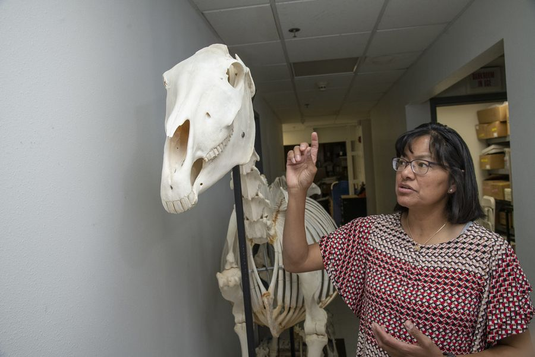
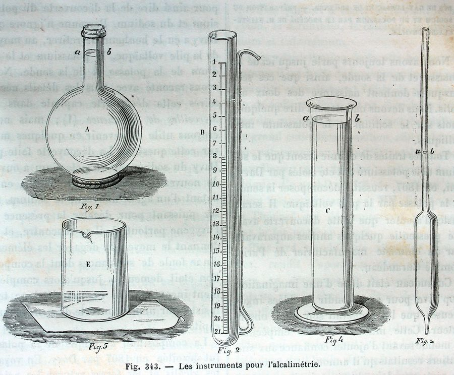

同じ出来事、各国の伝え方
🇯🇵日本Yahoo!ニュース／時事通信／朝日新聞 ・ 20件
 南極の氷床融解、過去の早回し？ 「数千年かけたものが数百年に」
南極の氷床融解、過去の早回し？ 「数千年かけたものが数百年に」 趣里&杉野遥亮 フジ月9でW主演
趣里&杉野遥亮 フジ月9でW主演 フアン氏の復帰 企業統治に批判
フアン氏の復帰 企業統治に批判 容姿をけなされて育った母 愛情ゆらした親族の一言、2歳娘への虐待
容姿をけなされて育った母 愛情ゆらした親族の一言、2歳娘への虐待 ソフトバンク前田悠伍 公私にストイックな生活でつかんだ新人王
ソフトバンク前田悠伍 公私にストイックな生活でつかんだ新人王 創業家トップ「公私混同」追及きっかけは伝説のフェラーリ・ディーノ
創業家トップ「公私混同」追及きっかけは伝説のフェラーリ・ディーノ 「防衛族」怒りの矛先が首相官邸に 防衛費の大幅増額、期待裏切られ
「防衛族」怒りの矛先が首相官邸に 防衛費の大幅増額、期待裏切られ 「デモ」って怖い？ 街角で声を上げる人たちを追って見えたものは
「デモ」って怖い？ 街角で声を上げる人たちを追って見えたものは 「背後から左足撃たれた」 負傷した隊員証言 陸自3人殺傷事件
「背後から左足撃たれた」 負傷した隊員証言 陸自3人殺傷事件 兵庫県、2749万円分の不適切契約 入札せずに予定外の業務追加
兵庫県、2749万円分の不適切契約 入札せずに予定外の業務追加 つくばのデータセンター計画で市民説明会 業者側が回答控える場面も
つくばのデータセンター計画で市民説明会 業者側が回答控える場面も 米物価、前年比３．８％上昇 インフレ根強く―１０月
米物価、前年比３．８％上昇 インフレ根強く―１０月 米 日中やEUなどに新関税を提案
米 日中やEUなどに新関税を提案 米、対日１５％関税へ 過剰生産、中国は２０％
米、対日１５％関税へ 過剰生産、中国は２０％ ＮＹ株、一時１０００ドル超安 ハイテク売りで大幅反落
ＮＹ株、一時１０００ドル超安 ハイテク売りで大幅反落 米ＧＤＰ、４．３％増に上方修正 ＡＩブーム寄与―７～９月期
米ＧＤＰ、４．３％増に上方修正 ＡＩブーム寄与―７～９月期 神奈川の死亡事故 5分以上逆走か
神奈川の死亡事故 5分以上逆走か くら寿司 ちいかわ企画初日で終了
くら寿司 ちいかわ企画初日で終了 佐藤輝がセMVP 表彰式異例の欠席
佐藤輝がセMVP 表彰式異例の欠席 駐輪場で刺され７０歳男性死亡 直前に駅員暴行、容疑で男逮捕―福岡県警
駐輪場で刺され７０歳男性死亡 直前に駅員暴行、容疑で男逮捕―福岡県警🇺🇸アメリカNPR／The New York Times ・ 60件
 Mexico Investigates Possible Cartel Links of Prosecutor Who Aided C.I.A.
Mexico Investigates Possible Cartel Links of Prosecutor Who Aided C.I.A. Gordon Ramsay to Host Revival of BBC’s ‘Top Gear’
Gordon Ramsay to Host Revival of BBC’s ‘Top Gear’ カイロ近郊、石油積載トラックの衝突による道路火災で数十人死亡Road Fire Near Cairo Kills Dozens After Petroleum-Laden Truck Crashes当局によると、ナイル川沿いのギザ近郊で火災により少なくとも31人が死亡し、少なくとも21人が負傷した。
カイロ近郊、石油積載トラックの衝突による道路火災で数十人死亡Road Fire Near Cairo Kills Dozens After Petroleum-Laden Truck Crashes当局によると、ナイル川沿いのギザ近郊で火災により少なくとも31人が死亡し、少なくとも21人が負傷した。 デンバーの男、ウェイモの車両に卵を投げつけていたA Man in Denver Has Been Throwing Eggs at Waymo Vehiclesその男は、リフトのドライバーにリースされている車両群のトヨタ・カローラを運転し、オレンジ色のコーンを使って自動運転車両を閉じ込めた後、卵を投げつけたと、…
デンバーの男、ウェイモの車両に卵を投げつけていたA Man in Denver Has Been Throwing Eggs at Waymo Vehiclesその男は、リフトのドライバーにリースされている車両群のトヨタ・カローラを運転し、オレンジ色のコーンを使って自動運転車両を閉じ込めた後、卵を投げつけたと、… エヌビディア株急騰で3億ドルの利益とのうわさ、取引記録に裏付けなしA Rumored $300 Million Score on Nvidia’s Stock Surge Isn’t Backed by Trading Records3つのデータ提供会社は、インサイダー取引で9000％のリターンが生まれたとするオンライン上の主張を裏付ける証拠はないと述べている。
エヌビディア株急騰で3億ドルの利益とのうわさ、取引記録に裏付けなしA Rumored $300 Million Score on Nvidia’s Stock Surge Isn’t Backed by Trading Records3つのデータ提供会社は、インサイダー取引で9000％のリターンが生まれたとするオンライン上の主張を裏付ける証拠はないと述べている。 感謝祭の食卓でAIについて話す方法How to talk AI around the Thanksgiving table今年の感謝祭、家族と集まっているときにAIの話題が出てきたら。どうすれば生産的で、事実に基づいた会話ができるだろうか。
感謝祭の食卓でAIについて話す方法How to talk AI around the Thanksgiving table今年の感謝祭、家族と集まっているときにAIの話題が出てきたら。どうすれば生産的で、事実に基づいた会話ができるだろうか。 感謝祭の政治を記者たちはどう乗り切るのかHow Our Reporters Navigate Politics at Thanksgiving休日の集まりは楽しいものであると同時に、気まずいものでもある。6人の記者が自らの食卓での議論にどう対処しているか紹介する。（そして、話題を料理の提供に切り替えるときは…
感謝祭の政治を記者たちはどう乗り切るのかHow Our Reporters Navigate Politics at Thanksgiving休日の集まりは楽しいものであると同時に、気まずいものでもある。6人の記者が自らの食卓での議論にどう対処しているか紹介する。（そして、話題を料理の提供に切り替えるときは… 株価が再び急落、投資家はAI・関税・インフレを懸念Stocks Slump Again as Investors Fret About A.I., Tariffs and Inflationエヌビディアなどテクノロジー企業が下落した。投資家は世界貿易の動向と金利の行方を注視していた。
株価が再び急落、投資家はAI・関税・インフレを懸念Stocks Slump Again as Investors Fret About A.I., Tariffs and Inflationエヌビディアなどテクノロジー企業が下落した。投資家は世界貿易の動向と金利の行方を注視していた。 アンソロピックの株式上場、テック新興企業に打撃となる可能性Anthropic’s Stock Debut Could Hurt Tech Start-Ups株価が下落する中、シリコンバレーの若い企業への熱狂的な投資にブレーキをかける可能性がある。
アンソロピックの株式上場、テック新興企業に打撃となる可能性Anthropic’s Stock Debut Could Hurt Tech Start-Ups株価が下落する中、シリコンバレーの若い企業への熱狂的な投資にブレーキをかける可能性がある。 クレジットカードの特典が航空会社の収益性を押し上げているCredit card perks are fueling airline profitability休暇シーズンの飛行機は高くつくことがある。そのため、航空会社は機内でますます多くの提携ブランドのクレジットカードを売り込んでいる。
クレジットカードの特典が航空会社の収益性を押し上げているCredit card perks are fueling airline profitability休暇シーズンの飛行機は高くつくことがある。そのため、航空会社は機内でますます多くの提携ブランドのクレジットカードを売り込んでいる。 第100回メイシーズ・サンクスギビング・デー・パレードが5年かけてどのように作られたかSee How the 100th Macy’s Thanksgiving Day Parade Came Together Over 5 Years第100回の行進に向け、スタッフは2021年から計画、塗装、穴あけなどに取り組んできた。大部分が手作りのこのイベントがどのように形になったのかを紹介する。
第100回メイシーズ・サンクスギビング・デー・パレードが5年かけてどのように作られたかSee How the 100th Macy’s Thanksgiving Day Parade Came Together Over 5 Years第100回の行進に向け、スタッフは2021年から計画、塗装、穴あけなどに取り組んできた。大部分が手作りのこのイベントがどのように形になったのかを紹介する。 アンジェリーナ・ジョリーとブラッド・ピット、虐待疑惑が明らかになった訴訟で和解Angelina Jolie and Brad Pitt Settle Lawsuit That Aired Abuse Allegationsワイナリーをめぐる争いにより、ジョリー氏が、ピット氏が2016年に彼女と子どもたちに対して虐待行為を行ったと主張する内容の詳細が明らかになった。
アンジェリーナ・ジョリーとブラッド・ピット、虐待疑惑が明らかになった訴訟で和解Angelina Jolie and Brad Pitt Settle Lawsuit That Aired Abuse Allegationsワイナリーをめぐる争いにより、ジョリー氏が、ピット氏が2016年に彼女と子どもたちに対して虐待行為を行ったと主張する内容の詳細が明らかになった。 私はセラピスト。こんな患者には家族との縁を切ってほしくないI’m a Therapist. I Wish These Patients Would Not Cut Off Their Family Members.3分の1を超えるアメリカ人が、政治的な意見の違いが原因で友人や家族との関係を失ったと報告している。
私はセラピスト。こんな患者には家族との縁を切ってほしくないI’m a Therapist. I Wish These Patients Would Not Cut Off Their Family Members.3分の1を超えるアメリカ人が、政治的な意見の違いが原因で友人や家族との関係を失ったと報告している。 ICE、ボストンで100万ドルの宝くじに当選した数日後に男性を逮捕ICE Arrests Man in Boston Days After He Wins $1 Million Lottery Prizeエルサルバドル出身のアリエル・ベラスケス＝モラレス氏は、巨大な小切手を持って微笑む写真に写っていた。その画像が移民当局を彼のもとへ導き、彼は国外退去処分となる見込みだ。
ICE、ボストンで100万ドルの宝くじに当選した数日後に男性を逮捕ICE Arrests Man in Boston Days After He Wins $1 Million Lottery Prizeエルサルバドル出身のアリエル・ベラスケス＝モラレス氏は、巨大な小切手を持って微笑む写真に写っていた。その画像が移民当局を彼のもとへ導き、彼は国外退去処分となる見込みだ。 グッドリスト：あなたの1日に喜びを加える5つのことThe Good List: 5 Things to Add Delight to Your Dayバイスシティでのバードウォッチング、とんでもないサンドイッチ、そしてナルシシズムを減らすこと。
グッドリスト：あなたの1日に喜びを加える5つのことThe Good List: 5 Things to Add Delight to Your Dayバイスシティでのバードウォッチング、とんでもないサンドイッチ、そしてナルシシズムを減らすこと。 アイオワでの異例の爆発後、当局と科学者が降下物のリスクを評価After Extraordinary Iowa Explosion, Officials and Scientists Assess Fallout Risks軍と民間の当局は、陸軍の作戦は成功だったと述べた。しかし、住民が汚染から安全であることを確認するため、検査は続けられる。
アイオワでの異例の爆発後、当局と科学者が降下物のリスクを評価After Extraordinary Iowa Explosion, Officials and Scientists Assess Fallout Risks軍と民間の当局は、陸軍の作戦は成功だったと述べた。しかし、住民が汚染から安全であることを確認するため、検査は続けられる。 マムダニ氏、家賃凍結訴訟で大家側に勝利Mamdani Wins Against Landlords in Rent Freeze Lawsuitマンハッタンの判事は、家賃安定化住宅の家賃凍結をめぐって大家が起こした訴訟を棄却し、ゾーラン・マムダニ市長に勝利をもたらした。
マムダニ氏、家賃凍結訴訟で大家側に勝利Mamdani Wins Against Landlords in Rent Freeze Lawsuitマンハッタンの判事は、家賃安定化住宅の家賃凍結をめぐって大家が起こした訴訟を棄却し、ゾーラン・マムダニ市長に勝利をもたらした。 鉛の検査が続く中、アイオワ州は安全宣言を待つIowa Awaits All-Clear as Tests for Lead Continue当局が大気、水、土壌のサンプルを汚染について調べるには、しばらく時間がかかるだろう。
鉛の検査が続く中、アイオワ州は安全宣言を待つIowa Awaits All-Clear as Tests for Lead Continue当局が大気、水、土壌のサンプルを汚染について調べるには、しばらく時間がかかるだろう。 オースティンのこのリトル・フリー・ベーカリーでは、近隣住民がペイストリーを求めて来て、地域とのつながりのために留まるAt this Little Free Bakery in Austin, neighbors come for the pastries and stay for community connectionリトル・フリー・ベーカリーが全国各地に次々と現れている。それぞれの運営方法は少し異なるが、目標は同じだ。近隣住民に甘いお菓子を提供することだ。
オースティンのこのリトル・フリー・ベーカリーでは、近隣住民がペイストリーを求めて来て、地域とのつながりのために留まるAt this Little Free Bakery in Austin, neighbors come for the pastries and stay for community connectionリトル・フリー・ベーカリーが全国各地に次々と現れている。それぞれの運営方法は少し異なるが、目標は同じだ。近隣住民に甘いお菓子を提供することだ。 イスラエルの裁判官ら、ネタニヤフ氏に対する主要な汚職事件の取り下げを示唆Judges in Israel Suggest Dropping Key Corruption Case Against Netanyahuベンヤミン・ネタニヤフ首相は、長年続く裁判で収賄、詐欺、背任の罪に問われており、国を二分している。同氏はすべての不正行為を否定している…
イスラエルの裁判官ら、ネタニヤフ氏に対する主要な汚職事件の取り下げを示唆Judges in Israel Suggest Dropping Key Corruption Case Against Netanyahuベンヤミン・ネタニヤフ首相は、長年続く裁判で収賄、詐欺、背任の罪に問われており、国を二分している。同氏はすべての不正行為を否定している… 太陽とビーチに恵まれた島の楽園モーリシャス、野良犬が多すぎるIsland Paradise of Mauritius Has Sun, Beaches and Too Many Dogs南アフリカ沖の人気観光地モーリシャスは、野良犬があふれるようになった。追いかけられたり襲われたりする住民が増え、多くの人がうんざりしている。
太陽とビーチに恵まれた島の楽園モーリシャス、野良犬が多すぎるIsland Paradise of Mauritius Has Sun, Beaches and Too Many Dogs南アフリカ沖の人気観光地モーリシャスは、野良犬があふれるようになった。追いかけられたり襲われたりする住民が増え、多くの人がうんざりしている。 勉強を頑張れば、成功できるのか？Study Hard, Get Ahead?教育による上昇移動という約束が破られたことが、世界中で若者の抗議を引き起こしている。
勉強を頑張れば、成功できるのか？Study Hard, Get Ahead?教育による上昇移動という約束が破られたことが、世界中で若者の抗議を引き起こしている。 感謝祭の嵐が豪雨と洪水を伴って東海岸を襲う見込みThanksgiving Storm Is Expected to Hit East Coast With Heavy Rain and Flooding沖合で発達中のこの嵐は、ノースカロライナ州上空から内陸へ進み、感謝祭当日を通して北東へゆっくり進む見込みです。
感謝祭の嵐が豪雨と洪水を伴って東海岸を襲う見込みThanksgiving Storm Is Expected to Hit East Coast With Heavy Rain and Flooding沖合で発達中のこの嵐は、ノースカロライナ州上空から内陸へ進み、感謝祭当日を通して北東へゆっくり進む見込みです。 ルクオイルが海外資産を売却へ、ただしクシュナー氏やウィトコフ氏の関係者には売却せずLukoil to Sell Foreign Assets, but Not to Kushner and Witkoff Associatesロシアのエネルギー大手が保有する貴重な資産は、米国主導のコンソーシアムに売却される予定だ。しかし、トランプ氏の2人の特使の中東のビジネス上のつながりは国境障壁は数十年間撤去できない、テキサス州共和党と司法省が合意Border Barrier Cannot be Removed for Decades, Texas Republicans and D.O.J. Agree民主党が州政府を引き継ぐ直前に、トランプ政権とテキサス州の退任予定の共和党当局者が、その撤去を禁じる法的和解に署名した。
ルクオイルが海外資産を売却へ、ただしクシュナー氏やウィトコフ氏の関係者には売却せずLukoil to Sell Foreign Assets, but Not to Kushner and Witkoff Associatesロシアのエネルギー大手が保有する貴重な資産は、米国主導のコンソーシアムに売却される予定だ。しかし、トランプ氏の2人の特使の中東のビジネス上のつながりは国境障壁は数十年間撤去できない、テキサス州共和党と司法省が合意Border Barrier Cannot be Removed for Decades, Texas Republicans and D.O.J. Agree民主党が州政府を引き継ぐ直前に、トランプ政権とテキサス州の退任予定の共和党当局者が、その撤去を禁じる法的和解に署名した。 ニューヨークを舞台にしたシットコムのアンサンブルキャストが、突然国を動かしているThe Ensemble Cast of a New York Sitcom Is Suddenly Running the Countryニューヨークがこの国の沿岸から離れた島だった時代を覚えているだろうか？
ニューヨークを舞台にしたシットコムのアンサンブルキャストが、突然国を動かしているThe Ensemble Cast of a New York Sitcom Is Suddenly Running the Countryニューヨークがこの国の沿岸から離れた島だった時代を覚えているだろうか？ 9・11事件の被告ら、死刑に異議を唱える新たな機会を得るSept. 11 Defendants Get New Opening to Challenge Death Penalty問題となっているのは、計画の首謀者とされるハリド・シェイク・モハメド氏と他の2人の被告が関わる司法取引の条項である。
9・11事件の被告ら、死刑に異議を唱える新たな機会を得るSept. 11 Defendants Get New Opening to Challenge Death Penalty問題となっているのは、計画の首謀者とされるハリド・シェイク・モハメド氏と他の2人の被告が関わる司法取引の条項である。 Medicare Hospice Caps Leave Patients Without Care
Medicare Hospice Caps Leave Patients Without Care Traveling to Bhutan in 2026: Wood-Fired Pizzas and Monks With Cellphones
Traveling to Bhutan in 2026: Wood-Fired Pizzas and Monks With Cellphones ‘Focker In-Law’ Review: Ariana Grande Steals the Show
‘Focker In-Law’ Review: Ariana Grande Steals the Show Another Hot Inflation Reading Keeps Fed on Track to Raise Rates Again
Another Hot Inflation Reading Keeps Fed on Track to Raise Rates Again Libyan Forces Threaten Retaliation Over Ukraine’s Attack on Russian Ships
Libyan Forces Threaten Retaliation Over Ukraine’s Attack on Russian Ships Corporate Oversight Revs Up as Washington Turns Blue AgainAbrego Garcia Arrives in Spain After Voluntarily Leaving U.S.
Corporate Oversight Revs Up as Washington Turns Blue AgainAbrego Garcia Arrives in Spain After Voluntarily Leaving U.S. Officials Brief Congressional Staff on Intelligence Surrounding Nvidia Affair
Officials Brief Congressional Staff on Intelligence Surrounding Nvidia Affair Opposition Makes Progress Toward Ousting Netanyahu, Party Leader Says
Opposition Makes Progress Toward Ousting Netanyahu, Party Leader Says C.I.A. Waterboarded More Detainees Than It Admitted, F.B.I. Interview Suggests
C.I.A. Waterboarded More Detainees Than It Admitted, F.B.I. Interview Suggests The U.S. Isn’t in a Recession. Try Telling Many Americans That.
The U.S. Isn’t in a Recession. Try Telling Many Americans That. ‘My Duty as a Grandson’: Gen Z Men Are as Likely as Women to Provide Elder Care
‘My Duty as a Grandson’: Gen Z Men Are as Likely as Women to Provide Elder Care Japan’s Leader, in Break With U.S., Defends International Criminal Court
Japan’s Leader, in Break With U.S., Defends International Criminal Court 2 Men Charged After Break-In at Prince William and Kate’s Country HomeGroup of Senate Democrats push to add freshman to leadership3 Dead and Many More Trapped in Indonesian Mine After Heavy RainfallNorth Korea Kicks Out Swiss Diplomats in Spat Linked to Ukraine WarNorway Has Closed Its Last Coal Mine, Ending a Way of Life in the Arctic
2 Men Charged After Break-In at Prince William and Kate’s Country HomeGroup of Senate Democrats push to add freshman to leadership3 Dead and Many More Trapped in Indonesian Mine After Heavy RainfallNorth Korea Kicks Out Swiss Diplomats in Spat Linked to Ukraine WarNorway Has Closed Its Last Coal Mine, Ending a Way of Life in the Arctic Van Hollen’s Challenge to Schumer Highlights Democratic Rift on Israel
Van Hollen’s Challenge to Schumer Highlights Democratic Rift on Israel With Measles on the Rise, Some Families Are Forgoing Thanksgiving TravelSouth African President Wins Reprieve From ‘Farmgate’ Impeachment Investigation
With Measles on the Rise, Some Families Are Forgoing Thanksgiving TravelSouth African President Wins Reprieve From ‘Farmgate’ Impeachment Investigation Martha Firestone Ford, Owner of Detroit Lions, Dies at 101
Martha Firestone Ford, Owner of Detroit Lions, Dies at 101 Pierre Bellocq, Who Drew Horse Racing Cartoons as ‘Peb,’ Has DiedBizarre Material May Herald the Future of Computer ChipsTrump Administration Unveils New Tariffs for China, EU and More, Citing Unfair PracticesHow to Celebrate Thanksgiving as an Expat
Pierre Bellocq, Who Drew Horse Racing Cartoons as ‘Peb,’ Has DiedBizarre Material May Herald the Future of Computer ChipsTrump Administration Unveils New Tariffs for China, EU and More, Citing Unfair PracticesHow to Celebrate Thanksgiving as an Expat Humanity Bests Technology in Paris Opera’s ‘Ring’
Humanity Bests Technology in Paris Opera’s ‘Ring’ ‘All of a Sudden’ Review: Ryusuke Hamaguchi’s Exquisite New Drama
‘All of a Sudden’ Review: Ryusuke Hamaguchi’s Exquisite New Drama Visual Tour of NYC’s Holiday Store Windows: Macy’s, Saks and More
Visual Tour of NYC’s Holiday Store Windows: Macy’s, Saks and More Why Aren’t the Midterms Over in Louisiana? Ask the Supreme Court.
Why Aren’t the Midterms Over in Louisiana? Ask the Supreme Court. India and U.S. Artist Nick Cave Win Venice Biennale’s Top PrizesHow American Thanksgiving took root -- and evolved -- in Liberia
India and U.S. Artist Nick Cave Win Venice Biennale’s Top PrizesHow American Thanksgiving took root -- and evolved -- in Liberia What to know before using AI agents for Black Friday shopping
What to know before using AI agents for Black Friday shopping🇨🇳中国South China Morning Post（香港） ・ 16件
米中がAI覇権を争う中、小さなプレーヤーたちが何が有効かを見極めるAs US and China battle for AI dominance, small fry figure out what works見知らぬ人たちは、最近のある土曜日の午後、ニューヨークのウェスト・ビレッジ地区にあるカフェに集まり、ポップアップ、庭園、アートギャラリー、リヴへ向かう前に深センでのAPECにおける大々的な演出。しかし小さなことはどうなのか？Grand gestures at Apec in Shenzhen. But what about the small things?先週木曜日に世界の首脳たちが深セン中心部のAPEC会場を去るとすぐに、その地域ではフードデリバリーが再開し、小雨が降り始めた。その地域は中国が議員らの台湾訪問は「最初の一線」を越えたと言う中、コロンビアは沈黙Colombia quiet as China says lawmakers’ Taiwan trip crossed its ‘first red line’台湾を訪問しているコロンビア議員の超党派グループは中国から正式な抗議を受けたが、アベラルド・デ・ラ・エスプリエージャ大統領の政権は…燃料トラック横転後、エジプト・カイロで大規模火災、少なくとも30人死亡Massive blaze kills at least 30 in Cairo, Egypt, after fuel truck overturns保健省によると、燃料トラックが混雑した場所で横転したと報じられた後、エジプトの首都で水曜日に火災が発生し、少なくとも30人が死亡したUS finds no evidence China told Alice Huang to spy on Nvidia’s Jensen Huang, report saysInjured delivery workers could get up to a year of sick pay under proposed schemeUS Army detonates lead-based explosives in Iowa despite fears of toxic dustFrom dawn to dusk: why Hong Kong’s early sunsets beat the winter solsticeHundreds evacuated from Japanese mall after fatal stabbing of parking attendantHong Kong ticketing hack exposes data of 1.3 million users as cyber breaches surgeUS proposes new tariffs on China a week after Trump-Xi summitChina embeds ‘loyal wingman’ drone simulations in fighter pilot trainingHong Kong government holds firm on proposed 3-year certification renewal for teachersCould potential US tariffs put the US-China trade truce at risk?US says Latin America is too dangerous – unless you are seeking asylumChina calls on Netherlands to help safeguard industrial and supply chains🇰🇷韓国The Korea Times／Yonhap News (English)／聯合ニュース ・ 133件
 아찔한 출렁다리·따끈한 찐빵…강원 12월 여행지 원주·횡성
아찔한 출렁다리·따끈한 찐빵…강원 12월 여행지 원주·횡성 부산 사하구 장림포구서 부네치아 낙낙데이…낙화놀이 장관
부산 사하구 장림포구서 부네치아 낙낙데이…낙화놀이 장관 부산시 캐릭터 '부기', 부울경 공동 팝업스토어 참여
부산시 캐릭터 '부기', 부울경 공동 팝업스토어 참여 고양시, 북한산성 연차별 보수·정비로 국가 유산 보존 강화예비문화유산 선정된 '독고탁 만화' 원고…보존·관리 강화롯데百 명동, 지하광장·대형전광판 조성…'빛의 랜드마크' 변신강남인강, AI 강좌 3개 신설…기초부터 자격증 도전까지송파청년센터 28일 개관…청년 맞춤형 프로그램 운영[연합뉴스 이 시각 헤드라인] - 07:30英밴드 듀란듀란 기타리스트 앤디 테일러 별세…향년 65세불가해한 세계와 거대한 음모…핀천식 하드보일드 '그림자 사건'사찰 이어 성당까지…CU·GS25, '가상 편의점' 마케팅 경쟁金正恩氏、核施設を現地指導…「戦術核の多領域での活用に注目すべきだ」김정은, 핵시설 현지지도…"전술핵 다영역 활용화 주목해야"（ソウル＝聯合ニュース）クォン・スヒョン記者＝金正恩北朝鮮国務委員長が核物質生産基地や核兵器研究所などを訪れ、生産実態を点検し、戦術核兵器を多様な…ビッサム、第3四半期の仮想通貨処分損690億ウォン…前年同期の86倍빗썸, 3분기 가상자산 처분손실 690억원…작년 동기 86배（ソウル＝聯合ニュース）パク・スヒョン記者＝今年第3四半期、ビッサムが自ら取得した仮想通貨の処分損は690億ウォンとなり、前年同期の86倍に達したことが分かった…DRAMへの懸念でマイクロン、2日で15％急落…高値から半値にD램 우려에 마이크론 이틀새 15% 급락…고점 반토막（ソウル＝聯合ニュース）チョン・ジュホ記者＝米国のメモリー半導体代表株マイクロンは25日（現地時間）、4.5％安の601.3ドルで取引を終え、2日間で15％…ダングン、AIエージェントを前面にネイバーカフェに挑戦状당근, AI 에이전트 앞세워 네이버 카페에 도전장（ソウル＝聯合ニュース）ハン・サンヨン記者＝ダングンはカフェ運営を支援する人工知能（AI）エージェントを導入し、ネイバーが主導してきたオンラインカフェ市場に挑戦状を突き付けた…忠清北道はおおむね晴れ…昼の最高気温16度충북 대체로 맑음…낮 최고 16도（清州＝聯合ニュース）チョン・ギョンファン記者＝26日、忠清北道はおおむね晴れる見込みだ。チュニジア大使館、ソウルで2026年「世界オリーブの木の日」を祝賀Tunisia Embassy celebrates 2026 World Olive Tree Day in Seoul古代から、オリーブの木は平和、知恵、調和の象徴とされてきた。オリーブの木の3000年の歴史とその文化的な…ソウルで黒人クリエイターのコミュニティを築くBuilding a community for Black creatives in Seoulマリー・ノエルが2024年に韓国へ移住したとき、計画はシンプルだった。脚本家兼俳優として映画制作のキャリアを続ける方法を見つけることだった。彼女の職業は彼女に…ガソリン価格が下落してもインフレは依然として不快なほど高く、FRBの課題は増大Inflation remains uncomfortably high despite retreat in gas prices as challenges mount for the Fedワシントン発—先月、主要なインフレ指標は高止まりした。ガソリン価格が落ち着いたにもかかわらず、高コストが連邦準備制度理事会（FRB）にとって依然として課題であることを示す形となった…米当局、中国が幹部にエヌビディアCEOへのスパイを指示した証拠なし＝WSJ報道US finds no evidence China directed executive to spy on Nvidia CEO, WSJ reports米当局は、テクノロジー企業幹部のアリス・フアン氏が北京からエヌビディアのジェンスン・フアンCEOをスパイするよう指示されていた証拠は見つからなかったと、ウォール・ストリート・ジャーナルが報じた…米司法省、フアン氏の復職前に調査を開始せず＝関係者US Justice Dept did not open probe into Huang before reinstatement, sources sayワシントン発—米司法省は、ドナルド・トランプ米大統領がジェンスン・フアン氏の復帰を後押しする前に、同氏に対する正式な調査を実施していなかった…イラン、イスラエルが化学兵器の主張で米国を戦争へ引きずり込もうとしていると非難Iran says Israel trying to deceive US into war with chemical weapons claimテヘラン発—イランのアッバス・アラグチ外相は水曜日、イスラエルの閣僚が…と主張した後、イスラエルが米国を再び戦争に引きずり込もうとしていると述べた…ナスダックとS&P500が下落も、安値から持ち直す—投資家がバーゲンハンティングNasdaq, S&P 500 ease, but off lows of the day as investors seek bargains水曜日、S&P500とナスダックはテクノロジー株の売りで下落したが、米国の感謝祭を前にバーゲンハンターが買いに入り、序盤の損失を大幅に縮小した…金が3％下落し1年超ぶり安値、米インフレがさらに上昇したデータを受けてGold falls 3% to more than one-year low after data shows US inflation rose further金は3％超下落し、1年超ぶりの安値をつけた。強い米インフレデータが連邦準備制度理事会（FRB）を巡る懸念を和らげることができなかったため…北朝鮮、事務所再開から数週間でスイス外交官を追放—制裁を巡りN. Korea expels Swiss diplomat over sanctions weeks after office reopening北朝鮮は、平壌にあるスイス外交事務所の責任者を追放し、48時間以内に出国するよう命じたと、同国外務省が水曜日に発表した…『Hope』が青龍映画賞の最優秀作品賞を受賞、ソルとチョンが『Possible Love』で演技賞'Hope' wins top Blue Dragon award; Sul, Jeon take acting honors for 'Possible Love'ナ・ホンジン監督のSFスリラー『Hope』が水曜日、第47回青龍映画賞で最優秀作品賞を受賞した。一方、イ・チャンドン監督の『Possible Love』は…LGヘロビジョン、CJ ENMの4チャンネル送信中断を保留…土壇場の交渉LG헬로비전, CJ ENM 4개 채널 송출 중단 보류…막판 협상（ソウル＝聯合ニュース）ユ・ヒョンミン記者＝LGヘロビジョン［037560］が26日0時から順次開始する予定だったCJ ENM［035760］の4チャンネル…北朝鮮の指導者、戦術核の多様な分野での使用を強調N.K. leader stresses use of tactical nukes in diverse areasソウル、11月26日（聯合ニュース）――北朝鮮の金正恩指導者は核施設を訪問した…【速報】金正恩氏「核保有の正当性と核能力の質量的強化は不可逆的な現実」[속보] 김정은 "핵보유 정당성·핵능력 질량적 강화 불가역적 현실"(昌原・北面の住宅で火災…60代男性が死亡した状態で発見창원 북면 주택서 불…60대 남성 숨진 채 발견（昌原＝聯合ニュース）朴英民（パク・ヨンミン）記者＝25日午後9時7分ごろ、慶尚南道昌原市義昌区北面の1階建て住宅で火災が発生した。【ファクトチェック】前科者は改名できないのか？…「リットニャンイ」の事例で見る改名の現状[팩트체크] 전과자는 개명 안 된다?…'리트냥이' 사례로 본 개명 현주소（ソウル＝聯合ニュース）クォン・ヘジン記者＝人工知能（AI）を活用した試験不正行為の疑惑を受けていた法学適性試験（LEET）満点者の故イ・ジヌ氏が生前に…【ソーシャル＋】「笑おうと思って見たのに涙が」…見知らぬ人から受ける激しい慰め[소셜＋] "웃으려고 봤는데 눈물이"…낯선 이에게 받는 격렬한 위로（ソウル＝聯合ニュース）ソ・ヒョジュインターン記者＝「私よりも私を信じてくれる人」、「面白いと思ったのに涙が出る」全体の交通事故は減ったのに…バス事故は4年で57％増加전체 교통사고 줄었는데…버스 사고는 4년 새 57% 늘어（ソウル＝聯合ニュース）ハン・ジウン記者＝全体の交通事故発生が減少する間、市内・市外・高速・村・貸切バスなど事業用バスの事故は4年連続で増えたもの…HNIX「製造・造船業に特化したAI転換を拡大…産業セキュリティー市場も攻略」HNIX "제조·조선업 특화 AI전환 확대…산업 보안시장도 공략"（ソウル＝聯合ニュース）ハン・サンヨン記者＝建設会社エイチエヌアイエヌシー（HN Inc）から分離したITサービス企業エイチエヌアイエックス（HNIX）が製造・造船現場…（速報）北朝鮮の指導者、核施設を視察し、さまざまな分野での戦術核の使用に言及：KCNA(URGENT) N. Korean leader inspects nuclear facility, calls attention to use of tactical nukes in diverse areas: KCNA（了）済州は曇り、夜は時々雲が多く…日中最高18～20度제주 흐리다 밤에 가끔 구름 많아…낮 최고 18∼20도（済州＝聯合ニュース）チョン・ジヘ記者＝木曜日である26日、済州はおおむね曇り、夜は時々雲が多くなる見込みだ。
고양시, 북한산성 연차별 보수·정비로 국가 유산 보존 강화예비문화유산 선정된 '독고탁 만화' 원고…보존·관리 강화롯데百 명동, 지하광장·대형전광판 조성…'빛의 랜드마크' 변신강남인강, AI 강좌 3개 신설…기초부터 자격증 도전까지송파청년센터 28일 개관…청년 맞춤형 프로그램 운영[연합뉴스 이 시각 헤드라인] - 07:30英밴드 듀란듀란 기타리스트 앤디 테일러 별세…향년 65세불가해한 세계와 거대한 음모…핀천식 하드보일드 '그림자 사건'사찰 이어 성당까지…CU·GS25, '가상 편의점' 마케팅 경쟁金正恩氏、核施設を現地指導…「戦術核の多領域での活用に注目すべきだ」김정은, 핵시설 현지지도…"전술핵 다영역 활용화 주목해야"（ソウル＝聯合ニュース）クォン・スヒョン記者＝金正恩北朝鮮国務委員長が核物質生産基地や核兵器研究所などを訪れ、生産実態を点検し、戦術核兵器を多様な…ビッサム、第3四半期の仮想通貨処分損690億ウォン…前年同期の86倍빗썸, 3분기 가상자산 처분손실 690억원…작년 동기 86배（ソウル＝聯合ニュース）パク・スヒョン記者＝今年第3四半期、ビッサムが自ら取得した仮想通貨の処分損は690億ウォンとなり、前年同期の86倍に達したことが分かった…DRAMへの懸念でマイクロン、2日で15％急落…高値から半値にD램 우려에 마이크론 이틀새 15% 급락…고점 반토막（ソウル＝聯合ニュース）チョン・ジュホ記者＝米国のメモリー半導体代表株マイクロンは25日（現地時間）、4.5％安の601.3ドルで取引を終え、2日間で15％…ダングン、AIエージェントを前面にネイバーカフェに挑戦状당근, AI 에이전트 앞세워 네이버 카페에 도전장（ソウル＝聯合ニュース）ハン・サンヨン記者＝ダングンはカフェ運営を支援する人工知能（AI）エージェントを導入し、ネイバーが主導してきたオンラインカフェ市場に挑戦状を突き付けた…忠清北道はおおむね晴れ…昼の最高気温16度충북 대체로 맑음…낮 최고 16도（清州＝聯合ニュース）チョン・ギョンファン記者＝26日、忠清北道はおおむね晴れる見込みだ。チュニジア大使館、ソウルで2026年「世界オリーブの木の日」を祝賀Tunisia Embassy celebrates 2026 World Olive Tree Day in Seoul古代から、オリーブの木は平和、知恵、調和の象徴とされてきた。オリーブの木の3000年の歴史とその文化的な…ソウルで黒人クリエイターのコミュニティを築くBuilding a community for Black creatives in Seoulマリー・ノエルが2024年に韓国へ移住したとき、計画はシンプルだった。脚本家兼俳優として映画制作のキャリアを続ける方法を見つけることだった。彼女の職業は彼女に…ガソリン価格が下落してもインフレは依然として不快なほど高く、FRBの課題は増大Inflation remains uncomfortably high despite retreat in gas prices as challenges mount for the Fedワシントン発—先月、主要なインフレ指標は高止まりした。ガソリン価格が落ち着いたにもかかわらず、高コストが連邦準備制度理事会（FRB）にとって依然として課題であることを示す形となった…米当局、中国が幹部にエヌビディアCEOへのスパイを指示した証拠なし＝WSJ報道US finds no evidence China directed executive to spy on Nvidia CEO, WSJ reports米当局は、テクノロジー企業幹部のアリス・フアン氏が北京からエヌビディアのジェンスン・フアンCEOをスパイするよう指示されていた証拠は見つからなかったと、ウォール・ストリート・ジャーナルが報じた…米司法省、フアン氏の復職前に調査を開始せず＝関係者US Justice Dept did not open probe into Huang before reinstatement, sources sayワシントン発—米司法省は、ドナルド・トランプ米大統領がジェンスン・フアン氏の復帰を後押しする前に、同氏に対する正式な調査を実施していなかった…イラン、イスラエルが化学兵器の主張で米国を戦争へ引きずり込もうとしていると非難Iran says Israel trying to deceive US into war with chemical weapons claimテヘラン発—イランのアッバス・アラグチ外相は水曜日、イスラエルの閣僚が…と主張した後、イスラエルが米国を再び戦争に引きずり込もうとしていると述べた…ナスダックとS&P500が下落も、安値から持ち直す—投資家がバーゲンハンティングNasdaq, S&P 500 ease, but off lows of the day as investors seek bargains水曜日、S&P500とナスダックはテクノロジー株の売りで下落したが、米国の感謝祭を前にバーゲンハンターが買いに入り、序盤の損失を大幅に縮小した…金が3％下落し1年超ぶり安値、米インフレがさらに上昇したデータを受けてGold falls 3% to more than one-year low after data shows US inflation rose further金は3％超下落し、1年超ぶりの安値をつけた。強い米インフレデータが連邦準備制度理事会（FRB）を巡る懸念を和らげることができなかったため…北朝鮮、事務所再開から数週間でスイス外交官を追放—制裁を巡りN. Korea expels Swiss diplomat over sanctions weeks after office reopening北朝鮮は、平壌にあるスイス外交事務所の責任者を追放し、48時間以内に出国するよう命じたと、同国外務省が水曜日に発表した…『Hope』が青龍映画賞の最優秀作品賞を受賞、ソルとチョンが『Possible Love』で演技賞'Hope' wins top Blue Dragon award; Sul, Jeon take acting honors for 'Possible Love'ナ・ホンジン監督のSFスリラー『Hope』が水曜日、第47回青龍映画賞で最優秀作品賞を受賞した。一方、イ・チャンドン監督の『Possible Love』は…LGヘロビジョン、CJ ENMの4チャンネル送信中断を保留…土壇場の交渉LG헬로비전, CJ ENM 4개 채널 송출 중단 보류…막판 협상（ソウル＝聯合ニュース）ユ・ヒョンミン記者＝LGヘロビジョン［037560］が26日0時から順次開始する予定だったCJ ENM［035760］の4チャンネル…北朝鮮の指導者、戦術核の多様な分野での使用を強調N.K. leader stresses use of tactical nukes in diverse areasソウル、11月26日（聯合ニュース）――北朝鮮の金正恩指導者は核施設を訪問した…【速報】金正恩氏「核保有の正当性と核能力の質量的強化は不可逆的な現実」[속보] 김정은 "핵보유 정당성·핵능력 질량적 강화 불가역적 현실"(昌原・北面の住宅で火災…60代男性が死亡した状態で発見창원 북면 주택서 불…60대 남성 숨진 채 발견（昌原＝聯合ニュース）朴英民（パク・ヨンミン）記者＝25日午後9時7分ごろ、慶尚南道昌原市義昌区北面の1階建て住宅で火災が発生した。【ファクトチェック】前科者は改名できないのか？…「リットニャンイ」の事例で見る改名の現状[팩트체크] 전과자는 개명 안 된다?…'리트냥이' 사례로 본 개명 현주소（ソウル＝聯合ニュース）クォン・ヘジン記者＝人工知能（AI）を活用した試験不正行為の疑惑を受けていた法学適性試験（LEET）満点者の故イ・ジヌ氏が生前に…【ソーシャル＋】「笑おうと思って見たのに涙が」…見知らぬ人から受ける激しい慰め[소셜＋] "웃으려고 봤는데 눈물이"…낯선 이에게 받는 격렬한 위로（ソウル＝聯合ニュース）ソ・ヒョジュインターン記者＝「私よりも私を信じてくれる人」、「面白いと思ったのに涙が出る」全体の交通事故は減ったのに…バス事故は4年で57％増加전체 교통사고 줄었는데…버스 사고는 4년 새 57% 늘어（ソウル＝聯合ニュース）ハン・ジウン記者＝全体の交通事故発生が減少する間、市内・市外・高速・村・貸切バスなど事業用バスの事故は4年連続で増えたもの…HNIX「製造・造船業に特化したAI転換を拡大…産業セキュリティー市場も攻略」HNIX "제조·조선업 특화 AI전환 확대…산업 보안시장도 공략"（ソウル＝聯合ニュース）ハン・サンヨン記者＝建設会社エイチエヌアイエヌシー（HN Inc）から分離したITサービス企業エイチエヌアイエックス（HNIX）が製造・造船現場…（速報）北朝鮮の指導者、核施設を視察し、さまざまな分野での戦術核の使用に言及：KCNA(URGENT) N. Korean leader inspects nuclear facility, calls attention to use of tactical nukes in diverse areas: KCNA（了）済州は曇り、夜は時々雲が多く…日中最高18～20度제주 흐리다 밤에 가끔 구름 많아…낮 최고 18∼20도（済州＝聯合ニュース）チョン・ジヘ記者＝木曜日である26日、済州はおおむね曇り、夜は時々雲が多くなる見込みだ。 「中国で拘束された情報員の釈放とブラック要員情報の交換を検討したが断念」"'中구금 정보원 석방-블랙요원 정보' 교환 검토하다 포기"（ソウル＝聯合ニュース）ハ・チェリム記者＝国内企業出身の韓国人エンジニアが、半導体技術流出の状況を情報当局に伝えていたところ、中国でスパイ罪で逮捕され、3年…江原内陸の山地で雪や雨…嶺東は乾燥と強風に注意강원 내륙 산지 눈·비…영동 건조·강풍 주의（春川＝聯合ニュース）ヤン・ジウン記者＝木曜日である26日、江原地域はおおむね曇りで、午後から次第に晴れる見込みです。
「中国で拘束された情報員の釈放とブラック要員情報の交換を検討したが断念」"'中구금 정보원 석방-블랙요원 정보' 교환 검토하다 포기"（ソウル＝聯合ニュース）ハ・チェリム記者＝国内企業出身の韓国人エンジニアが、半導体技術流出の状況を情報当局に伝えていたところ、中国でスパイ罪で逮捕され、3年…江原内陸の山地で雪や雨…嶺東は乾燥と強風に注意강원 내륙 산지 눈·비…영동 건조·강풍 주의（春川＝聯合ニュース）ヤン・ジウン記者＝木曜日である26日、江原地域はおおむね曇りで、午後から次第に晴れる見込みです。 ◇明日の試合（27日）◇내일의 경기(27일)◆27日（金）
◇明日の試合（27日）◇내일의 경기(27일)◆27日（金） ◇今日の試合（26日）◇오늘의 경기(26일)◆26日（木）［ペット］「フード・おやつも近所のコンビニで」…専用棚を増やし、売り上げも急増[반려동물] "사료·간식도 동네 편의점서"…전용매대 늘리고 매출도 '쑥'（ソウル＝聯合ニュース）キム・セリン記者＝ペットを飼う家庭が増える中、フードやおやつなどを近くのコンビニエンスストアで購入しようとする需要も大きくなっていることが明らかになっ…【速報】金正恩氏、核施設を現地指導…「戦術核の多領域での活用に注目すべきだ」[속보] 김정은, 핵시설 현지지도…"전술핵 다영역 활용화 주목해야"（全北、昼は12～17度まで上がり穏やか…群山のオチョン島は強風注意報전북 낮 12∼17도까지 올라 포근…군산 어청도는 강풍주의보（全州＝聯合ニュース）ナ・ボベ記者＝木曜日の26日、全北はおおむね晴れる見込みだ。［キム・ギルウォンのヘルスノート］高額な健康診断パッケージの落とし穴…韓国人の70％が「検査の効果を過信」[김길원의 헬스노트] 고가 건강검진 패키지의 함정…한국인 70% '검사 효과 과신'（ソウル＝聯合ニュース）キム・ギルウォン記者＝年末を迎え、健康診断を急ぐ人が多い。親の健康を気遣う子どもたちが、高額な総合健康診断を贈り物にし…アップビットからバイナンスへ半年で4000億ウォン純流出…「デリバティブ需要」업비트서 바이낸스로 반년간 4천억원 순유출…"파생상품 수요"（ソウル＝聯合ニュース）パク・スヒョン記者＝国内最大の仮想通貨取引所であるアップビットから海外取引所バイナンスへ、最近半年間で4000億ウォン相当を超える仮想通貨が純流出…ニューヨーク株式市場、AI投資への不安で連日乱高下…ナスダック0.6％下落뉴욕증시, AI 투자 불안에 연일 롤러코스터…나스닥 0.6%↓（ニューヨーク＝聯合ニュース）イム・スジョン特派員＝米ニューヨーク株式市場は25日（現地時間）、人工知能（AI）投資の見通しをめぐる不確実性の中、激しい変動相場を…大邱・慶北はおおむね晴れ…日中の最高気温10～16度대구·경북 대체로 맑음…낮 최고 10∼16도（大邱＝聯合ニュース）キム・ソンヒョン記者＝26日、大邱と慶北はおおむね晴れる見込みだ。地方のがん・希少疾患患者の精密検査に支障の恐れ…検体の再委託制限めぐり議論지방 암·희귀환자 정밀검사 차질 빚나…검체 재위탁 제한 논란（ソウル＝聯合ニュース）ソ・ハンギ記者＝政府が来年1月から血液や組織などの検体検査の再委託を原則として禁止することにしたことで、地方のがん患者や希少疾患の…大田・世宗・忠南はおおむね晴れ…日中の最高気温16度대전·세종·충남 대체로 맑음…낮 최고 16도（大田＝聯合ニュース）イ・ジェリム記者＝木曜日の26日、大田・世宗・忠南地域はおおむね晴れた天気になる見通しだ。釜山・蔚山・慶南は時々雲が多く…慶南内陸は昼夜の寒暖差に注意부산·울산·경남 가끔 구름 많아…경남 내륙 일교차 주의（昌原＝聯合ニュース）朴英敏（パク・ヨンミン）記者＝木曜日の26日、釜山・蔚山・慶南は時々雲が多くなる見込みだ。AI試験の不正行為用機器販売に関連するウォレットに28億ウォン相当のテザーが流入AI 시험 부정행위 장비 판매 관련 지갑에 28억원어치 테더 유입（ソウル＝聯合ニュース）ユ・ドンヒョン記者＝試験の不正行為に使われた人工知能（AI）電子機器の販売に関連する仮想通貨ウォレットに、約28億ウォン規模のステーブルコインが…［コスピ・コスダック 前取引日（25日）の主な公示］[코스피·코스닥 전 거래일(25일) 주요공시]▲サムスン電気［009150］、1.7兆ウォンの自社株消却…株価上昇で規模は12倍に↑人の代わりに電話をかけて契約するAI…業務代行はどこまで사람 대신 전화 걸고 계약하는 AI…업무대리 어디까지（ソウル＝聯合ニュース）パク・ヒョンビン記者＝人工知能（AI）が利用者に代わって電話をかけ、予約や相談などを処理するサービスが広がり、国内外の企業が…現代自動車グループ、早ければ今日社長団人事…危機の中で安定に重点현대차그룹, 이르면 오늘 사장단 인사…위기 속 안정에 방점（ソウル＝聯合ニュース）チャン・ハナ、ホン・ギュビン記者＝現代自動車グループは早ければ26日に社長団人事を行う。地域間の住居格差緩和策を模索…国際住宅都市金融フォーラム지역 간 주거 격차 완화 방안 모색…국제주택도시금융포럼（世宗＝聯合ニュース）オ・ジンソン記者＝国内外の住宅・金融専門家が、地域間の住居格差を緩和し、住宅市場の安定を図るための金融革新案を論議…直取引農家の納品を支援…「ソウルローカル、つながる」購買相談会직거래 농가 납품 돕는다…서울로컬 이어지다 구매상담회（ソウル＝聯合ニュース）キム・ジュンテ記者＝ソウル市は前日、東大門デザインプラザ（DDP）デザインホールで、ソウル市直取引市場に参加した農家を対象に「2026ソ…ロッテマート、中小企業の海外進出支援の功績で共生成長委員長賞롯데마트, 중소기업 해외 진출 지원 공로로 동반성장위원장상（ソウル＝聯合ニュース）チョ・ミンジョン記者＝ロッテマートは25日、ソウル市江南区のウェスティンソウルパルナスで開かれた「2026 CSRフィルムフェスティバルアワード」で…ロッテハイマート「家電修理オールケア」、50日で加入者5万人突破롯데하이마트 '가전수리올케어', 50일 만에 가입자 5만명 돌파（ソウル＝聯合ニュース）チョン・スヨン記者＝ロッテハイマートは、10月に初めて披露した家電修理費支援サービス「家電修理オールケア」が50日で加入者5万人…銀行の不良債権比率、第3四半期に低下Banks' bad-loan ratio down in Q3ソウル、11月26日（聯合ニュース）――韓国の銀行の不良債権比率はわずかに低下した…お菓子に込められた科学技術を学ぼう…ソウル市立科学館特別企画展과자에 담긴 과학기술 알아봐요…서울시립과학관 특별기획전（ソウル＝聯合ニュース）キム・ジュンテ記者＝ソウル市立科学館は特別企画展「外はサクサクに、中は科学で」を今月27日から来年5月30日まで科学館3…イーマート、クリスマスツリー最大30％割引…6千ウォン台の実用型も販売이마트, 크리스마스 트리 최대 30% 할인…6천원대 실속형도 판매（ソウル＝聯合ニュース）チョン・スヨン記者＝イーマートは来月2日まで、クリスマスの代表的なツリー商品を新世界ポイント積立時に最大30％割引する行事を開催…ソウル植物園、中国の仙湖植物園と植物保全・共同研究で提携서울식물원, 중국 선호식물원과 식물 보전·공동연구 맞손（ソウル＝聯合ニュース）ユ・ハンジュ記者＝ソウル植物園は、中国広東省深圳市にある中国科学院深圳仙湖植物園で、植物保全と研究協力のための業務協約を…「ロッテ百貨店VIPの平均購入回数、上位10％の一般顧客の3.4倍」"롯데백화점 VIP 평균 구매 횟수, 상위 10% 일반 고객의 3.4배"（ソウル＝聯合ニュース）チョン・スヨン記者＝ロッテ百貨店のVIP顧客は、購買額上位10％に入る一般顧客よりも、百貨店をはるかに頻繁に訪れて消費するという…国民の84％「サービス産業は重要」…就職の好みは製造業より低い국민 84% "서비스산업 중요"…취업 선호도는 제조업보다 낮아（ソウル＝聯合ニュース）チャン・ハナ記者＝国民の10人に8人の割合でサービス産業を経済成長の核心産業と認識してはいるが、雇用の質と競争力に対する…丹陽・莞島郡、人口減少地域の青少年成長支援優秀地域に選定단양·완도군, 인구감소지역 청소년 성장지원 우수지역 선정（ソウル＝聯合ニュース）ヤン・ジョンウ記者＝性平等家族部は、人口減少地域の青少年の成長を支援する事業で高い評価を受けた忠北丹陽郡と全南莞島郡に、成…
◇今日の試合（26日）◇오늘의 경기(26일)◆26日（木）［ペット］「フード・おやつも近所のコンビニで」…専用棚を増やし、売り上げも急増[반려동물] "사료·간식도 동네 편의점서"…전용매대 늘리고 매출도 '쑥'（ソウル＝聯合ニュース）キム・セリン記者＝ペットを飼う家庭が増える中、フードやおやつなどを近くのコンビニエンスストアで購入しようとする需要も大きくなっていることが明らかになっ…【速報】金正恩氏、核施設を現地指導…「戦術核の多領域での活用に注目すべきだ」[속보] 김정은, 핵시설 현지지도…"전술핵 다영역 활용화 주목해야"（全北、昼は12～17度まで上がり穏やか…群山のオチョン島は強風注意報전북 낮 12∼17도까지 올라 포근…군산 어청도는 강풍주의보（全州＝聯合ニュース）ナ・ボベ記者＝木曜日の26日、全北はおおむね晴れる見込みだ。［キム・ギルウォンのヘルスノート］高額な健康診断パッケージの落とし穴…韓国人の70％が「検査の効果を過信」[김길원의 헬스노트] 고가 건강검진 패키지의 함정…한국인 70% '검사 효과 과신'（ソウル＝聯合ニュース）キム・ギルウォン記者＝年末を迎え、健康診断を急ぐ人が多い。親の健康を気遣う子どもたちが、高額な総合健康診断を贈り物にし…アップビットからバイナンスへ半年で4000億ウォン純流出…「デリバティブ需要」업비트서 바이낸스로 반년간 4천억원 순유출…"파생상품 수요"（ソウル＝聯合ニュース）パク・スヒョン記者＝国内最大の仮想通貨取引所であるアップビットから海外取引所バイナンスへ、最近半年間で4000億ウォン相当を超える仮想通貨が純流出…ニューヨーク株式市場、AI投資への不安で連日乱高下…ナスダック0.6％下落뉴욕증시, AI 투자 불안에 연일 롤러코스터…나스닥 0.6%↓（ニューヨーク＝聯合ニュース）イム・スジョン特派員＝米ニューヨーク株式市場は25日（現地時間）、人工知能（AI）投資の見通しをめぐる不確実性の中、激しい変動相場を…大邱・慶北はおおむね晴れ…日中の最高気温10～16度대구·경북 대체로 맑음…낮 최고 10∼16도（大邱＝聯合ニュース）キム・ソンヒョン記者＝26日、大邱と慶北はおおむね晴れる見込みだ。地方のがん・希少疾患患者の精密検査に支障の恐れ…検体の再委託制限めぐり議論지방 암·희귀환자 정밀검사 차질 빚나…검체 재위탁 제한 논란（ソウル＝聯合ニュース）ソ・ハンギ記者＝政府が来年1月から血液や組織などの検体検査の再委託を原則として禁止することにしたことで、地方のがん患者や希少疾患の…大田・世宗・忠南はおおむね晴れ…日中の最高気温16度대전·세종·충남 대체로 맑음…낮 최고 16도（大田＝聯合ニュース）イ・ジェリム記者＝木曜日の26日、大田・世宗・忠南地域はおおむね晴れた天気になる見通しだ。釜山・蔚山・慶南は時々雲が多く…慶南内陸は昼夜の寒暖差に注意부산·울산·경남 가끔 구름 많아…경남 내륙 일교차 주의（昌原＝聯合ニュース）朴英敏（パク・ヨンミン）記者＝木曜日の26日、釜山・蔚山・慶南は時々雲が多くなる見込みだ。AI試験の不正行為用機器販売に関連するウォレットに28億ウォン相当のテザーが流入AI 시험 부정행위 장비 판매 관련 지갑에 28억원어치 테더 유입（ソウル＝聯合ニュース）ユ・ドンヒョン記者＝試験の不正行為に使われた人工知能（AI）電子機器の販売に関連する仮想通貨ウォレットに、約28億ウォン規模のステーブルコインが…［コスピ・コスダック 前取引日（25日）の主な公示］[코스피·코스닥 전 거래일(25일) 주요공시]▲サムスン電気［009150］、1.7兆ウォンの自社株消却…株価上昇で規模は12倍に↑人の代わりに電話をかけて契約するAI…業務代行はどこまで사람 대신 전화 걸고 계약하는 AI…업무대리 어디까지（ソウル＝聯合ニュース）パク・ヒョンビン記者＝人工知能（AI）が利用者に代わって電話をかけ、予約や相談などを処理するサービスが広がり、国内外の企業が…現代自動車グループ、早ければ今日社長団人事…危機の中で安定に重点현대차그룹, 이르면 오늘 사장단 인사…위기 속 안정에 방점（ソウル＝聯合ニュース）チャン・ハナ、ホン・ギュビン記者＝現代自動車グループは早ければ26日に社長団人事を行う。地域間の住居格差緩和策を模索…国際住宅都市金融フォーラム지역 간 주거 격차 완화 방안 모색…국제주택도시금융포럼（世宗＝聯合ニュース）オ・ジンソン記者＝国内外の住宅・金融専門家が、地域間の住居格差を緩和し、住宅市場の安定を図るための金融革新案を論議…直取引農家の納品を支援…「ソウルローカル、つながる」購買相談会직거래 농가 납품 돕는다…서울로컬 이어지다 구매상담회（ソウル＝聯合ニュース）キム・ジュンテ記者＝ソウル市は前日、東大門デザインプラザ（DDP）デザインホールで、ソウル市直取引市場に参加した農家を対象に「2026ソ…ロッテマート、中小企業の海外進出支援の功績で共生成長委員長賞롯데마트, 중소기업 해외 진출 지원 공로로 동반성장위원장상（ソウル＝聯合ニュース）チョ・ミンジョン記者＝ロッテマートは25日、ソウル市江南区のウェスティンソウルパルナスで開かれた「2026 CSRフィルムフェスティバルアワード」で…ロッテハイマート「家電修理オールケア」、50日で加入者5万人突破롯데하이마트 '가전수리올케어', 50일 만에 가입자 5만명 돌파（ソウル＝聯合ニュース）チョン・スヨン記者＝ロッテハイマートは、10月に初めて披露した家電修理費支援サービス「家電修理オールケア」が50日で加入者5万人…銀行の不良債権比率、第3四半期に低下Banks' bad-loan ratio down in Q3ソウル、11月26日（聯合ニュース）――韓国の銀行の不良債権比率はわずかに低下した…お菓子に込められた科学技術を学ぼう…ソウル市立科学館特別企画展과자에 담긴 과학기술 알아봐요…서울시립과학관 특별기획전（ソウル＝聯合ニュース）キム・ジュンテ記者＝ソウル市立科学館は特別企画展「外はサクサクに、中は科学で」を今月27日から来年5月30日まで科学館3…イーマート、クリスマスツリー最大30％割引…6千ウォン台の実用型も販売이마트, 크리스마스 트리 최대 30% 할인…6천원대 실속형도 판매（ソウル＝聯合ニュース）チョン・スヨン記者＝イーマートは来月2日まで、クリスマスの代表的なツリー商品を新世界ポイント積立時に最大30％割引する行事を開催…ソウル植物園、中国の仙湖植物園と植物保全・共同研究で提携서울식물원, 중국 선호식물원과 식물 보전·공동연구 맞손（ソウル＝聯合ニュース）ユ・ハンジュ記者＝ソウル植物園は、中国広東省深圳市にある中国科学院深圳仙湖植物園で、植物保全と研究協力のための業務協約を…「ロッテ百貨店VIPの平均購入回数、上位10％の一般顧客の3.4倍」"롯데백화점 VIP 평균 구매 횟수, 상위 10% 일반 고객의 3.4배"（ソウル＝聯合ニュース）チョン・スヨン記者＝ロッテ百貨店のVIP顧客は、購買額上位10％に入る一般顧客よりも、百貨店をはるかに頻繁に訪れて消費するという…国民の84％「サービス産業は重要」…就職の好みは製造業より低い국민 84% "서비스산업 중요"…취업 선호도는 제조업보다 낮아（ソウル＝聯合ニュース）チャン・ハナ記者＝国民の10人に8人の割合でサービス産業を経済成長の核心産業と認識してはいるが、雇用の質と競争力に対する…丹陽・莞島郡、人口減少地域の青少年成長支援優秀地域に選定단양·완도군, 인구감소지역 청소년 성장지원 우수지역 선정（ソウル＝聯合ニュース）ヤン・ジョンウ記者＝性平等家族部は、人口減少地域の青少年の成長を支援する事業で高い評価を受けた忠北丹陽郡と全南莞島郡に、成… ハン・ジュンホ行政安全部長官候補者、今日初出勤…聴聞会準備に突入한준호 행안장관 후보자, 오늘 첫 출근…청문회 준비 돌입（ソウル＝聯合ニュース）チャ・ミンジ記者＝ハン・ジュンホ行政安全部長官候補者が26日に候補者事務室へ出勤し、人事聴聞会の準備に本格的に乗り出す。湖南圏生物資源館、市民科学者らと国内未記録種を発見호남권생물자원관, 시민과학자들과 국내 미기록종 발견（ソウル＝聯合ニュース）イ・ジェヨン記者＝国立湖南圏生物資源館は5～11月に50人余りの市民科学者とともに黒山島、サオク島、巨文島の生物多様性を調査し、生物5…［インタビュー］ラリオ農業開発基金総裁「投資不足が食糧危機を招く」[인터뷰] 라리오 농업개발기금 총재 "투자 부족이 식량 위기 불러"（ソウル＝聯合ニュース）ユン・ミンヒョク記者＝「世界の食糧危機の根本的な原因の一つは、インフラへの投資不足です」ソウル信用保証財団、小規模事業者の規制革新の功績で「大統領表彰」受賞서울신용보증재단, 소상공인 규제혁신 공로 '대통령 표창' 수상（ソウル＝聯合ニュース）キム・ドンギュ記者＝ソウル信用保証財団は25日、汝矣島のKBIZホールで開かれた中小ベンチャー企業部主管の「2026年大韓民国規制革新大賞」…9月、個人事業者・家計信用貸出の不良債権比率が12年ぶりに最高9월 개인사업자·가계신용대출 부실채권비율 12년 만에 최고（ソウル＝聯合ニュース）カン・リュナ記者＝今年9月末、国内銀行の個人事業者向け貸出と家計信用貸出の不良債権比率がそろって12年ぶりの最高値を記録した。「戒厳令の国務会議での偽証」 尹氏、きょう最高裁が判断…1審・2審は無罪'계엄 국무회의 위증' 尹 오늘 대법 판단…1·2심 무죄（ソウル＝聯合ニュース）イ・ヨンソプ記者＝韓悳洙前首相の内乱裁判で偽証した疑いで起訴された尹錫悦前大統領は、26日に最高裁の判断を受ける。国際原油価格、フーシ派のサウジ製油所攻撃で急騰…ブレント3.5％上昇국제유가, 후티 사우디 정유시설 공격에 급등…브렌트 3.5%↑（ニューヨーク＝聯合ニュース）イム・スジョン特派員＝イエメンの親イラン反政府勢力フーシ派がサウジアラビア最大の製油所を攻撃したとの報を受け、国際原油価格が急騰した。今年最後の金融通貨委員会…金利を3.25％に引き上げ、成長見通しを上方修正する見込み올해 마지막 금통위…금리 3.25%로 올리고 성장전망 상향할듯（ソウル＝聯合ニュース）ハン・ジフン、チェ・セロム、イ・ドフン記者＝韓国銀行金融通貨委員会は26日、今年最後の金融政策方向会議で基準金利（現在年3.00％）を…S&P、エヌビディアの信用格付け引き下げを検討…「経営・ガバナンス評価が悪化」S&P, 엔비디아 신용등급 강등 검토…"경영·지배구조 평가 악화"（ニューヨーク＝聯合ニュース）イム・スジョン特派員＝人工知能（AI）半導体企業エヌビディアが、ジェンスン・フアン最高経営責任者（CEO）の復帰の過程で浮上したガバナンス問題と…朝まで首都圏・江原に雨粒・雪…中部地方に強い風아침까지 수도권·강원에 빗방울·눈…중부지방에 강한 바람（ソウル＝聯合ニュース）チョ・ヒョンヨン記者＝木曜日の26日、首都圏など一部の地域では雨または雪が降る見込みだ。トランプ氏、選挙に負けても「関税は我が道」…中国に「40％を課す可能性も」と圧力트럼프, 선거 져도 '관세 마이웨이'…中에 '40% 때릴수도' 압박（ワシントン＝聯合ニュース）イ・ユミ特派員＝ドナルド・トランプ米大統領は中間選挙での敗北にもかかわらず関税政策を堅持し、連邦最高裁判所の判決で崩れた関税の壁を再建…エジプト・カイロの外郭道路でタンカー衝突火災…少なくとも30人死亡이집트 카이로 외곽도로서 유조차 충돌 화재…최소 30명 사망（カイロ＝聯合ニュース）キム・サンフン特派員＝エジプトの首都カイロを取り囲む高速道路でタンカーの衝突事故により大規模な火災が発生し、少なくとも30人が死亡したと…「挑発への応酬は下策」…人事聴聞会を控えた洪益杓の過去の発言に注目"도발에 응징은 하책"…청문회 앞둔 홍익표의 과거 발언 주목（ソウル＝聯合ニュース）河采林記者＝洪益杓統一部長官候補者は、8年間にわたる南北関係の断絶の中で、李在明政権の朝鮮半島平和共存政策の指揮官に抜てきされ…国税庁長官候補者の人事聴聞会…非居住1住宅などをめぐる攻防が予想される국세청장 후보자 인사청문회…비거주 1주택 등 공방 예상（ソウル＝聯合ニュース）呉圭鎮記者＝国会財政経済企画委員会は26日、安徳洙国税庁長官候補者に対する人事聴聞会を開く。金民錫、きょう忠北で消防士と現場懇談会…民願を聴取김민석, 오늘 충북서 소방관과 현장 간담회…민원 청취（ソウル＝聯合ニュース）呉圭鎮記者＝共に民主党の金民錫代表は26日、忠北を訪れ、消防士と懇談会を開き、悩みを聞く。「1審有罪・2審無罪」金錫俊釜山教育監、きょう最高裁で判決'1심 유죄·2심 무죄' 김석준 부산교육감 오늘 대법 선고（釜山＝聯合ニュース）車根鎬記者＝全国教職員労働組合（全教組）の解職教員の特別採用過程で職権を乱用した容疑で起訴され、1審で有罪、2審で…[健康フォーカス]「マインドフルネスがうまくできれば精神的健康は良好で、SNSへの過度な没入は少ない可能性」[건강포커스] "마음챙김 잘하면 정신건강 양호하고 SNS 과몰입 적을 가능성"（ソウル＝聯合ニュース）李柱栄記者＝今この瞬間の思考・感情や周囲の状況を即座に気づき、注意と行動を意図的にコントロールする「マインドフルネス」（mindfulness…国民の力、きょう龍仁で「操作起訴特検法」糾弾大会국힘, 오늘 용인서 '조작기소 특검법' 규탄 대회（ソウル＝聯合ニュース）李律立記者＝国民の力は26日、京畿道龍仁市で、操作起訴特検法に反対する「100％違憲・李在明脱獄法、龍仁糾弾大会」を…ブケレのエルサルバドル刑務所「セコット」、中南米右派の「聖地」になるか부켈레의 엘살바도르 감옥 '세코트' 중남미 우파의 '성지' 되나（メキシコシティ＝聯合ニュース）ソン・グァンホ特派員＝24時間ずっと照明がついたままの明るい光景。眠ることさえ難しい狭い監房の中には、受刑者たちがひしめいている…米民主党、下院で259議席に増加…36年ぶりの最多議席美민주, 하원 259석으로 늘어…36년만에 최다 의석（ワシントン＝聯合ニュース）ホン・ジョンギュ特派員＝米民主党の連邦下院議席が259議席に増えた。これは民主党が1990年以降に確保した最も多い下院…米、韓国の「過剰生産」で半導体・自動車を標的に…「関税25％引き上げの余地」と脅し美, '韓과잉생산' 반도체·車 조준…'관세 25% 인상여지' 으름장（ワシントン＝聯合ニュース）ペク・ナリ特派員＝米通商代表部（USTR）が25日（現地時間）に公表した過剰生産に関する関税予告報告書には、韓国の戦略産業育成…ネタニヤフ氏「裁判は崩壊した」…汚職裁判の終結を促す네타냐후 "재판은 무너졌다"…부패 재판 종결 촉구（カイロ＝聯合ニュース）キム・サンフン特派員＝イスラエルの裁判所が汚職裁判の主要な刑事容疑の大半を取り下げるよう勧告したことを受け、ベンヤミン・ネタニヤフ首相は自らの…철도노조, 오전 9시부터 '안전운행 투쟁'…일부 열차 지연 예상미국서 유독성 軍폭발물 4.5t 터트려 폐기…주민들 납오염 우려美FCC, 스페이스X '우주 데이터센터' 위성 100만기 배치 승인폴란드, 우크라 접경에 비행금지구역 설정…러 도발 대응U.S. proposes excess capacity tariffs on S. Korean goods within agreed 15 pct ceiling'트럼프 이민정책 비판 상징' 엘살바도르인, 스페인 도착美금융범죄 단속기관도 뚫렸다…해킹에 일부 시스템 가동중단美무역대표, 젠슨황 복귀에 "트럼프, 경제·안보 균형 맞춰"엄마 '미스 유니버스' 첫 탄생…7살 딸 둔 기혼자가 왕관 썼다美 3분기 성장률 4.3%…투자·소비 호조에 3년 만에 최고(종합)민주노총 위원장 선거 결선으로…양경수·엄길용 2파전역대급 대미흑자 관세 부메랑 피했다…15% 사수에 일단 안도이란군 "호르무즈서 LNG선·유조선 기뢰 충돌 화재"EU, 새 美관세에 "유럽, 과잉생산 원천 아냐…15% 상한 준수돼야"美, 중국 등 14개 경제주체에 과잉생산 관세…韓 15% 상한 유지(종합2보)'농장 돈다발 게이트' 남아공 대통령, 탄핵 위기 일단 벗어나北, 김여정 담화 하루만에 스위스 외교사무소 전격폐쇄(종합)스페인 카나리아제도에 하루새 이민자 2천100명…역대 최다에르도안, 리비아 동부 지도자와 전격 회동(종합)美무역대표, '과잉생산 관세' 근거로 "韓 정부지원·인프라계획"뉴욕증시, AI 투자 우려에 기술주 투매…나스닥 3%대 급락세美USTR, 14개 경제주체에 과잉생산 관세…韓 15% 상한 유지(종합)[알림] 연합뉴스 콘텐츠 저작권 고지청룡영화상 작품상에 '호프'…설경구·전도연 남녀주연상 석권뉴욕증시, AI 매도세·관세 우려에 하락 출발"EU, '우리에 가축 사육 금지' 약속 어겨…이행 일정 제시해야"美10월 PCE 물가 3.8%↑…12월 금리인상 전망 굳어져(종합)
ハン・ジュンホ行政安全部長官候補者、今日初出勤…聴聞会準備に突入한준호 행안장관 후보자, 오늘 첫 출근…청문회 준비 돌입（ソウル＝聯合ニュース）チャ・ミンジ記者＝ハン・ジュンホ行政安全部長官候補者が26日に候補者事務室へ出勤し、人事聴聞会の準備に本格的に乗り出す。湖南圏生物資源館、市民科学者らと国内未記録種を発見호남권생물자원관, 시민과학자들과 국내 미기록종 발견（ソウル＝聯合ニュース）イ・ジェヨン記者＝国立湖南圏生物資源館は5～11月に50人余りの市民科学者とともに黒山島、サオク島、巨文島の生物多様性を調査し、生物5…［インタビュー］ラリオ農業開発基金総裁「投資不足が食糧危機を招く」[인터뷰] 라리오 농업개발기금 총재 "투자 부족이 식량 위기 불러"（ソウル＝聯合ニュース）ユン・ミンヒョク記者＝「世界の食糧危機の根本的な原因の一つは、インフラへの投資不足です」ソウル信用保証財団、小規模事業者の規制革新の功績で「大統領表彰」受賞서울신용보증재단, 소상공인 규제혁신 공로 '대통령 표창' 수상（ソウル＝聯合ニュース）キム・ドンギュ記者＝ソウル信用保証財団は25日、汝矣島のKBIZホールで開かれた中小ベンチャー企業部主管の「2026年大韓民国規制革新大賞」…9月、個人事業者・家計信用貸出の不良債権比率が12年ぶりに最高9월 개인사업자·가계신용대출 부실채권비율 12년 만에 최고（ソウル＝聯合ニュース）カン・リュナ記者＝今年9月末、国内銀行の個人事業者向け貸出と家計信用貸出の不良債権比率がそろって12年ぶりの最高値を記録した。「戒厳令の国務会議での偽証」 尹氏、きょう最高裁が判断…1審・2審は無罪'계엄 국무회의 위증' 尹 오늘 대법 판단…1·2심 무죄（ソウル＝聯合ニュース）イ・ヨンソプ記者＝韓悳洙前首相の内乱裁判で偽証した疑いで起訴された尹錫悦前大統領は、26日に最高裁の判断を受ける。国際原油価格、フーシ派のサウジ製油所攻撃で急騰…ブレント3.5％上昇국제유가, 후티 사우디 정유시설 공격에 급등…브렌트 3.5%↑（ニューヨーク＝聯合ニュース）イム・スジョン特派員＝イエメンの親イラン反政府勢力フーシ派がサウジアラビア最大の製油所を攻撃したとの報を受け、国際原油価格が急騰した。今年最後の金融通貨委員会…金利を3.25％に引き上げ、成長見通しを上方修正する見込み올해 마지막 금통위…금리 3.25%로 올리고 성장전망 상향할듯（ソウル＝聯合ニュース）ハン・ジフン、チェ・セロム、イ・ドフン記者＝韓国銀行金融通貨委員会は26日、今年最後の金融政策方向会議で基準金利（現在年3.00％）を…S&P、エヌビディアの信用格付け引き下げを検討…「経営・ガバナンス評価が悪化」S&P, 엔비디아 신용등급 강등 검토…"경영·지배구조 평가 악화"（ニューヨーク＝聯合ニュース）イム・スジョン特派員＝人工知能（AI）半導体企業エヌビディアが、ジェンスン・フアン最高経営責任者（CEO）の復帰の過程で浮上したガバナンス問題と…朝まで首都圏・江原に雨粒・雪…中部地方に強い風아침까지 수도권·강원에 빗방울·눈…중부지방에 강한 바람（ソウル＝聯合ニュース）チョ・ヒョンヨン記者＝木曜日の26日、首都圏など一部の地域では雨または雪が降る見込みだ。トランプ氏、選挙に負けても「関税は我が道」…中国に「40％を課す可能性も」と圧力트럼프, 선거 져도 '관세 마이웨이'…中에 '40% 때릴수도' 압박（ワシントン＝聯合ニュース）イ・ユミ特派員＝ドナルド・トランプ米大統領は中間選挙での敗北にもかかわらず関税政策を堅持し、連邦最高裁判所の判決で崩れた関税の壁を再建…エジプト・カイロの外郭道路でタンカー衝突火災…少なくとも30人死亡이집트 카이로 외곽도로서 유조차 충돌 화재…최소 30명 사망（カイロ＝聯合ニュース）キム・サンフン特派員＝エジプトの首都カイロを取り囲む高速道路でタンカーの衝突事故により大規模な火災が発生し、少なくとも30人が死亡したと…「挑発への応酬は下策」…人事聴聞会を控えた洪益杓の過去の発言に注目"도발에 응징은 하책"…청문회 앞둔 홍익표의 과거 발언 주목（ソウル＝聯合ニュース）河采林記者＝洪益杓統一部長官候補者は、8年間にわたる南北関係の断絶の中で、李在明政権の朝鮮半島平和共存政策の指揮官に抜てきされ…国税庁長官候補者の人事聴聞会…非居住1住宅などをめぐる攻防が予想される국세청장 후보자 인사청문회…비거주 1주택 등 공방 예상（ソウル＝聯合ニュース）呉圭鎮記者＝国会財政経済企画委員会は26日、安徳洙国税庁長官候補者に対する人事聴聞会を開く。金民錫、きょう忠北で消防士と現場懇談会…民願を聴取김민석, 오늘 충북서 소방관과 현장 간담회…민원 청취（ソウル＝聯合ニュース）呉圭鎮記者＝共に民主党の金民錫代表は26日、忠北を訪れ、消防士と懇談会を開き、悩みを聞く。「1審有罪・2審無罪」金錫俊釜山教育監、きょう最高裁で判決'1심 유죄·2심 무죄' 김석준 부산교육감 오늘 대법 선고（釜山＝聯合ニュース）車根鎬記者＝全国教職員労働組合（全教組）の解職教員の特別採用過程で職権を乱用した容疑で起訴され、1審で有罪、2審で…[健康フォーカス]「マインドフルネスがうまくできれば精神的健康は良好で、SNSへの過度な没入は少ない可能性」[건강포커스] "마음챙김 잘하면 정신건강 양호하고 SNS 과몰입 적을 가능성"（ソウル＝聯合ニュース）李柱栄記者＝今この瞬間の思考・感情や周囲の状況を即座に気づき、注意と行動を意図的にコントロールする「マインドフルネス」（mindfulness…国民の力、きょう龍仁で「操作起訴特検法」糾弾大会국힘, 오늘 용인서 '조작기소 특검법' 규탄 대회（ソウル＝聯合ニュース）李律立記者＝国民の力は26日、京畿道龍仁市で、操作起訴特検法に反対する「100％違憲・李在明脱獄法、龍仁糾弾大会」を…ブケレのエルサルバドル刑務所「セコット」、中南米右派の「聖地」になるか부켈레의 엘살바도르 감옥 '세코트' 중남미 우파의 '성지' 되나（メキシコシティ＝聯合ニュース）ソン・グァンホ特派員＝24時間ずっと照明がついたままの明るい光景。眠ることさえ難しい狭い監房の中には、受刑者たちがひしめいている…米民主党、下院で259議席に増加…36年ぶりの最多議席美민주, 하원 259석으로 늘어…36년만에 최다 의석（ワシントン＝聯合ニュース）ホン・ジョンギュ特派員＝米民主党の連邦下院議席が259議席に増えた。これは民主党が1990年以降に確保した最も多い下院…米、韓国の「過剰生産」で半導体・自動車を標的に…「関税25％引き上げの余地」と脅し美, '韓과잉생산' 반도체·車 조준…'관세 25% 인상여지' 으름장（ワシントン＝聯合ニュース）ペク・ナリ特派員＝米通商代表部（USTR）が25日（現地時間）に公表した過剰生産に関する関税予告報告書には、韓国の戦略産業育成…ネタニヤフ氏「裁判は崩壊した」…汚職裁判の終結を促す네타냐후 "재판은 무너졌다"…부패 재판 종결 촉구（カイロ＝聯合ニュース）キム・サンフン特派員＝イスラエルの裁判所が汚職裁判の主要な刑事容疑の大半を取り下げるよう勧告したことを受け、ベンヤミン・ネタニヤフ首相は自らの…철도노조, 오전 9시부터 '안전운행 투쟁'…일부 열차 지연 예상미국서 유독성 軍폭발물 4.5t 터트려 폐기…주민들 납오염 우려美FCC, 스페이스X '우주 데이터센터' 위성 100만기 배치 승인폴란드, 우크라 접경에 비행금지구역 설정…러 도발 대응U.S. proposes excess capacity tariffs on S. Korean goods within agreed 15 pct ceiling'트럼프 이민정책 비판 상징' 엘살바도르인, 스페인 도착美금융범죄 단속기관도 뚫렸다…해킹에 일부 시스템 가동중단美무역대표, 젠슨황 복귀에 "트럼프, 경제·안보 균형 맞춰"엄마 '미스 유니버스' 첫 탄생…7살 딸 둔 기혼자가 왕관 썼다美 3분기 성장률 4.3%…투자·소비 호조에 3년 만에 최고(종합)민주노총 위원장 선거 결선으로…양경수·엄길용 2파전역대급 대미흑자 관세 부메랑 피했다…15% 사수에 일단 안도이란군 "호르무즈서 LNG선·유조선 기뢰 충돌 화재"EU, 새 美관세에 "유럽, 과잉생산 원천 아냐…15% 상한 준수돼야"美, 중국 등 14개 경제주체에 과잉생산 관세…韓 15% 상한 유지(종합2보)'농장 돈다발 게이트' 남아공 대통령, 탄핵 위기 일단 벗어나北, 김여정 담화 하루만에 스위스 외교사무소 전격폐쇄(종합)스페인 카나리아제도에 하루새 이민자 2천100명…역대 최다에르도안, 리비아 동부 지도자와 전격 회동(종합)美무역대표, '과잉생산 관세' 근거로 "韓 정부지원·인프라계획"뉴욕증시, AI 투자 우려에 기술주 투매…나스닥 3%대 급락세美USTR, 14개 경제주체에 과잉생산 관세…韓 15% 상한 유지(종합)[알림] 연합뉴스 콘텐츠 저작권 고지청룡영화상 작품상에 '호프'…설경구·전도연 남녀주연상 석권뉴욕증시, AI 매도세·관세 우려에 하락 출발"EU, '우리에 가축 사육 금지' 약속 어겨…이행 일정 제시해야"美10월 PCE 물가 3.8%↑…12월 금리인상 전망 굳어져(종합) 한국, U-17 월드컵 조별리그 전승 32강행…에콰도르 3-2 제압구례 주택서 80대 2명 쓰러진 채 발견…1명 사망프랑스, 우크라 리비아 작전 두둔…"자위권 행사"강금실, 인사청문 준비 본격화…'친중' 野공세 대응 주목(종합)
한국, U-17 월드컵 조별리그 전승 32강행…에콰도르 3-2 제압구례 주택서 80대 2명 쓰러진 채 발견…1명 사망프랑스, 우크라 리비아 작전 두둔…"자위권 행사"강금실, 인사청문 준비 본격화…'친중' 野공세 대응 주목(종합) K리그1 전북, ACLE 5차전 원정서 가시마에 0-3 완패(종합)'中이 대미공작 제안' 의혹에…국정원 "전혀 사실 아니다"
K리그1 전북, ACLE 5차전 원정서 가시마에 0-3 완패(종합)'中이 대미공작 제안' 의혹에…국정원 "전혀 사실 아니다" [AFC축구 전적] 반둥 3-1 서울北외교차관 "北中 우의 견고…中외교부와 교류·협력 강화"美 3분기 성장률 잠정치 4.3%…속보치보다 0.9%p 상향미 10월 PCE 물가 전년대비 3.8%↑…예상치 부합美USTR, 14개 경제주체에 과잉생산 관세…"韓 15% 상한 유지"한국 OECD 가입 30주년…사과나무 심었다정차 중인 승합차에 불…인명피해 없어러 "연료시장 상황 긴박…휘발유 수출 금지 연장 검토"中·네덜란드, 반도체업체 갈등 속 베이징서 외교장관회담[속보] 美 10월 PCE 물가 전년 대비 3.8%↑…예상치 부합네타냐후 부패 혐의 벗나…법원, 핵심 사건 공소 취하 권고(종합)[속보] 美 USTR "한국, 일본, EU 등 관세 15% 상한 유지"
[AFC축구 전적] 반둥 3-1 서울北외교차관 "北中 우의 견고…中외교부와 교류·협력 강화"美 3분기 성장률 잠정치 4.3%…속보치보다 0.9%p 상향미 10월 PCE 물가 전년대비 3.8%↑…예상치 부합美USTR, 14개 경제주체에 과잉생산 관세…"韓 15% 상한 유지"한국 OECD 가입 30주년…사과나무 심었다정차 중인 승합차에 불…인명피해 없어러 "연료시장 상황 긴박…휘발유 수출 금지 연장 검토"中·네덜란드, 반도체업체 갈등 속 베이징서 외교장관회담[속보] 美 10월 PCE 물가 전년 대비 3.8%↑…예상치 부합네타냐후 부패 혐의 벗나…법원, 핵심 사건 공소 취하 권고(종합)[속보] 美 USTR "한국, 일본, EU 등 관세 15% 상한 유지"🇬🇧イギリスBBC News／The Guardian ・ 100件
 スポルティング対マンチェスター・ユナイテッド：チャンピオンズリーグ－ライブSporting v Manchester United: Champions League – live⚽️エスタディオ・ジョゼ・アルヴァラーデでの試合はグリニッジ標準時午後8時にキックオフ ⚽️ライブスコアボード｜クロックウォッチでフォロー その中でポッチはスクワイアーズ流の扱いを受け、「自分の気持ちを落ち着かせようと…
スポルティング対マンチェスター・ユナイテッド：チャンピオンズリーグ－ライブSporting v Manchester United: Champions League – live⚽️エスタディオ・ジョゼ・アルヴァラーデでの試合はグリニッジ標準時午後8時にキックオフ ⚽️ライブスコアボード｜クロックウォッチでフォロー その中でポッチはスクワイアーズ流の扱いを受け、「自分の気持ちを落ち着かせようと… クラブ・ブルッヘ対リバプール、リール対バイエルン・ミュンヘンほか：チャンピオンズリーグ・クロックウォッチ－ライブClub Brugge v Liverpool, Lille v Bayern Munich and more: Champions League clockwatch – live⚽️水曜日のグリニッジ標準時午後8時からの試合の最新情報 ⚽️ライブスコアボード｜スポルティング対マン・ユナイテッド｜サイモンへのメール そしてプラハでも同様に試合が終わり、スラヴィアは2度も…デュラン・デュランのギタリスト、アンディ・テイラー氏が65歳で死去Duran Duran guitarist Andy Taylor dies, aged 65バンドの最大のヒット曲のいくつかを共作したミュージシャンは、前立腺がんの治療を受けていた。デュラン・デュランのギタリスト、アンディ・テイラー氏が65歳で死去Andy Taylor, guitarist in Duran Duran, dies aged 651980年代に大きなチャートでの成功を収めたミュージシャンは、2018年に前立腺がんと診断されていた。1980年代のポップ界のメガスター、デュラン・デュランのギタリスト、アンディ・テイラー氏が死去した。
クラブ・ブルッヘ対リバプール、リール対バイエルン・ミュンヘンほか：チャンピオンズリーグ・クロックウォッチ－ライブClub Brugge v Liverpool, Lille v Bayern Munich and more: Champions League clockwatch – live⚽️水曜日のグリニッジ標準時午後8時からの試合の最新情報 ⚽️ライブスコアボード｜スポルティング対マン・ユナイテッド｜サイモンへのメール そしてプラハでも同様に試合が終わり、スラヴィアは2度も…デュラン・デュランのギタリスト、アンディ・テイラー氏が65歳で死去Duran Duran guitarist Andy Taylor dies, aged 65バンドの最大のヒット曲のいくつかを共作したミュージシャンは、前立腺がんの治療を受けていた。デュラン・デュランのギタリスト、アンディ・テイラー氏が65歳で死去Andy Taylor, guitarist in Duran Duran, dies aged 651980年代に大きなチャートでの成功を収めたミュージシャンは、2018年に前立腺がんと診断されていた。1980年代のポップ界のメガスター、デュラン・デュランのギタリスト、アンディ・テイラー氏が死去した。 「100人の証人がいる」：アーロン・ロジャースの爆発的ESPNインタビューの最も衝撃的な10の瞬間‘I have 100 witnesses’: the 10 wildest moments from Aaron Rodgers’ explosive ESPN interviewハーフタイムのハドルでのトラブルからプレーコールに関する最後通告まで、水曜日のクォーターバックによる徹底批判的なESPN出演の主なポイントは以下の通り…フリンダース島の山火事が1万3000ヘクタールに拡大、タスマニアの住宅や財産に危険Flinders Island bushfire grows to 13,000 hectares with Tasmanian homes and properties at risk火災は木曜日に島の南西部に向けて「著しく」延焼していると、タスマニア消防局が発表した。パウンドランドが破綻、1万1000人の雇用が危機にPoundland collapses putting 11,000 jobs at risk同ディスカウントチェーンは、所有者が買い手を見つけられなかったため、管財人の管理下に入った。
「100人の証人がいる」：アーロン・ロジャースの爆発的ESPNインタビューの最も衝撃的な10の瞬間‘I have 100 witnesses’: the 10 wildest moments from Aaron Rodgers’ explosive ESPN interviewハーフタイムのハドルでのトラブルからプレーコールに関する最後通告まで、水曜日のクォーターバックによる徹底批判的なESPN出演の主なポイントは以下の通り…フリンダース島の山火事が1万3000ヘクタールに拡大、タスマニアの住宅や財産に危険Flinders Island bushfire grows to 13,000 hectares with Tasmanian homes and properties at risk火災は木曜日に島の南西部に向けて「著しく」延焼していると、タスマニア消防局が発表した。パウンドランドが破綻、1万1000人の雇用が危機にPoundland collapses putting 11,000 jobs at risk同ディスカウントチェーンは、所有者が買い手を見つけられなかったため、管財人の管理下に入った。 規制当局トップ、マンチェスター・シティと対峙する「覚悟がある」Regulator chief 'has stomach' to face Man Cityイングランドサッカーの独立規制当局の委員長は、マンチェスター・シティに対して将来的な措置を取ることについて「覚悟がある」と議員らに語った。カイロの高速道路で燃料タンカーが衝突し大火災、少なくとも30人が死亡At least 30 killed in massive fire as fuel tanker crashes on Cairo highwayエジプトの首都の交通量の多い環状道路でタンカーが横転したと報じられ、さらに19人が負傷した。
規制当局トップ、マンチェスター・シティと対峙する「覚悟がある」Regulator chief 'has stomach' to face Man Cityイングランドサッカーの独立規制当局の委員長は、マンチェスター・シティに対して将来的な措置を取ることについて「覚悟がある」と議員らに語った。カイロの高速道路で燃料タンカーが衝突し大火災、少なくとも30人が死亡At least 30 killed in massive fire as fuel tanker crashes on Cairo highwayエジプトの首都の交通量の多い環状道路でタンカーが横転したと報じられ、さらに19人が負傷した。 オリバー・グラスナー、英語を学ばないノッティンガム・フォレストの選手たちを批判Oliver Glasner criticises Nottingham Forest players for not learning English「選手たちは4年間ここにいるのに、英語を話せない」グラスナーは1月の補強についてオーナーと話し合った。ノッティンガム・フォレストの監督、オリバー・グラスナーは…ニューヨーク市のメイシーズ・サンクスギビング・デー・パレード、天候のため延期New York City’s Macy’s Thanksgiving Day parade postponed due to weather予報官によると、木曜日の強風が巨大バルーンの毎年恒例の行進を台無しにする恐れがあり、パレードは土曜日に移された。
オリバー・グラスナー、英語を学ばないノッティンガム・フォレストの選手たちを批判Oliver Glasner criticises Nottingham Forest players for not learning English「選手たちは4年間ここにいるのに、英語を話せない」グラスナーは1月の補強についてオーナーと話し合った。ノッティンガム・フォレストの監督、オリバー・グラスナーは…ニューヨーク市のメイシーズ・サンクスギビング・デー・パレード、天候のため延期New York City’s Macy’s Thanksgiving Day parade postponed due to weather予報官によると、木曜日の強風が巨大バルーンの毎年恒例の行進を台無しにする恐れがあり、パレードは土曜日に移された。 リバプール、クアンサーの復帰を検討 木曜日のゴシップLiverpool mull Quansah return - Thursday's gossipリバプールはジャレル・クアンサーの復帰を検討し、トッテナムはヴァンゲリス・パヴリディスを視察、パリ・サンジェルマンはエステヴァン・ウィリアンを狙っている。ほかにもある。クリス・ヴァン・ホーレン氏、来週の民主党投票を前に上院多数党院内総務の座へ支持をさらに集める ― ライブChris Van Hollen picks up more support for Senate majority leader role ahead of Democrats vote next week – liveメイン州の次期上院議員トロイ・ジャクソン氏は、現職の少数党院内総務チャック・シューマー氏よりも進歩派を支持すると発表した。
リバプール、クアンサーの復帰を検討 木曜日のゴシップLiverpool mull Quansah return - Thursday's gossipリバプールはジャレル・クアンサーの復帰を検討し、トッテナムはヴァンゲリス・パヴリディスを視察、パリ・サンジェルマンはエステヴァン・ウィリアンを狙っている。ほかにもある。クリス・ヴァン・ホーレン氏、来週の民主党投票を前に上院多数党院内総務の座へ支持をさらに集める ― ライブChris Van Hollen picks up more support for Senate majority leader role ahead of Democrats vote next week – liveメイン州の次期上院議員トロイ・ジャクソン氏は、現職の少数党院内総務チャック・シューマー氏よりも進歩派を支持すると発表した。 デュボア、マンチェスターでパーカーを相手にタイトル防衛戦Dubois to defend title against Parker in ManchesterWBOヘビー級世界王者のダニエル・デュボアは、来年マンチェスターのCo-op Liveで、元WBO王者のジョセフ・パーカーを相手に2度目のタイトル防衛戦を行う
デュボア、マンチェスターでパーカーを相手にタイトル防衛戦Dubois to defend title against Parker in ManchesterWBOヘビー級世界王者のダニエル・デュボアは、来年マンチェスターのCo-op Liveで、元WBO王者のジョセフ・パーカーを相手に2度目のタイトル防衛戦を行う スティーラーズがロジャースを解雇と報道、QBがマッカーシー監督が会議中に居眠りしていたと非難した後Steelers reportedly cut Rodgers after QB accuses coach McCarthy of sleeping during meetingsクォーターバックは今週チームからベンチに下げられた。ベテランはシーズン終了時に引退予定。アーロン・ロジャースはヘッドコーチのマイク・マッカーシーに対して異例の攻撃を仕掛けたコロンビア治安部隊のスーパーマーケット突入後、人質全員が救出されたと警察発表All hostages rescued after Colombian security forces storm supermarket, police sayカルタヘナのショッピングセンターでの終日にわたる立てこもりが終わり、コロンビア警察がスーパーマーケットに突入した。殺害された「人質犯」が人質であった可能性もあり、不明である。チャンピオンズリーグ：ゴードンが2得点、バルセロナがサバフで快勝Champions League: Gordon twice on target in Barcelona’s cruise at Sabahイングランド代表のフォワードがアゼルバイジャンでの4対1の勝利で2得点を挙げた。ラミン・ヤマルは足首の負傷でバルサのメンバーから外れた。アンソニー・ゴードンが2得点を挙げ、バルセロナが快勝を収めた。
スティーラーズがロジャースを解雇と報道、QBがマッカーシー監督が会議中に居眠りしていたと非難した後Steelers reportedly cut Rodgers after QB accuses coach McCarthy of sleeping during meetingsクォーターバックは今週チームからベンチに下げられた。ベテランはシーズン終了時に引退予定。アーロン・ロジャースはヘッドコーチのマイク・マッカーシーに対して異例の攻撃を仕掛けたコロンビア治安部隊のスーパーマーケット突入後、人質全員が救出されたと警察発表All hostages rescued after Colombian security forces storm supermarket, police sayカルタヘナのショッピングセンターでの終日にわたる立てこもりが終わり、コロンビア警察がスーパーマーケットに突入した。殺害された「人質犯」が人質であった可能性もあり、不明である。チャンピオンズリーグ：ゴードンが2得点、バルセロナがサバフで快勝Champions League: Gordon twice on target in Barcelona’s cruise at Sabahイングランド代表のフォワードがアゼルバイジャンでの4対1の勝利で2得点を挙げた。ラミン・ヤマルは足首の負傷でバルサのメンバーから外れた。アンソニー・ゴードンが2得点を挙げ、バルセロナが快勝を収めた。 「一目ぼれ」：私の定番サステナブルファッションブランドがブラックフライデーで大幅割引中‘Love at first sight’: my go-to sustainable fashion brand is on deep discount for Black FridayToad&Coのサイトではブラックフライデーセールで最大70％オフになっている。私たちがぜひ手に入れたいレディースとメンズのスタイルはこちら。ガーディアンが検証した早期ブラックフライデーのお得情報。裁判官がトーマス・マークル氏のカリフォルニアでの正式な起訴に向けた移送を命令Judge orders transfer of Thomas Markle to face formal charges in Californiaサセックス公爵夫人の父親で、現在フロリダで拘束されている人物は、児童ポルノ所持の罪に問われている。米国の裁判官は、その移送を命じた。オレゴン州の男性と犬、高潮に流されそうになり間一髪で逃れる 当局が海岸での注意を呼びかけOregon man and dog narrowly escape being swept away by high tides as officials urge caution at beaches記録的なキングタイドを受け、西海岸の当局は住民に海岸に近づかないよう警告している。米国西海岸では記録的な潮位が観測されている。
「一目ぼれ」：私の定番サステナブルファッションブランドがブラックフライデーで大幅割引中‘Love at first sight’: my go-to sustainable fashion brand is on deep discount for Black FridayToad&Coのサイトではブラックフライデーセールで最大70％オフになっている。私たちがぜひ手に入れたいレディースとメンズのスタイルはこちら。ガーディアンが検証した早期ブラックフライデーのお得情報。裁判官がトーマス・マークル氏のカリフォルニアでの正式な起訴に向けた移送を命令Judge orders transfer of Thomas Markle to face formal charges in Californiaサセックス公爵夫人の父親で、現在フロリダで拘束されている人物は、児童ポルノ所持の罪に問われている。米国の裁判官は、その移送を命じた。オレゴン州の男性と犬、高潮に流されそうになり間一髪で逃れる 当局が海岸での注意を呼びかけOregon man and dog narrowly escape being swept away by high tides as officials urge caution at beaches記録的なキングタイドを受け、西海岸の当局は住民に海岸に近づかないよう警告している。米国西海岸では記録的な潮位が観測されている。 どのゲーミングヘッドセットが値段に見合うのか？20台をテストした――2026年のベストはこれだWhich gaming headsets are worth the cost? I put 20 to the test – here are the best for 2026有線、無線、ノイズキャンセリング、予算重視…PCやコンソールゲームをレベルアップさせるヘッドホンはこちら。最高のゲーミングチェア。グラフィックスについてよく語られる…国内最大の七面鳥生産者の一部製品から高濃度のサルモネラが検出High levels of salmonella found in some products from nation’s biggest turkey producerバターボールの4工場における2年間の検査では、ひき肉や刻み肉における割合が米国の平均を大幅に上回ることが示された。検査官はサルモネラ菌をさらに多く発見した…NBA、欧州のアリーナに100億ユーロ投資へNBA plans to invest 10bn euros in European arenasNBAは、欧州大陸各地のバスケットボールアリーナの整備に少なくとも100億ユーロを投資する戦略を発表し、欧州リーグ構想を加速させる。ルルレモン創業者、性差別的発言でカナダの女性リーダーシップ会議を驚かせるLululemon founder stuns Canadian women’s leadership conference with sexist commentsチップ・ウィルソン氏は、男性がタイから花嫁を連れてくるのは、女性が出産を先延ばしにしすぎるためだと述べた。物議を醸すルルレモン創業者は、女性が…と示唆した。米陸軍、アイオワ州での爆発物の制御爆破は「大成功」だったと発表US Army says controlled blast of explosives in Iowa was 'huge success'爆破前には住民の間で広範な懸念があったにもかかわらず、当局によると、これまでのところ、この地域の鉛の測定値は有望だという。イスラエルの裁判官ら、ネタニヤフ氏に対する最も重大な訴追の取り下げを勧告Israeli judges recommend dropping most serious charges against Netanyahuイスラエルの首相は、3件のうち1件について有罪判決の可能性はほとんどないと裁判官らが述べたことを受け、自身の裁判は終了すべきだと述べている。What we know about Trump's Thanksgiving tariffsKilmar Ábrego García, target of Trump’s immigration crackdown, lands in Spain after ‘leaving happy’MLS settles on new playoff format after considering double eliminationGreg Fisilau to make England debut start in blockbuster All Blacks rematchTwo children among six dead after plane crash off Mississippi coastUK food inflation could hit 5% next year, Bank of England saysNorth Korea expels Swiss diplomat in sanctions rowTreasury raises cost concerns over Milburn plan on youth unemployment
どのゲーミングヘッドセットが値段に見合うのか？20台をテストした――2026年のベストはこれだWhich gaming headsets are worth the cost? I put 20 to the test – here are the best for 2026有線、無線、ノイズキャンセリング、予算重視…PCやコンソールゲームをレベルアップさせるヘッドホンはこちら。最高のゲーミングチェア。グラフィックスについてよく語られる…国内最大の七面鳥生産者の一部製品から高濃度のサルモネラが検出High levels of salmonella found in some products from nation’s biggest turkey producerバターボールの4工場における2年間の検査では、ひき肉や刻み肉における割合が米国の平均を大幅に上回ることが示された。検査官はサルモネラ菌をさらに多く発見した…NBA、欧州のアリーナに100億ユーロ投資へNBA plans to invest 10bn euros in European arenasNBAは、欧州大陸各地のバスケットボールアリーナの整備に少なくとも100億ユーロを投資する戦略を発表し、欧州リーグ構想を加速させる。ルルレモン創業者、性差別的発言でカナダの女性リーダーシップ会議を驚かせるLululemon founder stuns Canadian women’s leadership conference with sexist commentsチップ・ウィルソン氏は、男性がタイから花嫁を連れてくるのは、女性が出産を先延ばしにしすぎるためだと述べた。物議を醸すルルレモン創業者は、女性が…と示唆した。米陸軍、アイオワ州での爆発物の制御爆破は「大成功」だったと発表US Army says controlled blast of explosives in Iowa was 'huge success'爆破前には住民の間で広範な懸念があったにもかかわらず、当局によると、これまでのところ、この地域の鉛の測定値は有望だという。イスラエルの裁判官ら、ネタニヤフ氏に対する最も重大な訴追の取り下げを勧告Israeli judges recommend dropping most serious charges against Netanyahuイスラエルの首相は、3件のうち1件について有罪判決の可能性はほとんどないと裁判官らが述べたことを受け、自身の裁判は終了すべきだと述べている。What we know about Trump's Thanksgiving tariffsKilmar Ábrego García, target of Trump’s immigration crackdown, lands in Spain after ‘leaving happy’MLS settles on new playoff format after considering double eliminationGreg Fisilau to make England debut start in blockbuster All Blacks rematchTwo children among six dead after plane crash off Mississippi coastUK food inflation could hit 5% next year, Bank of England saysNorth Korea expels Swiss diplomat in sanctions rowTreasury raises cost concerns over Milburn plan on youth unemployment Maggie Goodman obituaryMax Balegde: how influencer turned a cunning comms plan into a No 10 nightmareMP calls for action after her likeness used for AI porn deepfakesMLB sues players’ association in order to ensure lockout is declared legalFarage helps launch new campaign against the UK rejoining the EUColombian police storm supermarket to free 76 held hostage for 17 hoursGlasner criticises Forest players yet to learn EnglishBBC appeals against decision to allow Trump's $10bn lawsuit to go aheadTen years on … the Bad Boys of Brexit are back in town | John Crace
Maggie Goodman obituaryMax Balegde: how influencer turned a cunning comms plan into a No 10 nightmareMP calls for action after her likeness used for AI porn deepfakesMLB sues players’ association in order to ensure lockout is declared legalFarage helps launch new campaign against the UK rejoining the EUColombian police storm supermarket to free 76 held hostage for 17 hoursGlasner criticises Forest players yet to learn EnglishBBC appeals against decision to allow Trump's $10bn lawsuit to go aheadTen years on … the Bad Boys of Brexit are back in town | John Crace Ina Garten’s secret to better cranberry sauce in 15 minutes? Start with a canEU nationals will pay higher tuition fees than UK students, Burnham indicatesGukesh and Sindarov draw Game 2 of world chess championship in just 20 moves
Ina Garten’s secret to better cranberry sauce in 15 minutes? Start with a canEU nationals will pay higher tuition fees than UK students, Burnham indicatesGukesh and Sindarov draw Game 2 of world chess championship in just 20 moves The best Black Friday deals on our favorite expert-tested, Pfas-free cookwareGavin and Stacey props to be auctioned for cancer charityMartin Lewis' tips on staying warm this winterGrand Theft Auto VI: The Album review – even GTA sceptics will warm to this zeitgeisty, star-packed soundtrackGordon Ramsay to host Top Gear as show revived after Flintoff crashUS stocks fall further as fears over AI intensifyUK politics: Burnham dismisses Badenoch’s criticism over influencer and declines to apologise for ‘vile video’ – as it happenedBen Jennings on Andy Burnham’s help with winter fuel bills – cartoonWilliams exceeded F1 cost cap by £627,000O'Sullivan continues poor form with Drago lossLondon Broncos to return to Super League for 2027'It was ruthless'- GB's Patten on ending top-ranked partnership with HeliovaaraImages of asteroid targeted to test Earth's defences reveal stadium-sized craterEnergy price increase 'could put me in hospital'GB, France and Germany launch new swimming competitionWhat's gone wrong at Poundland?Scots react to news of rising energy prices'Best midfielder in the world' - where does Bellingham rank?Badenoch challenges Burnham over university fees for EU studentsEU offers UK fresh deal on 'Made in Europe' schemeTrump's accounts traded Nvidia shares 44 times this year, records showInfluencers Behaving Badly at No 10? Burnham could have worse problems | Emma BrockesBadenoch presses PM over university fees for EU students
The best Black Friday deals on our favorite expert-tested, Pfas-free cookwareGavin and Stacey props to be auctioned for cancer charityMartin Lewis' tips on staying warm this winterGrand Theft Auto VI: The Album review – even GTA sceptics will warm to this zeitgeisty, star-packed soundtrackGordon Ramsay to host Top Gear as show revived after Flintoff crashUS stocks fall further as fears over AI intensifyUK politics: Burnham dismisses Badenoch’s criticism over influencer and declines to apologise for ‘vile video’ – as it happenedBen Jennings on Andy Burnham’s help with winter fuel bills – cartoonWilliams exceeded F1 cost cap by £627,000O'Sullivan continues poor form with Drago lossLondon Broncos to return to Super League for 2027'It was ruthless'- GB's Patten on ending top-ranked partnership with HeliovaaraImages of asteroid targeted to test Earth's defences reveal stadium-sized craterEnergy price increase 'could put me in hospital'GB, France and Germany launch new swimming competitionWhat's gone wrong at Poundland?Scots react to news of rising energy prices'Best midfielder in the world' - where does Bellingham rank?Badenoch challenges Burnham over university fees for EU studentsEU offers UK fresh deal on 'Made in Europe' schemeTrump's accounts traded Nvidia shares 44 times this year, records showInfluencers Behaving Badly at No 10? Burnham could have worse problems | Emma BrockesBadenoch presses PM over university fees for EU students ‘A parade of compliments’: the only jeans I ever wear are now on sale
‘A parade of compliments’: the only jeans I ever wear are now on sale Superpuffs, cashmere knits and 11 more Black Friday women’s fashion deals we love
Superpuffs, cashmere knits and 11 more Black Friday women’s fashion deals we love The bathroom’s wrecked, I’m soaked – but at long last the dog is clean | Adrian ChilesWhy has Poundland collapsed and what happens next?US announces new tariff proposals on EU, China, and other trade partners
The bathroom’s wrecked, I’m soaked – but at long last the dog is clean | Adrian ChilesWhy has Poundland collapsed and what happens next?US announces new tariff proposals on EU, China, and other trade partners NHS Grampian surgeon was ready to operate on patient while recovering from medical procedureJimmy Kimmel: ‘America is running like the security system at Jurassic Park’US inflation hits highest since May after prices climb 3.8% over the last yearSouth Africa's Ramaphosa wins court battle over impeachment threatWife drugged and raped by husband asked police if she was to blame, mass sexual offence trial hearsCanadian astronaut welcomes baby girl from space station
NHS Grampian surgeon was ready to operate on patient while recovering from medical procedureJimmy Kimmel: ‘America is running like the security system at Jurassic Park’US inflation hits highest since May after prices climb 3.8% over the last yearSouth Africa's Ramaphosa wins court battle over impeachment threatWife drugged and raped by husband asked police if she was to blame, mass sexual offence trial hearsCanadian astronaut welcomes baby girl from space station New York bans AI toys, including those using internet to talk to children
New York bans AI toys, including those using internet to talk to children Is grandma asking rude questions at the dinner table again? This Instagram account can help
Is grandma asking rude questions at the dinner table again? This Instagram account can help Botty? AI helps resurrect voice of John Motson for football video gameTwo men charged with trying to steal cufflinks and clock from royal homeReality TV star backs extending sex education to 18
Botty? AI helps resurrect voice of John Motson for football video gameTwo men charged with trying to steal cufflinks and clock from royal homeReality TV star backs extending sex education to 18 The unexpected joy hiding in Grand Theft Auto VI’s chaos? A little routineTrump proposing new tariffs on 14 partners including China and EUHow much has the Iran war put up your energy bills?Five Russian military jets hit in airfield strike, says Ukraine
The unexpected joy hiding in Grand Theft Auto VI’s chaos? A little routineTrump proposing new tariffs on 14 partners including China and EUHow much has the Iran war put up your energy bills?Five Russian military jets hit in airfield strike, says Ukraine High prices force many across the US to scale back for Thanksgiving: ‘We can’t afford the food’No 10 does not rule out inviting back influencer at centre of video row
High prices force many across the US to scale back for Thanksgiving: ‘We can’t afford the food’No 10 does not rule out inviting back influencer at centre of video row Amazon to start selling cars in the UK next yearNuclear test veterans will get full truth, says Burnham, as he confirms independent panel
Amazon to start selling cars in the UK next yearNuclear test veterans will get full truth, says Burnham, as he confirms independent panel ‘Nobody showed up but me’: will Friendsgiving survive gen Z?The Fox review – talking animals are the least weird thing in this delightfully peculiar comedyLabour ‘committed’ to ban on conversion practices despite calls for proposed law to be scrapped
‘Nobody showed up but me’: will Friendsgiving survive gen Z?The Fox review – talking animals are the least weird thing in this delightfully peculiar comedyLabour ‘committed’ to ban on conversion practices despite calls for proposed law to be scrapped They’re bringing sexy back – but this time it’s classy | Jess Cartner-MorleyRaheem Sterling given suspended jail sentence for dangerous driving and nitrous oxide possessionEnergy bills to rise by 26% from January after gas prices surgeWhy are bills going up?
They’re bringing sexy back – but this time it’s classy | Jess Cartner-MorleyRaheem Sterling given suspended jail sentence for dangerous driving and nitrous oxide possessionEnergy bills to rise by 26% from January after gas prices surgeWhy are bills going up?🇩🇪ドイツDER SPIEGEL／DW／DW (Deutsch)／ZEIT ONLINE ・ 125件
Duran Duran guitarist Andy Taylor dies at 65エジプト：高速道路で燃料トラックが横転、少なくとも31人が死亡Egypt: At least 31 dead after fuel truck overturns on highway事故はカイロ近郊のギーザにある混雑した環状道路で発生した。数十台の救急車が事故現場に出動しており、エジプトの保健当局は死…63歳からの年金：CDU、低所得者向けに減額なしの年金を提案Rente mit 63: CDU schlägt abschlagsfreie Rente für Bezieher geringer Einkommen vor連合は年金論争でSPDに歩み寄っている。提案によると、平均以下の所得の人々については、45年の拠出期間後の年金が…消防出動：バスが炎上―破裂音に住民が驚くFeuerwehreinsatz: Busse in Flammen - Knallgeräusche schrecken Anwohner auf緊急事態：ドルトムントで爆弾を処理Notfälle: Bombe in Dortmund entschärftESAの探査機ヘラ：ESAが小惑星防衛ミッションの壮観な画像を公開ESA-Sonde Hera: ESA veröffentlicht spektakuläre Bilder von Asteroiden-Abwehrmission4年前、米国の探査機が小惑星ディモルフォスに意図的に衝突させられた。欧州ミッションの画像が今、衝突の影響を示している。ベルリンでの政権樹立：フランツィスカ・ギファイ氏、ヴァネッサ・エムデ氏の除名だけでは左派との解決にならないとみるRegierungsbildung in Berlin: Franziska Giffey sieht mit Ausschluss von Vanessa Emde keine Lösung mit Linken論争を呼んでいるベルリン選出議員ヴァネッサ・エムデ氏は、もはや左派会派に所属していない。フランツィスカ・ギファイ氏にとっては「象徴的な一歩」だが、それだけでは不十分だ… フリーダ・ゴールド：フロントウーマンのアリーナ・ズッゲラー、脳出血の際に「死を覚悟した」Frida Gold: Frontfrau Alina Süggeler stellte sich bei Hirnblutung »auf Sterben ein«彼女の体は「死ぬ準備をしていた」という。歌手アリーナ・ズッゲラーは4月に脳出血を公表した。その経験は彼女に恐怖を与えたが、その後…エジプト：ギザの高速道路で大規模火災、少なくとも30人死亡Ägypten: Mindestens 30 Tote bei Großbrand auf Autobahn in Gizehガスボンベを積んだトラックが、エジプトの都市ギザの高速道路で事故を起こし、大規模火災を引き起こした。少なくとも30人が死亡した…エヌビディア、暗号資産事業をめぐる訴訟で数百万の和解Nvidia: Millionenvergleich nach Klagen wegen Kryptogeschäft投資家たちは長年、暗号資産事業に関する誤解を招く表示があったとして、半導体大手エヌビディアを訴えてきた。今回、数百万の支払いにより訴訟が…自治体：シュトラウビング市庁舎が再び交流の場にKommunen: Straubinger Rathaus ist wieder ein Ort der Begegnungベルリンでの抗議：左派党が連邦議会での元モサド長官とのイベントを妨害Protest in Berlin: Linke blockieren Veranstaltung mit Ex-Mossad-Chef im Bundestag左派党所属の連邦議会議員2人が、ダビド・バルネア氏との会合へのアクセスを一時的に遮断した。今、この件については長老会議が…デジタル：マイクロソフト障害の後、オット氏がベンダー依存に警告Digitales: Nach Microsoft-Ausfall: Ott warnt vor Anbieter-Abhängigkeit「63歳年金」をめぐる対立：連合の議員らが「レスペクト年金」を提案Streit um "Rente mit 63": Unionsabgeordnete schlagen "Respekt-Rente" vor「63歳年金」をめぐる対立で、連合の議員らはSPDに妥協案を提示している。彼らは「レスペクト年金」を提案している。低所得の人々のために欧州委員会、香水カルテルに4億7000万ユーロの罰金EU-Kommission: 470-Millionen-Euro-Strafe gegen Parfümkartell世界最大級の香料メーカー3社が、長年にわたり価格とコストについて申し合わせていたとされる。そのため欧州委員会は罰金を科す…
フリーダ・ゴールド：フロントウーマンのアリーナ・ズッゲラー、脳出血の際に「死を覚悟した」Frida Gold: Frontfrau Alina Süggeler stellte sich bei Hirnblutung »auf Sterben ein«彼女の体は「死ぬ準備をしていた」という。歌手アリーナ・ズッゲラーは4月に脳出血を公表した。その経験は彼女に恐怖を与えたが、その後…エジプト：ギザの高速道路で大規模火災、少なくとも30人死亡Ägypten: Mindestens 30 Tote bei Großbrand auf Autobahn in Gizehガスボンベを積んだトラックが、エジプトの都市ギザの高速道路で事故を起こし、大規模火災を引き起こした。少なくとも30人が死亡した…エヌビディア、暗号資産事業をめぐる訴訟で数百万の和解Nvidia: Millionenvergleich nach Klagen wegen Kryptogeschäft投資家たちは長年、暗号資産事業に関する誤解を招く表示があったとして、半導体大手エヌビディアを訴えてきた。今回、数百万の支払いにより訴訟が…自治体：シュトラウビング市庁舎が再び交流の場にKommunen: Straubinger Rathaus ist wieder ein Ort der Begegnungベルリンでの抗議：左派党が連邦議会での元モサド長官とのイベントを妨害Protest in Berlin: Linke blockieren Veranstaltung mit Ex-Mossad-Chef im Bundestag左派党所属の連邦議会議員2人が、ダビド・バルネア氏との会合へのアクセスを一時的に遮断した。今、この件については長老会議が…デジタル：マイクロソフト障害の後、オット氏がベンダー依存に警告Digitales: Nach Microsoft-Ausfall: Ott warnt vor Anbieter-Abhängigkeit「63歳年金」をめぐる対立：連合の議員らが「レスペクト年金」を提案Streit um "Rente mit 63": Unionsabgeordnete schlagen "Respekt-Rente" vor「63歳年金」をめぐる対立で、連合の議員らはSPDに妥協案を提示している。彼らは「レスペクト年金」を提案している。低所得の人々のために欧州委員会、香水カルテルに4億7000万ユーロの罰金EU-Kommission: 470-Millionen-Euro-Strafe gegen Parfümkartell世界最大級の香料メーカー3社が、長年にわたり価格とコストについて申し合わせていたとされる。そのため欧州委員会は罰金を科す… ミス・ユニバース：プエルトリコ出身のジェニファー・バレット氏が優勝Miss Universe: Jennifer Barreto aus Puerto Rico gewinnt Wettbewerb彼女は母親であり、米国防総省で働いていた。ジェニファー・バレット氏は世界で最も有名なミスコンテストで優勝した。ロシア：「プーチンはスターリンのように戦争はできない」 ゼンケ・ナイツェル氏とハンナ・ノッテ氏がシュピーゲル・トークで語るRussland: »Putin kann keinen Krieg führen wie Stalin« Sönke Neitzel und Hanna Notte im SPIEGEL-Talkプーチンはどこまでエスカレートするのか。ここではロシア専門家のハンナ・ノッテ氏と軍事史家のゼンケ・ナイツェル氏が、ポーランドへのミサイルや交渉の時間的余地について語るチャンピオンズリーグ：コンパニ監督がムシアラについて語る：「完全な集中」Champions League: Kompany über Musiala: «Totaler Fokus»ナイジェリア、メキシコ人5人を拘束、2億2000万ドル超の覚醒剤を押収Nigeria detains 5 Mexicans, confiscates over $220 million of methナイジェリアの麻薬取締機関は、メキシコ人の専門家らがナイジェリア人によって雇われ、南東部エヌグ州で覚醒剤製造所を運営していた疑いがあると述べた。バレーボールカップ：ベルリン・ボレーズ、DVVカップ準決勝へ堂々と進出Volleyball-Pokal: Berlin Volleys erreichen souverän Halbfinale im DVV-Pokal米国のはしか流行：米国は2026年に6,000件を超えるはしか感染を記録Masern-Ausbruch in den USA: USA zählen 2026 mehr als 6.000 Maserninfektionen先週以降、米国は公式にはしかのない国とはみなされなくなった。感染者数の増加に伴い、死者数も増えている。2027年度予算：記録的な債務が連立内の対立を激化させるHaushalt 2027: Rekordschulden verschärfen den Streit in der Koalition連邦予算は過去最高水準に達しており、年金財政、防衛、景気低迷が圧力を高めている。同時に緊張が高まり…チャンピオンズリーグ：好調のアデイェミ、バルセロナがバクーで当然の勝利を収めるChampions League: Starker Adeyemi: Barcelona erledigt Pflichtaufgabe in Baku
ミス・ユニバース：プエルトリコ出身のジェニファー・バレット氏が優勝Miss Universe: Jennifer Barreto aus Puerto Rico gewinnt Wettbewerb彼女は母親であり、米国防総省で働いていた。ジェニファー・バレット氏は世界で最も有名なミスコンテストで優勝した。ロシア：「プーチンはスターリンのように戦争はできない」 ゼンケ・ナイツェル氏とハンナ・ノッテ氏がシュピーゲル・トークで語るRussland: »Putin kann keinen Krieg führen wie Stalin« Sönke Neitzel und Hanna Notte im SPIEGEL-Talkプーチンはどこまでエスカレートするのか。ここではロシア専門家のハンナ・ノッテ氏と軍事史家のゼンケ・ナイツェル氏が、ポーランドへのミサイルや交渉の時間的余地について語るチャンピオンズリーグ：コンパニ監督がムシアラについて語る：「完全な集中」Champions League: Kompany über Musiala: «Totaler Fokus»ナイジェリア、メキシコ人5人を拘束、2億2000万ドル超の覚醒剤を押収Nigeria detains 5 Mexicans, confiscates over $220 million of methナイジェリアの麻薬取締機関は、メキシコ人の専門家らがナイジェリア人によって雇われ、南東部エヌグ州で覚醒剤製造所を運営していた疑いがあると述べた。バレーボールカップ：ベルリン・ボレーズ、DVVカップ準決勝へ堂々と進出Volleyball-Pokal: Berlin Volleys erreichen souverän Halbfinale im DVV-Pokal米国のはしか流行：米国は2026年に6,000件を超えるはしか感染を記録Masern-Ausbruch in den USA: USA zählen 2026 mehr als 6.000 Maserninfektionen先週以降、米国は公式にはしかのない国とはみなされなくなった。感染者数の増加に伴い、死者数も増えている。2027年度予算：記録的な債務が連立内の対立を激化させるHaushalt 2027: Rekordschulden verschärfen den Streit in der Koalition連邦予算は過去最高水準に達しており、年金財政、防衛、景気低迷が圧力を高めている。同時に緊張が高まり…チャンピオンズリーグ：好調のアデイェミ、バルセロナがバクーで当然の勝利を収めるChampions League: Starker Adeyemi: Barcelona erledigt Pflichtaufgabe in Baku シュヴァインフルト：女子生徒が数か月にわたり虐待される――容疑者7人Schweinfurt: Schülerin über Monate missbraucht – sieben Tatverdächtige暴行は数か月に及んだ。13歳の少女への虐待に10代の若者7人が関与したとみられる。家宅捜索で警察は証拠品を押収した。チャンピオンズリーグ：バルセロナ、アゼルバイジャンで当然の勝利を収めるChampions League: Barcelona holt Pflichtsieg in AserbaidschanFCバルセロナはチャンピオンズリーグで、アゼルバイジャンのFKサバフに快勝した。マイクロソフト：同社、世界的なIT障害に「コード・レッド」で対応Microsoft: Konzern reagiert mit »Code Red« auf globale IT-Störung世界的なIT障害により、マイクロソフトは警戒態勢に入った。同社は社内で最高の危機レベルを発令し、緊急時手順を見直す計画を立てているネタニヤフ氏に対する収賄の告発が取り下げられる可能性Bestechungsvorwurf gegen Netanjahu könnte fallen gelassen werdenイスラエルの首相は長年にわたり、詐欺、背任、収賄の罪で法廷で責任を問われてきた。裁判官らはこのほど、最後の起訴項目を2026年11月25日の『Wirtschaft vor acht』Wirtschaft vor acht vom 25.11.20262026年11月25日の『Wirtschaft vor acht』ガスボンベが爆発：エジプトのトンネル上部での火災で30人死亡Gasflaschen explodierten: 30 Tote nach Brand oberhalb eines Tunnels in Ägypten
シュヴァインフルト：女子生徒が数か月にわたり虐待される――容疑者7人Schweinfurt: Schülerin über Monate missbraucht – sieben Tatverdächtige暴行は数か月に及んだ。13歳の少女への虐待に10代の若者7人が関与したとみられる。家宅捜索で警察は証拠品を押収した。チャンピオンズリーグ：バルセロナ、アゼルバイジャンで当然の勝利を収めるChampions League: Barcelona holt Pflichtsieg in AserbaidschanFCバルセロナはチャンピオンズリーグで、アゼルバイジャンのFKサバフに快勝した。マイクロソフト：同社、世界的なIT障害に「コード・レッド」で対応Microsoft: Konzern reagiert mit »Code Red« auf globale IT-Störung世界的なIT障害により、マイクロソフトは警戒態勢に入った。同社は社内で最高の危機レベルを発令し、緊急時手順を見直す計画を立てているネタニヤフ氏に対する収賄の告発が取り下げられる可能性Bestechungsvorwurf gegen Netanjahu könnte fallen gelassen werdenイスラエルの首相は長年にわたり、詐欺、背任、収賄の罪で法廷で責任を問われてきた。裁判官らはこのほど、最後の起訴項目を2026年11月25日の『Wirtschaft vor acht』Wirtschaft vor acht vom 25.11.20262026年11月25日の『Wirtschaft vor acht』ガスボンベが爆発：エジプトのトンネル上部での火災で30人死亡Gasflaschen explodierten: 30 Tote nach Brand oberhalb eines Tunnels in Ägypten AIアシスタンス：Metaの従業員がAIエージェント「Muse」に恐怖を感じる理由KI-Assistenz: Wie Metas Mitarbeiter sich vorm KI-Agenten Muse gruselnMetaのAIアシスタント「Muse」には数百万人のユーザーとふわふわしたマスコットがいるが、問題もある。従業員たちは、そのボットが読むべきではないメッセンジャーのメッセージを読んでいると訴えているRechtsterrorismus: Bundesanwaltschaft lässt mutmaßliche Rechtsterroristen festnehmenChen Jining: Die Angst schmiert Xi Jinpings MachtmaschineAsteroid Dimorphos: Spektakuläre Fotos zeigen Dart-EinschlagkraterProteste gegen Gewalt an Frauen in Istanbul verbotenUS-Zölle: Welche Folgen Donald Trumps neue Strafmaßnahmen für die EU habenNetflix-Serie »The Altruists« über Sam Bankman-Fried: Gutes tun und Milliarden veruntreuen?
AIアシスタンス：Metaの従業員がAIエージェント「Muse」に恐怖を感じる理由KI-Assistenz: Wie Metas Mitarbeiter sich vorm KI-Agenten Muse gruselnMetaのAIアシスタント「Muse」には数百万人のユーザーとふわふわしたマスコットがいるが、問題もある。従業員たちは、そのボットが読むべきではないメッセンジャーのメッセージを読んでいると訴えているRechtsterrorismus: Bundesanwaltschaft lässt mutmaßliche Rechtsterroristen festnehmenChen Jining: Die Angst schmiert Xi Jinpings MachtmaschineAsteroid Dimorphos: Spektakuläre Fotos zeigen Dart-EinschlagkraterProteste gegen Gewalt an Frauen in Istanbul verbotenUS-Zölle: Welche Folgen Donald Trumps neue Strafmaßnahmen für die EU habenNetflix-Serie »The Altruists« über Sam Bankman-Fried: Gutes tun und Milliarden veruntreuen? Podcast »Im Verhör«: Korrupte Justiz (4): Der 16-Tonnen-Koks-Deal - SPIEGEL TVFC Bayern stürmt mit Karl gegen LilleExpertenkommission fordert schärfere Regeln für ProstitutionKommission empfiehlt Kriminalisierung von Freiern, wenn Prostituierte nicht angemeldet sindStromsteuer-Senkung: Warum die Regierung hoffen muss, dass Strom teuer bleibtPeter Magyar meets Volodymyr Zelenskyy: Hungary and Ukraine make a fresh start after the icy relations of the Viktor Orban eraPeter Magyar meets Volodymyr Zelenskyy: Hungary and Ukraine make a fresh start after the icy relations of the Viktor Orban eraEmmy für ARD-Doku »Der talentierte Mr. F.«: »Am Ende haben wir das Geld hart erbettelt.«Erdölfund in der Ostsee: Das Ungeheuer vor HeringsdorfEl Hierro: Regionalpräsident der Kanaren bittet EU um Hilfe bei MigrationVeruschka: Ihre Freiheit, ihre Verzweiflung, ihr Mut, ihr EigensinnUkraine-Hilfe polarisiert die Generaldebatte im BundestagSpain: Canary Islands witness 1-day migration record»Counter-Strike«: Trainieren Shooter-Spiele das Gehirn?Gewalt gegen Frauen und der Umgang in der Familie: Was, wenn die Tochter nicht nach Hause kommt?Peter Suhrkamp: Diese Freundschaft machte Max Frisch zum Weltschriftsteller
Podcast »Im Verhör«: Korrupte Justiz (4): Der 16-Tonnen-Koks-Deal - SPIEGEL TVFC Bayern stürmt mit Karl gegen LilleExpertenkommission fordert schärfere Regeln für ProstitutionKommission empfiehlt Kriminalisierung von Freiern, wenn Prostituierte nicht angemeldet sindStromsteuer-Senkung: Warum die Regierung hoffen muss, dass Strom teuer bleibtPeter Magyar meets Volodymyr Zelenskyy: Hungary and Ukraine make a fresh start after the icy relations of the Viktor Orban eraPeter Magyar meets Volodymyr Zelenskyy: Hungary and Ukraine make a fresh start after the icy relations of the Viktor Orban eraEmmy für ARD-Doku »Der talentierte Mr. F.«: »Am Ende haben wir das Geld hart erbettelt.«Erdölfund in der Ostsee: Das Ungeheuer vor HeringsdorfEl Hierro: Regionalpräsident der Kanaren bittet EU um Hilfe bei MigrationVeruschka: Ihre Freiheit, ihre Verzweiflung, ihr Mut, ihr EigensinnUkraine-Hilfe polarisiert die Generaldebatte im BundestagSpain: Canary Islands witness 1-day migration record»Counter-Strike«: Trainieren Shooter-Spiele das Gehirn?Gewalt gegen Frauen und der Umgang in der Familie: Was, wenn die Tochter nicht nach Hause kommt?Peter Suhrkamp: Diese Freundschaft machte Max Frisch zum Weltschriftsteller Nord Stream: Die Crew auf der Segeljacht verhielt sich »wie Bergsteiger aufm Golfplatz«Generaldebatte: Natürlich wird hier niemand überzeugtHandball: Andreas Wolff verlässt THW KielVera Lehndorff: Das Leben von Supermodel und Schauspielerin Veruschka in BildernTK-Gesundheitsreport Weiblich, mittelalt, leistungsstark - öfter krank?Asteroiden-Abwehr - einfach schießen und hoffen reicht nichtKehlsteinhaus in Berchtesgaden: Ruine soll künftig anders aussehenFederico Brignone: »Zu starke Schmerzen« – Ski-Olympiasiegerin beendet KarriereMarktbericht: DAX fällt unter 25.000 Punkte-MarkeAlles Wichtige zum Davis CupTürkei: Istanbul verbietet Proteste gegen Gewalt an FrauenBundeshaushalt 2027: Wirtschaftsweise warnt vor Schuldenquote von fast 100 Prozent bis 2040Schach-WM: Weltmeister Gukesh will cool spielen, aber Gegner Sindarov reagiert gelangweiltKI-Ausverkauf und neue Zölle: Zollpläne belasten US-BörsenSki-Star Brignone beendet wegen anhaltender Schmerzen KarriereRente mit 63: Union bietet SPD Kompromiss für Geringverdiener anEU-Kommission erlaubt weiter Staatshilfen für Landwirte und IndustrieKI-Ernüchterung an den Börsen greift um sichKrebs-Vorsorge: Deutsche gehen deutlich häufiger zur FrüherkennungDavis Cup: Deutschland will die "hässlichste Salatschüssel"Bundeshaushalt 2027: Der Kanzler entdeckt die ZurückhaltungGeneraldebatte im Bundestag: Nachdenkliche Töne und ein ZugeständnisNordische Kombination: Frankreich schürt HoffnungDeutschland hat das mit Abstand älteste Team - und deshalb gute Chancen?EU verlängert Lockerung bei Staatshilfen wegen EnergiekriseBundesregierung blockiert sich bei Einkommensteuer und Arbeitsmarktreformen selbst€561 Billion and Still Not Enough: Germany's 2027 Budget Exposes a Coalition on the BrinkWarum Sven Hannawald trotz aller Erfolge nichts mehr spürte – und in ein tiefes Loch fielNews des Tages: Jamal Musiala, rechtsterroristische Teenager, Migranten auf El HierroFormel 1: Max Verstappen spielte während Rennwochenende in Las Vegas stundenlang »GTA 6«USA wollen neuen 15-Prozent-Zoll für EU-ImporteIsrael: Richter empfehlen teilweise Einstellung von Prozess gegen NetanjahuDeutsche Bahn: Streit über Provisionen – Bahn erzielt Teilerfolg vor GerichtGummi aus Indonesien: Werden bald die Reifen knapp?Stromsteuer: Das sind drei gute Gründe für die StromsteuerVeruschka ist tot: Erstes deutsches Supermodel gestorbenUS Army detonates unstable lead-based explosives in IowaEU must set out a new timeline for cage-free farming, court rulesBundestag: Die wichtigsten Szenen von Merz, Reichinnek und Co.Nigeria's upcoming election marred by rising AI disinformationNigeria's upcoming election marred by rising AI disinformationEU-Kommission wegen Untätigkeit bei Käfighaltung verurteiltUSA kündigen neue Zölle an - auch gegen EU und ChinaBundestag: Tumulte rund um Besuch von Ex-Mossad-Chef David BarneaTote und Vermisste nach Überflutung in GoldmineUkraine: Poland to set up no-fly zone near Ukraine borderSachsen-Anhalt: AfD-Fraktion reicht Wahlvorschlag für Ulrich Siegmund offiziell einBistum Trier: Abschlussbericht identifiziert 250 TäterUS-Zölle: USA kündigen neue Zölle gegen EU, China und weitere Länder anUS plans new tariffs on EU, China and 12 othersFC Bayern beendet Spekulationen um Jamal MusialaFC Bayern beendet Spekulationen um Jamal MusialaBundestrainerin Flunger ohne Druck im NeuaufbauHamburg: Alte Sternbrücke mit Asbest und Blei belastetGerman firms eye Africa as global trade shocks hit traditional marketsWenn der Partner zuschlägtGewalt gegen Frauen in Brasilien: Auf Streife gegen FemizideUSA: US-Wirtschaft verdoppelt ihr Wachstum im dritten QuartalGeneraldebatte zum Bundeshaushalt 2027: Klug reden kann Merz, jetzt muss er noch führen74 Peitschenhiebe für iranische Sängerin lösen Empörung ausDurch die Hintertür: Ex-Mossad-Chef sorgt im Bundestag für WirbelDiscounter senken Butterpreis unter einen EuroEU-Parlament stimmt neuen Arzneimittelregeln zuRaheem Sterling zu Bewährungsstrafe verurteilttagesschau in Einfacher Sprache startet WhatsApp-KanalEU plans €50 billion sovereign tech equity fund to boost quantum technologyBefristete Arbeitsverträge: Arbeitsrechtler halten Ausweitung für womöglich verfassungswidrigEishockey: Eishockey-Weltverband geht gegen Urteil zu WM-Zulassung Russlands vorUSA planen neue Zölle gegen EU, China und 13 weitere HandelspartnerKartenzahlung überholt erstmals Bargeld in GeschäftenIce hockey prospect Max Calce follows Leon Draisaitl's path, leaving Mannheim for CanadaIce hockey prospect Max Calce follows Leon Draisaitl's path, leaving Mannheim for CanadaYouTube: »Gut genug« zum Video des Jahres gekürt
Nord Stream: Die Crew auf der Segeljacht verhielt sich »wie Bergsteiger aufm Golfplatz«Generaldebatte: Natürlich wird hier niemand überzeugtHandball: Andreas Wolff verlässt THW KielVera Lehndorff: Das Leben von Supermodel und Schauspielerin Veruschka in BildernTK-Gesundheitsreport Weiblich, mittelalt, leistungsstark - öfter krank?Asteroiden-Abwehr - einfach schießen und hoffen reicht nichtKehlsteinhaus in Berchtesgaden: Ruine soll künftig anders aussehenFederico Brignone: »Zu starke Schmerzen« – Ski-Olympiasiegerin beendet KarriereMarktbericht: DAX fällt unter 25.000 Punkte-MarkeAlles Wichtige zum Davis CupTürkei: Istanbul verbietet Proteste gegen Gewalt an FrauenBundeshaushalt 2027: Wirtschaftsweise warnt vor Schuldenquote von fast 100 Prozent bis 2040Schach-WM: Weltmeister Gukesh will cool spielen, aber Gegner Sindarov reagiert gelangweiltKI-Ausverkauf und neue Zölle: Zollpläne belasten US-BörsenSki-Star Brignone beendet wegen anhaltender Schmerzen KarriereRente mit 63: Union bietet SPD Kompromiss für Geringverdiener anEU-Kommission erlaubt weiter Staatshilfen für Landwirte und IndustrieKI-Ernüchterung an den Börsen greift um sichKrebs-Vorsorge: Deutsche gehen deutlich häufiger zur FrüherkennungDavis Cup: Deutschland will die "hässlichste Salatschüssel"Bundeshaushalt 2027: Der Kanzler entdeckt die ZurückhaltungGeneraldebatte im Bundestag: Nachdenkliche Töne und ein ZugeständnisNordische Kombination: Frankreich schürt HoffnungDeutschland hat das mit Abstand älteste Team - und deshalb gute Chancen?EU verlängert Lockerung bei Staatshilfen wegen EnergiekriseBundesregierung blockiert sich bei Einkommensteuer und Arbeitsmarktreformen selbst€561 Billion and Still Not Enough: Germany's 2027 Budget Exposes a Coalition on the BrinkWarum Sven Hannawald trotz aller Erfolge nichts mehr spürte – und in ein tiefes Loch fielNews des Tages: Jamal Musiala, rechtsterroristische Teenager, Migranten auf El HierroFormel 1: Max Verstappen spielte während Rennwochenende in Las Vegas stundenlang »GTA 6«USA wollen neuen 15-Prozent-Zoll für EU-ImporteIsrael: Richter empfehlen teilweise Einstellung von Prozess gegen NetanjahuDeutsche Bahn: Streit über Provisionen – Bahn erzielt Teilerfolg vor GerichtGummi aus Indonesien: Werden bald die Reifen knapp?Stromsteuer: Das sind drei gute Gründe für die StromsteuerVeruschka ist tot: Erstes deutsches Supermodel gestorbenUS Army detonates unstable lead-based explosives in IowaEU must set out a new timeline for cage-free farming, court rulesBundestag: Die wichtigsten Szenen von Merz, Reichinnek und Co.Nigeria's upcoming election marred by rising AI disinformationNigeria's upcoming election marred by rising AI disinformationEU-Kommission wegen Untätigkeit bei Käfighaltung verurteiltUSA kündigen neue Zölle an - auch gegen EU und ChinaBundestag: Tumulte rund um Besuch von Ex-Mossad-Chef David BarneaTote und Vermisste nach Überflutung in GoldmineUkraine: Poland to set up no-fly zone near Ukraine borderSachsen-Anhalt: AfD-Fraktion reicht Wahlvorschlag für Ulrich Siegmund offiziell einBistum Trier: Abschlussbericht identifiziert 250 TäterUS-Zölle: USA kündigen neue Zölle gegen EU, China und weitere Länder anUS plans new tariffs on EU, China and 12 othersFC Bayern beendet Spekulationen um Jamal MusialaFC Bayern beendet Spekulationen um Jamal MusialaBundestrainerin Flunger ohne Druck im NeuaufbauHamburg: Alte Sternbrücke mit Asbest und Blei belastetGerman firms eye Africa as global trade shocks hit traditional marketsWenn der Partner zuschlägtGewalt gegen Frauen in Brasilien: Auf Streife gegen FemizideUSA: US-Wirtschaft verdoppelt ihr Wachstum im dritten QuartalGeneraldebatte zum Bundeshaushalt 2027: Klug reden kann Merz, jetzt muss er noch führen74 Peitschenhiebe für iranische Sängerin lösen Empörung ausDurch die Hintertür: Ex-Mossad-Chef sorgt im Bundestag für WirbelDiscounter senken Butterpreis unter einen EuroEU-Parlament stimmt neuen Arzneimittelregeln zuRaheem Sterling zu Bewährungsstrafe verurteilttagesschau in Einfacher Sprache startet WhatsApp-KanalEU plans €50 billion sovereign tech equity fund to boost quantum technologyBefristete Arbeitsverträge: Arbeitsrechtler halten Ausweitung für womöglich verfassungswidrigEishockey: Eishockey-Weltverband geht gegen Urteil zu WM-Zulassung Russlands vorUSA planen neue Zölle gegen EU, China und 13 weitere HandelspartnerKartenzahlung überholt erstmals Bargeld in GeschäftenIce hockey prospect Max Calce follows Leon Draisaitl's path, leaving Mannheim for CanadaIce hockey prospect Max Calce follows Leon Draisaitl's path, leaving Mannheim for CanadaYouTube: »Gut genug« zum Video des Jahres gekürt🇮🇳インドHindustan Times／NDTV／The Times of India ・ 115件
閣僚に海外渡航の回避を助言、議会は12月15日までに開会の見込みCabinet ministers advised to avoid foreign travel; Parliament meet likely by Dec 15閣僚は、議会が12月中旬までに召集される可能性があるため、海外渡航を避けるよう助言を受けた。政府は憲法…の導入を目指しているテキサス州の土地所有者、7年に及ぶ隣人との紛争でフェンス撤去と1万ドルの損害賠償を勝ち取るTexas landowner wins fence removal, $10k damages after 7-year neighbour disputeテキサス州の土地をめぐる騒動で、隣人同士のレベジンスキー氏とラッセル氏は、フェンスで遮られた4エーカーの土地をめぐり法廷闘争に巻き込まれた。判決はビアント・シン氏暗殺犯のラジョアナ氏、30年を経てラジーヴ・ガンディー氏殺害犯と同様の救済を求めるBeant Singh assassin Rajoana seeks Rajiv Gandhi's killer-like relief after 30 years30年以上収監されているバルワント・シン・ラジョアナ氏は、死刑判決の減刑を求めて恩赦を申請している。同氏の申し立ては、最近のテキサスの土地所有者、7年に及ぶ隣人との紛争の末、フェンス撤去と1万ドルの損害賠償を勝ち取るTexas landowner wins fence removal, $10k damages after 7-year neighbour disputeフランクフォード・タウンシップにある65エーカーのローン・ウルフ保護区が恒久的な保護を達成し、ニュージャージー州北西部全体の野生生物保護活動を強化している。49ersのブロック・パーディ、シーホークス戦を前に負傷への懸念が浮上するなか水曜日の練習を欠席49ers' Brock Purdy absent from Wednesday practice as injury concerns emerge before Seahawks clashブロック・パーディは、バイキングス戦で255ヤード、3タッチダウンを投げて素晴らしい活躍をした直後である。AJL事件で行方不明の実業家に対する保釈不可の逮捕状が取り消され、EDは高等裁判所に申し立てる方針Missing businessman's non-bailable warrant cancelled in AJL case, ED to move HCラウス・アベニューの特別MP/MLA裁判所は、実業家ディネシュ・パンデー氏に対する保釈不可の逮捕状を取り消した。執行局（ED）は驚きを示し、高等裁判所に申し立てる計画だ…ニューヨークのメイシーズ感謝祭パレード、悪天候予報のため土曜日に延期Macy’s Thanksgiving Day Parade in NYC postponed to Saturday due to bad weather forecastメイシーズの第100回感謝祭パレードは、東海岸で予想される悪天候のため、土曜日に開催されることになった。心理学：動画を見る前にコメントを読むと期待が左右されるPsychology says reading comments before a video can shape your expectations多くの人が動画を見る前にコメントを読み、それを楽しめるかどうかの目安にしている。研究によれば、こうしたコメントのトーンは…ラフル・ガンジー氏のPILに対する申し立てをアラハバード高等裁判所が審理する、と最高裁が発表Allahabad high court to hear Rahul Gandhi’s plea against PIL, says Supreme Court最高裁は、ラフル・ガンジー氏の資産を調査するよう命じたアラハバード高等裁判所の命令を取り消した。同高等裁判所は、ガンジー氏の回答を検討する前に…サドグル氏が語る心の平和：人々が自ら苦しみを生み出すのをやめなければならない理由Sadhguru on inner peace: Why he says people must stop creating their own sufferingスピリチュアルリーダーのサドグル氏が最近、心の平和について考えを語った。知っておくべきことはすべてここにある。「承知している」：ジェームズ・ピアース氏がリケア・ジャクソン氏に連絡を取ろうとしたとされる件にファルコンズのコーチが反応'I'm aware': James Pearce's alleged attempts to contact Rickea Jackson draw response from Falcons coachジェームズ・ピアース・ジュニア氏は、リケア・ジャクソン氏が家庭内のトラブルを当局に通報するのを車両で妨害した後、起訴された。欧州はウクライナ支援よりもロシア産燃料に多く支出――米特使クシュナー氏Europe Spent More On Russian Fuel Than Ukraine Aid: US Envoy Kushnerインタビューで、トランプ氏の義理の息子で、ロシアのウラジーミル・プーチン氏との交渉における仲介役に選ばれた人物は、「それほど大きな誤算がなくても…」と警告した。独占：怒る国民会議派議員が「物乞い」発言を繰り返す、サマジワディ党指導者が「エゴ」を非難Exclusive: Angry Congress MP Repeats "Beggar" Jibe, Samajwadi Leader Slams "Ego"国民会議派のイムラン・マスード議員は本日NDTVに話す中で「物乞い」発言を2度目に繰り返し、一方サマジワディ党のイクラ・ハサン議員はそれを「無責任だ」と呼んだ。フロリダ州の下水道接続料金、住宅所有者向けに1万1201ドルから1万7596ドルへ上昇する可能性Florida sewer hookup fees could jump from $11,201 to $17,596 for homeownersシャーロット郡の住宅所有者は、地方政府が廃水インフラを更新する中で下水道接続料金の上昇に直面している。上昇する…ブランドン・アイユークがコマンダーズのプラクティススクワッド入り、アリゾナ州立大でのジェイデン・ダニエルズとの再会へBrandon Aiyuk lands on Commanders practice squad, setting up Arizona State reunion with Jayden Danielsブランドン・アイユークは火曜日にウェイバーをクリアし、49ersから放出された後、どのチームとも面会できるようになった。英国の叔母の遺言が支持され、姪と甥は16人の親族と遺産を分け合わずに済んだUK aunt's will upheld, sparing niece and nephew from sharing estate with 16 kin筋弛緩は痛みと社会的ウェルビーイングで瞑想に匹敵する可能性：研究Muscle relaxation may match meditation for pain and social wellbeing: Study最近の評価では、社会的支援と痛みの程度に関して、慈悲の瞑想（ラビング・カインドネス・メディテーション）と漸進的筋弛緩法の利点が調査された。イスラエルの裁判官ら、ネタニヤフ氏に対する収賄事件1件の取り下げを検察に勧告Israeli judges recommend prosecutors drop one bribery case against NetanyahuISRAEL-POLITICS/NETANYAHU-CORRUPTION (TV, PIX)：イスラエルの裁判官らが、ネタニヤフ氏に対する収賄事件1件の取り下げを検察に勧告アーロン・ロジャースのマイク・マッカーシーに関する「いびき」発言が確執のうわさをあおり、スティーラーズがQB放出を準備しているとの報道Aaron Rodgers’ ‘snoring’ remarks about Mike McCarthy fuel fallout rumors as Steelers reportedly prepare to release QBアーロン・ロジャースは、マイク・マッカーシーがロッカールームの支持を失ったと主張し、日曜日のハーフタイムのスピーチが決定打となったと述べた。
ケンスター・デュオ・クランチIQ 12Lエアフライヤー レビュー：バスケットが増えて利便性が向上Kenstar Duo Crunch IQ 12L air fryer review: More baskets, more convenience安定した結果をもたらし、掃除もしやすいが、電源コードが短いことと平均的な作りが欠点だ。12,950ルピーで、コストパフォーマンスに優れている。解説：厳しい規制にもかかわらず、中国はいかにしてエヌビディアのAIチップを入手したのかExplainer: How China Got Access To Nvidia's AI Chips Despite Tough Rules2022年10月、米国は中国への先端チップに対する広範な規制を発表し、対中技術輸出政策における最大の転換となった…巨大な波がカリフォルニア沿岸を襲いパシフィカ桟橋が一部崩落、動画が公開されるPacifica Pier partially collapses as huge waves pound California coast, videos surface水曜日、巨大な波がベイエリア沿岸の道路や住宅を浸水させ、大きな波が直撃したパシフィカ桟橋の一部が折れた。フーシ派、報復攻撃でサウジの2つの港を攻撃したと発表Houthis Say They Attacked Two Saudi Ports In Retaliatory Strikesこの攻撃は、フーシ派と戦うサウジ主導の軍事連合が、イエメンの紅海沿岸の港湾都市ホデイダを攻撃したと発表し、報復の脅しを招いた後に行われたDianna Russini faces fan backlash as NFL comeback sparks controversyMexico announces diplomatic protest after US denies extradition of former TV hostHouthis say hit two Saudi ports in response to coalition strikesMichigan doctor skips divorce hearing for flight; default stands, support voidedEgypt highway inferno kills 30 after fuel tanker overturns'Koi Cinema Thodi Hai': Anant Singh Turns Daughter's Wedding Into Fair30 Killed In Fire In Cairo's Densely Populated AreaAt least 30 killed, 15 injured as petroleum-carrying vehicle overturns and catches fire near CairoMexico’s most powerful cartels adapt as arrests and leadership battles reshape their ranksEcuador denies that US has suspended joint anti-narco opsVande Mataram at J&K waqf event sparks rowColombian forces rescue 76 hostages after 17-hour supermarket siege, one gunman killedPak Shares Video Of Its First Astronaut Singing Chinese Song On FriendshipOmar government breaks silence on Sheshnag row, says lake safeFCC approves SpaceX plan to launch up to 1 million AI data centre satellites in space: ReportTerrorists’ properties attached in J&K’s Reasi, HandwaraSupreme Court's Deepam Order Flouted, How TVK Approach Differs From MK StalinGordon Ramsay to take the lead in revival of BBC's flagship motoring program Top GearKenneth Walker injury update: Chiefs RB to miss Week 12 Bills game with groin issuePM Modi wants ITI courses aligned with industry needs, jobs closer to homeIndia's 1st Private-Built PSLV Rocket Delayed Again: What Is Holding Up The ₹860-Crore Project?Border Security Force Constable Missing Near Bangladesh Border Found Dead In River'Katha Won't Help You Win': Sachin Pilot Slams AAP After Hindu Preacher Dhirendra Shastri's Punjab EventWorld Chess Championship: Gukesh’s London runs into Sindarov’s rock-solid prepSena vs Sena In Maharashtra Over "20% Cut" Corruption AllegationGujarat Teen Hit By Speeding Innova While Crossing Road, Dies Days LaterNavi Mumbai Airport Crosses 4 Million Passengers Milestone Ahead Of First AnniversaryUS Proposes 25% Tariffs On India. Centre Says "Notice Under Examination"'Contribute To Nation-Building': Gautam Adani's Message To Students At Mumbai Book FestivalCheeni Kum: Poor monsoon hits sugar crop, gross output may not meet domestic needTruck Rams Students Waiting For Bus On Pune Road, 3 KilledNYC ICE chief attacks Mamdani, Hochul over Chinatown woman's murder, blames sanctuary policiesNearly 44 lakh voters may remain off Delhi's final electoral roll after low Form 6 turnoutIndia rejects US excess capacity claims, says no structural overcapacity in any sector'Notice under examination': Govt pushes back on Trump's fresh 25% tariff threatGhaziabad Man Falls Ill. Health Check-Up Reveals A Slow-Poison Plot By WifeAir India, AI Express To Operate As 'One Group, Two Brands': Here's What That MeansIndia to become major global space power, says Skyroot Aerospace CEOFinance Ministry imposes restrictions on media entry till Budget announcement'What Of 1984?' Sukhbir Badal After Congress Invokes Akal Takht Order Barring Ties With RSS'Children not toys for parents': SC sets aside Madras HC order granting custody to fatherPM Modi's December Visit Could Put India-Canada Trade Reset On Fast Track, Says Ontario Minister‘Gen Z wants good opportunities, education, and infrastructure’: Dipke on Uttar Pradesh pollsPM Modi reviews infra projects worth over Rs 78k crore, stresses timely executionIndian women’s hockey team reaches historic World No. 4 in FIH RankingsIndian Women's Hockey team creates history, climbs to world no. 4 after Japan routNo evidence that Alice spied on Jensen Huang: US officials to congressional staffersGanga Water Treaty About To Lapse, Dhaka Makes Tough Demand From IndiaHaryana Chief Minister Nayab Saini Faces 'Dummy' Jibe Over BJP's Akali Pact In PunjabRamayana box office collection day 21: Ranbir Kapoor, Yash's epic records lowest single-day haul below ₹8 crore, crosses ₹980 crore in IndiaNext Parl session before Dec 15? PM Modi asks ministers to stay put, stay readyOn Camera, Traffic Constable Dragged On Bonnet Of Thar In PuneA Boomerang For Sukhbir Badal As AAP, Congress Dig Up His 2024 "DNA" JibeHuang is back to corner office via couch: Tech boss talks therapy after return as CEOAll bark no bite: Do 'lame duck' Donald Trump's tariff threats carry weight anymore?Surat doctor gets two-year jail term for negligence in treatment of composer Ismail Darbar’s motherIn Sinner and Alcaraz injuries, the test to follow in the Big Three’s footstepsHanuman Ansh goes multilingual on OTT; to release on Netflix in five languages on November 29, two days after SonyLIVEx-Congress MLA Vinay Kulkarni must surrender in 2 weeks as SCt cancels bail in 2016 murder caseThis month in Goa, we found a slower side to North GoaAnant Singh's daughter's wedding brings traffic to standstill, Bihar speaker strandedGovernment extends free travel for Chakra series gallantry awardees in all trains including Vande BharatJustice Vikram Nath applauds Justice Kaul’s candour amid debate over memoirCJP’s Saurav Das claims his passport leaked, blames ‘BJP-aligned’ social media handlesAkshay Kumar recalls confronting producer over unpaid dues, taking his tape recorder and selling it for ₹32KRupee recovers FY26 losses, strengthens to 92.16 against dollar on equity rally25% penalty or 17% 'relief' with rider: What Trump's new tariff threat means for IndiaMusk says 'impressive work by Google', as CEO Pichai shares Neon's new Day recordJude Bellingham: Made in England, shining in EuropeSatisfy your savoury cravings with this spicy, cheesy sriracha noodle recipeWiaan Mulder becomes first player to score triple ton and take 7-wicket haulPatrick and Brittany Mahomes’ foundation received $1.7 million from 28 funders Some watches count your steps; others keep you connected. These five Bluetooth calling smartwatches aim to do both and more'No significant impact on India': MeitY secretary on US chip export curbsUS economy expands at 4.3% annualised rate in Q3, nearly double Q2 growthRavi Kishan was struggling financially and had no work after Tere Naam; reveals how Bhojpuri cinema turned his career around5 Maharashtra districts face fast-building flash droughts; Beed, Solapur among hotspots2 Indians Rescued From Bangkok House, Allegedly Tortured And Forced To Pack CannabisFrom the Polar Express to New Orleans feast: 7 stops for your US Christmas itineraryChef Kunal Kapur reveals how to make matar ka paratha at home with vibrant green peas filling and perfectly crisp finishWatch: China's Wingless Flying Car Takes Off Without Runway, Completes First Test Flight2036 Olympics bid: India to make presentation to IOCDeport 'illegal Muslim infiltrators', Hindus fleeing B'desh 'refugees': CM SuvenduUS Proposes Up To 20% Tariffs On 14 Countries Including India, ChinaDrinking zero-sugar cola every day: What to know about artificial sweeteners and daily intakeHoney Singh and Atif Aslam dance together at Dubai wedding amid calls to ban Pakistani shows in IndiaAyushmann Khurrana says he has rejected potential hits that didn't align with his values, calls toxic love ‘problematic’India Among Nations On Team Trump's Hit List For New US Tariffs: ReportMeta executives meet Congress amid protests over content restrictionsNew US tariff threat: Trump admin proposes 17%-25% duty on India, 45% on ChinaNvidia's AI Crown Under Threat: Why Its Biggest Customers Want Their Own ChipsLooking for a sofa that offers more seating and comfort? Explore these L-shaped designs for your living room
Some watches count your steps; others keep you connected. These five Bluetooth calling smartwatches aim to do both and more'No significant impact on India': MeitY secretary on US chip export curbsUS economy expands at 4.3% annualised rate in Q3, nearly double Q2 growthRavi Kishan was struggling financially and had no work after Tere Naam; reveals how Bhojpuri cinema turned his career around5 Maharashtra districts face fast-building flash droughts; Beed, Solapur among hotspots2 Indians Rescued From Bangkok House, Allegedly Tortured And Forced To Pack CannabisFrom the Polar Express to New Orleans feast: 7 stops for your US Christmas itineraryChef Kunal Kapur reveals how to make matar ka paratha at home with vibrant green peas filling and perfectly crisp finishWatch: China's Wingless Flying Car Takes Off Without Runway, Completes First Test Flight2036 Olympics bid: India to make presentation to IOCDeport 'illegal Muslim infiltrators', Hindus fleeing B'desh 'refugees': CM SuvenduUS Proposes Up To 20% Tariffs On 14 Countries Including India, ChinaDrinking zero-sugar cola every day: What to know about artificial sweeteners and daily intakeHoney Singh and Atif Aslam dance together at Dubai wedding amid calls to ban Pakistani shows in IndiaAyushmann Khurrana says he has rejected potential hits that didn't align with his values, calls toxic love ‘problematic’India Among Nations On Team Trump's Hit List For New US Tariffs: ReportMeta executives meet Congress amid protests over content restrictionsNew US tariff threat: Trump admin proposes 17%-25% duty on India, 45% on ChinaNvidia's AI Crown Under Threat: Why Its Biggest Customers Want Their Own ChipsLooking for a sofa that offers more seating and comfort? Explore these L-shaped designs for your living room🇮🇹イタリアANSA／la Repubblica ・ 99件
デュラン・デュランの元ギタリスト、アンディ・テイラー死去Morto Andy Taylor, ex chitarrista dei Duran Duran65歳だった。2018年に前立腺がんと診断されたホワイトハウスが関税で再び攻勢、1月からEUと中国への締め付け強化La Casa Bianca rilancia sui dazi, da gennaio stretta per Ue e Cina米国内に過剰生産を押し付けていると非難される主要パートナー14カ国・地域が対象となっている。欧州はこの決定に異議を唱えているが、税率は10％から…メディア：男性がワルシャワの大統領官邸前で自らに火をつける：「ウクライナ人だ」Media, uomo si dà fuoco davanti al palazzo presidenziale a Varsavia: “É ucraino”男性は病院に搬送され、ポーランド通信社PAPによると、現在集中治療室にいる。現時点では状況は分かっていない…アルゼンチン、ミレイ氏がパラグアイへ、新国家元首アリャナ氏と初会談Argentina, Milei in Paraguay per primo incontro con il neo capo di Stato Alliana両大統領の予定には、制度面と経済面の会談が入っている。Tg1、エマヌエラ・オルランディさんの叔父の家で電話交換手の声が入ったカセットTg1, cassetta con voce telefonista a casa dello zio di Emanuela Orlandi録音は2年前の家宅捜索で見つかったものだ。ペルー、「2人に1人の女性がパートナーから暴力を受けた」Perù, 'una donna su due ha subito violenze dal partner'15歳から49歳の女性の49.1％が、心理的、身体的、または性的な暴力の被害者となっている。デビスカップ：コボッリ「戦ったが、クォンの反撃に驚いた」Davis: Cobolli, ho lottato ma la reazione di Kwon mi ha sorpresoイタリア代表のコボッリ「負けて残念だ。今はダブルスに集中している」チャンピオンズリーグ：PSG対ローマ、試合中 — 生中継Champions League: Psg-Roma in campo - DIRETTAジャッロロッシがかつての指揮官ルイス・エンリケ氏に挑む。ディバラ：「ここでキャリアを終えたい」スペインで性別に基づく暴力に抗議し、数万人が街頭にDecine di migliaia di persone in piazza in Spagna contro la violenza di genereマドリードからバルセロナ、バレンシア、セビリアまでデモが行われた。ムルシアではまた別の犠牲者が出たスペインで性別に基づく暴力に抗議し、数万人が街頭にDecine di migliaia di persone in piazza in Spagna contro la violenza di genereマドリードからバルセロナ、バレンシア、セビリアまでデモが行われた。ムルシアではまた別の犠牲者が出たチャンピオンズリーグ：インテル対シュトゥットガルト、0-0で試合中 ライブChampions League: Inter-Stoccarda in campo 0-0 DIRETTAバレッラ：「敗北主義は認めない」。だがシュトゥットガルトに勝つ必要がある民主党、ヴェローナで投票を見据えた招待 シュライン氏、民主党集会で治安について話すようサリス氏を呼ぶPd, a Verona inviti con vista sul voto: Schlein chiama Salis a parlare di sicurezza in assemblea demジェノヴァ市長が、民主党の女性・男性行政担当者による次回全国集会のゲストとなる。「未来はここに…」と題された2日間の集会で…ラヌッチ、検察官と5時間「すべて明らかにした、民事当事者として参加する」Ranucci 5 ore dai pm, 'chiarito tutto, mi costituirò parte civile'弁護士：「全容が明らかになることに関心を持っている」警察：カルタヘナのスーパーマーケットの人質は76人、全員解放Polizia, erano 76 gli ostaggi nel supermercato a Cartagena, tutti liberati武装集団に拘束された。突入作戦で襲撃者1人が死亡、4人が逮捕された警察：カルタヘナのスーパーマーケットの人質は76人、全員解放Polizia, erano 76 gli ostaggi nel supermercato a Cartagena, tutti liberati武装集団に拘束された。突入作戦で襲撃者1人が死亡、4人が逮捕されたスーパーボーナスの撤回へ、クレジットの分割計上を廃止Verso la retromarcia sul Superbonus, via lo spalma crediti与党内で年金と恩赦をめぐり緊張。ジョルジェッティ氏：「資源の枠組みはこれだ」デビス杯：コボッリが敗れ、イタリア―韓国は1-1Davis: Cobolli sconfitto, Italia-Corea del Sud 1-1クォン・スンウ選手が3セットでイタリア代表選手を破り、次はダブルスが決定的となる。女性への暴力、国連記念日の起源となったドミニカ共和国のミラバル姉妹Violenza sulle donne, le sorelle dominicane Mirabal all'origine della giornata Onu彼女たちは1960年11月25日、トルヒーヨ独裁政権によって暗殺された。女性への暴力：マントヴァでレガB会長が啓発のジェスチャーViolenza donne: gesto sensibilizzazione del presidente di Lega B a Mantovaベディン氏がアレッツォとの試合前に、クラブの女性幹部たちに赤いボールを手渡す。シナーが帰宅、外科医：「トップに戻るためにすべてを」Sinner è tornato a casa, il chirurgo: 'Tutto per tornare al top'ボローニャからのアルカラスの愛情：「彼がいなくて寂しい、彼はもっと強くなって戻ってくる」ウォール街が回復、ダウ+0.44%、ナスダック-0.78%Wall Street recupera, Dj +0,44%, Nasdaq -0,78%S&P 500は0.33%下落した。MPS：MPS財団がインテーザ・サンパオロのOPASに参加Mps: la Fondazione Mps aderisce all'Opas di Intesa Sanpaolo“銀行事業の数世紀にわたる価値を守り、それが解体されることのないよう努めるという約束”Violenza sulle donne, 'Ia Farnesina si tinge di arancione'Violenza sulle donne, 'Ia Farnesina si tinge di arancione'Il petrolio chiude in rialzo a New York a 83,68 dollari>>>ANSA/ La nuova guida de L'Espresso tra grandi chef e nuovi talentiGoverno Milei nega la recessione ma i mercati riflettono dubbi sul programma economicoMattarella: 'Sconfiggeremo l'aggressione degli hacker alle scuole'Anci: 'Riforma della finanza locale o non potremo garantire i servizi'Oltre la malattia, Colin Farrell in un documentario "che celebra la vita"Europa League: Amorim, Olympiacos forte ma nessuno stadio è più difficile di San SiroZelensky, 'continueremo attacchi, aerei e navi russi sono obiettivi legittimi'Zelensky, 'continueremo attacchi, aerei e navi russi sono obiettivi legittimi'Brignone si ritira, Goggia: “Se sono l'atleta di oggi molto lo devo anche a lei”Brignone dice basta ma col sorriso: 'La gamba mi fa troppo male'Viaggio nelle tante anime di Collodi, a 200 anni dalla nascitaEuropa League: Amorim 'dobbiamo solo vincere, se non lo facessimo…'Federica Brignone: Ori, infortuni e inchini, la tigre di La Salle è la più vincente di sempreMattarella all’Anci: “Non esistono due Italie, una moderna e una no. Sconfiggeremo attacchi hacker”Kevin Kline protagonista con Meryl Streep nella serie Netflix da Le CorrezioniViaggio nelle tante anime di Collodi, a 200 anni dalla nascitaS mette sotto osservazione il rating di Nvidia, non esclude declassamentoS mette sotto osservazione il rating di Nvidia, non esclude declassamentoMattarella all’Anci: “Non esistono due Italie, una moderna e una no. Sconfiggeremo attacchi hacker”>ANSA-BOX/ Cecchettin alla Camera, 'parlare di educazione affettiva nelle scuole'Pil Usa col botto ma corre anche l'inflazione, Fed verso il rialzo del tassiLe ultime dodici ore di De Gennaro. La lettera al procuratore De Luca scritta nella notteAppello di Ciriani ai ministri in Cdm, pochi emendamenti e rispettiamo i tempiAppello di Ciriani ai ministri in Cdm, pochi emendamenti e rispettiamo i tempiNel campo largo è scontro sul fisco, scintille tra Conte e leader AvsEsplode al Cairo un camion con bombole di gas, almeno 21 mortiEsplode al Cairo un camion con bombole di gas, almeno 21 mortiSarà Gordon Ramsay a presentare Top Gear, storico show tv dei motori della BbcGolden Globe, in lizza fra 88 titoli L'Estranea di Strippoli e Il Vangelo di GiudaGolden Globe, in lizza fra 88 titoli L'Estranea di Strippoli e Il Vangelo di GiudaIl richiamo del governo in Cdm: “Basta senatori assenti, non possiamo cercarli per Roma”Il richiamo del governo in Cdm: “Basta senatori assenti, non possiamo cercarli per Roma”Viaggio nelle tante anime di Collodi, a 200 anni dalla nascitaBorsa: Milano zavorrata da Prysmian e Stm, in luce StellantisMichieletto, 'il mio Otello alla Scala uno psicotico che va a pezzi'Salta la diretta di BellaMa’: Pierluigi Diaco indisposto, ma sarà in onda domaniCarta supera il contante nei negozi europei, anche in Italia sorpasso vicinoVia libera della Camera alla fiducia sul decreto scuolaDall’infortunio al ginocchio al doppio oro olimpico: l’anno da fenice della tigre BrignoneBologna regina delle città 'eco-mobili', buon trasporto pubblico e sharing efficienteLupi, si lavora a cancellare la misura sul SuperbonusLupi, si lavora a cancellare la misura sul SuperbonusMachado promette una 'transizione politica senza rancori' in VenezuelaResta invariata la lista Fsb delle 29 banche globali sistemiche GPT-6.2 Astra ha risolto in 22 minuti un mistero storico lungo due secoliBrignone: “La mia carriera è stata come una lavatrice, smettere una liberazione”Salta la diretta di BellaMa’: Pierluigi Diaco indisposto, ma sarà in onda domani“Belve” rianima Rai 2, aspettando altri percorsiDl scuola, proposta shock di FdI: creare un osservatorio sui libri di testo non conformiDl scuola, proposta shock di FdI: creare un osservatorio sui libri di testo non conformiTassa sui super ricchi, ancora fumata nera nel campo largo: M5S e centristi fanno muro ad AvsAddio a Veruschka, prima supermodella e volto di “Blow-Up” di AntonioniIraq, atenei in rivolta dopo lo stop agli uomini di insegnare alle donne: “Temiamo deriva afghana”Zuppi: 'Gli abusi sono crimine atroce, non nascondiamo la vergogna'Il muro dell’Ue contro le sanzioni degli Usa su cittadini e imprese: l’iniziativa di 56 eurodeputatiFdI precetta i parlamentari a caccia di preferenze: “Niente cene elettorali, tutti ad Atreju”FdI precetta i parlamentari a caccia di preferenze: “Niente cene elettorali, tutti ad Atreju”De Gennaro, Musumeci: "Chiudiamo dossier mafia e appalti poi si indaghi su piste nere, rosse, tutte”Case green, all’Europa mancano 165 miliardi l’anno fino al 2030Bce, nel 2026 sorpasso dei pagamenti con carta sul contante nei negozi europeiDalla bakery-bistrot alla caffetteria smart, il fuoricasa si fa sempre più ‘fluido’Manovra, il governo striglia la maggioranza: “Le richieste vanno ridotte, non ci sono soldi”Gli Usa lanciano nuovi dazi verso Cina, Ue e altri paesi. Possibile rialzo al 20% per l’EuropaLe opposizioni attaccano sulla manovra, 'non faremo super segnalati'Digital tax, sì del Parlamento Ue alla proposta Costa per tassare le imprese digitaliL'economia che passa dal carrello
GPT-6.2 Astra ha risolto in 22 minuti un mistero storico lungo due secoliBrignone: “La mia carriera è stata come una lavatrice, smettere una liberazione”Salta la diretta di BellaMa’: Pierluigi Diaco indisposto, ma sarà in onda domani“Belve” rianima Rai 2, aspettando altri percorsiDl scuola, proposta shock di FdI: creare un osservatorio sui libri di testo non conformiDl scuola, proposta shock di FdI: creare un osservatorio sui libri di testo non conformiTassa sui super ricchi, ancora fumata nera nel campo largo: M5S e centristi fanno muro ad AvsAddio a Veruschka, prima supermodella e volto di “Blow-Up” di AntonioniIraq, atenei in rivolta dopo lo stop agli uomini di insegnare alle donne: “Temiamo deriva afghana”Zuppi: 'Gli abusi sono crimine atroce, non nascondiamo la vergogna'Il muro dell’Ue contro le sanzioni degli Usa su cittadini e imprese: l’iniziativa di 56 eurodeputatiFdI precetta i parlamentari a caccia di preferenze: “Niente cene elettorali, tutti ad Atreju”FdI precetta i parlamentari a caccia di preferenze: “Niente cene elettorali, tutti ad Atreju”De Gennaro, Musumeci: "Chiudiamo dossier mafia e appalti poi si indaghi su piste nere, rosse, tutte”Case green, all’Europa mancano 165 miliardi l’anno fino al 2030Bce, nel 2026 sorpasso dei pagamenti con carta sul contante nei negozi europeiDalla bakery-bistrot alla caffetteria smart, il fuoricasa si fa sempre più ‘fluido’Manovra, il governo striglia la maggioranza: “Le richieste vanno ridotte, non ci sono soldi”Gli Usa lanciano nuovi dazi verso Cina, Ue e altri paesi. Possibile rialzo al 20% per l’EuropaLe opposizioni attaccano sulla manovra, 'non faremo super segnalati'Digital tax, sì del Parlamento Ue alla proposta Costa per tassare le imprese digitaliL'economia che passa dal carrello Cloud sovrano, l'Italia punta sull'autonomia. Ma Bruxelles lascia spazio ai giganti UsaFemminicidio, scontro alla Camera dopo l’ok del governo a una proposta di Fn per annacquare il reatoProcesso Netanyahu, giudici chiedono alla procura di rinunciare all’accusa di corruzioneIl rapporto Cei sugli abusi sui minori, '426 segnalazioni in 20 anni'
Cloud sovrano, l'Italia punta sull'autonomia. Ma Bruxelles lascia spazio ai giganti UsaFemminicidio, scontro alla Camera dopo l’ok del governo a una proposta di Fn per annacquare il reatoProcesso Netanyahu, giudici chiedono alla procura di rinunciare all’accusa di corruzioneIl rapporto Cei sugli abusi sui minori, '426 segnalazioni in 20 anni' Con il Quantum Act, l’Ue punta a produrre tecnologie quantistiche in EuropaStasera in TV: film, programmi e serie di oggi mercoledì 25 novembreInchiesta Marche, FdI blinda Acquaroli. Lui rilancia: “Condono nelle zone terremotate deve passare”Moda, il made in Italy numero uno nel 2025 ma il fatturato è in flessione a 58,4 miliardi
Con il Quantum Act, l’Ue punta a produrre tecnologie quantistiche in EuropaStasera in TV: film, programmi e serie di oggi mercoledì 25 novembreInchiesta Marche, FdI blinda Acquaroli. Lui rilancia: “Condono nelle zone terremotate deve passare”Moda, il made in Italy numero uno nel 2025 ma il fatturato è in flessione a 58,4 miliardi🇨🇦カナダCBC News／Global News ・ 52件
自由党とカーニー首相、主要プロジェクト法案の委員会審議の「過酷な」ペースを擁護Liberals, Carney defend ‘brutal’ pace of committee work on major projects bill法案C-39を審議する委員会は、月曜日に審議を終えるまで、7日間で100時間以上を費やして議論した。【写真】キングタイドがカリフォルニアを襲うIN PHOTOS | King tides hit California記録を更新する可能性があるキングタイドが、波の高まりと太平洋の大きなうねりと相まって、米国の感謝祭の期間中に南カリフォルニアに沿岸洪水をもたらしている。ヴィクトワールのリナ・リュングブロム、プレシーズン最終戦で4ポイントを挙げPWHLシーズンに備えるVictoire's Lina Ljungblom prepares for PWHL campaign with 4 points in pre-season finaleリナ・リュングブロムは2ゴール2アシストを記録し、モントリオール・ヴィクトワールは水曜日にホームのボストン・フリートを5-3で破り、PWHLプレシーズンを終えた。マニトバ州の障害者支援非営利団体で働く労働者、ストライキ権の行使を可決：MGEUWorkers at Manitoba disability support non-profit vote for strike mandate: MGEUMGEUに代表されるマニトバ・ポッシブルの従業員は、雇用主との契約交渉が行き詰まった後、ストライキ権の行使に賛成票を投じた。ケープ・ブレトンのAIデータセンターの一時停止が必要、新たなノバスコシア自由党党首が主張Pause on Cape Breton AI data centre needed, new Nova Scotia Liberal leader saysノバスコシア州の新しい自由党党首は、ケープ・ブレトンで計画されているAIデータセンターに対するより強力な規制を求めており、州首相にそのプロジェクトの一時停止を求めている…マーガレット・アトウッドと鳥類保護活動家ら、オンタリオ州の島の通信塔をめぐる反対運動が勢いを増していると語るMargaret Atwood, bird advocates say fight against Ontario island telecom tower is gaining steamカナダの作家マーガレット・アトウッドは、南西部にあるピーリー島に建設が提案されている通信塔について、完全な影響評価を求める市民の支持を多く耳にしたと述べている。『アベンジャーズ：ドゥームズデイ』最終予告編、初日で5億回超の再生回数を記録Final Avengers: Doomsday trailer racks up over 500 million views in 1st day火曜日、マーベルは近日公開のアベンジャーズ映画の最終予告編を公開し、最初の24時間で5億6300万回の再生回数を記録した。これは最も…カナダ、アフガニスタンにいるカナダ人への領事サービスでカタールと提携Canada partners with Qatar for consular services to Canadians in Afghanistanカタールはオタワと提携し、タリバンが5年前に同国を再掌握して以来利用できなくなっていた、アフガニスタンにいるカナダ人への領事サービスを提供する…ハリファックス・タイズ、2027年に向けカナダのオリンピックコーチ、マイク・ノリスを招聘Halifax Tides hire Canadian Olympic coach Mike Norris for 2027マイク・ノリスは、東京オリンピックでカナダ女子代表チームの金メダル獲得にコーチとして貢献し、直近ではポートランド・ソーンズで活動していた。新報告によると、カナダの自動車部門は米国からの輸入から離れつつあるCanadian auto sector moving away from U.S. imports, new report showsデータ分析によると、米国からの小型車の輸入は、金額で測ると2026年これまでのカナダの総輸入の40％を占めている。ハロウィーンのかぼちゃに乗って旅に出たハムスターのバスター、無事帰宅Buster the hamster home safe after hitching ride in Halloween pumpkin冒険好きなハムスターのバスターは、捨てられたハロウィーンのかぼちゃに乗って…にたどり着いてから3週間後、オンタリオ州アーンプライアーの自宅に無事戻ったPQ、他党にケベック州議会への着席を呼びかけ――国王への宣誓を命じる最近の判決にもかかわらずPQ urges other parties urged to sit in Quebec legislature — despite recent ruling ordering oath to Kingケベック州の議員が国王への宣誓をしなければならないかどうかをめぐる争いは続いており、金曜日に控訴審が予定されている。州首相は…ノバスコシア州のカナダ連邦警察（RCMP）、墜落したオンタリオ州エア・アンビュランスのコックピット・ボイスレコーダーを回収N.S. RCMP recovered cockpit voice recorder of downed Ontario air ambulanceカナダ連邦警察（RCMP）によると、ノバスコシア州の水中回収チームが、沖合で墜落したオンタリオ州のエア・アンビュランスから証拠を回収する上で重要な役割を果たした。エコノミストら、カナダ銀行は来月利上げへと予想Bank of Canada expected to hike interest rate next month, economists sayカナダ銀行は、10月に0.25％引き上げた後、2026年最後となる次回の金利決定を12月9日に発表する見込みだ。カリフォルニアの山で転落、14歳のハイカーが死亡、もう1人が負傷14-year-old hiker dead, another injured after fall on California mountain警察によると、10代の少年3人がパイン・マウンテンをハイキング中に、うち2人が滑って氷の山から転落したとの通報を受け、保安官代理らが出動したという。「ぼったくり」に対抗するため電気通信の消費者団体が必要、と支持者らTelecom consumer group needed to push back against ‘gouging’, advocates sayある消費者擁護団体は、「ぼったくりと虐待」と呼ぶものから守るため、カナダに新たな電気通信消費者団体（TCO）の設立を推進している。ザ・キュレーター：カナダで最もお得なブラックフライデーセール5選を買ってみた――見つけたものはこれだThe Curator: I shopped for the 5 best Black Friday deals in Canada–this is what I found2026年のアマゾン・ブラックフライデーで家庭用品とキッチン用品の最良のセールをチェック。ドリーミー、ニンジャ、ビッセルなどの厳選商品を含み、最大50％オフ。NATOのナンバー2の司令官、カナダについて国防総省とは異なるトーンで語るNATO's No. 2 commander strikes different tone on Canada than PentagonNATO副司令官はカナダ軍について国防総省とは著しく異なる評価を示し、欧州の抑止への貢献を称賛し…英国の番組『トップ・ギア』が復活、新司会にゴードン・ラムゼイBritish show Top Gear revived with Gordon Ramsay as new hostエンジンを吹かそう――今や世界的に成功している『トップ・ギア』フランチャイズのきっかけとなった英国の番組が、セレブシェフのゴードン・ラムゼイがハンドルを握り、帰ってくる GLP-1製剤には「非常にまれだが視力喪失の重大なリスク」がある可能性：カナダ保健省GLP-1s may carry ‘very rare but serious risk of vision loss’: Health Canadaカナダ保健省は水曜日、安全性レビューの状況を明らかにし、処方薬セマグルチドの使用と視力との間に「関連の可能性」が見つかったとした
GLP-1製剤には「非常にまれだが視力喪失の重大なリスク」がある可能性：カナダ保健省GLP-1s may carry ‘very rare but serious risk of vision loss’: Health Canadaカナダ保健省は水曜日、安全性レビューの状況を明らかにし、処方薬セマグルチドの使用と視力との間に「関連の可能性」が見つかったとした カナダ保健省、セマグルチドGLP-1薬によるまれな視力喪失のリスクについて警告Health Canada issues warning on rare risk of vision loss with semaglutide GLP-1 drugsカナダ保健省の安全性審査で、セマグルチドGLP-1薬とまれな形態の視力喪失との間に関連がある可能性が判明した。パートルとマレー＝ボイルズ、忍耐を説くPoeltl, Murray-Boyles preaching patienceトロント・ラプターズのシーズンが苦境にあるかどうかを判断するには、まだ早すぎる。
カナダ保健省、セマグルチドGLP-1薬によるまれな視力喪失のリスクについて警告Health Canada issues warning on rare risk of vision loss with semaglutide GLP-1 drugsカナダ保健省の安全性審査で、セマグルチドGLP-1薬とまれな形態の視力喪失との間に関連がある可能性が判明した。パートルとマレー＝ボイルズ、忍耐を説くPoeltl, Murray-Boyles preaching patienceトロント・ラプターズのシーズンが苦境にあるかどうかを判断するには、まだ早すぎる。 Why Canada’s psychiatrists are issuing a caution on Ottawa’s new MAID billMontreal mayor walks back 'clumsy' Kraft Dinner comment after major tax hikeDespite new powers, industry minister hasn't forced telecoms to remove Huawei equipmentU.S. wants to accommodate Canada on sectoral tariffs, Trump trade czar saysCanadian intern and suspected NATO spy to await trial under electronic monitoringMajor League Baseball sues players' union, asking court to declare lockout legal2 unhoused men charged in break-in at British royal estateMargaret Atwood urging Ottawa to block bird-threatening telecom tower on Pelee IslandRemember when NASA slammed a spacecraft into an asteroid? We now have close-up images of the aftermathMicrosoft declares ‘Code Red’ following 24-hour outage: Here’s what that meansSubstance released at Don Toliver concert may be linked to robberies: policeExplainer: Nvidia CEO and ‘AI Godfather’ Jensen Huang and his ties to TrumpAs Pentagon blasts Canada's defence spending, Carney says Trump hasn't raised concernsItalian ski great Federica Brignone retires after remarkable injury comeback to win 2 Olympic titles3rd former Montreal police officer arrested and charged in connection with racism scandalMartha Firestone Ford, former Detroit Lions owner and member of auto giant family, dead at 101
Why Canada’s psychiatrists are issuing a caution on Ottawa’s new MAID billMontreal mayor walks back 'clumsy' Kraft Dinner comment after major tax hikeDespite new powers, industry minister hasn't forced telecoms to remove Huawei equipmentU.S. wants to accommodate Canada on sectoral tariffs, Trump trade czar saysCanadian intern and suspected NATO spy to await trial under electronic monitoringMajor League Baseball sues players' union, asking court to declare lockout legal2 unhoused men charged in break-in at British royal estateMargaret Atwood urging Ottawa to block bird-threatening telecom tower on Pelee IslandRemember when NASA slammed a spacecraft into an asteroid? We now have close-up images of the aftermathMicrosoft declares ‘Code Red’ following 24-hour outage: Here’s what that meansSubstance released at Don Toliver concert may be linked to robberies: policeExplainer: Nvidia CEO and ‘AI Godfather’ Jensen Huang and his ties to TrumpAs Pentagon blasts Canada's defence spending, Carney says Trump hasn't raised concernsItalian ski great Federica Brignone retires after remarkable injury comeback to win 2 Olympic titles3rd former Montreal police officer arrested and charged in connection with racism scandalMartha Firestone Ford, former Detroit Lions owner and member of auto giant family, dead at 101 Removal of Premarin highlights difficulty in accessing menopause treatment in CanadaEdmonton’s football resurgence continues as city is announced as 2028 Grey Cup hostShe grew up in group homes. Now she’s piecing together her pastJustin Timberlake talks Britney Spears, Janet Jackson and more in new docuseries trailerIsraeli strike kills 2 senior Hamas officialsBangladesh garment workers who supply H&M, Walmart and Gap protest lowest pay hike in 40 yearsChrista Pike's injuries from botched execution still unknown, lawyers sayU.S. army says detonation of bomb chemicals in Iowa a success despite toxic plume concernsYemen's Houthis claim attack on major Saudi oil refineryKilmar Abrego Garcia voluntarily leaves the U.S., lands in SpainWall Street tempers its slide as pullback in AI stocks eases despite hotter inflation, new tariffsLibyan army says 2 officers were killed in Ukraine's attack on Russian warshipOpposition MPs say they want answers on planned Parks Canada cutsCarney Liberals haven’t fulfilled firearm commitments, advocacy groups say
Removal of Premarin highlights difficulty in accessing menopause treatment in CanadaEdmonton’s football resurgence continues as city is announced as 2028 Grey Cup hostShe grew up in group homes. Now she’s piecing together her pastJustin Timberlake talks Britney Spears, Janet Jackson and more in new docuseries trailerIsraeli strike kills 2 senior Hamas officialsBangladesh garment workers who supply H&M, Walmart and Gap protest lowest pay hike in 40 yearsChrista Pike's injuries from botched execution still unknown, lawyers sayU.S. army says detonation of bomb chemicals in Iowa a success despite toxic plume concernsYemen's Houthis claim attack on major Saudi oil refineryKilmar Abrego Garcia voluntarily leaves the U.S., lands in SpainWall Street tempers its slide as pullback in AI stocks eases despite hotter inflation, new tariffsLibyan army says 2 officers were killed in Ukraine's attack on Russian warshipOpposition MPs say they want answers on planned Parks Canada cutsCarney Liberals haven’t fulfilled firearm commitments, advocacy groups say🇦🇺オーストラリアABC News／The Guardian (Australia) ・ 32件
速報：デュラン・デュランのギタリスト、アンディ・テイラーが65歳で死去Breaking: Duran Duran guitarist Andy Taylor dies aged 65テイラーの死は、ソーシャルメディアとデュラン・デュランのウェブサイトに掲載された声明で、家族とバンド仲間によって確認された。レネゲーズのWBBL選手、1球も受けることなくボールドでアウトにRenegades WBBL player bowled without facing a ballメルボルン・レネゲーズはブリスベン・ヒート戦で最終球で辛うじて勝利したが、その前にディアンドラ・ドッティンがWBBLシーズンで最も奇妙なウィケットでアウトになった。オーストラリア政治ライブ：自由党上院議員がワン・ネイションへ離党し、ハンソン氏は「大喜び」；ボーエン氏は世界的な緊張がCOP31に「波及した」と発言Australian politics live: Hanson ‘delighted’ as Liberal senator defects to One Nation; Bowen says global tensions ‘infected’ Cop31速報メール、無料アプリ、デイリーニュースポッドキャストを入手 ポーリン・ハンソン氏は今朝、南オーストラリア州選出のリア・ブライス上院議員を歓迎する声明を発表した銅の盗難、SEQの納税者に多額の負担を強いるCopper theft costing SEQ ratepayers a small fortune自治体の資産を狙った銅の盗難は、一部の地方自治体では2倍、さらには4倍に増加している。あなたにどれだけの負担がかかっているかを見ていく。18歳、住居侵入や窃盗、警察との追跡の疑いで保釈18yo bailed following alleged home invasions, thefts and police pursuitビクトリア州北西部で17件の犯罪事件に関与した疑いのある18歳の男が保釈された。スターQBロジャース、コーチへの衝撃的な暴言の後に放出Star quarterback Rodgers released after stunning tirade against coachスティーラーズのクォーターバック、アーロン・ロジャースは、「パット・マカフィー・ショー」でコーチへの衝撃的な暴言を吐いた後、解雇された。カイロの主要高速道路での燃料タンカー事故、少なくとも30人が死亡Fuel tanker crash on major Cairo highway kills at least 30事故の後、死者数が増える恐れがあり、数十人が負傷し、車やオートバイが焼け焦げた。男が「二人とも殺してやる」と叫びながら拳銃でパートナーを脅迫Man threatens partner with handgun while screaming 'I will kill us both'「警察と銃撃戦をする覚悟がある」とパートナーに告げながら、.45口径の拳銃を彼女の顔に向けた男が、…以上の刑で収監された自由党のリー・ブライス上院議員、ワン・ネイションへの移籍を発表Liberal senator Leah Blyth announces defection to One Nation南オーストラリア州選出の上院議員は、ワン・ネイションを「この国を立て直すのに必要な大胆なアイデアを持つ唯一の政党」と評した。オーストラリア政治ライブブログをフォローして…NRL、ヒップドロップへの罰則を強化するもセットリスタートは維持NRL beefs up hip-drop penalties but sticks with set restartsNRLは2027年にヒップドロップタックルへの取り締まりを強化するが、物議を醸しているセットリスタートのルールを撤回する可能性はないとした。新たな写真で、NASAが軌道を変えた小惑星にスタジアムほどの大きさのクレーターが明らかにNew photos reveal stadium-sized crater in asteroid knocked off course by NASAこの小惑星を観測している宇宙船は来月、その13km以内まで接近し、ますます高解像度の画像を取得する予定だ。ライブ：米国の関税発表を受け、ASXは高く始まる見通しLive: ASX to open higher after US tariff announcementオーストラリアの株式市場は、米大統領が14の貿易相手国に対する追加関税を発表する中、高く始まる見通しだ。その日の出来事や見解を…水泳教室やプールの将来が不透明な中、地方の子どもたちが危険にさらされるRegional kids at risk as swim schools and pools face uncertain future地方のプールが老朽化し、閉鎖される中で、地方の子どもたちが不可欠な水の安全に関するレッスンを受けられなくなるのではないかと懸念されている。組合、ヴァージン航空従業員のストライキで旅客の遅延を警告Union warns of passenger delays as Virgin workers strikeヴァージン航空経営陣と従業員との労使関係の対立の一環として、オーストラリア全土の4つの空港で短時間のストライキが行われる。「史上最悪の」ランガー氏の激しい叱責が、サンドペーパーゲート後のボール改ざんを阻止した'All-time' Langer spray shut down ball tampering after Sandpapergateサンドペーパーゲート後の初のテストマッチで、オーストラリアの選手がボールの改ざんを提案したが、当時の監督ジャスティン・ランガー氏の介入によって阻止された。筋ジストロフィー治療薬の承認が希望と進歩をもたらすMuscular dystrophy drug approval brings hope and progressある種の筋ジストロフィーに対する初めての治療法が、この父親に人生の第二のチャンスを与えた。その米国での承認は、他の人々にとっても心躍る進展だ。モーニング・メール：ビクトリア州の自由党政権の可能性、地球温暖化の厳しい節目、そして小惑星のクローズアップMorning Mail: Victoria’s likely Liberal future; grim milestone for global heating; and an asteroid close up毎週平日、受信箱で受け取りたいですか？こちらからモーニング・メールに登録し、1日の締めくくりにはニュースレター「Politics, really」をご覧ください。皆さん、おはようございます。AI関連株の急落とトランプ関税が市場を揺るがし、米国株が急落US stocks tumble as AI rout and Trump tariffs rattle markets半導体メーカーが米国株の下落を主導し、エヌビディアは8.7％下落、フィラデルフィア半導体指数は7.3％下落した。Out-of-control bushfire making a 'significant run' across Flinders IslandNew breed of black sheep has hair instead of woolTom Tate's lucrative bowls-land deal with major Australian developer revealedMinister defends bumping 96pc of paediatric patients off waitlistHow Bondi plans to mark one year since deadly terror attackLive: SA Liberal senator Leah Blyth defects to One NationUS approves Musk's plan for space-based data centresThe Malinauskas government is winning in court — but losing on TVYour pre-checkout checklist for Black Friday salesHow data centre anger is boiling over at Victoria's ballot boxAustralia is inching closer to a recession after one RBA rate rise too many | Greg JerichoAustralia’s most progressive state is poised to turn blue. How would Victoria change under a Coalition government?Aidan is one of thousands of students forced to verbally defend his honours thesis as universities take on AIHundreds of applications and no offers: the young Australians looking for work as economy hits perfect storm🇪🇸スペインEl Mundo／El País ・ 81件
El algoritmo ya forma parte del día a día de la economía, pero sigue fuera de los modelos de negocio de las empresasEconomía de la impacienciaHacer bonito lo feo: las cajas de comida de Remolonas borran el pecado de la comida que el súper tira a la basuraEspaña ante la década de la competitividadPeor que el estallido de las puntocom: lo que supondría para la economía el pinchazo de la burbuja de la IAプーチンの肉挽き機：ウクライナにおけるロシア人死者の山を説明する3つの理由La picadora de carne de Putin: tres razones que explican la montaña de muertos rusos en Ucraniaハッカーに盗まれたロススタトの公式記録は、少なくとも49万人のロシア軍兵士の死亡と1,000人以上の自殺を確認しているが、…における遅れによりベネズエラの学生たち、マリア・コリナ・マチャド氏に「私たちは恐怖を失った」Los estudiantes venezolanos, a María Corina Machado: "Hemos perdido el miedo"中央大学でマチャド氏が大衆に熱烈に迎えられた。「影に打ち勝つ家」 続きを読む数万人が街頭に 選挙戦が影を落とす11月25日：「外に出なければならない。ジェンダー暴力を否定する政治家がいる」Decenas de miles de personas llenan las calles en un 25-N marcado por la campaña: “Hay que salir. Hay políticos que niegan la violencia de género”日曜日の選挙を前に女性の権利が後退する恐れが、女性に対する暴力撤廃の国際デーのスローガンの中心となった…フェイホー氏、「PSOEを浄化するために恥じている社会主義者たち」に「貸し」の票を求めるFeijóo pide el voto “prestado” a “los socialistas avergonzados para limpiar al PSOE”PPの候補者は、アユソ氏やアルバレス・デ・トレド氏とともにマドリードでの中央集会で、右派の合計による勝利を確実視している。世界の気温上昇が6日連続で2度を超えるEl aumento global de las temperaturas supera los dos grados por seis días consecutivosこれまでに同様の異常が記録されたのはわずか2回だけだった（2023年11月と2024年2月）。続きを読むバルセロナ、バクーでサバフに楽々勝利El Barcelona gana con la gorra al Sabah en Bakú2ゴールを挙げたゴードンに率いられたバルセロナの控え選手たちは、ほとんど抵抗の兆しを見せない相手に対し、簡単でありながら退屈な試合をものにした…フェイホー氏、アユソ氏とアルメイダ氏と結束し、サンチェス氏の「壁」を「打ち破る」「変革の完遂」を目指す：「最後の1分まで、最後の1票まで、全力を尽くさなければならない」Feijóo se conjura con Ayuso y Almeida para "culminar el cambio" que "derribe el muro" de Sánchez: "Hay que darlo todo, hasta el último minuto. Hasta el último voto"人民党の候補は「犯罪者を街からも政府からも追い出す」と約束し、未定層や大統領に失望した人々の獲得に乗り出した：「もし本当に…」ミキ・エスプーマ氏、67歳で死去 ラ・フラ・デルス・バウスの音の世界を共同創設Muere Miki Espuma, cofundador y creador del universo sonoro de La Fura dels Baus, a los 67 añosロック歌手として活動を始めたバルセロナ出身の音楽家は、同カンパニーの公演で音を舞台表現の手段として取り入れたサンチェス氏と小児科医のバイラルなトリック：4者討論会ではどんな顔を見せるのかSánchez y el truco viral de la pediatra: ¿qué rostro mostrará en el debate a cuatro?ペドロ・サンチェス氏が1週間前にアルベルト・ヌニェス・フェイホー氏との一対一の対決で見せた不調が一体何だったのかを理解しようと、多くの記事が書かれてきた。なぜなら…シャキーラのスペイン人ダンサー、ナタリア・パロマレス氏：「彼女はラテン音楽のマイケル・ジャクソン」Natalia Palomares, la bailarina española de Shakira: "Ella es la Michael Jackson de la música latina"このアーティストは、コロンビアのスターと二人三脚で働くことがどのようなものかを明かし、ワールドツアーのあまり見えない側面――ホテルでの不眠や…について語る。ビジャレアル、プラハで3ポイントを獲得し、プレーオフ進出を夢見る権利を得るEl Villarreal suma tres puntos en Praga y se gana el derecho a soñar con el ‘play-off’カステリョンのチームは、2022年以来初のアウェー勝利を収める前に、スラビアとの息苦しく、精度を欠く戦いを繰り広げる。ONCEデイリークーポン：11月25日水曜日の抽選を確認Cupón diario de la ONCE: comprobar sorteo del miércoles 25 de noviembreONCEは月曜日から木曜日までこの抽選を行い、5桁の数字とシリーズに50万ユーロの1等賞を用意する。モイセス・ラグアルディア、54日で『パサパラブラ』を突然去り、理由を説明：「別れの時だ」Moisés Laguardia abandona por sorpresa ‘Pasapalabra’ tras 54 días y explica sus motivos: “Es momento de despedirse”9月にハビエル・アロンソの後任として参加した出場者は、24,600ユーロと299回の出演を積み重ねて番組を去る。キルマー・アブレゴ・ガルシア氏、米国での大量強制送還の被害者：「トランプが私の未来を決めるわけではない」Kilmar Abrego García, víctima de las deportaciones masivas en EE UU: “Trump no decide mi futuro”エルサルバドル人の同氏は、2025年に誤ってブケレ氏の巨大刑務所に収容され、リベリアへ強制送還される恐れがあったが、今週火曜日にスペインに到着した。ゴードンとアデイェミが、反撃できなかったサバフ相手のバルサの大勝を主導Gordon y Adeyemi comandan la goleada del Barça ante un Sabah que no pudo ser respondónイングランド人選手の2ゴールが、アゼルバイジャン王者の序盤の脅威に終止符を打った。アデイェミとガブリエル・ジェズスがスコアを締めくくり、フリックは負担を分散させることができた。マリア・コリナ・マチャド氏、エドムンド・ゴンサレス氏がまもなくベネズエラに帰国すると断言María Corina Machado asegura que Edmundo González regresará pronto a Venezuela野党指導者はベネズエラ中央大学での行事で、同国はまもなく「包摂的で民主的な制度を築く」ことができるようになると述べた。Al menos 30 muertos por la explosión de un camión cisterna cerca de El CairoLa española Grosso Napoletano se convierte por tercera vez en la mejor cadena de pizzas artesanas del mundoUna medalla honorífica para todos los vocales abre una nueva brecha en el Poder JudicialUn camión cargado de bombonas de gas explota en El Cairo y causa 30 muertos y 15 heridosNarva, de ciudad puente con Rusia a callejón sin salida: "Poco a poco, la guerra ha llegado a nuestra puerta"Alemania avisa de que "Rusia quiere algo más que Ucrania" mientras Polonia prepara una zona de exclusión aéreaUna noche 'sin dormir' por la selección: "Ha sido un 'escape room' complicado"El salvadoreño Kilmar Ábrego que plantó cara a Trump, a su llegada a Madrid: "Me siento feliz, respiro libertad, y ya no tengo miedo"Aves marinas actúan como ‘espías’ grabando sonidos de barcos pesquerosInés Gómez Mont, de estrella de la televisión mexicana a fugitiva en EspañaLa UME se desplegará en El Hierro tras declarar Canarias la emergencia por la crisis migratoriaAbelardo de la Espriella exhibe el rescate de los rehenes en Cartagena como un nuevo triunfoEl ideólogo de la “remigración” europea lanza en plena campaña un plan de deportaciones para un hipotético Gobierno del PP y VoxDavid Lisnard, el candidato liberal que inquieta a Marine Le Pen: "Sabe decir lo que la gente quiere oír"Cambian los permisos laborales en España: cuándo entran en vigor y cuántos días corresponden por fallecimiento, maternidad y paternidadLa Guardia Civil busca al presunto autor del asesinato de una mujer de 32 años en el municipio de Bullas (Murcia)El tiet i la tieta ja són al diccionariRecreación visual | Así fue la detonación de cinco toneladas de material explosivo en IowaLos mercados caen presionados por la inestabilidad de la IA y la sorpresa de los aranceles, y el Nasdaq cede más del 4%Así es el cráter del tamaño de un estadio que formó la primera misión que desvió un asteroideUna víctima de violencia machista, en un acto del Ayuntamiento de Madrid: “Vuestras políticas no me representan y menos aún vuestros aliados”Colas interminables para votar por correo en la recta final de la campaña electoral: “Esto es bárbaro”Con Alcaraz, todo pinta mucho mejor: “Estoy preparado, me siento bien; la confianza es alta”El Ejército de EEUU detona la reserva nacional de azida de plomo en Iowa pese al temor de una nube tóxicaEE UU propone nuevos aranceles contra 14 socios comerciales, entre ellos China y la UELa Guardia Civil busca a un hombre por asesinar a su novia de 32 años en un pueblo de Murcia este 25NEl PP se compromete a llegar a un 1% de inversión en universidades, mientras algunos de sus gobiernos reman en contraRibera sale en defensa del Gobierno en plena campaña y resta importancia al aviso de la UE por el gasto excesivo: "Es sólo una referencia, una prealerta"Clavijo lanza un 'SOS' a Europa y pide el despliegue de la UME ante la "emergencia" en El Hierro: "No es justo que respondamos solos ante un drama de esta magnitud"Los músicos de la OBC dan una tregua a L’Auditori y tocarán en los conciertos de este fin de semanaMahershala Ali, actor ganador de dos Oscar, sobre las dificultades que tiene para encontrar trabajo: "En la gran mayoría de los proyectos a los que se da luz verde, no hay papeles para mí, así que da igual que haya ganado 17 Oscars"Dos policías de Benidorm, condenados a prisión por “humillar y menospreciar” a una mujer transRobert De Niro, actor (83 años): "Todo lo que hago, en términos de tiempo, es importante. Si pienso hacer algo dentro de dos años, mejor hacerlo ahora"El horror revelado de Ximena Santaolalla: “Fui abusada a diario durante nueve años por mi padrastro Francisco Aguirre”El Gobierno eleva a 6 años la duración de la carrera de Veterinaria porque 5 años "ya no son suficientes" para adquirir el nivel profesional exigidoEl Santander renueva la cúpula de su banca de inversión y coloca al frente de Europa a Felipe PortilloCreían que iban a cuidar a personas mayores y las obligaron a prostituirse las 24 horas, siete días a la semanaClaudia Sheinbaum confirma que Inés Gómez Mont fue deportada a España y pide su extradición a MéxicoLos peritos de Adamuz apuntan a un fallo en la soldadura y un hundimiento del terreno como causas del siniestroEEUU anuncia nuevos aranceles a la UE, China o Japón tras una investigación formal sobre presuntos subsidios y exceso de capacidad industrialLos sindicatos docentes rechazan la subida salarial “trampa” difundida por Ayuso en plena huelga educativa: “Es propaganda barata”Álvarez de Toledo lanza un mensaje este 25N desde el edificio donde residió la expareja de Ábalos: “El Gobierno le puso un piso a una puta”Muere a los 67 años Miki Espuma, fundador y director artístico de La Fura dels BausEl Corte Inglés aprueba su plan estratégico hasta 2032 y eleva la inversión a 5.000 millonesNzyme prueba su modelo y se lanza a exportar sus fondos para comprar y digitalizar pymes a Portugal y Alemania con más de 100 millones de objetivoLos últimos palomeros de Etxalar: "Cada vez atrapamos menos ejemplares porque no migran y hay muchas escopetas"El Corte Inglés reformula su plan estratégico con una inversión de 5.000 millones entre 2027 y 2032Del ‘smartphone’ al hogar conectado, tecnología para aprovechar el Black FridayMerz defiende el apoyo militar de Alemania a Ucrania pese a la creciente oposición ciudadanaEl salario mínimo en Bangladés por fabricar la ropa de las grandes marcas aumenta a 124 euros pero no aplaca las protestasEspaña concede más de la mitad de las ayudas a empresas en la UE por la crisis energéticaRenfe envía al taller decenas de trenes de Cercanías de Madrid por un desgaste inusual de las ruedas y reduce la frecuencia en varias líneasRichard Posner, el juez que quería que las leyes tuvieran sentidoLos cuatro candidatos, ante el último gran debate: así se prepara la cita decisiva de este juevesLos dos hombres que entraron en la casa de campo del príncipe Guillermo y Kate Middleton robaron seis pares de gemelos y un relojLos 5 mejores aspiradores sin cable por menos de 100 euros en Black FridayIbercaja apuntala su apuesta por la financiación a empresas y alcanza los 14.648 millones de euros en volumen de créditoLa Audiencia Nacional revoca el tercer grado del etarra Henri Parot ante la “extrema gravedad” de sus delitos¿A qué partido político voto este 29-N?Halle Berry reclama al juez que le devuelva la custodia compartida de su hijo con Olivier Martinez para que no se destruya su vínculo🇲🇽メキシコSinEmbargo ・ 8件
メキシコで賭けをする青少年が90万人超、7％にギャンブル問題México tiene más de 900 mil adolescentes que apuestan; 7% presenta problemas de juegoデジタルプラットフォームが常時利用可能であることと、スポーツにおけるその広告が、未成年者の間でこの現象を後押しした。WHO、鳥インフルエンザによる世界初の死亡を報告、米ワシントンで発生La OMS reporta primera muerte en el mundo por gripe aviar; ocurrió en Washington, EU保健当局は、米国におけるインフルエンザA（H5）ウイルスのヒトからヒトへの感染を確認しておらず、孤立した症例のみだとしている。金、銀、それともプラチナ：2027年に投資の可能性を秘めた貴金属は？Oro, plata o platino: ¿Qué metales preciosos tienen potencial de inversión para 2027?2027年に貴金属に投資する価値はあるか。来年の価格予測と最良の投資方法を確認しよう。メキシコ市検察庁、UNAM入学試験の不正で3人目を逮捕La Fiscalía de CdMx detiene a tercera persona por fraude en examen de ingreso a UNAMヘレン「N」容疑者は、志願者に代わって同大学の学士課程に入学するための試験に解答したとされる。メキシコ市、グアダルーペの聖母大聖堂近くでの乳児遺棄で男を逮捕Un hombre es detenido por abandono de bebé cerca de la Basílica de Guadalupe, en CdMx遺棄の容疑者は検察官の前に引き渡され、検察官がその法的地位を決定する。シェインバウム氏、チアパスのコーヒー農家を支持：「ネスレは正当な額を支払わなければならない」Sheinbaum respalda a cafeticultores de Chiapas: "Nestlé tiene que pagar lo justo"行政府の長は、収穫物に対するより良い支払いを求めるチアパスのコーヒー農家を農業省が支援すると発表した。「金の雄鶏」を失って20年、バレンティン・エリサルデ殺害事件の新たな詳細が浮上A 20 años sin el Gallo de Oro, surgen nuevos detalles del crimen de Valentín Elizalde最後のコンサートで「チャリーノ」サンチェスのときのような紙のメモ、裏切りについて彼に警告した占い師、そして隠された鑑定は、新たな詳細の一部である。「変革のための男性たち」：暴力のない生活のためのキャンペーンとは何かHombres por la Transformación: ¿De qué trata la campaña por una vida sin violencias?この取り組みは、女性、思春期の少女、女児に対する暴力の根絶に男性を積極的に関与させることを目指している。🇷🇺ロシアMeduza／RIAノーボスチ ・ 113件
ペンザとサラトフの空港で飛行制限が導入されたВ аэропортах Пензы и Саратова ввели ограничения на полетыバリでビザ違反者をSNSで捜索Нарушителей визового режима на Бали ищут через соцсетиウリヤノフ氏、西側に歴史にもっと注意を払うよう呼びかけУльянов призвал Запад уделять больше внимания истории議員、エストニアによるロシア国境の検問所閉鎖の影響を指摘Депутат назвал последствия закрытия Эстонией КПП на границе с Россиейマジャール氏、ゼレンスキー氏とムカチェヴォ城へのトゥルル像の返還について協議Мадьяр обсудил с Зеленским возвращение памятника турула на замок в Мукачевоクシュナー氏、ゼレンスキー氏にトランプ氏との敬意ある対話を呼びかけКушнер призвал Зеленского к уважительному диалогу с Трампомロシアで大人向けクエストのГОСТが施行されるВ России заработает ГОСТ на квесты для взрослых報道：国防総省、ミサイル契約を破棄すれば違約金に直面СМИ: Пентагону грозят неустойки при отказе от контрактов на ракетыロシア軍の狙撃兵、クラスター弾で負傷した兵士を3キロ運んだСнайпер ВС России три километра нес раненого кассетным боеприпасом бойцаジャレッド・クシュナー、プーチン氏を「歴史的人物」「政治のグランドマスター」と発言。同僚のスティーブ・ウィトコフ氏はロシア大統領を「人道主義者」と呼んだДжаред Кушнер заявил, что Путин — «историческая личность» и «гроссмейстер политики». Его коллега Стив Уиткофф называл российского президента «гуманистом»ロシアとウクライナの和平交渉に参加している米大統領特使ジャレッド・クシュナーは、ウラジーミル・プーチン氏を「歴史的人物」と呼び…報道：リヤドで数回の爆発音が響いたСМИ: в Эр-Рияде прогремели несколько взрывовプーチン氏とトカエフ氏がスベルバンクのカンファレンスに参加へПутин и Токаев примут участие в конференции Сбера「ベシクタシュ」の航空機が不時着Самолет "Бешикташа" совершил вынужденную посадкуNATOは欧州の米軍に関する決定の延期を待っている、とメディア報道В НАТО ждут отсрочки решения по войскам США в Европе, пишут СМИ米コンソーシアム、「ルクオイル」資産買収取引の時期を評価Американский консорциум оценил сроки сделки по покупке активов "Лукойла"キーウで爆発音が響いたВ Киеве прогремели взрывыローザンヌで軍事化に反対するデモ、約100人が拘束されるВ Лозанне на акции против милитаризации задержали около ста человекフランスでウクライナへの軍派遣をめぐりスキャンダルが勃発Во Франции разгорелся скандал из-за отправки военных на Украинуウクライナの戦車兵らが装甲も武器もなく歩兵としてクピャンスクへ送られたУкраинских танкистов отправили как пехоту под Купянск без брони и оружияウクライナのNATO加盟は解決計画に含まれていない、とクシュナー氏は考えるЧленство Украины в НАТО не входит в планы урегулирования, считает КушнерSKAのホッケー選手たちには勝者の本能が形成されていない、とラージン氏が嘆いたУ хоккеистов СКА не сформирован инстинкт победителя, посетовал Разин米国はロシアが停戦に応じるのをためらっていることを理解している、とクシュナー氏が述べたСША понимают нежелание России идти на прекращение огня, заявил Кушнерドニプロペトロフスクの住民、停電のため道路を封鎖Жители Днепропетровска перекрыли улицы из-за отсутствия электричестваクシュナー氏、ウクライナ和平の課題の一つを指摘Кушнер назвал одну из проблем урегулирования на Украинеクシュナー氏、ウクライナ和平をめぐる欧州の数多くの懸念に言及Кушнер заявил о множестве страхов Европы из-за урегулирования на Украинеトカエフ氏、「ヤンデックス」をカザフスタンの主要雇用主の一つと評価Токаев назвал "Яндекс" одним из основных работодателей в Казахстанеトカエフ氏、深センで採択された宣言を内容面で最適と評価Токаев назвал декларацию, принятую в Шэньчжэне, оптимальной по содержаниюクシュナー氏：今後数週間で、ウクライナに関する米国のアプローチが機能するかどうかが明らかになるКушнер: в ближайшие недели станет ясно, сработает ли подход США по Украинеウクライナ軍の甚大な損失のため、米国の傭兵がクラスヌイ・リマンに投入されたАмериканских наемников бросили под Красный Лиман из-за огромных потерь ВСУクシュナー氏、ウクライナをめぐる交渉を釣り糸のほどきに例えるКушнер сравнил переговоры по Украине с распутыванием рыболовной лескиモルドバのロシア大使館、準備中の挑発に関する情報を受け取るПосольство России в Молдавии получило информацию о готовящейся провокацииクシュネル氏：欧州は停戦に向けた米国のアプローチへの代替案を示していないКушнер: Европа не предложила альтернативы подходу США к прекращению огняクリヴィー・リフで爆発音が響いたВ Кривом Роге прогремели взрывы「ディナモ」がロシア・バンディ選手権で「シブセルマシュ」を破った"Динамо" обыграло "Сибсельмаш" в чемпионате России по хоккею с мячомベルゴロド州でウクライナ軍のドローン攻撃により2人が負傷В Белгородской области два человека пострадали при атаке дрона ВСУフランスでロシア子会社の訴えによりグーグルの資産が差し押さえられるВо Франции арестовали активы Google по иску российской "дочки"デジタル発展省、ロシア製ソフトウェア向け有料版GitHubの創設を希望Минцифры хочет создать платный аналог GitHub для российского софтаデジタル発展省は、ロシアのリポジトリクラスター（RKR）の構想を策定した。これは、プログラムコードを保管する最大のオンラインプラットフォームであるGitHubの国内版である。キエフで爆発音が響いたВ Киеве прогремели взрывыフランス大統領選の候補者、ウクライナへの軍派遣に反対を表明Кандидат в президенты Франции выступил против отправки военных на Украинуトカエフ大統領がプーチン大統領の深セン訪問の成功を祝福Токаев поздравил Путина с успешным визитом в Шэньчжэньプーチン大統領、トカエフ氏が深セン・サミットの成功を評価しやすい理由を説明Путин объяснил, почему Токаеву легче оценить успешность саммита в Шэньчжэнеロシアで初めて、患者の両脚に同時にインプラントが埋め込まれたВ России впервые вживили имплантаты сразу в обе ноги пациента米国、長距離極超音速兵器のバッテリーを初めて配備США впервые развернули батарею гиперзвукового оружия большой дальности初のドイツ人スーパーモデル、ヴェルーシュカが死去Умерла первая немецкая супермодель Верушкаウクライナでの紛争は代理戦争に変わったとクシュナー氏が発言Конфликт на Украине превратился в прокси-войну, заявил Кушнерクシュナー氏、ウシャコフ氏とドミトリエフ氏と連絡を取り合っていると述べるКушнер заявил, что поддерживают связь с Ушаковым и Дмитриевымトカエフ氏、プーチン氏との会談で貿易関係の活発な進展を指摘Токаев на встрече с Путиным отметил высокую динамику отношений в торговле「バルセロナ」、バクーでのチャンピオンズリーグの試合で「サバフ」を圧倒"Барселона" разгромила "Сабах" в матче Лиги чемпионов в Бакуロシアと米国の協力は歴史の流れを変える可能性があるとクシュナー氏が述べたСотрудничество России и США может изменить ход истории, заявил Кушнер法律家が、年金受給者の介護に対する支払い手続きがどのように変わったかを説明Юрист рассказала, как изменился порядок выплат по уходу за пенсионерамиТаиланд ужесточит законы о борьбе с наркотиками"Рубин" обыграл "Родину" в матче шестого тура группового этапа пути РПЛ"Ростов" одержал победу над "Локомотивом" в матче Кубка России"Огромная ошибка": премьера Эстонии разнесли из-за РоссииВ отношениях России и Казахстана все движется хорошим темпом, заявил ПутинСША одобрили продажу Украине услуг по обслуживанию F-16Путин отметил внимание Токаева к развитию ИИ в КазахстанеВ Египте перевернулся бензовоз. Погибли как минимум 30 человекВ Польше заявили, что работа Конституционного суда находится под угрозойПутин отметил темпы роста товарооборота между Россией и КазахстаномПутин отметил регулярные встречи с ТокаевымТокаев рассказал о высокотехнологичном российском бизнесе в КазахстанеАдвокат рассказала, нужно ли платить за сбежавшего из ресторана спутникаКушнер назвал Путина гроссмейстером от мира политикиРоссия вышла на первый план в качестве великой державы, заявил ТокаевВ Москве девушка без прав на арендованной машине сбила пешеходаПутин рассказал о взаимных расчетах России и КазахстанаЭксперт назвал правила подготовки электромобиля к зимнему сезонуВэнс прокомментировал обвинения в адрес главы NvidiaПутин и Токаев заявили о динамичном развитии двусторонних отношенийКлуб НХЛ вызвал российского защитника из АХЛКарасин заявил, что ЕС стремится на переговоры по Украине ради своей выгоды"ПСЖ" — "Рома": смотреть онлайн матч Лиги чемпионов 25 ноября"Атлетико" — "Викинг": смотреть онлайн матч Лиги чемпионов 25 ноября"Лилль" — "Бавария": смотреть онлайн матч Лиги чемпионов 25 ноября"Шахтер" — "Фенербахче": смотреть онлайн матч Лиги чемпионов 25 ноября"Спортинг" — "Манчестер Юнайтед": смотреть онлайн матч ЛЧ 25 ноября"Интер" — "Штутгарт": смотреть онлайн матч Лиги чемпионов 25 ноября"Брюгге" — "Ливерпуль": смотреть онлайн матч Лиги чемпионов 25 ноябряВ Волгоградской области объявили ракетную опасностьЧисло жертв пожара на кольцевой трассе в Каире увеличилосьГлавного американского дипломата в России накормили хурмой на рынкеМалкин восстановился от травмыВ России за неделю снизилась стоимость мандариновЭксперт рассказал, как избежать долгов перед праздникамиВ Германии женщине, присевшей поплакать на детской площадке, выписали штраф"Локомотив" одержал победу над СКА в гостевом матче КХЛВ Каире перевернулся грузовик с нефтепродуктами, погиб 21 человекВ Госдуме сравнили Германию с паразитомВрач объяснила, почему во время простуды возникает скованность в суставахВ Самаре завершаются восстановительные работы после атаки БПЛАИмя ушедшего из жизни паралимпийского чемпиона увековечат в ДагестанеСовет ЕС одобрил предоставление Украине 45 миллиардов евроЗолотов вручил Симоньян медаль РосгвардииСША разрешили SpaceX разместить до миллиона спутниковФХР считает надуманными аргументы IIHF для обжалования решения CASФилолог: пожилые люди могут выучить иностранный язык при сильной мотивацииЮношеская команда "Спартака" примет участие в международном турнире в ЧилиДубль Ткачева помог "Торпедо" обыграть "Сибирь" в матче КХЛПутин заранее знал о задержании Чибиса, сообщили в КремлеОт ударов ВСУ с весны этого года погибли 15 работников ЗАЭС"КАМАЗ" ушел от поражения в матче с "Енисеем" в Первой лигеВрач назвала правила макияжа при ношении контактных линзУмерла Верушка — первая немецкая супермодельБывший совладелец «Челси» Тедд Боули заявил, что договорился о покупке зарубежных активов «Лукойла». Долю будущей прибыли получат власти СШАВласти Чечни отрицают, что сын Кадырова Али стал гражданином СербииВ Великобритании военные начали по ночам перемещать самолеты в ангары — из опасений атак дроновНа войне с Украиной погибли более 700. Тысяч. Российских. Солдат. Это число просто не укладывается в голове. Например, это больше, чем все население Черногории или «великая армия» НаполеонаПризеры олимпиад (в отличие от детей погибших участников войны) больше не смогут поступать в российские вузы без экзаменовСША планируют ввести новые пошлины для Китая и стран ЕвросоюзаМинтранс РФ опубликовал инструкцию, как теперь попасть в Крым. Мост на полуостров на ней изображен с одной аркой (а не с двумя)«Важные истории»: в 2020 году Сулейман Керимов через Deutsche Bank вывел из России в Швейцарию более миллиарда евро«Эльсинор» — драма об актере, который играет Гамлета, зная, что скоро умрет. Для Эндрю Скотта, исполнившего главную роль, это веская заявка на «Оскар»🇮🇩インドネシアAntara／CNN Indonesia ・ 99件
メガワティ、第1ラウンドでヒルステートの得点の20％に貢献Megawati Sumbang 20 Persen Poin Hillstate di Putaran 1メガワティ・ハンゲストリ・ペルティウィは、ヒルステートの得点獲得に大きな貢献を果たし、重要な役割を担った。メガワティはヒルステートの総得点の20.54％を記録した。エアランガ氏、産業能力をめぐる米国の調査からインドネシアは安全だと主張Airlangga Klaim RI Aman dari Penyelidikan AS soal Kapasitas Industriエアランガ調整相は、16の貿易相手国における産業および製造業の過剰生産能力の疑いに対する米国の調査から、インドネシアは安全だと主張している。韓国バレーボールリーグ、ヒルステート対SOOPスーパーズの生中継スケジュールJadwal Siaran Langsung Hillstate vs SOOP SOOPers di Liga Voli Korea韓国バレーボールリーグの続戦における、ヒュンダイ・ヒルステート対SOOPスーパーズの生中継スケジュールは以下の通りです。写真：コロンビアのスーパーマーケットで起きた来店客の人質事件FOTO: Drama Penyanderaan Pengunjung Supermarket di Kolombia警察は、水曜日（11月25日）、コロンビアのカルタヘナにあるスーパーマーケット「エクシト」の外で、報告された人質事件の最中に女性を助けた。エネルギ・メガ・プルサダ、米石油・ガス企業に3.6兆ルピアを投入Energi Mega Persada Gelontorkan Rp3,6 T ke Perusahaan Migas ASPTエネルギ・メガ・プルサダは、米国の石油・ガス企業ハイピーク・エナジー社への2億米ドル（3.64兆ルピア相当）の投資を完了した。PSL、透明性と強固なESGの一貫性によりARA 2025で優勝PSL raih juara ARA 2025 berkat konsistensi transparansi dan ESG kuatPTペリンド・シネルギ・ロカセバ（PSL）は、…を一貫して実施してきたことにより、アニュアル・レポート・アワード（ARA）2025で優勝した…運輸省、年末年始に向け水上輸送と無料チケット4万枚を用意Kemenhub siapkan angkutan perairan dan 40 ribu tiket gratis Nataru運輸省は、海上輸送と渡船、無料チケット4万枚を用意している…ゴードンが2ゴールを奪い、バルセロナがサバFKを4-1で下すGordon borong dua gol, Barcelona libas Sabah FK 4-1アンソニー・ゴードンが2ゴールを決め、バルセロナをサバFKに対する4-1の勝利へ導いた…運輸副大臣、陸上交通の安全実現へ連携を指示Wamenhub arahkan sinergi wujudkan transportasi darat berkeselamatan運輸副大臣（ワメンハブ）のスンタナ氏は、すべての利害関係者の連携が実現の鍵になると強調した…スーパーリーグにおけるボルネオFC対ペルシタの生中継スケジュールJadwal Siaran Langsung Borneo FC vs Persita di Super League以下は、2026/2027年スーパーリーグ第11節の開幕を飾る、セギリ・スタジアムでのボルネオFC対ペルシタの試合日程です。なぜ午前3時に目が覚めることが多いのか？Kenapa Sering Terbangun Pukul 3 Pagi?一部の人はそれを神秘的なことと結びつける。しかし実際には、注意すべき健康上の理由がある。ペラルタ、ACL2グループステージでプルシブが圧倒的だった重要な要因を明かすPeralta Bongkar Faktor Penting Persib Dominan di Fase Grup ACL 2マリアノ・ペラルタが、ACL Two 2026/2027のグループステージにおけるプルシブ・バンドンの成功の鍵を明かした。チームは5勝を挙げて圧倒し、グループEの首位を確保した。Jajal Sydney Metro, Pramono Pelajari Integrasi Stasiun di AustraliaBanjir Bandang Melanda Brasil, Delapan Wilayah TerendamDitekuk Arema 1-4, Isenmulang benahi penyelesaian akhir dan mentalBidik kursi Presiden FIFA, Tashima janji hanya satu periodeTNI AU Kumpulkan Komandan Satuan, Bahas Modernisasi AlutsistaFabregas Tak Tertarik Bahas Kemungkinan Latih BarcelonaPutin sebut pasar bahan bakar Rusia stabilEramet selenggarakan Journalist Class Vol II, perkuat pemahaman nikelKombes F Disorot Dapat Jabatan Baru di Tengah Kasus Penipuan EmasMisi Shenzhou-24 akan lakukan 90 eksperimen ilmiah di orbitBapanas usulkan pemeriksaan ekspor pala RI ke Eropa dipermudahKapal permukaan tanpa awak Patkamla Geledek diserahkan ke TNI ALMenko Polkam, Panglima TNI bahas upaya penguatan pertahananTEP UGM bangun limbah kebun-pertanian di Morotai jadi energi biomassaHoaks! Ahok disebut resmi bergabung dengan PSIKementan perkuat distribusi telur untuk pulihkan harga di peternakMesir-Yordania serukan stabilitas Gaza dan kelancaran bantuanHoaks! Gibran penuhi panggilan Mabes TNI untuk menjadi saksiFOTO: Korban Ranjau Darat Myanmar Tembus 5.700 JiwaPolda Sumbar kampanyekan selamat berlalu lintas kepada pelajarCuma Dapat Bujet Rp1,1 Triliun untuk Transfer MU, Pochettino Bisa Apa?Arema menang telak, Caldas puji kejelian pemain manfaatkan peluangTim Ad Hoc MPR Terima Usulan Paripurna Pemilihan Wapres Digelar 2 KaliSicepat Ekspres hadirkan berbagai program inisiatif kepada masyarakatFermin Lopez diskors dua laga, absen lawan Atletico MadridG20 Empower dorong penguatan akses modal dan pasar UMKM perempuanMenko Infra: Pengembangan kota cerdas dorong kota makin terintegrasiKemenhub dukung Trans Kalimantan Railway lewat kerja sama RI-ChinaKaukus Perempuan Desak 30 Persen Keterwakilan di ParlemenHajar Isenmulang Kalteng FC, Arema FC ke babak 12 besar I.League CupArema tekuk Isenmulang 4-1, amankan tiket 12 besar I.League CupMarquez Tantang Generasi Baru Lampaui Rekornya di MotoGPJPU yakin Bangun Paulus terbukti lakukan pengancamanTolak Italia demi istirahat, Guardiola ingin latih timnasPemprov Jatim tetapkan UMK 2027, Surabaya tertinggi dengan Rp5,6 jutaSatgas Polrestro Jakut sidak harga dan stok pangan jelang NataruKementan kirim 9.000 vaksin rabies ke Sulsel, Tana Toraja prioritasBPBD Lhokseumawe siaga di delapan titik rawan banjir robUb unggulan teratas, 16 tim bersaing di World Tour Hong KongMomen Trump 'Ampuni' Dua Kalkun Sambut Perayaan ThanksgivingKetua Komite Pemilihan Tegaskan Sekjen FFI Baru Wajib Direstui PSSIKemenag upayakan pemerataan Pendidikan Diniyah Formal di pesantrenSucor AM: Pemilihan reksadana dolar disesuaikan dengan tujuan keuanganKementan minta industri pakan jaga keterjangkauan harga demi peternakBupati Bulungan: Pendanaan ekologis perlu komitmen pusat dan daerahMensos tutup pelatihan wali asuh Sekolah Rakyat tekankan pengawasanSudah 12 Jam, Bupati Kupang Masih Diperiksa di Polda NTTKata-kata Igor Tolic usai Bungkam FC Seoul dan Juara Grup di ACL TwoMantan dirut hingga komisaris BJB diperiksa KPK soal pengadaan iklanRMIT University-Kemkomdigi kolaborasi keamanan siber hingga AIKejagung tetapkan Arif Kurniawan tersangka TPPU tambang nikelVanity Fair Serang Taylor Swift usai Ditolak Rilis Foto PernikahanEkonom UI: Ekonomi Indonesia tetap terjaga di tengah pelambatanBPN kembangkan "Wastara" untuk pengawasan pengadaan tanah PSNBenda sejarah hasil repatriasi dari Jerman akan diteliti lebih lanjutPunya 14 varietas mangga, Panarukan jadi percontohan desa tematikAS usulkan tarif impor baru hingga 18 persen untuk IndonesiaANTARA raih juara 1 photostory Anugerah Jurnalistik Komdigi 2026Anjing pelacak Mabes Polri dikerahkan cari korban kebakaran CikandeMane Sambut Putusan CAS Senegal Juara Piala Afrika, Hormati MarokoDua siswi di Jaksel jadikan PMR wadah belajar dan raih prestasiMemuliakan guru melalui kesejahteraan dan apresiasiStudi: Kebiasaan Dengar Musik Klasik Sejak Kecil Bisa Pengaruhi SeleraAdvokat Sorot Keterbukaan Polri Usut Kasus Listyo Sigit CsVIDEO: Tim Verifikasi MPR Cek LHKPN Cawapres ke KPK5 Fakta usai Persib Permalukan FC Seoul di GBLAFOTO: Tentara Israel Gerebek Kamp Pengungsi di Tepi BaratVIDEO: Amran-Sugiono: Siapa Paling Kuat Mengantongi Dukungan?Assist Trivela Haye dan Walsh Jadi Sorotan saat Persib Sikat FC SeoulKlasemen ACL Two usai Persib Permalukan FC Seoul: Maung Tak TerbendungAirlangga Bidik 15 Ribu Insinyur untuk Bangun Industri Chip RIVIDEO: Hari Guru: Sudahkah Guru Sejahtera?Hasil ACL Two: Persib Lolos Juara Grup usai Hajar FC Seoul 3-1Hasil I League Cup: PSM vs Persipura Drama 5 Gol, Arema BerpestaKarding Dorong Kampus Cetak Eksportir Muda IndonesiaOECD Minta RI Evaluasi Aturan TKDN untuk Industri SemikonduktorReview Film: InheritEropa Pangkas Jatah Impor Mobil Hybrid dari China Mulai 1 Desember700 Ribu Tentara Rusia Tewas Selama Invasi Ukraina, Apa Kata Moskow?Korban Tewas di Tambang Emas Ilegal Bogor Bertambah Jadi 9 OrangBPOM Umumkan Kemasan Baru Viagra, Jangan Sampai Beli Barang PalsuMarquez Tak Minta Ucapan Selamat Juara dari Rossi, Akui Jadi InspirasiKubu Silmy Karim Sebut Saksi Tak Mampu Pastikan Sosok 'Malaikat'Airlangga Bocorkan Tarif AS: Sawit RI 0 Persen, Produk Padat Karya 10%Infrastruktur Daerah: Siapa yang Menikmati Pembangunan?Jalan Nasional Amblas di Tapan Pesisir Selatan, Sumbar-Kerinci PutusPartai Sayap Kanan Israel Gabung Eisenkot, Netanyahu di Ujung Tanduk🇳🇱オランダNOS／NU.nl ・ 48件
今はアフリカ、やがてヨーロッパへ？新たなマラリア蚊が都市へ進出Nu in Afrika, straks in Europa? Nieuwe malariamug rukt op naar de stadタイミングが最悪だ。ちょうど米国が開発援助への資金を止めたばかりのところ、アフリカで新たなマラリア蚊が現れ、既存のマ…ウクライナの攻撃でリビア人将校2人が死亡、キーウではロシアの攻撃で死者Twee Libische officieren overleden na aanval Oekraïne, in Kyiv dode na Russische aanvalリビア海軍将校2人が、今週末のロシア軍艦に対するウクライナのドローン攻撃で負傷した後、死亡した。カナダ人宇宙飛行士、宇宙から娘の誕生を祝うCanadese astronaut viert geboorte van zijn dochter vanuit de ruimte国際宇宙ステーションISSに搭乗中のカナダ人宇宙飛行士が、宇宙から3人目の子どもの誕生を祝った。ジョシュア・カトリック氏はその期間中…司会者ウィンフリート・バイエンス氏、BNNVARAとトークショー「パウ＆デ・ウィット」へ移籍Presentator Winfried Baijens stapt over naar BNNVARA en talkshow Pauw & De Witウィンフリート・バイエンス氏（48）は来年NOSを去る。NOSニュースの司会者はBNNVARAへ移る。「そこで私はロース・モッヘレ、イェルーン・パウ、ティ…気性の激しいテレビシェフ、ゴードン・ラムゼイ氏が『トップ・ギア』の新司会者にTemperamentvolle tv-kok Gordon Ramsay nieuwe presentator Top Gear気性の激しいテレビシェフのゴードン・ラムゼイ氏が、イギリスの自動車番組『トップ・ギア』の新しい司会者の一人になる。BBCは4年ぶりにその番組を…動画｜エジプトの高速道路での死亡事故で炎の海Video | Vlammenzee bij dodelijk ongeluk op Egyptische snelwegロブ・イェッテン氏の婚約者、赤ちゃんのニュースへのヘイト反応に「少し悲しくなった」Verloofde van Rob Jetten werd 'beetje verdrietig' van haatreacties op babynieuwsホッケー選手でロブ・イェッテン首相の婚約者であるニコラス・キーナン氏は、…を通じて子どもを授かる予定だというニュースに対するヘイト反応を受けて「少し悲しくなった」カイロの環状道路でガソリンを積んだ車が爆発、少なくとも30人死亡Zeker dertig doden doordat auto met benzine ontploft op ringweg Caïroカイロの環状道路で水曜日に大きな事故が発生した。少なくとも30人が死亡し、15人が負傷した。進学テスト導入後、学校の助言が上方修正されることが増加Schooladviezen vaker naar boven bijgesteld na invoering doorstroomtoets進学テストの導入以降、グループ8の生徒に対する学校の助言ははるかに頻繁に上方修正されている。それは中央…の数字から明らかになっている。NOSニュースの司会者ウィンフリート・バイイェンス、BNNVARAへ移籍NOS Journaal-presentator Winfried Baijens vertrekt naar BNNVARANOSの司会者ウィンフリート・バイイェンスは来年、BNNVARAに移籍する。NOSニュースの司会者はロース・モフレーとイェルーン・パウのチームに加わる…NOS、予算削減により70年近く続いた年間総集編を終了NOS stopt na bijna zeventig jaar met jaaroverzicht vanwege bezuinigingenNOSは年末に年間総集編を放送しなくなる。これは公共放送への予算削減の結果だと、編集長のジゼル・ファン・カン氏は言う、Zeker 30 doden in Egypte bij ongeluk met vrachtwagen die na crash vlam vattePolitie vindt dode en gewonde in woning KerkradeGeweld tegen vrouwen blijft hardnekkig probleem: 'Cultuurverandering nodig'Inslag van ruimtevaartuig op planetoïde laat krater ter grootte van stadion achterNiet één, maar twee reünieshows voor Total Touch: 'Het is bizar'In beeld | Hitlers Adelaarsnest grotendeels verwoest na brandstichtingOM eist tot 5 jaar cel voor fatale mishandeling Somalische asielzoeker in Den HaagAmerikaanse leger laat 4 ton loodazide ontploffen, omwonenden vrezen voor giftige deeltjesKinderen de dupe van sluiten zorgvilla's: 'Wel cashen, geen verantwoordelijkheid'Coronadeeltjes in riool op hoogste niveau na pandemie, maar ziektebeeld mildF1-teams Williams en Alpine hebben in 2025 regels kostenplafond overtredenGordon Ramsay wordt presentator van nieuw seizoen Top GearPsychiater geschorst door beroepsvereniging na betrokkenheid neonazigevechtenVerdachte dodelijke steekpartij Houten is ex-partner van slachtofferCatalaanse separatistenleider Puigdemont keert na negen jaar terug naar SpanjePro en SP doen laatste poging om versobering schadevergoeding Groningen te voorkomenTwee minderjarige verdachten van fatale beschieting Schiedam aangehouden in VKVerdachte van doodsteken vrouw in Houten is haar ex-partnerTrump probeert importheffingen voor EU weer te verhogenEinde van tijdperk: groene Connexxion-bussen verdwijnen uit Noord-HollandDode man in vrieskist in Utrecht vermoedelijk niet door misdrijf omgekomenTino Martin en Mart Hoogkamer trots op plek bij Toppers: 'Moet mezelf knijpen'Twee tieners in Engeland opgepakt voor dood van negentienjarige in SchiedamNieuwe foto's tonen schade aan Hitlers Adelaarsnest na grote brandBanken werken intensief samen om grote cyberaanval te voorkomenGokbedrijf mailt dat 350.000 mensen jackpot hebben gewonnen, maar die viel nietPodcast De Monarchie: waarom zijn er zo weinig vrouwen commissaris van de Koning?Op papier een staakt-het-vuren in Gaza, maar Palestijnen liggen nog dagelijks onder vuurPolen gaat vliegverbod van tientallen kilometers bij grens met Oekraïne instellenMeet the Parents: Focker-In-Law: Soms werkt vertrouwde formule nog primaAmrabat hekelt 'poppenkast' rond Afrika Cup: 'Slecht voor Afrikaans voetbal'Negen doden door onderlopen Indonesische mijn, nog zeventien mijnwerkers vastJan G. heeft weer een advocaat en blijft langer in voorarrest in drugszaakPodcast De Dag: wat is de waarde van Jensen Huang?Meer dan 2100 migranten bereiken Canarische Eilanden, nieuw dagrecordMuziekstreamingdienst Tidal verbiedt AI-muziek en verwijdert bijna 30 miljoen nummersBestuurders van lijnbus en vrachtwagen aangehouden na ongeluk in Lelystad🇧🇪ベルギーDH · La Dernière Heure／La Libre／RTBF ・ 70件
チャンピオンズリーグ：リバプール相手にクラブ・ブルッヘには壁が高すぎた、マンUではラメンスに過失、リールがバイエルン相手に番狂わせを演じるLigue des champions : la marche était trop haute pour le Club Bruges face à Liverpool, Lammens fautif avec ManU, Lille crée l’exploit face au Bayernブラウ・アンド・ズワルトはレッズ相手に番狂わせを成し遂げられなかった。…デュラン・デュランが悲しみに：元ギタリストのアンディ・テイラー、がんのため65歳で死去Duran Duran en deuil: Andy Taylor, ancien guitariste du groupe, est mort à 65 ans des suites d’un cancer英国のミュージシャンは11月23日月曜日、自宅で家族に囲まれて亡くなった。65歳だった。…「QR ル・デバ」：解決不能な危機か？ ライブを振り返る"QR le débat" : Une crise insoluble ? Revivez notre directバルト・デ・ウェーフェル首相は月曜日、再び国王のもとを訪れた。再び、交渉は…エジプト：カイロ近郊の庶民地区でタンクローリーが横転し炎上、少なくとも30人死亡Égypte : un camion-citerne se renverse et embrase un quartier populaire près du Caire, au moins 30 mortsAFPが認証した映像には、現場から大きな火と厚い煙が立ち上る様子が映っている…ルカクの弁護士が真相を語る：「ロメルーの周りにはネガティブなエネルギーがたくさんあった」L’avocat de Lukaku livre sa version des faits: "Il y avait beaucoup d’énergie négative autour de Romelu"ロメル・ルカクの代表引退の突然の発表を受け、弁護士のセバスチャン・ルドゥールがこの決断の理由について振り返る。…カルロス・アルカラス、ヤニック・シナーへの思いを語る：「彼がいなくて寂しい、テニスには彼が必要だ」Carlos Alcaraz déclare sa flamme à Jannik Sinner : "Il me manque, le tennis a besoin de lui"スペイン代表としてデビスカップに出場するためボローニャに滞在中のムルシア出身のアルカラスは、最大のライバルの長期不在について質問を受けた。……ブリュッセルのマロール幼稚園の閉鎖発表に反対する動きMobilisation contre la fermeture annoncée de l'école maternelle de la Marolle à Bruxellesブリュッセルのマロール幼稚園の保護者たちが、新学期からの閉園発表に反対して動き出している。子どもの権利は、すべての人にとって現実ではないLes droits de l'enfant ne sont pas une réalité pour tous子どもの権利に関する国際条約は、196か国が署名した非常に重要な文書である。条約は54の…女子ユーロカップ：カストール・ブレーヌが接戦の末に勝利、ビリー・マッセイは無敗を続けるEuroCoupe féminine: les Castors Braine s'imposent au bout du suspense, Billie Massey poursuit son sans-fauteカストール・ブレーヌは、女子バスケットボールのFIBAユーロカップ予選争いで重要な勝利を収めた。接戦となった試合の末に…道路では注意を：ブリュッセルとワロニアの大部分が路面凍結でイエローコードPrudence sur les routes: Bruxelles et une bonne partie de la Wallonie en code jaune pour le verglasIRMが警告している。…徒歩パトロール、物乞いへの対応、地籍収入の見直し…シャルルロワが商業活性化のため決めた対策Patrouilles à pied, encadrement de la mendicité, révision du revenu cadastral… : voici les mesures décidées par Charleroi pour redynamiser son commerceゴミ箱のなくなったふたの交換から、複数の通りの地籍収入の見直しまで多岐にわたる…モレンベークの11階建てビルで火災、4人が中毒症状Incendie dans un immeuble de onze étages à Molenbeek : quatre personnes intoxiquées救助隊の出動には夕方の早い時間に複数のチームが動員された。住民は安全確保作業の後、自宅に戻ることができた…モレンベーク＝サン＝ジャンでの火災後、4人が入院Quatre personnes hospitalisées après un incendie à Molenbeek-Saint-Jean水曜日の夜、ドゥ通りにある11階建てのビルでの火災の後、煙で軽く中毒を起こした4人が病院に搬送された…「QR le débat」：解決不能な危機か？ La UneとAuvioでライブをフォロー"QR le débat" : Une crise insoluble ? Suivez notre direct sur La Une et Auvioバルト・デ・ウェーフェル首相は月曜日、再び国王のもとを訪れた。再び、交渉は…ケイトとウィリアムの娘、女優になるため称号を放棄する覚悟、では私たちは？「地位と調和していることが重要」La fille de Kate et William prête à renoncer à ses titres pour être actrice, et chez nous ? “Important que ce soit en phase avec leur statut"女優になる王女、DJになる王子。王室のメンバーたちは、その地位にもかかわらず仕事を探している。…最後のパフォーマンス中のアクシデントにもかかわらず「ダンス・アヴェック・レ・スター」を制覇：動画が話題にIl remporte “Danse avec les stars” malgré un incident sur sa dernière prestation: la vidéo fait le buzzエズラ・フレッチがアメリカで『ダンシング・ウィズ・ザ・スターズ』に優勝した。彼の最後のパフォーマンスはそれ以来、インターネットで広まっている。…パオロ・ファルゾーネとアントニーノ・ファルゾーネは被害者にいくら支払わなければならないのか？モンスで民事裁判が始まるQuels montants Paolo et Antonino Falzone devront-ils verser à leurs victimes ? Le procès au civil s’ouvre à Monsパオロ・ファルゾーネとアントニーノ・ファルゾーネは、司法との関わりがまだ完全には終わっていない。2人はこれから…「ダンス・アヴェック・レ・スター」のパフォーマンスがSNSで話題に：「物事はシナリオから少し外れてしまった」Une prestation de "Danse avec les stars" fait le tour des réseaux sociaux: "Les choses se sont un peu écartées du scénario"エズラ・フレッチ氏はアメリカで「ダンシング・ウィズ・ザ・スターズ」に優勝した。彼の最新のパフォーマンスはそれ以来、インターネットで話題になっている。…なぜドナルド・トランプ氏が大統領選でJ・D・ヴァンス氏にとって今や障害となり得るのかPourquoi Donald Trump pourrait désormais être un obstacle pour J.D. Vance dans la course à la présidence長らく本命とされてきた米副大統領は、もはやホワイトハウスにおけるドナルド・トランプ氏の後継者とは見なされていないという。…エジプト：カイロ近郊でタンクローリーによる火災、少なくとも30人死亡Égypte : au moins 30 morts dans un incendie provoqué par un camion-citerne près du Caire人的被害はさらに変わる可能性があり、当局は事故の正確な状況を特定しようとしている。…壮大なティフォと忘れられない「You'll Never Walk Alone」：ブルッヘ対リヴァプールの大一番を前に熱狂的な雰囲気（写真＋動画）Tifo grandiose et un “You’ll Never Walk Alone” mémorable : ambiance de folie avant le choc Bruges – Liverpool (PHOTOS + VIDEO)水曜夜の注目の試合を前に、観客は熱気に包まれていた。…ウクライナ戦争：トランプの特使がエスカレーションのリスクに警鐘を鳴らし、ウクライナを支援するよりもロシアへの資金提供を多くしたヨーロッパを非難Guerre en Ukraine : l’émissaire de Trump alerte sur le risque d’escalade et dénonce une Europe qui aurait davantage financé la Russie qu’aidé l’Ukraine「深刻に悪化するにはそれほど多くは必要ない」と、ドイツのポッドキャストMD…のインタビューで警告した。滑りやすい道路に注意：ベルギーの複数州が路面凍結で黄色警報Attention aux routes glissantes: plusieurs provinces belges placées en alerte jaune au verglas運転者は、夜間から木曜日の早朝にかけて路面が特に滑りやすくなるおそれがあるため、十分な注意を払う必要がある。チャンピオンズリーグ：ヤマル抜きでもFCバルセロナがサバフに快勝Ligue des champions: sans Yamal, le FC Barcelone déroule contre Sabah看板選手ラミン・ヤマルを休ませ、大幅にメンバーを入れ替えた先発で臨みながら、FCバルセロナは水曜日、チャンピオンズリーグのトップ8での位置を固めた…選挙が怖いのか？いや、選ばれた人たちが怖いのだ！Peur des élections ? Non, des élus !ドリアン・ド・メウスによる社説。…運転する場合は注意：ブリュッセルとワロニーほぼ全域、木曜朝まで路面凍結で黄色警報Prudence si vous devez prendre la route : Bruxelles et presque toute la Wallonie en code jaune pour le verglas jusqu'à jeudi matin王立気象研究所（IRM）は、水曜日の夜、霜がかなり早く戻ってくると発表しており…プーチン氏に近く、米国で亡命生活を送ったこともある自称リビア指導者、ハフタル元帥とは何者か？Qui est le maréchal Haftar, ce dirigeant libyen autoproclamé à la fois proche de Poutine et ayant vécu en exil aux États-Unis ?リビア東部の実力者であるハリファ・ハフタルは、ウクライナによるものとされる攻撃により、モスクワとの同盟が試練にさらされている。83歳の元帥はJ.D. Vance, le mal-aimé derrière Donald Trump ?Élections en Espagne : accidents de TGV, trains en retard, infrastructures dégradées… Pourquoi les transports sont devenus un enjeu majeur de la campagneQR : pourquoi trouve-t-on très peu de gibier belge dans les supermarchés ?Trump reçoit le chef de l'Otan en Floride : "Il met Poutine à l'épreuve"Coup dur pour les 64 travailleurs de BeTV : la direction met fin aux activités de la chaîne et procède à un licenciement collectifTrois nouveaux bons d’Etat ouverts à la souscription dès ce mercredi : que valent-ils et quelles sont les alternatives ?Israël: le pari risqué de Gadi Eisenkot pour écarter Netanyahou du pouvoirKanal : le pari architectural de faire revivre un bâtiment emblématiqueDes problèmes pour la célèbre parade de Thanksgiving à New York ?La VRT met fin à ses sites multilinguesL'euphorie autour du retour de Jensen Huang n'aura pas duré : "Le psychodrame de Nvidia n'avait pas tant d'impact"Le loup aux portes des habitations à Sainte-Ode : le SPW se veut rassurant et présente son plan de batailleLe patron de Brussels Airport a-t-il été poussé vers la sortie par la N-VA ? “La Flandre se montre trop gourmande”Ça fait quels dégâts, une sonde spatiale qui percute expressément un astéroïde ? La réponse en images, une première, avec la mission HERA”Ce n’est pas notre guerre” : Teddy Riner et des mots qu’il regrette déjà (VIDÉO)”Les femmes enceintes ne devraient pas être placées en détention” : L’ICE face à une nouvelle polémiqueL’effort budgétaire à réaliser monte à 2 % du PIB : “C’est du jamais-vu depuis le début de ce siècle”, s’alarme Bart De WeverQuatre maisons vendues à plus de dix millions au Zoute"L'Enfant d'Engis", le premier crâne de Néandertal découvert au monde, remporte la Tombola du PatrimoineLa Pologne répond à la Russie en instaurant une zone d'exclusion aérienne à la frontière ukrainienneLa première Kei car, véritable star au Japon, va débarquer en EuropeUn site collaboratif pour créer une véritable archive : “Je me rends compte que je ne suis pas le seul”Revivez notre direct - Les partis de l'Arizona réagissent au coup de pression de Vooruit sur l'index et la contribution des millionnairesPromenade royaleMétéo : un Noël blanc après le mois de novembre le plus froid du siècle? " Il est parfois tombé plus de 1,50 mètre de neige fraîche"Anders pour remplacer Vooruit, cette majorité alternative est-elle réellement faisable mathématiquement ? Testez par vous-mêmeL’intervention armée du Salvador en Haïti, entre espoirs et inquiétudesKanal - Centre Pompidou ouvre ses portes ou quand l’ancien garage Citroën devient un immense musée d’art moderne et contemporainEn Iowa, un Thanksgiving explosif sous un nuage de plombLa santé financière des hôpitaux en léger équilibre, mais l'avenir des soins loin d'être garantiQuelques mois après l’afflux de migrants à Ceuta, les enseignements d’une crise européenne”C’est étonnant comme Marine Le Pen est si fébrile” : David Lisnard inquiéterait-il le RN ?Nouvelle débâcle à Wall Street : les valeurs technologiques dégringolentBudget bruxellois : l'effort de Bruxelles Environnement sera plus modéré que prévu, selon Ans PersoonsCoup de pression de Vooruit : "Un discours habile" de Conner Rousseau, analyse Jean Faniel du CRISP356 906 joueurs pensent avoir gagné l’Euromillions mais il s’agit d’une erreur due à une “communication médiocre”"Il se passe quelque chose" avec David Lisnard en France : ascension éclair à droite ou simple tube de l’automne ?Crise politique : Pour rester au gouvernement, Conner Rousseau exige la garantie de la protection de l’indexation et une taxation des “millionnaires”Bruxelles est-elle prête à accueillir les 500 000 visiteurs annoncés du musée Kanal ? "On se demande comment ils vont faire"Faites la fête avec la pièce Dancing au TTOGagnez vos places pour "Nous les minuscules"Trump repart à l’offensive et annonce de nouveaux droits de douane, l’Union européenne une nouvelle fois viséeAssistez au concert Echoes of the North🇸🇪スウェーデンAftonbladet／Sveriges Radio ・ 52件
国会議員、クッキーに激怒：「まやかしだ」Riksdagsledamoten rasar mot kakorna: ”En bluff”マルム（L）：「大人の世界の善意」Tidal、AI生成音楽を禁止――数百万曲が削除へTidal förbjuder AI-genererad musik – miljoner låtar tas bortノルウェー系アメリカのストリーミングサービスTidalは、12月9日からAI生成音楽を全面的に禁止する。音楽業界研究者のダニエル・ヨハンソン氏によると、同社はトランプ氏、重要課題で方針転換：「賢い男」Trumps vändning om viktiga frågan: ”Smart kille”今、彼はアブドゥル・エル＝サイードと協力したいと考えている。イーロン・マスク氏のスペースX、100万基の衛星の打ち上げが可能にElon Musks Space X får skjuta upp en miljon satelliter米当局はスペースXに対し、宇宙のデータセンターに使われる最大100万基の衛星を打ち上げる許可を与えた。これは初めての…S本部でのクーデター：「有権者を裏切るな」Kuppen på S-högkvarteret: ”Svik inte era väljare”水曜日にストックホルムのスヴェアヴェーゲン68にあるS本部の前を通った人は、建物の窓のいくつかに掲げられた「有権者を裏切るな、中央党」というメッセージを目にした。トルコの女性たち、致命的な暴力の終結を求めるKvinnor i Turkiet vill se slut på dödligt våldトルコ各地で数千人が集まり、女性に対する暴力に抗議するデモを行った――それにもかかわらず…臨時選挙に備える――準備態勢を引き上げRustar för extraval – har höjt beredskapen当局は窮地に立たされている米国：金氏の娘の服装は犯罪に当たる可能性USA: Kims dotters kläder kan vara brottsliga独裁者の娘の豪華なスキーウェアは制裁違反に当たる可能性がある。写真を受けて米国がそう警告している。ガザでの出産は依然として危険：「命と健康を危険にさらす」Fortsatt riskfyllt att föda barn i Gaza: ”Äventyrar liv och hälsa”アムネスティの新たな報告書によると、ガザにおける出産医療は2025年10月の停戦後も依然として不十分なままだ。ほとんどの病院は破壊されている。年明け後、英国人の暖房費が大幅に上昇へEfter årsskiftet chockhöjs britternas värmekostnader中東での戦争の影響で、ほとんどの英国家庭で電気と天然ガスの価格が大幅に上昇する見込みだ。英国にはエネルギー価格の上限がある。中央党員41人：クリステション氏のパッケージを検討すべき41 centerpartister: Pröva Kristerssons paket中央党は穏健党のウルフ・クリステション党首の「包括パッケージ」を検討すべきだと、中央党員41人が書いている…Utvisningar av vissa unga vuxna pausas – SD kritiserarMinst 30 döda när tankbil välte i KairoPolen inför flygförbudzon efter flera kränkningarBrittiska flygvapnet flyttar bombplan efter hotNytt fall av älgsjuka i SverigeMigrationsverket om pausen: ”Ett exceptionellt läge”Vändningen: ”Opelmannens” dna kan fria misstänkt i BrattåsfalletInga toadörrar på häktet – JO kritiserarNytt rekord: Över två grader – sex dagar i radMigranter i Spanien oroas inför valframgångar för VoxBrattåsmålet i hovrätten – professor varnar för övertro på dnaStatsvetaren om C:s val: ”Kommer krävas förhandlingar med SD”Sverige ansluter sig till det globala havsavtalet”Jag hade många strategier för att slippa bli våldtagen”Kristersson: Samtal pågår mellan gamla allianspartiernaV-topparna hade inte tid att träffa tonårsutvisade: ”Fullt i kalendern”Charlotte har bestående men – två år efter olyckanElgiganten stoppar rakapparat med dold kameraRyssland: Vi väntar på europeiskt svarExperten: Därför fortsätter Kia vara en fara för SverigeSprängning i Iowa — blydamm kan spridas 16 milUnika bilderna: Världens enda vita pandaTre tonåringar i nynazistiskt nätverk gripnaUnik vit panda fångad på bildUSA: Över fyra ton tändämnen sprängdaUndersökning: C har skött regeringsbildningen sämstDadgostar (V) till medlemmarna: ”Håll huvudet högt”Vattenläcka tvingar Luleåbor att koka dricksvattnetOro i Iran för att kriget ska bryta ut igen: ”Folk är trötta”Kristersson: Sker förhandlingar – absolutNy börssmocka på Wall Street: ”Vilt”Planer på flygförbud vid gränsen till UkrainaSprickan växer inom C – mobiliserar för ny vägKristersson och Thand Ringqvist i nytt möte – förhandlingar i AlliansenDanmark vill förbjuda åklagare att bära slöja i domstolTrump vill införa nya tullar: ”Det är ett viktigt vapen för honom”C-toppen varnar för högersväng: ”Det är naivt”Indikator Opinion: Därför ökar stödet för MP och VUpplagt för storbråk på EU-toppmöteMaria kan bli generation Z:s första helgonDousa dundrar mot Trumps tullar: Oseriös handelspolitik🇸🇦サウジアラビアArab News ・ 50件
ブラジル、提案された米国の新関税は「容認できない」と表明Brazil says proposed new US tariffs ‘unacceptable’ブラジルは、航空機と砂糖に対する米国の新たな関税案を「言語道断」で「容認できない」として非難し、進行中の交渉への脅威だとした。ヨルダン皇太子、ダブリンでアイルランド大統領と二国間関係を協議Jordanian crown prince discusses bilateral ties with Irish president in Dublinヨルダンのアル・フセイン・ビン・アブドゥッラー2世皇太子はダブリンでアイルランドのキャサリン・コノリー大統領と会談し、地域問題について協議するとともに、特に協力の強化について話し合った…バングラデシュ、数週間の抗議を受け衣料品労働者の最低賃金を引き上げBangladesh raises minimum wage for garment workers after weeks of protestsバングラデシュは、長期にわたる抗議を受け、初級衣料品労働者の最低月給を36％引き上げた。この決定は混乱への対処を目的としている。イラン、ホルムズで機雷に触れてLNGタンカーが炎上と主張Iran claims LNG tanker ablaze in Hormuz after hitting mineIRGC海軍によると、2隻の石油タンカーがホルムズ海峡の係争中の航路を航行中に機雷に触れて爆発した。ハサカでダーイシュの攻撃、シリア治安要員2人死亡＝国営メディアDaesh attack kills two Syrian security personnel in Hasaka, state media saysシリア・ハサカでのイスラム国による攻撃で、治安要員2人が死亡し、5人が負傷した。この攻撃は軍事施設を標的としたものだった。コロンビア警察、スーパーマーケット立てこもりで76人が人質になったと明らかにColombia police reveal 76 hostages were caught in supermarket siegeコロンビア警察は、カルタヘナでの17時間にわたるスーパーマーケット立てこもりの間、76人が拘束されていたと発表した。すべての人質が無傷で解放された。治安部隊が介入…フーシ派によるタイズ包囲がイエメンの子どもたちを予防可能な病気に対して脆弱にしている理由How the Houthi siege of Taiz is leaving Yemen’s children vulnerable to preventable diseasesイエメンの包囲された都市タイズでは、子どもたちが、長期にわたるフーシ派の封鎖によって、はしかなどの予防可能な病気に対して深刻な脆弱性に直面している。その封鎖は…を制限する…アムジャド・ラスミによる漫画。（アシャルク・アル・アウサト提供）Cartoon by Amjad Rasmi. (Courtesy of Asharq Al-Awsat)アムジャド・ラスミによる漫画。（アシャルク・アル・アウサト提供）SAIFの国際デビューがフェアを異例のものにした、とアルハンマディ氏SAIF’s international debut marks fair as exceptional, Alhammadi saysリヤド：リヤドで初めて開催されたセキュリティー・イノベーション・フェアには55か国からの参加者が集まり、国際的な認知の節目となった。冬の楽しみWinter funジョラスは、自然に囲まれた冬の体験を提供し、芸術的なパフォーマンス、子ども向けのアクティビティ、レストランやカフェがある。アル＝リマル地区に位置する…ダダーン展Dadan exhibitionラウィ（語り部）が案内するガイド付きイブニングツアーで古代ダダーン遺跡を巡り、ダダーン人とリフヤーン人の文化や考古学的遺物についての知見を得る…走る時が来たTime to runアルウラ・ハーフマラソンが12月19日に開催され、1kmから21kmまでの5つのレース距離が用意される。レースは午前7時にスタートする。登録や詳細については…ビートを感じてFeel the beatエジプトのトリオ、ディスコ・ミスルが11月27日にラ・プラージュ・ビーチ・リゾートで公演し、エジプトのクラシック・ヒットをディスコ、ファンク、エレクトロニック・サウンドで再構築する。開場はサウジアラビア、薬剤耐性対策の取り組みを拡大Saudi Arabia expands efforts to combat drug resistanceリヤド：サウジアラビアは、薬剤耐性に対抗する取り組みを強化することを目的に、2026～2030年を対象とする第3次国家多部門薬剤耐性対策計画を開始した…古代アテネの凄惨な集団墓地が公開されるGruesome ancient Athens mass grave goes on display2700年前に古代アテネで処刑された若者たちの遺骨が、今では地下の部屋に展示されている。考古学者たちは、…を含むネクロポリスを発見した。サウジアラビア大使、ブリュッセルでEUの中東・北アフリカ局長と会談Saudi ambassador meets EU MENA director in Brusselsリヤド：欧州連合（EU）駐在サウジアラビア大使兼代表部長であるハイファ・アル＝ジェデア氏がこのほど、EUの中東・北アフリカ担当マネージングディレクターであるエレーヌ・ル・ガル氏と会談した。書評：東直子の『ザ・ソウル・キャッチャーズ』では、日常の物に並外れた来世が与えられるBook Review: In ‘The Soul Catchers,’ Naoko Higashi gives everyday objects an extraordinary afterlifeリヤド：私は東直子の『ザ・ソウル・キャッチャーズ』を2晩かけて読んだ。就寝前にホットチョコレートのマグカップを手に数章を楽しみながら読んだが、それはまさにぴったり…サウジアラビア、グリーン水素への野心に向け技能基盤を構築Saudi Arabia builds skills base for green hydrogen ambitionsサウジアラビア、グリーン水素への野心に向け技能基盤を構築米特使クシュナー氏、ウクライナ戦争の激化に警告US envoy Kushner warns against Ukraine war escalation米特使のジャレッド・クシュナー氏はポッドキャストのインタビューで、ウクライナ紛争が激化する可能性について警告し、この戦争は欧州が資金を提供する代理戦争だと指摘した。感謝祭を前に、米国の旅行者が空港の長い列と悪天候に直面US travelers facing long airport lines, bad weather in the run up to Thanksgiving感謝祭の旅行が本格化する中、米国の旅行者は長い列と悪天候に見舞われている。TSAは数百万人の乗客の検査を見込んでいる。ジュベイルで雪や音楽、冒険がフェスティバルの来場者を楽しませるSnow, music and adventure delight festivalgoers in Jubailジュベイル・ヒルズ・フェスティバルが王国各地や湾岸協力会議諸国から大勢の来場者を迎える中、ジュベイル工業都市に祝祭ムードが広がっている。ゴードンの2ゴールでバルセロナがチャンピオンズリーグでサバフに4-1で快勝Gordon double helps Barcelona cruise past Sabah 4-1 in Champions Leagueバルセロナはチャンピオンズリーグでサバフに4-1で説得力のある勝利を収め、アンソニー・ゴードンが2ゴールを決めた。この勝利により、バルセロナのトップ8入りの望みが高まった。イエメン軍、フーシ派に対する654件の作戦を報告、109人が死亡または負傷したと主張Yemeni army reports 654 operations against Houthi forces, claims 109 killed or woundedアデン発：イエメン軍は、ここ数時間でフーシ派勢力に対して654件の作戦を実施したと述べ、現場指揮官と戦闘員109人がトルコ各地で数千人が女性に対する暴力に抗議する集会Thousands rally across Turkiye against violence against women抗議者たちは女性に対する暴力に反対するためトルコ各地に集まり、イスタンブールでは大規模なデモが警察に阻止された。UN official says Iraq needs 8m entrepreneurs, not 8m civil servantsEcuador denies that US has suspended joint anti-narco opsSaudi Arabia to plant 1.5 million trees in Tabuk under two new agreementsMorocco enlists financial sector in defense industry pushAt least 30 killed in blaze after vehicle overturns in Egypt, health ministry saysSpain thought it had the 2030 World Cup final, yet Morocco had other plansSyrian authority seizes 2.3m captagon pills in coastal Tartous provinceUkraine says it struck a major Russian air base, damaging five planesWith new league in planning stages, NBA announces $11B initiative for arena development in EuropeKilmar Ábrego García, a Salvadoran national mistakenly deported from the US, arrives in SpainMigrant arrivals in Spain’s Canary Islands break single-day recordIn Lebanon, the opening of a second airport reflects political shiftsFamilies of Tunisians missing in Russia seek answersRussia places Murmansk governor in detention in corruption caseHouthi projectile hits Saudi Arabia’s Jazan port, coalition saysEbola fight runs up against customs, rites in remote DR CongoSaudi Arabia beat Haiti to reach knockouts of FIFA U-17 World CupPalestinian Authority condemns housing demolitions in Hebron areaIn an Egypt village, generations of Palestinians denied a normal lifeIran says Israel trying to deceive US into war with chemical weapons claimUK moving military planes into hangars to guard from drones: reportsFIFA presidential candidate Kohzo Tashima was comfortable wearing FIFA’s logoNigeria seizes more than $200 million of meth, arrests five MexicansPIF secures inaugural S&P ‘A+’ credit rating with stable outlook9 dead, 17 believed trapped after flood hits an unauthorized gold mine in IndonesiaAlgeria expels nearly 32,000 migrants to Niger in 2026: NGO🇹🇷トルコAnadolu Ajansı ・ 46件
ブレント原油、サウジへのドローン攻撃と米在庫の小幅増を受け3％超上昇し94.3ドルにBrent crude jumps over 3% to $94.3 on Saudi drone attack, smaller US stock build米国は商業原油在庫が110万バレル増加したと報告した。市場予想の200万バレルを下回り、クッシングの在庫は減少した。シリア北東部でISISが軍事本部を攻撃、2人死亡＝当局者ISIS attack on military headquarters kills 2 in northeastern Syria, official says爆弾を積んだオートバイが、アル＝ムシャイリファ地区の警備所の入り口で爆発した。イラク、クルド地域政府との憲法紛争で国民対話を実施へIraq to hold national dialogue on constitutional dispute with Kurdish Regional Government12月1日の協議は、クルド地域における油田、国境検問所、連邦政府の権限をめぐる紛争が激化する中で行われるF1チームのウィリアムズとアルピーヌ、2025年コストキャップ規則違反で処罰F1 teams Williams and Alpine penalized for breaching 2025 cost cap rulesウィリアムズは支出上限を82万2000ドル超過し、アルピーヌは上限を超過することなく手続き上の違反を犯した。ドイツの子ども約800人がカトリック聖職者から虐待、調査で判明Nearly 800 German children abused by Catholic clergy, study finds専門家らは1946年から2021年にかけて250人超の加害者を記録し、被害者団体は教会指導者の隠蔽における役割が今や明らかになったと述べている。アンソニー・ゴードンの2ゴールでバルセロナがアゼルバイジャンのサバフに4-1で勝利Anthony Gordon's brace lifts Barcelona to 4-1 victory over Azerbaijan's Sabahスペインのチームは勝ち点12でチャンピオンズリーグの順位表で4位に浮上した。米ニュージャージー州、感謝祭の嵐を前に非常事態宣言US state of New Jersey declares state of emergency ahead of Thanksgiving stormミキー・シェリル知事は、国立気象局が沿岸部の洪水と時速65マイルの突風を警告する中、住民に休暇の移動を早めに終えるよう促している。サウジ主導の連合軍、サウジアラビア西部でフーシ派の巡航ミサイルとドローンを迎撃Saudi-led coalition intercepts Houthi cruise missile, drone in western Saudi Arabia連合軍によると、防空システムは西部地域に向けて発射された巡航ミサイルを破壊した。これはジッダ・イスラム港付近でドローンを迎撃した直後のことだった。カナダ、スーダンでの暴力とドローン攻撃の急増を非難Canada condemns surge in violence, drone attacks in Sudan「民間人への攻撃は容認できない」と、国際開発担当国務長官ランディープ・サライ氏は述べた。US approves $621.9M F-16 sustainment sale to UkraineUS urges Netanyahu to honor Gaza peace plan commitments: Report3 killed, including teenage boy, 2 injured in landmine explosion in northern SyriaUS new home sales jump 14.2% in OctoberUS approves SpaceX plan to deploy 1M data center satellitesBBC journalists vote for strike action over staff cuts, rising workloadsHalal cooperation deals signed at Istanbul summitUS congratulates Syria on intercepting Captagon, Iranian weapons bound for LebanonPutin dismisses governor of Russia’s Murmansk region amid corruption probeIn crackdown, Iraqi premier orders nationwide troop deployment, closure of oil smuggling routes: Defense MinistryUK moving military aircraft to hangars at night to 'protect them from drone threats': Reports30 killed, 15 injured in fuel tanker fire in Giza, EgyptUN condemns deadly drone strikes in Sudan's Blue Nile stateOver 100 Houthis killed or wounded in 654 military operations: Yemeni armyGordon Ramsay named new host of BBC's Top GearNetanyahu’s Likud formally challenges election results at 120 polling stationsNearly 800 displaced from Sudan’s Abu Zabad in 1 day amid worsening insecurity: UN refugee agencyButter chicken and what else is on menu for 1st foreign guest at China’s space station?Malaysia considers AI wealth fund to share economic gains with citizensGerman police in western state to replace US-based Palantir with domestic softwareSenegal football chief denies contact with CAS arbitrator before AFCON rulingLibya publishes maritime delimitation agreement with Türkiye in official gazetteTürkiye 'strongly' condemns Houthi attack on financial district in Saudi capital RiyadhMax Verstappen says he played 40 hours of GTA 6 during victorious Las Vegas GP weekendNBA unveils $11B arena investment plan ahead of European league launchEuropean Parliament president signs 2027 EU budget into lawBayern Munich says Musiala’s health is top priority amid contract controversyCatalan separatist Puigdemont announces Dec. 12 return to Spain, renewed independence pushTurkish President Erdogan receives commander-in-chief of eastern Libyan National ArmyChina seeks joint efforts with Netherlands to ensure stable supply chainsUS jobless claims fall to 189,000, below expectationsUN rights chief warns of widening risk of 'systematic' atrocity crimes across OPTEuropean Parliament calls for stronger EU role in Syria’s political transitionUS proposes tariffs of up to 35% on 14 economies, including China, EU, citing excess manufacturing capacityFed’s preferred inflation gauge rises 3.8% annually in OctoberUS economic growth revised up to 4.3% in 3QFormer England footballer Raheem Sterling gets suspended jail sentence🇵🇱ポーランドInteria／TVN24 ・ 66件
カロル・ナブロツキ大統領がチリに到着 プシダチ氏：エネルギー安全保障に関する協議を予定Prezydent Karol Nawrocki przybył do Chile. Przydacz: w planach rozmowy o bezpieczeństwie energetycznymカロル・ナブロツキ大統領はチリに到着し、3日間の公式訪問を行っている。その中で、チリ側のカウンターパートであるホセ・アントニオ・カスト氏と会談する予定だスーパーモデルのヴェラ・フォン・レーンドルフ氏が死去Zmarła supermodelka Vera von Lehndorffdpa通信によると、初のドイツ人スーパーモデルとされるヴェラ・フォン・レーンドルフ氏（ヴェルーシュカとして知られる）が、ベルリンで87歳で死去した。文化省前で起きた悲劇 内務・行政省が詳細を明らかにDramat przed Ministerstwem Kultury. MSWiA ujawnia szczegółyワルシャワの文化省庁舎前で焼身自殺を図った男性は22歳だと、内務・行政省のカロリナ・ガウェツカ報道官がインテリアに伝えた。クエンダが道路で争う 珍しい映像Quendy stoczyły walkę na drodze. Niezwykłe nagranie互いに争う2匹のクエンダ――オーストラリアの自然保護団体の職員がそのような場面に遭遇した。その映像はなかなかの見ものだ。トゥスク氏、ナヴロツキ氏に「神の愛にかけて。何を迷うことがあるのか」Tusk do Nawrockiego: Na miłość Boga. Nad czym tu się zastanawiać?ドナルド・トゥスク首相は水曜日、カロル・ナヴロツキ大統領に対し税法への署名を求めた。「大きな緊張感を持って待っている」と、録画で述べた…トゥスク氏、ナヴロツキ氏に「神の愛にかけて。何を迷うことがあるのか」Tusk do Nawrockiego: Na miłość Boga. Nad czym tu się zastanawiać?ドナルド・トゥスク首相は水曜日、カロル・ナヴロツキ大統領に対し税法への署名を求めた。「大きな緊張感を持って待っている」と、録画で述べた…燃料タンクローリーが道路で爆発 エジプトで数十人の犠牲者Cysterna z paliwem eksplodowała na drodze. Dziesiątki ofiar w Egipcieエジプトで石油製品を運ぶタンクローリーの火災により、少なくとも30人が死亡し、15人が負傷した。死者数に関するデータは暫定的で、悲劇的な…危険物質が入った数十本のドラム缶を爆破、米国で大規模な爆発Wysadzili dziesiątki beczek groźnej substancji. Wielka detonacja w USA米軍はアイオワ州で、鉛を含む爆発物約5トンの制御爆破を実施した。合計68本のドラム缶が…銀行、オートペイへのサイバー攻撃を受け追加のセキュリティ対策を導入Banki wprowadzają dodatkowe zabezpieczenia po cyberataku na Autopayエルステ銀行ポルスカとアリオール銀行は、オートペイへのサイバー攻撃を受けて追加のセキュリティ対策を導入した。一方、mBankは状況を監視し、対策を講じていると伝えた。銀行、オートペイへのサイバー攻撃を受け追加のセキュリティ対策を導入Banki wprowadzają dodatkowe zabezpieczenia po cyberataku na Autopayエルステ銀行ポルスカとアリオール銀行は、オートペイへのサイバー攻撃を受けて追加のセキュリティ対策を導入した。一方、mBankは状況を監視し、対策を講じていると伝えた。有名チェーンの顧客データが流出、企業が詐欺師への注意を呼びかけWyciek danych klientów znanej sieci. Firma ostrzega przed oszustamiダイヒマンは、無許可の人物がオンラインストアでの購入に関する一部の顧客データにアクセスしたことを確認した。靴販売店は…ボグダン・シフィエンチコフスキ氏が検察に出頭しなかったらどうなるのか？ダリウシュ・コルネルク氏が予告Co jeżeli Bogdan Święczkowski nie stawi się w prokuraturze? Dariusz Korneluk zapowiada「ボグダン・シフィエンチコフスキ氏の拘束を求める新たな申立てを憲法裁判所に行う必要がないことを願っている」と「Krクラコフスキエ・プシェドミエシチェで当局が出動。男性が病院に搬送されたAkcja służb na Krakowskim Przedmieściu. Mężczyzna trafił do szpitala文化・国家遺産省の前、大統領宮殿の向かいで、男性が自らに火をつけた。現場には当局が駆けつけた。被害者はRosjanie żądają setek milionów od Polski. Spór o fabrykę na Dolnym ŚląskuRząd planuje "adekwatne działania" w sprawie blokady pieniędzy przez NBP. Grabowski: widzimisię prezesaGrabowskiMoże spaść kilkadziesiąt centymetrów śniegu. IMGW zapowiada alarmy nawet drugiego stopniaNietypowe zdjęcia obiegły sieć. Tak Zełenski naprawia popsutą relacjęWielka afera o szpiegostwo i romans Huanga. Zaskakujący zwrot akcjiWypadek w Egipcie. Zginęło co najmniej 30 osób"Pierwsza na świecie". Spektakularna akcja UkrainyRuch rządu w sprawie TK. Minister: w tym duchu podjęto uchwałęKoniec snu o fuzji Pekao i PZU. "Brak przesłanek"Koniec snu o fuzji Pekao i PZU. "Brak przesłanek"Szef NATO: Donald Trump sprawdza, czy Władimir Putin naprawdę jest gotowy do rozmówProsty język nie tylko o prostych sprawachŚmiertelne potrącenie pieszego na autostradzie A2Rosja grozi Estonii wojną. Ekspert o zakusach Moskwy. "Tego się boją""W wielkim napięciu". Tusk zamieścił film, czeka na ruch NawrockiegoSpotkanie z dziennikarzami "Czarno na białym". Przeczytaj, jak w nim uczestniczyćWidmo paraliżu Trybunału. Rząd wskazuje na poważne zagrożenieJest ruch rządu w sprawie konta Trybunału KonstytucyjnegoRząd zadecydował w sprawie kont Trybunału KonstytucyjnegoPogoda sprawdzi pieszych i kierowców. Wraca niewidzialne zagrożenieWielkiej fuzji nie będzie. Zakończono prace, jest komunikatTemu politykowi Polacy ufają najmocniej. Nowy sondażWystarczył krótki komunikat Tuska. W koalicji zawrzało. "Po cichu się mówi"Po zamachu w Krakowie. Miasto pomoże poszkodowanym przedsiębiorcomPolska Moc Biznesu: Jak zwiększyć odporność gospodarki?Cyberatak na polską firmę medyczną. Wyłączono jedną z usługCyberatak na polską firmę medyczną. Wyłączono jedną z usługNadchodzi Black Friday. Sklepy czeka "test odporności"Nadchodzi Black Friday. Sklepy czeka "test odporności"Ciężarówka w rowie na trasie S7Śledczy nie odpuszczają ZondaCrypto. Badają wątek TV RepublikaPonad 19 kilogramów narkotyków. Akcja elbląskich policjantówFundusz o wartości 50 mld euro. Tyle chce przeznaczyć UE na kwanty i AI"Dwa ciała w samochodzie". Akcja policji pod WęgrowemCBA weszło do spółek Skarbu Państwa i Państwowej Komisji Wyborczej. W tle śledztwo korupcyjneCBA weszło do spółek Skarbu Państwa i Państwowej Komisji Wyborczej. W tle śledztwo korupcyjneNBP wstrzymał obsługę rachunków TK. Święczkowski reagujeDane kart mogły wyciec. Trzy banki reagują na zagrożenie i apelująLeon XIV zwrócił się do Polaków. Poruszył temat małżeństwa i rodzinyNegocjacje z Ukrainą na nowych zasadach. KE posłuchała PolskiEksplozje w USA. Armia przeprowadziła detonację niebezpiecznego ładunku w stanie IowaTrump szykuje nowe cła. Na liście Chiny i Unia EuropejskaRosjanie tracą bezpieczne przystanie. Ukraińcy pokazali, jak daleko mogą sięgnąć"On temu zapobiegł". Łukaszenka zwrócił się do krajów NATOMegaport został zamknięty. Wysokie fale rozbijały się o wybrzeżeMost wiszący wyginał się we wszystkie strony. Był na nim turystaŚwięczkowski alarmuje z zagranicy. Wystąpienie w PE skróconeNowy ruch Korwin-Piotrowskiej. Prokuratura ujawnia: Otrzymaliśmy dokumentyTusk z "wielokrotnym żądaniem" wobec Nawrockiego. "To sprawa godności"Bolesny cios w Rosję. Trzy kluczowe cele, trafiono w pięć maszynEcha afery w Szpitalu Południowym. Media o nowych kłopotach Dawida K.Pustka w armii, strach w partii. O co walczy Xi Jinping?🇦🇷アルゼンチンClarín／La Nación ・ 97件
スペイン選挙：なぜ野党はペドロ・サンチェス氏を信用せず、不正の亡霊をあおるのかElecciones en España: por qué la oposición desconfía de Pedro Sánchez y agita el fantasma del fraude右派は選挙の公正さに疑問を投げかけ、社会主義政権を非難したが、告発を裏付ける証拠は示さなかった証言：ブエノスアイレス市議会、転換療法を禁止する法案を検討Testimonios: la Legislatura porteña analiza un proyecto para prohibir las terapias de conversiónこれらの行為は、人の性的指向を異性愛へ変えたり、性別表現をその性別に合致させたりすることを目的としているセネカと成功についての省察：「幸運とは、準備と機会が交わるところである」Séneca y una reflexión sobre el éxito: “La suerte es donde confluyen la preparación y la oportunidad”精神科医のマリアン・ロハスは、臨床的な観点から幸運という要素を分析した。個人の成功は、各人の能力に大きく依存すると主張した…工業は10月に下落、10か月で最大2.6％の低下を記録La industria cayó en octubre y acumuló una baja de hasta 2,6% en diez meses民間の報告書は前年比の下落を記録したが、季節調整済みの月次指標では異なる結果を示した愛犬が獣医に行く必要があるかどうか、どうやって分かる？ 見逃してはいけない警告サイン¿Cómo saber si tu perro necesita ir al veterinario? Las señales de alerta que no debés ignorar「フエジータス」の新回では、ジャーナリストのアンドレス・クロム氏が獣医師のレイラ・ペルーソ氏と、問題を示す可能性のある行動の変化について話すハビエル・ミレイ氏とその施策をライブで：経済はテクニカル・リセッション、ギャンブル依存症法をめぐる会合Javier Milei y sus medidas, en vivo: la economía en recesión técnica y las reuniones por la ley de ludopatía大統領の決定、野党の反応、政府高官の発言を分刻みで伝える23歳のメンドーサ出身女性がミス・ワールド・アルゼンチンで優勝し、国際大会でアルゼンチン代表にUna mendocina de 23 años ganó el Miss Mundo Argentina y representará al país en el certamen internacionalジュリアナ・マンガーニは経済学を学んでおり、高齢者の就労参加を促すプロジェクトを発表した。大会は来年タンザニアで開催される。チャンピオンズリーグ、ライブ：試合の分刻み速報Champions League, EN VIVO: el minuto a minuto de los partidos欧州大会のリーグフェーズは、7試合が同時に行われ、第5節を完了する。パトリシア・ブルリッチとピケット氏の亡霊、「真剣さと緊縮」を求められる上院でPatricia Bullrich y el fantasma de Pichetto, en un Senado que requiere “seriedad y austeridad”リバタリアン会派の代表は、ペロニストの議席に置かれた人形を撤去するよう求めた。それらはガラハン病院の資金調達を求めるキャンペーンの一環だった。政治アナリストのアンドレス・マラムド氏、サントゥチョへの追悼について：「大学は革命を考えるのに最適な場所であり、実行する場所ではない」Andrés Malamud, analista político, sobre el homenaje a Santucho: “La universidad es el mejor lugar para pensar la revolución y no ejecutarla”同政治アナリストは、ERPの元トップをめぐる論争を「ささいなスキャンダル」と評し、議論は「民主主義にとって起こり得る最良のことだ」と述べた。パルメイラスの「貯金箱」には182人のサッカー選手がいる――失敗を避けるため優勝者を買い集めた、巨額を生む工場La “caja de ahorro” de Palmeiras tiene 182 futbolistas: una fábrica de millones que salió a comprar campeones para no fracasarリベルタドーレス決勝におけるエストゥディアンテスの相手は、下部組織をビジネスに変え、10年間で約5億米ドルを生み出した。極寒波と「エルニーニョ」、2026年の感謝祭にテキサスの気温はどこまで下がるかOla de frío polar y “El Niño”: a cuánto llegarán las temperaturas en Texas para el Día de Acción de Gracias 2026感謝祭当日はテキサスの一部で寒い朝を迎え、午後は涼しい気温となる見込みだ。ディエゴ・サンティリ氏、上院で経済路線の擁護を試みる：「爆発はなかった、成長があった」Diego Santilli ensaya en el Senado una defensa del rumbo económico: “No hubo un estallido, hubo crecimiento”内閣官房長官は演説でミレイ政権を称賛し、以前の政権を批判した。「われわれは世界の笑いものだった」と強調した。月曜日まで、代替劇場があらゆる予算に合う多彩なプログラムで独立演劇の日を祝うHasta el lunes, las salas alternativas celebran el Día del Teatro Independiente con una variada programación apta para todos los bolsillos60を超える演目と、非常に魅力的な料金や投げ銭形式の公演で、代替劇場は観客とともに、とても…「信じられなかった」：時速140キロの暴風が穀物集荷施設を破壊“No lo podíamos creer”: un temporal con vientos de 140 kilómetros por hora destrozó una planta de acopio de granosアグロイデアス社は、サンタフェ州フロンテーラの農村地域にある施設で大きな被害を受けた。エレベーターの倒壊や…の破壊にもかかわらず、カイロの高速道路でタンクローリーが横転し炎上、少なくとも30人死亡Al menos 30 muertos tras el vuelco y posterior incendio de un camión cisterna en una autopista de El Cairo事故は、エジプトの首都を取り囲む主要道路の一つであるリングロードで発生した。21人が負傷した。ヘルマン・マルティテギとマル・ボタナによる「ラス・カバジェリサスでのクリスマス2026」：ティグレのチャリティーギフトフェアはいつ、チケットの買い方はGermán Martitegui y Maru Botana en Navidad en las Caballerizas 2026: cuándo es la feria solidaria de regalos en Tigre y cómo comprar entradasこのイベントはエル・タラール・デ・パチェコで第30回を迎える。ライブ音楽、陶器のワークショップ、サンタクロースの訪問、チャリティーの生きた降誕シーンがある。チャンピオンズリーグ、バイキング戦でアトレティコ・マドリードのフリアン・アルバレスが決めたフリーキックのゴラッソEl golazo de Julián Alvarez de tiro libre para Atlético de Madrid ante Viking por la Champions Leagueコルドバ出身の同選手は、ディエゴ・シメオネ監督率いるチームの2点目を、第5節で決めた。「禁断の恋」を経験し、彼の正体を知ってショックを受けたTuvo un “amor prohibido” y quedó en shock al descubrir quién era realmente élオーストラリアのコンテンツクリエイターが、数か月にわたるオンラインでのやり取りの後に経験を語った。その事実が明らかになったのは、友人がその人物を特定した後だった乗り継ぎなし：アルゼンチンでブラッド・ピット氏の新作映画がわずか2館での上映からNetflixへ移る理由Sin escalas: por qué en la Argentina la nueva película de Brad Pitt pasará de exhibirse solo en dos salas a Netflixクリフ・ブースの新たな冒険、『ワンス・アポン・ア・タイム・イン・ハリウッド』の続編は、プラットフォームでの配信を前に2週間IMAXで上映される予定だ。その直前に…焦点を失わずに革新する挑戦：ビジネスの未来について3人の経営者は何を考えるかEl desafío de innovar sin perder el foco: qué piensan tres ejecutivos sobre el futuro de los negocios計画を減らし、戦略を増やす：変化する状況の中で成長するために企業に必要なものとは、異なる業界の3人の有識者によると。「ファルタシダー」とは何か、ガブリエル・ロロン氏は幸福の追求とどう結び付けているのかQué es la “faltacidad” y cómo la relaciona Gabriel Rolón con la búsqueda de la felicidadLA NACIONのインタビューで、心理学者は現在におけるその概念の重要性を分析し、人々は待ち続けることをやめるべきだと述べた。ダニエル・タンゴナ氏：「100万もの問題を抱えていても、健康の問題を一つ抱えれば、問題は一つだけになる」Daniel Tangona: “Podés tener un millón de problemas, pero cuando tenés uno de salud, tenés uno solo”69歳のフィットネスとウェルビーイングの第一人者、ダニエル・タンゴナ氏が、運動不足と闘い、言い訳を克服し、健康的な習慣を取り入れる方法を説明する。レティロ・アビエルト：地区がギャラリー、バー、レストランを開く夜はいつ、どのように行われるのかRetiro Abierto: cuándo y cómo es la noche en que el barrio abre sus galerías, bares y restaurantes地区ではレオ・ガルシア氏、カタ・スピネッタ氏、エカテによるショーを伴う特別な一日が開催され、建築、美食、芸術、文学の巡回コースが設けられる。アルゼンチンのスーパー・ニーニョ2026：国を不安にさせる現象について何が分かっているのか、12月には何が予想されるのかSúper Niño 2026 en Argentina: qué se sabe del fenómeno que mantiene en vilo al país y qué se espera para diciembreブエノスアイレス穀物取引所は、11月中旬にかけて降水量が100ミリメートルを超える嵐を予測している。NOA南部に記録が集中している。トゥクマンでラウル・モヤノ氏の捜索、行方不明から1か月で分かっていること：「山での手がかりは携帯電話の信号」Qué se sabe de la búsqueda de Raúl Moyano en Tucumán, tras un mes desaparecido: “Una señal de celular es la referencia en la montaña”59歳の退職教員はニュニョルコ山で最後に目撃された。家族は彼のトレッキング経験を強調し、彼が送った最後のメッセージを覚えている。アルゼンチンのベストバー33軒を選出：1位はどこか、表彰台を飾ったのは誰かEligieron a los 33 mejores bares de Argentina: cuál quedó primero y quiénes completaron el podioカバルコが主催するランキングの第1回は、ブエノスアイレスと国内のさまざまな都市の店舗を表彰した。賞も授与された。スペイン選挙2026：世論調査、選挙戦の最終盤、今日の速報Elecciones España 2026: encuestas, final de las campañas y el minuto a minuto hoy国民党が最有力候補としてスタートしたが、絶対多数を得るには極右の支持が必要になる。保守派のリーダーはより…マリア・コリナ・マチャド氏、カラカスでの初の公開行事で「恨みなし」「復讐なし」の移行を約束María Corina Machado promete una transición “sin rencor” y “sin venganza” en su primer acto público en Caracas10か月の亡命生活を経て10月に帰国した野党指導者は、学生の聴衆に向けて演説し、「歴史的な再建」について語った。リバタリアンのロレナ・ビジャベルデ氏、議会に対するアンパロを提出し、2027年に再び候補者になりたいと発表La libertaria Lorena Villaverde presentó un amparo contra el Congreso y anunció que quiere volver a ser candidata en 2027麻薬密売との関係が疑われるスキャンダルを受けて上院議員を辞任してからほぼ1年、LLA所属の下院議員は選挙裁判所に出向いた。…ピザ店で男性を暴行したラグビーコーチ、取り調べを受け謝罪El entrenador de rugby que agredió a un hombre en una pizzería fue indagado y pidió perdónマルティン・ロベルト・ディアス氏は4時間以上にわたって供述し、「自制心を失った」と認め、後悔しており、損害を修復したいと述べた。また、…を否認し…ボカ対インデペンディエンテ・リバダビアはどこで見られる？生中継するチャンネルはPor dónde pasan Boca vs. Independiente Rivadavia y qué canal lo transmite en vivoクラウスーラ2026の決勝トーナメント1回戦にあたるこの試合は、今週水曜日の21時にラ・ボンボネーラで行われる。SMNによると、AMBAで今週最も暑い日はいつかCuándo será el día más caluroso de la semana en el AMBA, según el SMN予報では週末にかけて気温が上昇し、最高気温は30℃を超える見込み。12月初旬まで天気がどう続くか…美術館創立70周年を記念し、モデルノがアルゼンチン人作家の作品6点を購入Por los 70 años del museo, el Moderno compró seis obras de artistas argentinos取得は、2025年に創立60周年を迎えた画廊の提案により、ルース・ベンサカールで行われた。女性2人にとっては、初めての収蔵を意味する…精神分析家ガブリエル・ロロン、無意識の命令が私たちの決断にどう影響するかを解説Gabriel Rolón, psicoanalista, explica cómo los mandatos inconscientes influyen en nuestras decisionesLN+の独占インタビューで、精神分析家で作家のロロンは人間の本性について考察し、愛や死などについて率直な見方を示した…ロビン・シャルマのエゴについての言葉：なぜ負けることが成長に役立つのかLa frase de Robin Sharma sobre el ego: por qué perder puede ayudarnos a crecer作家で講演者のシャルマは、逆境に対する人間の反応を分析し、日常の問題を成長のための道具に変えることを提案した…ジョセフ・ピラティスと幸福についての考察：「幸福は身体的なウェルビーイングに従属している」Joseph Pilates y su reflexión sobre la felicidad: “Está subordinada al bienestar físico”LN+の中継班はインストラクターのメラニ・ジョメッティ氏に話を聞き、同氏は「この活動は、意識的に筋肉を強化するために役立ち…」と述べた。哲学者ルネ・デカルト、疑いと存在について：「私が考えるなら、私は存在していなければならない」René Descartes, filósofo, sobre la duda y la existencia: “Si pienso, tengo que estar existiendo”哲学者は思考と日常生活の結びつきを分析し、現実に疑問を投げかけることで、より高次の自由に到達できると述べた心理学者ピラール・ソルド、感情の安定における内的対話の（隠れた）力を解説Pilar Sordo, psicóloga, explica el poder (oculto) que tiene el diálogo interno para la estabilidad emocionalLA NACIONとのインタビューで、専門家は人生経験に直面した際の人間の行動の変化と、内的対話の重要性を分析した…長い昼寝が休息と気分にどう影響するか、心臓専門医が解説Cómo puede afectar una siesta larga al descanso y al estado de ánimo, según un cardiólogo心臓専門医はLN+で、日中の半ばに覚醒度が低下するのは古来の生物学的パターンによるものだと説明し、昼寝を延長するリスクについて警告した…ダリオ・スタインスライベル、哲学が「すべてが役に立たなければならない」という考えに疑問を投げかける理由を解説Darío Sztajnszrajber explica por qué la filosofía cuestiona la idea de que todo tiene que ser útilLA NACIONとの対話で、哲学者は日常生活における哲学の有用性を分析し、批判的思考によってその論理から逃れることができると述べた…世界で人々が最も長生きする5つの場所Los cinco lugares del mundo donde las personas viven más años心臓専門医のホルヘ・タルタリオーネ氏はLN+で、健康的な老後を迎える方法を説明し、前向きな心を保つことの重要性などについて詳しく語った…エスタニスラオ・バクラック、自己を知ることの意味について：「発見の道はひとりでにやって来るものではない」Estanislao Bachrach, sobre qué implica conocerse a uno mismo: “El camino del descubrimiento no llega solo”LA NACIONとの対話で、分子生物学博士のバクラック氏は自身の個人的な成長と、思春期の子どもの育児が現在もたらす課題について考察した…Consumo en rojo: las ventas en supermercados cayeron 3% en septiembre y acumulan nueve meses en baja政府は「より大きな確実性」を与えたい考え、カプト氏が中国にスワップの一部を債務返済に使うよう求めたと明かすEl Gobierno quiere dar "mayor certidumbre" y Caputo reveló que pidió a China usar parte del swap para pagar la deuda経済相は、借り換えのため、発動済みの50億米ドルの枠を使いたいと確認した。そうすることで、与党は…を示そうとしている。「私はフェリシタス。ラ・トレットではない」：ラ・プラタでバイク運転手をひいて死亡させたとして起訴された若い女性の最終弁護"Soy Felicitas. No La Toretto": la defensa final de la joven acusada de atropellar y matar a un motociclista en La Plataフェリシタス・アルビテ（23）は今週水曜日、審理の最終公判で再び発言し、被害者ワルテル・アルマンド（35）の家族に謝罪した。彼女の弁護士らは…SpaceX、宇宙データセンター向けに100万基の衛星打ち上げを認可されるAutorizan a SpaceX a lanzar un millón de satélites para sus centros de datos en el espacioFCCは、SpaceXに対し、宇宙データセンタープロジェクトで最大100万基の衛星を打ち上げることを認可し、許可を2040年まで延長した。グーグルとブルー…川の増水に流されブラジルで行方不明になったアルゼンチン人女性は誰かQuién es la joven argentina desaparecida en Brasil después de ser arrastrada por la crecida de un ríoケイラ・ダイアナ・ダ・コスタさんは24歳で、ミシオネス州出身。日曜日からブラジル・ウバトゥバで行方不明となっている。月曜日には恋人のエンソ・アントニオさんの遺体が見つかった。ネリー・プンピド、エストゥディアンテス対パルメイラス決勝を前に：「チャンピオンズリーグで優勝した選手の中にも、リベルタドーレスを手に入れたくてたまらない選手がいる」Nery Pumpido, antes de la final entre Estudiantes y Palmeiras: "Hay jugadores que ganaron la Champions y se mueren por tener la Libertadores"アルゼンチン人でCONMEBOL事務局長の同氏は、土曜日にモンテビデオで決着する南米最高峰の大会の重要性を強調した。インタビューで…歴史的な快挙：2025/2026年の農業シーズンは穀物1億7100万トンに達したHito histórico: la campaña agrícola 2025/2026 alcanzó las 171 millones de toneladas de granos前のサイクルより3000万トン多い。作付面積は4460万ヘクタールだった。4歳でシャネルをまとい、ヴォーグがラグジュアリーな撮影に選んだ：世界で最もファッショナブルな犬、サマンサとは何者かTiene cuatro años, viste Chanel y Vogue la eligió para una producción de lujo: quién es Samantha, la perra más fashion del mundoエディンバラのアフガン・ハウンドが、ほとんど偶然にラグジュアリーモデルになった。シャネル、エルメス、ヴォーグへと続いたその物語は、借りたスカーフから始まった。エルニーニョによる暴風雨の中、赤ちゃんが劇的に救出されるEl dramático rescate de una bebé durante un temporal provocado por El Niñoブラジルではすでに、この現象により8人が死亡している。米国で一家6人が死亡、子ども2人を含む、ミシシッピで飛行機が墜落Mueren 6 miembros de una familia en EEUU, incluidos 2 niños, al caer su avión en Misisipi一家の6人が、ミシシッピ州の沿岸近くで小型機が墜落し死亡した。この惨事では大人4人と未成年者2人が犠牲となった。セスナ210はGordon: el ritmo de la músicaLos Grobo vende un molino harinero y una planta de acopio por US$ 5,5 millones para pagar una deuda a los bancosDesde Stellantis avisan: "Si seguimos perdiendo mercado por la competencia china, nosotros también podemos traer vehículos chinos"F1 GP de Catar: horarios del entrenamiento y clasificación, cómo y dónde ver la Fórmula 1Belasteguin habló del consejo sexual que le dio a Colapinto y reveló la intimidad de su vínculo: "En casa es como un cuarto hijo"Vacunatorio VIP: ahora el periodista Horacio Verbitsky afirmó que se vacunó sin ser personal esencial porque "me convencieron"Sporting Lisboa vs Manchester United, por la Champions League, EN VIVO: a qué hora juegan, formaciones y cómo ver el partidoEl otro debate que dejó el caso Nvidia: ¿Vuelven los romances (secretos) entre los directivos y sus empleadas?PSG vs Roma, por la Champions League, EN VIVO: a qué hora juegan, formaciones y cómo ver el partidoLa venta de inmuebles con créditos hipotecarios cayó casi 20% y pegó de lleno en la cantidad total de operacionesAtlético de Madrid vs Viking, por la Champions League, EN VIVO: a qué hora juegan, formaciones y cómo ver el partidoSospechas y alerta en Europa: ¿Rusia está por lanzar un satélite con una bomba atómica?Cuándo son las elecciones en España 2026: fechas y todo lo que hay que saber para votarFinanciamiento universitario: la fiscalía pidió que se ratifique la inconstitucionalidad del decreto de Milei que frenó la ley"La bandera, hasta la cintura": en Malvinas redoblan las reglas para los argentinos que visiten el cementerio de DarwinVNL 2027: la Selección Argentina ya conoce a sus rivales, sedes y calendarioDe Bilardo y Zubeldía, a Verón y Sabella: el emotivo video de la Conmebol con glorias de Estudiantes en la previa de la final de la Copa LibertadoresJavier Milei y Luis Caputo niegan la recesión y defenderán el programa económico en Corrientes a pesar de los desafíos de Patricia BullrichLa Copa Argentina confirmó fecha y sede de la final entre Boca y PlatenseVuelve Attaque 77: festejará sus 40 años con un show en el Movistar ArenaCorrupción en la AFA: la justicia agravó los requisitos para que “Chiqui” Tapia pueda salir del país porque demostró “una sobrada solvencia”Bajo presión, el Senado promete aprobar la Ley de Ludopatía de Diputados y otra para combatir el juego ilegalPep Guardiola reveló por qué nunca quiso llevarse a Messi a otro club tras su histórica sociedad en el Barcelona"Definitivamente, no": Luis Caputo negó que la suba del dólar vaya a impactar en la inflaciónBronca, punto polémico y picante discusión entre dos tenistas en el challenger de El Salvador: "Por algo sos 700 del mundo"Juicio por YPF: el Gobierno dice que el fondo Burford le reclama US$ 14.400 millones en la nueva demanda que inició ante el CIADI"Gordon" en números: todas las cifras detrás de la mega producción que recrea la Argentina de los 70El ejército de Estados Unidos detonó cinco toneladas de explosivos en Iowa: temor a una nube tóxicaPresupuesto 2027: el CIN advirtió que las universidades no podrán funcionar el año próximo si no se incorporan los fondos para su financiamientoQué cambia con la ley de ludopatía que el Senado busca tratar este jueves tras dos años de parálisisRating del martes: terminado el caluroso fin de semana XL, la TV repuntó y Luciana Geuna se fue de MasterChef CelebrityLemon recibe una inversión de US$ 14,5 millones de Tether para convertirse en una "superapp" financieraQué hace falta para ser proveedor de un proyecto mineroOrmuz cambió el mapa energético y aceleró la búsqueda de nuevos proveedoresLa dueña de Fiat y Peugeot inauguró una fábrica de motores en CórdobaDe Bregman a Larreta: las duras críticas de la oposición por el operativo policial para levantar una cafetería en Caballito por el TrambusFelipe González se metió en la campaña electoral en España y dijo que no votará a Pedro Sánchez: sus argumentosFord parará la planta durante dos meses por obras y para acomodar el stockEl ranking de las provincias más auxiliadas por Milei: más de 120 millones de dólares para aliados a la Casa Rosada y solo un opositorUn camión que viajaba con la batea levantada destrozó parte de un puente: evalúan si hay peligro de derrumbeA 35 años de la muerte de Freddie Mercury: el ícono que hizo cantar a Wembley y compartió escenario con Maradona en VélezEl diario del Papa Francisco despierta el debate: ¿Cuánto influyó en su pontificado su obsesión por el Diablo?Estados Unidos impone nuevos aranceles a por lo menos 14 países por exceso de producción: Brasil y China, los más afectadosEl dólar trepa a $ 1.630 y el riesgo país salta hasta los 1.121 puntos🇳🇴ノルウェーAftenposten／NRK／VG ・ 35件
米国の株式市場が再び持ち直すBørsene i USA hentet seg inn igjenテクノロジー株の比重が高いナスダック指数は水曜日、取引開始時の大幅な下落にもかかわらず、わずか0.6％の下落にとどまった。日中には下落の大部分が取り戻された。350万人のノルウェー人にSMSを送信：「前例がない」Sender SMS til 3,5 millioner nordmenn: – Har ikke skjedd før来週から、4人に3人のノルウェー人が、VGによる非自発的な会員に関する暴露を受けてSMSを受け取る…マスク氏、100万基のデータセンター衛星の打ち上げ許可を取得Musk får løyve til å skyte opp en million datasenter-satellitter米当局はスペースXに対し、100万基の衛星を打ち上げる許可を与えた…睡眠研究者：「不眠症は偏って分布する公衆衛生問題だ」Søvnforsker: – Søvnløshet er et skjevfordelt folkehelseproblem.入眠困難、落ち着かない夜の睡眠、目覚めに悩むノルウェー人が以前より増えている。マリー・ミー・チキン・パスタMarry me chicken pastaタイでノース航空のチケットを持ち足止めに：「最後の資金で暮らしている」Sitter i Thailand med Norse-billett: – Lever på mine siste kronerアジアを9か月半旅した後、エミリエ・クリスティアンセンはクリスマスに向けて帰国する。イスラエルがハマス指導者とその家族を殺害Israel drepte Hamas-leder og familien hansガザ地区でまたハマスの指導者1人がイスラエルに殺害された。地元筋によると、その男性の配偶者と2人の娘も殺害された。モハマド・アブエルーフ氏の住居は、APニュース：カイロの火災で少なくとも30人が死亡AP News: Minst 30 personer omkom i brann i Kairo水曜日にカイロ周辺の主要道路の一つで火災が発生し、少なくとも30人が死亡したと伝えられているSlakteri får bot av Mattilsynet – frykter gris ble kokt levendeSlakteri får bot av Mattilsynet – frykter gris ble kokt levendeMorten Harket (67) om stemmen: – Den varer jo ikkeMinst 30 omkom i brann i KairoSykepleieren ble overfalt på jobb på allmennlegevakten: – Det har satt seg i hele kroppenVance: Styret bestemte at Huang skulle hentes tilbakeSpråkrådet slår alarm - unge stadfestar: Engelsk pressar ut norskRask remis i VM-duellen i sjakkHeidi Weng før sesongstarten: – Hva er det jeg driver med?Selene Lie er gravidHanna Öberg og Martin Ponsiluoma har blitt foreldreFra stillesitting til maratondrøm: – Da gikk det en faen i megFlere hunder smittet med nytt virusGordon Ramsay blir ny «Top Gear»-programlederAmerikansk professor: – Førte til høyere priserOpplysninger til Aftenposten: Tiltalt forfatter kontaktet selv politiet og innrømmet voldtektDronning Mette-Marit kommer på takkekonserten i TrefoldighetskirkenDronning Mette-Marit deltar på takkekonserten i TrefoldighetskirkenNorsk vegansamfunn vant mot staten i rettenUkraina må ha 150 Patriot-missiler hver måned for å stoppe russiske angrep. De får bare 12.Norsk vegansamfunn vant mot statenNy nedtur for Nasdaq: – Brutalt der ute nåDeler av korrupsjonssaken mot Netanyahu kan bli henlagtKraftig børsfall i USA etter KI-nedtur og høye inflasjonstallRegjeringen slår hardt ned på Airbnb-utleie - vil endre lovenPolen innfører flyforbudssonePrisveksten i USA økte til 3,8 prosent i oktober🇩🇰デンマークDR／Politiken ・ 29件
Manchester United og Sporting deler pointene efter bizart drama両親に離婚してほしいと頼んでもいいのでしょうか？Må vi bede vores forældre om at blive skilt?Ibyenの相談コーナーでは、街の人々の悩みに毎週アドバイスをしています。今週は、2人の姉妹が大きなジレンマに直面しています。スペースX、宇宙のデータセンター向けに100万個の衛星打ち上げが認められるSpaceX får lov til at opsende en million satellitter til datacentre i rummet宇宙企業スペースXは、地上で使用されるデータを処理する宇宙のデータセンターを作る計画だ。ついに対決が迫る：ヘスターの野菜農場は農業補助金6万5,000クローネを受け取る。隣人はその10倍を受け取るNu er opgøret på vej: Hesters grøntsagsgård får 65.000 kroner i landbrugsstøtte. Naboen får ti gange så meget政治家、団体、農家が、来年の農業補助金をめぐる決定的な争いに備えている。研究者、国立博物館の危機を説明する手がかりとして近隣の博物館を指摘Forsker peger på nærliggende museum for at forklare Nationalmuseets krise国立博物館に何が問題なのか。デンマーク最大の文化遺産博物館がなぜ再び危機に陥ったのか。批評家たちは、館長ラネ・ウィラースレウ氏が…と指摘している。Mindst 30 omkommet i trafikulykke nær Egyptens hovedstadSpaceX får godkendelse til at sende en million satellitter i rummet til datacentreAmerikansk efterretningsekspert forklarer, hvorfor han ikke mener, man kan kalde Alice Huang en spionDen er der ikke meget magi overKendt tv-kok er ny vært på britiske Top Gear57 italienske præster dømt for sexovergreb på børn i 20-årig periode»Banebrydende« medicin mod Alzheimers afvises i DanmarkMinisteriums regler for elevers brug af ai blev flyttet, så de flugter med big techDet er jo en romanforfatter, der skriver! En af de allerbedsteCoop tilbagekalder bagels efter skandale om rotteplaget kornlagerFCK-forsvarer slipper for karantæne efter rødt kort i ydmygelseVolleyball Danmark fyrer landstræneren trods sportslig succesKommune tilbyder krisehjælp efter alvorlig trafikulykke med mindreårigeRockwool får kursklø efter skuffende regnskab - aktien falder over 15 procentLandsretten stadfæster anbringelsesdom til kvinde for drab på tilfældigHer er togrejserne, du kan vælge i stedet for DSB's togbusMeghan Markle blev kaldt følelseskold, da hun kappede båndene til sin egen far. Nu kender vi grundenMistede Ferrari efter vanvidstur med 130 kilometer i timenSyrisk kvinde anbringes på ubestemt tid efter knivdrab på tilfældig kvindeProfessor: »Der kan meget vel komme flere chokerende sager« i Kina16-årig får stor bøde for at køre 100 km/t på ulovligt elløbehjulNovo tegner stor sponsoraftale med LeBron James' NBA-holdÆbleskiver og kiks tilbagekaldes i sag om korn-lager med rottelortEndnu et firma kalder produkter tilbage efter fund af rottelort og døde mus. Her er listen🇦🇹オーストリアDer Standard／ORF ・ 76件
ロシアのミサイルがキーウを直撃Russische Raketen trafen Kiewニューヨークのサンクスギビング・パレード、嵐のため延期New Yorker Thanksgiving-Parade wegen Sturms verschobenザルツブルクとリンツが惨敗Salzburg und Linz geraten unter die Räderレッドブル・ザルツブルクとシュタインバッハ・ブラックウィングス・リンツは水曜日、win2day ICEホッケーリーグで手痛い敗北を喫した。ザルツブルクは地図が大きな風力発電の潜在力を示すKarte zeigt großes Windkraftpotenzialオーストリアでは風車の建設に厳しい規則が適用され、どこにでも風力発電所を建設できるわけではない。現在、6つの連邦州に1,447基の風車がある。ロジャース時代が泥仕合で幕を閉じるRodgers-Ära endet mit Schlammschlachtナショナル・フットボール・リーグ（NFL）ではプレーオフ争いがますます激しくなっている。その真っただ中にいるのは、6度のスーパーボウル優勝者…スウェーデンのスター、エーベリとポシルオマが初めて親にSchwedische Stars Öberg und Posiluoma erstmals Elternカイロ近郊ギーザの大火災で数十人が死亡Dutzende Tote bei Großbrand in Giseh bei Kairo現代のホモ・サピエンスがいなければ、ネアンデルタール人はおそらく絶滅しなかっただろうOhne den modernen Homo sapiens wären Neandertaler wohl nicht ausgestorbenヨーロッパに約40万年間住んでいた人類の一種を、いったい何が滅ぼしたのか。新たな研究は、移住してきた現代人の役割を探った。バルセロナのBチーム、サバフにチャンスを与えずBarcelonas B-Elf lässt Sabah keine Chanceクシュナー氏、より具体的な安全保障上の確約を拒否Kushner lehnt präzisere Sicherheitszusagen abErste „Dancing Stars“ wurden bekanntgegebenUS-Behörden finden laut Bericht keine Beweise für Spionage bei NvidiaSchicker stolz auf Sturms „Fundament“Marcus Wadsak tanzt für den ORF – Wettermann als "Dancing Star"Wie entkommt man am Black Friday einem Kaufrausch?SpaceX darf eine Million Satelliten für KI-Rechenzentren einsetzenVan der Bellen: Appell gegen Abhängigkeit von USADie Hürden beim BerufseinstiegSpaceX darf eine Million Satelliten ins All bringenAus für "Millionenshow" im ORF offenbar beschlossenDoppeljackpot bei Lotto „6 aus 45“Neuer Rekord: Mehr als 2.000 Migranten erreichten am Dienstag El HierroEU-Parlament befürwortet Lockerung von UmweltvorgabenDart-Sonde schlug Stadion-großen Krater in AsteroidenNach Revolut-Datenleck: Niederländische Polizei vereitelt Gewaltakte gegen KundenTelekom-Kollektivvertrag: Bis zu 3,2 Prozent mehr Gehalt und 500 Euro PrämieSudoku schwierig 6581aSmart Sudoku sehr schwierig 800bSquiggly Sudoku mittel 6581bSmart Sudoku mittel 800aEs gibt nur zwei sichere Wege aus dem Schuldenloch der Länder. Beide will niemandDie blaue Steiermark und das rote Wien pfeifen auf die eigenen Budgetzusagen. Hat das Folgen?Mordprozess gegen 20-Jährigen, der Ex-Freundin auf Parkbank würgte53-jährige Riegler so motiviert wie nie"Nur kein Selbstmitleid": Wie Annemarie Wilhelm nach der Diagnose Krebs zurück zur Spitze liefTelekom-KV: Bis zu 3,2 Prozent mehr Gehalt und PrämieWie Putin in Kaliningrad mit dem Säbel rasselt, um von seinem Donbass-Fiasko abzulenken„Beispielloser Migrationsdruck“ auf Kanarische InselnAuch zweite WM-Partie endet ohne SiegerFrüheres Topmodel Veruschka ist gestorbenDeutsches Ex-Topmodel Veruschka gestorbenEin wirklich "besserer Chef" wäre bei Nvidia gar nicht erst zurückgekehrtWie sich die Republikaner selbst mit Shit geflutet habenSalzburg nach Kantersieg vor AufstiegUS-Armee zündete gefährlichen Sprengstoff2 fps, aber spielbar: Wie Modder „GTA 6“ schon jetzt auf den PC bringenHeute Abend streamen: "Blade Runner 2099"Lungenkrebsscreening für Österreich gefordertCrack breitet sich in Deutschland aus, Städte suchen AntwortenDoppel-Olympiasiegerin Brignone hört aufWohin mit Tonnen an Tiefkühlgemüse? Im Marchfeld werden die Karten neu gemischtKaiseradler flog 12.000 Kilometer von Österreich bis nach KamerunÖ3-Moderator Philipp Hansa sucht nach Gleichberechtigung – mit Micro-Documentary auf YouTubeÄrztekammerpräsident kritisiert Einschränkungen für Wahlärzte und GesundheitsklinikenVon der Idee bis zum Medikament: Ein Weg, der viel Geld kostetSki-Olympiasiegerin Federica Brignone beendet verletzungsbedingt ihre KarriereDeutscher Fondsriese Hansainvest fordert 14,8 Millionen von insolventer LilihillJosef Hader in "Schöne Seelen": Wie Träume vom ewigen Süden zerschellenUmstrittenes Urteil erlaubt Pushbacks, wenn Migranten politisch instrumentalisiert werdenDoppel-Olympiasiegerin Brignone hört aufWas macht Chinas Sicherheitschef in Wien? Mit Rosenkranz über Sicherheit sprechenPolen richtet Flugverbotszone an Grenze zur Ukraine einÖsterreich bei Alkohol- und Nikotinkonsum an der Spitze EuropasUSA wollen 15 Prozent Zoll für EU-Importe52 Prozent der Erwerbstätigen in Wien mit MigrationshintergrundSerbien: Chef von Vucic-Propagandamedium festgenommenGewaltschutz: 16 Tage Empörung, 349 Tage AlltagDas sind die zehn besten Hotels mit direktem Pistenzugang 2027Studie deckt Sicherheitslücken bei Kinder-Smartwatches aufEin Quiz über Videospiele und AffenartenZwölfte illegale Beauty-Klinik in Wien aufgedecktAK: Viele Arbeiter mit 65 nicht mehr arbeitsfähigUSA kündigen neue Zölle anErben verkaufen Immobilien fünfmal öfter als BeschenkteIn Ibiza hat "Wahrheit aus Wodka gesprochen": Auftakt im Casinos-Prozess gegen Strache und CoNeue US-Zölle gegen zahlreiche Handelspartner🇮🇪アイルランドIrish Independent／RTÉ News／The Journal ・ 94件
アイルランドリーグ移籍最新情報：ストットとボイスがデリーを去る中、ボヘミアンズが主力2選手と交渉中League of Ireland transfer latest: Bohemians in talks with key duo as Stott and Boyce depart Derryデュラン・デュランのギタリスト、アンディ・テイラー氏が65歳で死去Duran Duran guitarist Andy Taylor dies aged 65「私たちは誰かを見くびるほど優れてはいない」―セルティックのトレエンセ戦についてマーティン・オニール氏‘We’re not good enough to underestimate anyone’ – Martin O’Neill on Celtic’s Torreense testダブリン県で自転車盗難を防ごうとした家主が刺されるHomeowner stabbed while trying to prevent bike theft in Co Dublin男性は背中を刺され、激しく殴られたとみられている。デュラン・デュランの元ギタリスト、アンディ・テイラー氏が65歳で死去Andy Taylor, former Duran Duran guitarist, dies aged 65デュラン・デュランの元ギタリスト、アンディ・テイラー氏が65歳で死去した。「前立腺がんとの長く勇敢な闘い」の末だったと、バンドが発表した。ロジャース、監督との対立後にスティーラーズから解雇されたと報じられるRodgers reportedly released by Steelers after coach row4度のNFL最優秀選手（MVP）に輝いたアーロン・ロジャースは、水曜日にピッツバーグ・スティーラーズから解雇されたと報じられた。ロジャースがその対立について詳細を明らかにしてから2時間もたたないうちのことだった…ヘイガン、ロングフォードの指揮を執る見込みHagan set to takes the reins in Longfordショーン・ヘイガンは、今月初めのアンディ・マッケンティーの衝撃的な辞任を受け、ロングフォードのフットボールチームの指揮を執ることになる。マーク・イングリッシュ氏とケイト・オコナー氏、アスリート・オブ・ザ・イヤー賞の共同受賞者にMark English and Kate O'Connor named joint-winners of Athlete of the Year award式典では殿堂入りの表彰を含め、23の賞が授与された。ワールドカップを見据え、ファレル監督はほぼ同じアイルランド代表を維持するWorld Cup in mind as Farrell sticks with essentially the same Ireland teamアイルランド代表ヘッドコーチは水曜日、ロンドンでその考えを説明した。「彼女はすでにロングフォードの勝者」：バリーマホン、『ダンシング・ウィズ・ザ・スターズ』米国版の結果を受けモーラ・ヒギンズを称賛‘She’s already a winner for Longford’: Ballymahon hails Maura Higgins after ‘Dancing with the Stars’ US resultリアリティ番組のスターは満点のスコアで審査員を感動させたが、視聴者投票の結果、5位でフィニッシュしたエマ・フォガティ、コリン・ファレル、そして『The Slightest Touch』Emma Fogarty, Colin Farrell, and The Slightest Touchコリン・ファレルの最高の映画は、彼自身として出演しているこの作品だと言う人も今やいるだろう。ニッキー・ヘンダーソン氏、コンスティテューション・ヒルはケンプトンでの直近の平地競走で4着に終わった後「休養」が必要と語るNicky Henderson says Constitution Hill due ‘a break’ after finishing fourth on latest Flat outing at KemptonRTÉ、年次報告書のデザイン業務に最大18万ユーロを支出する入札を擁護RTÉ defends tender to spend up to €180,000 on annual report design servicesアンソニー・ゴードンの2得点でバルセロナがチャンピオンズリーグでサバに4-1で快勝Anthony Gordon double helps Barcelona cruise past Sabah 4-1 in Champions League元国防相、トリプルロック撤廃は国民投票にかけるべきだったと発言Former Defence minister says Triple Lock removal should have gone to referendum同氏の修正案は、政府が国防軍の隊員を国連総会決議に合致する任務にのみ派遣することを求めるものとなる。ディールズの所有者が管財手続きに入り、数千の雇用が危機にThousands of jobs at risk as Dealz owner goes into administration野党は、政府に雇用の保護を確保するよう求めている。イングリッシュとオコナーが共同で年間最優秀選手に選出English and O'Connor named joint athletes of the yearマーク・イングリッシュとケイト・オコナーは、水曜日にダブリンで開催された123.ie全アイルランド陸上競技賞で、共同で年間最優秀選手に輝いた。HSE理事会はどこに？委員長は来週の委員会への出席を期待Where is the HSE board? Chair expects members to attend committee next week保健委員会のパードレイグ・ライス委員長は、HSE理事会の議長に木曜日の出席を求める要請が断られたと述べた。今日起きたこと：水曜日Here's What Happened Today: Wednesday今日知っておくべき、最も重要なアイルランドと国際ニュース。HSE最高経営責任者の解任をめぐる未回答の12の疑問12 unanswered questions over the sacking of the HSE CEOでも、なぜ？ロングフォード、アンディ・マッケンティー氏の突然の退任を受け、ショーン・ヘイガン氏をシニアフットボールの新監督に任命Longford confirm Seán Hagan as new senior football manager following Andy McEntee’s hasty exitティーショク、政府が通学輸送費の値上げを見直すと示唆Taoiseach indicates Govt to review school transport hikesミヒャール・マーティン首相（ティーショク）は、政府が来年9月から予定されている通学輸送料金の値上げの一部を見直すと示唆した。Champions League: Sporting CP v Man United updatesStaff awarded €23,000 for employment rights breaches after no-notice dismissals by rugby star’s hospitality firmRassie Erasmus and assistant Mzwandile Stick could face further sanctions as Springboks opt not to send coach to Nations Championship finals eventFarrell questions severity of Sheehan punishmentFarage launches rival campaign against EU membershipLise Hand: Trump hates women, and the media, and especially women in the mediaCian Tracey: From Grand Slam winner with Ireland, Les Kiss facing big challenge to resurrect Wallabies for home World CupCaptain tells inquest the 'greatest mistake of his life' was not confirming Rooney's car was behind themTeenager to stand trial following fatal St Patrick's Day hit-and-runMixed emotions for Gaza student after arriving in IrelandKate O’Connor and Mark English share Athlete of the Year prize at National Athletics Awards'We want to get over the line for Chloe' - McCabeBehind the Story: Political turmoil after HSE sackingPaddy McKillen Jr fails to prevent publication of materials in personal insolvency case‘One of the greatest mistakes of my life’ - Military captain tells Sean Rooney inquest of failure to ensure convoy stayed togetherTop Gear to return with Gordon Ramsay as host four years after Flintoff crashWhy has Poundland collapsed and what happens next?Haaland hangover and concerns about guilty verdict – Manchester City’s growing list of problemsBBC journalists vote to take industrial action‘You learn a lot from those guys’ — Rookie Liam Nolan relishing challenge from former LIV playersMartin ‘The Viper’ Foley says €40,000 he paid 26 years ago is new evidence in case against Cab bid to sell his homeDublin’s 3Arena falls silent for generational talent Phoebe BridgersThe return of the wolf divides the densely populated NetherlandsWho is on the board of the Health Service Executive?Man, 19, appears in court over Co Donegal fatal collisionSex worker found with €17,000 strapped to her body in Dublin Airport should not have cash seized, judge rulesCeltic link up with Pluto Data Analytics to enhance their recruitmentDepartment Sec Gen to defend RTÉ €20m funding cut at PACBoy (13) among four teens charged over stolen car involved in wrong-way M50 crashRonnie O’Sullivan beaten by Tony Drago, 61, at Snooker 900 Crucible CupGordon Ramsay revealed as new Top Gear hostLimerick homes ‘ransacked’ as burglars target vacant properties in two villages‘She’ll get €1.5m if she wins’ – Anne O’Connor’s case against her sacking imperils HSE chiefsPrisoner became ‘very violent’ and aggressive towards staff at Sligo University Hospital, court hearsMan (32) with ‘significant’ previous convictions found with cocaine worth €350 after search carried out in SligoDeeper collusion between hostile powers threatens the WestRocket slumps to shock defeat against veteran DragoReview: new Apple TV 4K brings surround sound to your living roomIsraeli judges question Netanyahu corruption chargesA new twist, and a minister who says her hands are clean – six things we learnt from tense health committee meeting on HSE chief’s sackingHollywood couple spotted in Clare as local tourist attraction named key filming location for new blockbusterFirst headliners of Galway’s Momentum Festival 2027 announcedNew €38.5m contract gives green light to Rosslare Europort expansion to boost French ferry linksJohnny G Whizz remembered as legendary musician who brought laughter, craic and music to generations‘Moved from pillar to post’ — Tipperary councillors demand action over River AraWexford man banned from driving for four years after drug-driving and dangerous driving offencesIran claims Israel trying to deceive US into another warMan has suspended sentence for sexual exploitation re-activated after exposing himself on trainDealz owner Poundland collapses into administration putting 11,000 jobs at riskOperating profits soar at ‘luxury shopping destination’ Kildare VillageContamination fears after US army detonates explosives‘The world shifted on its axis’ | 'Never Stop Dreaming' - Mayo's Story of All-Ireland GloryNew electronic tagging scheme to monitor up to 150 inmates on release or on bailPhotos show Cork GAA club members become stars of silver screen as Hollywood glam descends on villageStockdale and Timoney come in for Wallabies clashHSE saga: The 7.30am Teams call, a future court action and a snowballing political row‘He deserves his shot’ — Andy Farrell backs Jacob Stockdale to make impact as Ireland and Australia teams named for Friday’s clashKerry GAA delegates give cautious support to prioritise county SFC ahead of club championshipsGovernment forcing councillors’ hands to increase property tax and commercial ratesWhy do Disney movies have such a complicated history with magic?Ukraine strikes major Russian air base, damaging planesRaheem Sterling may have avoided jail, but his reputation is tarnished foreverRussian director debuts anti-war movie, MinotaurColman's sale may fix Unilever-McCormick deal concernsDealz owner Poundland enters administrationPressure and fun as Brad Pitt reprises Cliff Booth roleUS GDP revised up, Fed's inflation gauge at 3-year highRemy Cointreau to cut jobs as profits fall furtherDouble hip replacement forces Aslan to reschedule showFay & Everard headline Irish team for Euro Cross CountryUS proposes new tariffs on trading partners, including EUO'Dea warns of risks if UN links removed from Triple Lock🇸🇬シンガポールCNA／The Straits Times ・ 34件
US tariff proposal raises stakes for India to clinch trade dealNorth Korea’s Kim calls for wider deployment of tactical nuclear weaponsチキンなしのチキンライス？ エドワード・チョン氏、ピーチ・ブロッサムズの高級中華料理にシンガポール風のひねりを加えるChicken rice without chicken? Edward Chong puts a Singapore spin on fine Chinese dining at Peach Blossomsピーチ・ブロッサムズでは、シェフがバクテー、チューイ・クエ、カレーライスといったおなじみの地元の人気料理から着想を得て、シンガポールを称える新メニューを作り上げたトランプ氏の出生地主義を制限する最新の命令、2人目の判事が差し止めTrump's newest order curtailing birthright citizenship is blocked by second judge11月25日――米国の2人目の判事は水曜日、出生による市民権の対象者を制限するドナルド・トランプ大統領の大統領令の執行を差し止めた…メイシーズ感謝祭パレード、嵐の予報で延期と米メディア報道Macy’s Thanksgiving Day Parade postponed due to storm projections, US media reportsCBSニュースによると、このパレードが天候を理由に延期されたことはこれまで一度もない。イスラエルの裁判官、ネタニヤフ首相に対する贈収賄事件1件の取り下げを検察に勧告Israeli judges recommend prosecutors drop one bribery case against Netanyahuイスラエルの裁判官は、イスラエルのベンヤミン・ネタニヤフ首相に対する3件の汚職事件のうち1件の取り下げと、別の1件の再検討を勧告した。裁判では…デュボア、1月にパーカーを相手にWBOヘビー級王座を防衛へDubois to defend WBO heavyweight belt against Parker in January米国、ブラジルからの輸入品への新たな関税を突如提案、航空機に10％の関税を含むUS proposes surprise new tariffs on Brazil imports, including 10% duty on aircraftワシントン、11月25日—米国は水曜日、ブラジルからの商品に新たな関税を追加することを提案した。完成航空機への10％の関税を含み、ブラジリアが…イスラム国による攻撃でシリア治安要員2人が死亡＝ハサカ、国営メディア報道Islamic State attack kills two Syrian security personnel in Hasaka, state media says11月25日——イスラム国による攻撃で、北東部ハサカ市でシリア国内治安要員2人が死亡し、他に5人が負傷したと、シリア国営テレビが報じた米国、スペースXに最大100万機の軌道上データセンター衛星の打ち上げを許可US clears SpaceX to launch up to one million orbital data centre satellites軌道上データセンターのプロジェクトは2025年以降、増加している。マレーシアのロヒンギャ難民、ミャンマーに対する画期的なジェノサイド判決を受け、さらなる時間を求めるRohingya refugees in Malaysia seek more time after landmark genocide ruling against Myanmarロヒンギャ難民は国際司法裁判所（ICJ）の判決を歓迎する一方、安全に帰国できるまで長く待たなければならないことを恐れている。インドネシア、株式の「フライヤー」への取り締まりを強化 ただしアナリストは取り締まりをさらに進めるべきと指摘Indonesia steps up enforcement on stock ‘fryer’, but analysts say crackdown must go further市場の主要プレーヤーに対処するには、プラボウォ大統領の支持が必要だとエコノミストらは述べている。米国の旅行者、感謝祭を前に空港の長い行列と悪天候に直面US travellers facing long airport lines, bad weather in the run up to Thanksgiving感謝祭は米国で最も旅行が混雑する時期の一つで、陸路と空路で何百万人もの人々が移動している。エラスムス氏の出場停止はチームにとって厳しいが言い訳にはならない、ボクス主将コリシ氏が語るErasmus ban is tough on the team but no excuse, says Boks captain Kolisiロシア・ムルマンスク州の長、汚職容疑で公判前勾留にHead of Russia's Murmansk region placed in pre-trial detention on corruption chargesモスクワ、11月25日—ロシアの戦略的に重要なムルマンスク州の知事は、水曜日、大規模な汚職…をめぐり、2か月間の公判前勾留に置かれた「ロシアはウクライナ以上のものを求めている」とドイツのメルツ氏、キーウへの支援を擁護して発言'Russia wants more than Ukraine,' says Germany's Merz as he defends aid for Kyivイスラエルの裁判官、ネタニヤフ首相に対する贈収賄事件1件の取り下げを検察に勧告Israeli judges recommend prosecutors drop one bribery case against Netanyahuエルサレム、11月25日— イスラエルの裁判官は水曜日、イスラエルのベンヤミン・ネタニヤフ首相に対する長年続く3件の事件のうち1件を取り下げるよう検察に勧告した。ゴードンの2得点でバルセロナがチャンピオンズリーグでサバフに4-1と快勝Gordon double helps Barcelona cruise past Sabah 4-1 in Champions LeagueSaudi PIF looking to sell minority stake in Newcastle: reportPakistan's PIA to shift UK flights to own fleet after Norse Atlantic suspensionS&P Global places Nvidia rating on 'CreditWatch Negative' on rising management and governance risksSouth Africa still have batting questions before England tour beginsUS Army detonates toxic explosives in Iowa despite contamination fearsNew images reveal crater on asteroid struck by DART spacecraftIsraeli lawmakers advance Oct 7 inquiry opposed by NetanyahuMusetti marks Davis Cup return with win as holders Italy lead South KoreaAustralia prop Alaalatoa to earn 100th cap against IrelandAlpine and Williams breached F1 cost cap rules in 2025Cannone handed Italy captaincy for Fiji rematchUS authorizes SpaceX to deploy 1 million satellites for data centers in spaceNasdaq, S&P 500 end down, but well off lows as investors buy bargainsSwitzerland 'regrets' closure of diplomatic office in North Korea32 students injured after traditional house collapses at Thai tourist attractionUnder-construction building collapses in Pakistan’s Karachi, killing three🇲🇾マレーシアNew Straits Times ・ 38件
マレスカ、ナポリ戦の引き分け後、シティの失点が多すぎることを認めるMaresca admits City conceding too many goals after Napoli drawお使いのブラウザはオーディオ要素に対応していません。Cardamom ad sparks clash between Bollywood star, India's food regulatorIndia says 'cockroach' movement leader was told not to use passportJudge says nitrous oxide was Sterling's 'coping mechanism' as he avoids jailUS proposes tariffs of up to 18pc on Malaysian goods in Section 301 probeTrump proposes new tariffs on imports from 14 trading partners, including MalaysiaNST Leader: Don't let anger drive us off the roadTrump's Nvidia intervention rips up Wall Street playbookCan climate diplomacy build on COP31 collapse?2,296 local firms generate RM29.89bil in actual, potential export sales – MitiKopMedia, AHMC partner Yapeim to strengthen infak programmeAnwar: Food security needs more than bigger harvestsNo eligible flood victims will miss out on RM1,000 aid, says ZahidAnwar backs adding mental health to school curriculumAnwar urges doctors, teachers to accept rural postings [WATCH]Libyan student charged with reckless driving that killed retired soldierGovt exploring establishment of AI wealth fund for Malaysians - AnwarUrban Renewal Bill will protect residents' rights, says AnwarTeen mum charged with stabbing newborn to death, boyfriend admits concealing birthAct 173, Act 172 to be amended to give UiTM students more freedom to speak outToday's news in pictures - Wednesday, November 25, 2026Corruption in Malaysia is systemic, requires firm action - Anwar [WATCH]Govt mulls tighter regulations to control influx of foreign e-commerce products [WATCH]GE16 must be held before February 2028 [WATCH]Fadhlina: Students must master basics alongside AI literacyBasic treatment fees at public health facilities to stay unchangedGovt mulls stricter checks on imported online goodsNew clashes, old feuds keep F1 in the headlines ahead of Qatar challengeFrance's Rinderknech charged over alleged doping test refusalEnglish regulator won't shy away from action against Man City, says Kogan16 organ transplants performed in five days following four donationsTashima vows to serve single term if he wins FIFA electionRaheem Sterling given suspended jail sentence for dangerous drivingJom Bantu CSR initiative focuses on environmental conservation'Patatimo Boys' and Zi Yu-Noraqilah face contrasting Syed Modi testsExaminations Board: No leak in SPM Pendidikan Moral paperAnwar remembers A. Samad Said's courage, love for language and literatureBFood narrows quarterly loss to RM4.66mil🇹🇭タイBangkok Post／Matichon ・ 21件
26 days and out! Buriram sack Canedaความพ่ายแพ้คือบทเรียน! นุกนิก-ทิพย์ ส่งกำลังใจนักตบรุ่นเยาว์สู้ต่อ PMYC ยู15นีล โรเบิร์ตสัน เสนอสนุกเกอร์ ใช้ช็อตคล็อก 30 วินาที แก้ปัญหาเกมช้าบาเยิร์นแถลงยืนยันโฟกัสสุขภาพมูเซียล่าเป็นอันดับแรก หลังโดนวิจารณ์หนักทิ้งส่งนักเตะสหรัฐ ประกาศผล ม.301 ไทยโดนภาษี 18% เวียดนาม 20% จีน 20%ผบช.ทท. ลงพื้นที่ Korean Town รับฟังเสียงชุมชนเกาหลี สั่งเพิ่มมาตรการเชิงรุกดูแลนักท่องเที่ยวลัคนาราศีใด คนโสดจะมีผู้ใหญ่เปิดทางให้ การเงินมั่นคง ดาวศุกร์จะส่งให้มีชีวิตที่มีความสุขพบศพอดีตผู้ใหญ่บ้าน ถูกมัดมือ-เท้า มีอุปกรณ์รัดปาก ลอยอืดกลางสระน้ำ ตร.เร่งล่าตัวคนร้ายกรมวิทย์ฯ พัฒนาชุดทดสอบ สารหนูในปัสสาวะ อ่านผลได้ภายใน 20 นาที เตรียมส่งมอบล็อตแรก 2,000 ชุด12 ปี NEXZTER BRIC ปังไกลถึงจีน เล็งเพิ่มรุ่นใหม่จัดเต็มความบันเทิงดึงคนดูเข้าสนามThailand and Myanmar agree to monitor border riversIsraeli lawmakers approve Oct 7 probe opposed by Netanyahuคาดใช้เวลา 7 วัน ตั้งเสาค้ำยัน-ซ่อมเต็มรูปแบบ เหตุพบรอยร้าว ใต้สะพานต่างระดับสวนเลียบ ถ.ราชพฤกษ์Trade tensions return as Trump proposes new tariffsนิกร เปิดคลินิกหมอข้างบ้าน นำร่องเคหะทุ่งสองห้อง หวังเพิ่มการเข้าถึงให้ผู้ป่วยบัตรทองกรมพลศึกษา ชวนคนกีฬาร่วมงานครบรอบ 93 ปี วันที่ 9 ธ.ค.รักชนก แนะไอเดียร์ ดำเนินคดีรุทธพล ยันเองสามีเอี่ยวเว็บพนัน จี้ภท.เร่งเอาผิดสุชาดา-บีบพ้นกมธ.ดีอีกมธ.ประกันสังคม ถกนัดแรก เคาะ ‘สุรเกียรติ’ นั่งประธาน ‘ธงธรรม-ธิษะณา-มนัส’ เป็นโฆษกToronto proposes monthly mobile-phone fee to raise fundsสุชาติ สั่งบุก 2 โรงงานรีไซเคิลปราจีนฯ พบรุกป่าสงวน-ฝังกลบเปลือกสายไฟ 500 ตันศาลไม่ให้ประกัน เจ้าของโรงงาน คดีครอบครองวัตถุอันตราย-โรงงานเถื่อน ชี้กระทบสิ่งแวดล้อม หวั่นหนี🇻🇳ベトナムTuoi Tre News／VTV／VnExpress ・ 60件
Cách người Nga đi máy bay giữa mối đe dọa từ Ukraine太陽光発電、蓄電、輸入の規模拡大を提案Đề xuất tăng quy mô điện mặt trời, lưu trữ và nhập khẩuVTV.vn — 商工省は第8次電力計画の調整について意見を募っており、その中で2030年までに太陽光発電の総容量を62〜82GWに引き上げることを提案している。米国のショッピングモールが再び客を引き寄せるTrung tâm thương mại Mỹ hút khách trở lạiVTV.vn — 年末の買い物シーズンが近づく中、米国のショッピングモールは、買い物の際には得られない体験で消費者を再び引き寄せている販促フェア「眠らないハノイ」Hội chợ khuyến mại "Hà Nội đêm không ngủ"VTV.vn — 2026年11月26日から30日まで、所管局が販促フェア「デジタルトランスフォーメーション - グリーン消費」と「眠らないハノイ - HaNoi Midnight sale」2026を開幕する。 Lợi ích khi đi bộ lùi 10 phút mỗi ngàyBộ Công Thương: Thuế bổ sung Mỹ đề xuất áp với Việt Nam có thể giảmÁ hậu Khánh Như hẹn hò nam vương Tuấn Ngọc
Lợi ích khi đi bộ lùi 10 phút mỗi ngàyBộ Công Thương: Thuế bổ sung Mỹ đề xuất áp với Việt Nam có thể giảmÁ hậu Khánh Như hẹn hò nam vương Tuấn Ngọc 5 dấu hiệu cảnh báo acid uric cao ảnh hưởng đến khớp
5 dấu hiệu cảnh báo acid uric cao ảnh hưởng đến khớp Chụp ảnh từng bữa ăn, nữ diễn viên Trung Quốc giảm cân sau gần một năm
Chụp ảnh từng bữa ăn, nữ diễn viên Trung Quốc giảm cân sau gần một năm NDấu hiệu cảnh báo sỏi thận do axit uric caoHàng quán phủ kín tầng một nhà tập thể cũ ở Hà NộiNvidia tìm cách đương đầu đòn pháp lý từ quốc hội MỹTom Cruise vào top 10 'ngôi sao điện ảnh vĩ đại'Ronaldo đối mặt án treo giò 4 trận vì chế nhạo trọng tàiNhóm kỹ sư Việt được Binance chọn đánh giá bảo mật sau vụ hack tỷ USDHai bệnh nhân nhập viện do biến chứng sau tiêm thuốcPhát hiện nhiều điểm kinh doanh gas trái phép, tiềm ẩn cháy nổĐo lường sự hài lòng của người dân đối với cơ quan hành chính Nhà nướcKhông khí Giáng sinh đến sớm ở châu ÁUkraine tuyên bố tập kích 5 máy bay tại căn cứ không quân NgaMalaysia kiện Google vì chậm xử lý nội dung độc hạiDoanh nghiệp công nghệ dẫn dắt làn sóng IPO toàn cầuEU áp hạn ngạch nhập khẩu tạm thời đối với xe hybridMô hình làng nghề và cẩm nang di sản do học sinh thực hiệnLo ngại kính thông minh xâm phạm quyền riêng tưBắt giữ 11 đối tượng vận chuyển trái phép hơn 31.200 viên đạn tạo ápVẻ đẹp 'tựa thiên thần' của tân Hoa hậu Quốc tếCông trình chống ngập 10.000 tỷ đồng phát huy hiệu quả trong đợt triều cường tại TP Hồ Chí MinhÝ Nhi diễn áo bà ba trên phố đi bộ Nguyễn HuệSức khỏe 9 nạn nhân vụ nổ khí gas ở Hà Nội tiến triển tốtKý hợp đồng tư vấn lớn nhất dự án đường sắt tốc độ cao Bắc NamTriển khai bay kiểm tra, hiệu chuẩn tại sân bay Gia BìnhGiá vàng thế giới mất mốc 3.500 USDThông tin về vụ "bắt cóc" trẻ em tại Hải Phòng là sai sự thậtSớm vận hành hệ thống giám định ADN công nghệ mới xác định danh tính hài cốt liệt sĩĐịnh lượng chỉ tiêu tăng trưởng đến từng ngành, địa phươngInaugural Vietnam Culture Day holiday propels Ho Chi Minh City's metro line to record ridershipNghị định, thông tư phải kịp thời, không tạo rào cản mớiÔng Zelensky bác đề xuất 'cùng Tổng thống Belarus đến Nga đàm phán'Sạt lở đất đá chia cắt tuyến đường lên Cửa khẩu quốc tế La LayTP Hồ Chí Minh: Cháy lớn tại bãi xe gần khu dân cưTháo gỡ vướng mắc, đẩy nhanh tiến độ Dự án sân bay Long ThànhThống nhất đầu mối quản lý an toàn thực phẩm từ Trung ương đến địa phươngNghệ sĩ Chu Bảo Quế cùng nữ diễn viên Ấn Độ đưa Quan họ lên sân khấu nhân Ngày Văn hóa Việt NamHoàng Bách làm MV kể chuyện nguồn cội lấy cảm hứng từ tranh Đông HồVietnam's health ministry urges vigilance against new COVID-19 variantPhê duyệt khung kiến trúc số 2.0 của Quốc hộiVietnam's central tourism hub to host Christmas market with free admissionTổng Bí thư, Chủ tịch nước Tô Lâm tiếp Đại sứ Vương quốc Bhutan tại Việt NamHow fried spring rolls in Madagascar sparked new Dutch ambassador's bond with VietnamTinh hoa văn hóa Việt Nam: Cuộc hội tụ của những di sảnCây điệp 15 m bật gốc, đè hai ôtô ở Cần ThơVietnam raises prison terms for insulting others, criminalizes crypto asset violationsHo Chi Minh City seeks to attract cargo now transshipped via Singapore, Malaysia, ThailandVietnam tightens qualification rules for foreign teachersFrom litterer to litter picker: Man pledges 7 days of cleanup in Ho Chi Minh City after being caught dumping on cameraCảnh báo nguy cơ cháy, nổ lớn khi rò rỉ khí gas trong phòng kínAi có thể cứu Man Utd?Rà soát cơ sở gas, TP Hồ Chí Minh phát hiện 2 điểm kinh doanh không phép với 103 bình
NDấu hiệu cảnh báo sỏi thận do axit uric caoHàng quán phủ kín tầng một nhà tập thể cũ ở Hà NộiNvidia tìm cách đương đầu đòn pháp lý từ quốc hội MỹTom Cruise vào top 10 'ngôi sao điện ảnh vĩ đại'Ronaldo đối mặt án treo giò 4 trận vì chế nhạo trọng tàiNhóm kỹ sư Việt được Binance chọn đánh giá bảo mật sau vụ hack tỷ USDHai bệnh nhân nhập viện do biến chứng sau tiêm thuốcPhát hiện nhiều điểm kinh doanh gas trái phép, tiềm ẩn cháy nổĐo lường sự hài lòng của người dân đối với cơ quan hành chính Nhà nướcKhông khí Giáng sinh đến sớm ở châu ÁUkraine tuyên bố tập kích 5 máy bay tại căn cứ không quân NgaMalaysia kiện Google vì chậm xử lý nội dung độc hạiDoanh nghiệp công nghệ dẫn dắt làn sóng IPO toàn cầuEU áp hạn ngạch nhập khẩu tạm thời đối với xe hybridMô hình làng nghề và cẩm nang di sản do học sinh thực hiệnLo ngại kính thông minh xâm phạm quyền riêng tưBắt giữ 11 đối tượng vận chuyển trái phép hơn 31.200 viên đạn tạo ápVẻ đẹp 'tựa thiên thần' của tân Hoa hậu Quốc tếCông trình chống ngập 10.000 tỷ đồng phát huy hiệu quả trong đợt triều cường tại TP Hồ Chí MinhÝ Nhi diễn áo bà ba trên phố đi bộ Nguyễn HuệSức khỏe 9 nạn nhân vụ nổ khí gas ở Hà Nội tiến triển tốtKý hợp đồng tư vấn lớn nhất dự án đường sắt tốc độ cao Bắc NamTriển khai bay kiểm tra, hiệu chuẩn tại sân bay Gia BìnhGiá vàng thế giới mất mốc 3.500 USDThông tin về vụ "bắt cóc" trẻ em tại Hải Phòng là sai sự thậtSớm vận hành hệ thống giám định ADN công nghệ mới xác định danh tính hài cốt liệt sĩĐịnh lượng chỉ tiêu tăng trưởng đến từng ngành, địa phươngInaugural Vietnam Culture Day holiday propels Ho Chi Minh City's metro line to record ridershipNghị định, thông tư phải kịp thời, không tạo rào cản mớiÔng Zelensky bác đề xuất 'cùng Tổng thống Belarus đến Nga đàm phán'Sạt lở đất đá chia cắt tuyến đường lên Cửa khẩu quốc tế La LayTP Hồ Chí Minh: Cháy lớn tại bãi xe gần khu dân cưTháo gỡ vướng mắc, đẩy nhanh tiến độ Dự án sân bay Long ThànhThống nhất đầu mối quản lý an toàn thực phẩm từ Trung ương đến địa phươngNghệ sĩ Chu Bảo Quế cùng nữ diễn viên Ấn Độ đưa Quan họ lên sân khấu nhân Ngày Văn hóa Việt NamHoàng Bách làm MV kể chuyện nguồn cội lấy cảm hứng từ tranh Đông HồVietnam's health ministry urges vigilance against new COVID-19 variantPhê duyệt khung kiến trúc số 2.0 của Quốc hộiVietnam's central tourism hub to host Christmas market with free admissionTổng Bí thư, Chủ tịch nước Tô Lâm tiếp Đại sứ Vương quốc Bhutan tại Việt NamHow fried spring rolls in Madagascar sparked new Dutch ambassador's bond with VietnamTinh hoa văn hóa Việt Nam: Cuộc hội tụ của những di sảnCây điệp 15 m bật gốc, đè hai ôtô ở Cần ThơVietnam raises prison terms for insulting others, criminalizes crypto asset violationsHo Chi Minh City seeks to attract cargo now transshipped via Singapore, Malaysia, ThailandVietnam tightens qualification rules for foreign teachersFrom litterer to litter picker: Man pledges 7 days of cleanup in Ho Chi Minh City after being caught dumping on cameraCảnh báo nguy cơ cháy, nổ lớn khi rò rỉ khí gas trong phòng kínAi có thể cứu Man Utd?Rà soát cơ sở gas, TP Hồ Chí Minh phát hiện 2 điểm kinh doanh không phép với 103 bình
Loạt công nghệ y tế thông minh, xét nghiệm được giới thiệu tại TP HCM🇵🇭フィリピンInquirer／Rappler ・ 63件
AI広告が氾濫、偽ギフトで本物の損失Fake gifts, real losses as AI ads proliferateワシントン、米国——このホリデーシーズンにギフトの提案を延々とスクロールするオンラインショッピング利用者は、人工知能による猛吹雪にだまされるリスクがある。BSP tightens watch on banks’ agri loans amid El Niño lossesBiz groups question coal mine auction ruleAyala weighs direct role in future data center projectsGCash parent Mynt tops Southeast Asia IPOsNo tender offer for Dominion Holdings’ Tampakan takeoverDigiPlus seeks to recover Brazil license fees after betting ban我々の漁民に、ついに正義をJustice must be finally given to our fisherfolkマニラ、フィリピン——長い間待った末、我々の漁民に今こそ正義が与えられなければならない。これを実現する方法は四つある。第一は最高裁判所に関わるものだ。フィリピン、8か月間の対外債務返済額が93億ドルにPH 8-month external debt service reached $9.3Bマニラ、フィリピン——元本返済額の増加により、フィリピンの対外債務返済負担は最初の8か月間で押し上げられたが、同国の能力は…政府、10月に財政黒字に復帰Gov’t returned to budget surplus in Octマニラ、フィリピン——マルコス政権は10月に財政黒字に転じ、今年3度目の黒字となり、5か月続いた…世帯、高齢者介護の費用に苦慮Households seen grappling with elderly care costマニラ、フィリピン——高齢者の介護はフィリピン世帯にとって増大する財政的負担となりつつあり、労働年齢のフィリピン人の半数以上が…フィリピン、個人向け国債の募集で12億6000万ドルを調達PH raises $1.26 B from retail T-bond offerマニラ、フィリピン——国政府は、国内向け個人向けドル建て債券の第3トランシェで計画を上回る資金を調達し、10億ドルの大台を突破し…フィリピンと英国、英国産豚肉の輸入継続で合意PH, UK seal deal to keep British pork imports flowingマニラ、フィリピン——フィリピンと英国は、英国からの豚肉の安定供給を確保する地域化スキームを締結した。…農業省、4か国からの食肉・生体動物の輸入を停止DA suspends meat, live animal imports from 4 countriesマニラ、フィリピン——農業省（DA）は、国内の産業を守るため、4か国からの家禽、豚肉、生きた動物の輸入を停止した。C&Uグループ、バタンガスの工業団地に52億ペソを投資C&U Group invests P5.2B in Batangas industrial parkマニラ、フィリピン——中国に本拠を置くC&Uグループは、バタンガス州に計画中の工業団地を開発するため8700万ドル（52億ペソ）を投資しており、同社最大の海外…ネスレ、7月以降マニラ首都圏で100万個の小袋を回収Nestlé recovers 1M sachets in Metro Manila since Julyマニラ、フィリピン——ネスレ・フィリピンは、一部のロビンソンズ・スーパーマーケット店舗に回収機を設置した後、7月以降100万個以上の小袋を回収した。ラブ・ノッツ、2026年11月26日Love Knots, November 26, 2026トゥルドック、2026年11月26日Tuldok, November 26, 2026クレイジー・ジェニー、2026年11月26日Crazy Jhenny, November 26, 2026UAAP：ファイナル4進出争いが続く中、USTはどちらにも肩入れせずUAAP: UST not picking sides as Final Four chase continuesUAAP日程：第89シーズンのバスケットボール大会－第2ラウンド マニラ、フィリピン――サント・トマス大学は、様子を見ながらどちらにも肩入れしていない。既婚の母親が「ミスU」優勝で歴史を築くMarried woman, mother makes history by winning ‘Miss U’マニラ（フィリピン）発 — プエルトリコのジェニファー・バレットが、第75回国際大会でミス・ユニバースに輝いた初の「ミセス」となった。大会は…で開催されたNBI：ペット用骨壺の中の遺灰は「砂」または「セメント」のように見えるNBI: Ashes in pet urns appear to be ‘sand’ or ‘cement’マニラ（フィリピン）発 — カビテ州のペット火葬場が飼い主に渡した骨壺の中の遺灰は、砂かセメントのいずれかであるように見えた、と法医学…トーマス・マークル氏、児童虐待資料をめぐり米国で起訴されるThomas Markle indicted in US over child abuse materialsロサンゼルス（カリフォルニア州）——カリフォルニア州ロサンゼルスの連邦大陪審は火曜日、サセックス公爵夫人メーガン氏の疎遠な父親を…の容疑で起訴したSUV27台の購入はとっくに遅れていた——アバロス氏Purchase of 27 SUVs long overdue – Abalosマニラ（フィリピン）—マンダルヨン市政府は水曜日、バランガイ向けにハイブリッド・スポーツ・ユーティリティー・ビークル（SUV）27台を調達したことを擁護し、…イロコス地方とカガヤン・バレー地方の労働者、クリスマス前に賃上げへIlocos, Cagayan Valley workers get wage increases before Christmasマニラ（フィリピン）—イロコス地方とカガヤン・バレー地方の最低賃金労働者は12月から1日30〜40ペソの賃上げを受け、…メディア監視団体CMFRのデ・ヘスス氏、UPガワド・プラリデル賞を受賞De Jesus of media watchdog CMFR honored with UP Gawad Plaridelマニラ、フィリピン発—ベテランジャーナリストのメリンダ・キントス・デ・ヘスス氏は火曜日、権威あるフィリピン大学（UP）の2026年ガワド・プラリデル賞を受賞した。パックス・シリカ、下院法案提出後にさらなる疑問Pax Silica draws more questions after House bill is filedマニラ（フィリピン）発—水曜日、上院議員らは政府が提案するパックス・シリカ構想について、プロジェクトの詳細を指摘し、より一層の透明性を求めた…経済学者、カエタノ氏の債務返済案に異議を唱えるEconomist takes issue with Cayetano’s debt payment proposalマニラ（フィリピン）――フィリピン人は国家債務の返済を助けるために1人当たりさらに17万ペソの支払いを求められる必要はない。すでに負担を強いられているからだ…ソット氏：中国と関連するQRコードがフィリピンの教科書に載っているのはなぜかSotto: Why China-linked QR code in PH textbook?マニラ（フィリピン）— 中国国営メディアの動画が、クイックレスポンス（QR）コードを通じてフィリピンの小学3年生向け教科書に掲載され、上院議員らにビー・ミラン・ウィンドルスキー、ミス・ユニバース2026でフィリピンのために戦えたことを誇りに思うBea Millan Windorski proud to have fought for PH at Miss Universe 2026ミス・ユニバース2026のライブ更新ページで最新ニュースと特集をチェックしてください。ビー・ミラン・ウィンドルスキーは、フィリピン国民の応援に感謝の意を表した…UST、アダムソンを圧倒して準決勝進出をかけたプレーオフへUST forces playoff for semifinal berth after crushing Adamson水曜日、残り時間が刻々と過ぎる中、サント・トマス大学のピド・ハレンシオ監督は、選手たちにファウルを犯すよう求め、アダムソンがAJフラン…クール・スマッシャーズ、連敗から本来の姿を取り戻し、決勝の相手を待つCool Smashers rediscover selves after losing skid, await Finals foeこれまで数多くの勝利を収めてきたチームにとって、クリームラインは敗北から貴重なことを学んだ。予選ラウンドでの珍しい3連敗が、クール・スマッシャーズを…諦めないグローバルポート、逆転で決勝へNever-say-die GlobalPort rallies way to Finalブエノスアイレス（アルゼンチン）—グローバルポートは最終チャッカーで5点を連続で挙げ、ジェハンギリ・ポロを12対10で逆転し、決勝戦へ進んだ。より大きな危険The bigger dangerトルコのアンタルヤで最近開催された国連気候変動会議COP31に先立ち、世界気象機関からの不吉な警告があったフィリピンは強硬に出るべきだThe Philippines must play hardball外交における最も下品な見せつけの一つとして、アメリカのドナルド・トランプ大統領は、フィリピンのマルコス大統領をだまして、Pを…することに同意させようとした希望は永遠に揺れ動くHope swings eternalかつて私はアメリカ政治に深く関心を持っていた。バラク・オバマ氏が再選された当時、私は留学生として「非移民外国人」だったASEANの「真の価値」を明らかにするUncovering Asean’s ‘true value’東南アジア諸国連合（ASEAN）首脳会議と関連首脳会議が終了した今、フィリピンはこれらのハイレベル会合から何を得たのか。フィリピンが次期国連事務総長に求めるべきことWhat PH should ask of the next UN chief西フィリピン海の漁師とホルムズ海峡を渡るフィリピン人船員は、異なる危険に直面している。しかし、両者とも政府が…かどうかに関心を持っている…フィリピン企業にとっての6つのAI必須事項Six AI imperatives for Philippine companiesフィリピン人は、彼らにサービスを提供する企業よりも速く人工知能（AI）を受け入れてきた。2026年5月までに、フィリピン人消費者の81％がAI搭載の…政治を狂信が支配すると、悪い指導者がのさばるWhen fanaticism takes over in politics, bad leaders thrive選挙のたびに、私たちは同じ約束を聞く。変革、団結、進歩、そしてすべてのフィリピン人にとってより良い生活。しかし投票が集計され、勝者が…「ピノイ・ビッグ・ブラザー」出身のハスナ・カブラルさん、37歳で死去‘Pinoy Big Brother’ alum Hasna Cabral dies at 37フィリピン人女優で司会者、元「ピノイ・ビッグ・ブラザー：オツォ」出演者のハスナ・カブラルさんが、脳の活動に影響を及ぼした脳卒中の後、11月25日水曜日に亡くなった。UAAP：USTがアダムソンを破り、最後のファイナル4枠をかけた決定戦へUAAP: UST forces KO game for last Final Four spot, beats Adamsonマニラ（フィリピン）—サント・トマス大学は、UAAPシーズン89男子バスケットボール・トーナメントでアダムソンを76対63で破り、ファイナル4進出の望みをつないだモルドバ出身のエリザベータ・クズネツォワさんがミス・インターナショナル2026にElizaveta Kuznetsova from Moldova is Miss International 2026最新ニュースと特集はミス・インターナショナル2026ライブ更新ページをご覧ください。東京——モルドバのエリザベータ・クズネツォワさんがミス・インターナショナルに選ばれたスパイカーズ・ターフ：FEUがインドネシアのクラブを退け、準決勝初勝利Spikers’ Turf: FEU survives Indonesian club for first semis winマニラ（フィリピン）――ファー・イースタン大学-DNスチールは再び崩れるのを免れ、インドネシアのスラバヤ・サマトールを5セットで退けた。25-22、23-25、25-23、22-MGEN、小売電力事業の拡大に強気MGEN upbeat on retail power expansionフィリピン、マニラ――メラルコ・パワージェン・コープ（MGEN）は、政府がより多くの小口消費者を認める中、自社の小売電力部門の成長見通しが一段と強まるとみているPH’s Katrina Anne Johnson ends Miss International 2026 bid in Top 20Spikers’ Turf: Title defense in peril, Criss Cross aims to finish strongNvidia board also under fire after reinstating HuangPH’s Katrina Anne Johnson advances to Top 20 of Miss International 2026UAAP: Coach Louie Alas owns up to Ateneo’s early exitHMOs attain double-digit profit growthNoel Bazaar marks its 26th year with bringing the magic of Paskong Pinoy at World Trade CenterDOF rolls out climate finance programUAAP: Ateneo ends Season 89 campaign with win over UESpikers’ Turf: Savouge pushes Criss Cross to brink of eliminationMiss International 2026 kicks off in Japan, Katrina Anne Johnson aims for 7th crownPSEi rises as bargain hunters scoop up heavyweightsForeign biz groups rally against asset-surrender ruleMoro, interfaith groups slam renewed Gaza offensive3 PMA cadets finish Korean language course with honorsTrump’s offer on US energy | The wRapCharess stands her ground: ‘cosplay is not consent’Here are the Philippine Navy’s newest warships🇳🇿ニュージーランドRNZ／Stuff ・ 49件
'Worth protecting': Federated Farmers angry over RNZ rural reporter cutsExplainer: Why Air New Zealand is cracking down on your carry-on baggageGolfer Daniel Hillier lining up some pool when his year finally comes to an endWhy buying a used EV could get harder next yearFarmers staff set to strike over wage negotiations impasseAFT Pharmaceutical's half-year net profit more than doubles over year earlierHospital growth powers Fisher & Paykel Healthcare profit higherFarmlands appoints new board chair in wake of AgriZeroNZ investment backlash環境を守ることを子どもたちに教える、水に浮かぶ教室The floating classroom teaching kids to protect their environmentフィジーの辺鄙なトトヤ島におけるコンサベーション・インターナショナルの取り組みは、航海カヌーに長老と教師を乗せ、伝統的な知識を伝えようとしている…人気のアルプス地域でフランス人観光客マエル・ファヴルグロ氏が転落死、安全への警告が出されるFrench tourist Maëlle Favregros' fatal fall in popular alpine area prompts safety warningsソーシャルメディアが観光客によりリスクの高い行動を取らせていると、検視官が警告した。パートナーの家族を警察のデータベースで調べた警官、刑事訴追を免れるCop who checked partner's family on police database avoids criminal chargesIPCAは、警官が対応に当たった職員の詳細を漏らしたことを受け、警察に刑事訴追を検討するよう求めたが、警察は説明なしに断った。正念場：オールブラックス、トゥイッケナムでの再戦で究極の真価を問われるMoment of truth: All Blacks face ultimate character test in Twickenham rematchアシスタントコーチのジェイソン・ライアンが言うように、プレッシャーにさらされているオールブラックスについて、私たちはこれからずっと多くのことを知ることになる。警察犬ハンドラー、屋内でライフルを構えた男への発砲は正当防衛Dog handler acted in self-defence when shooting at rifle-wielding man in houseIPCAは、1発の銃弾が傍観者をある程度の危険にさらしたことを認めたが、警官が生命の危険を合理的に感じていたと判断した。試験の不具合後、「デメリットなし」のNCEA再試験に1万人の生徒が参加10,000 students take up 'no downside' NCEA re-sit after exam glitch代替のレベル2英語試験を受けても、生徒の最終成績が下がることはなく、推定成績は完全に保護されたままとなる。マウント・マウンガヌイ、来月再開の可能性も—納税者協会Mount Maunganui could reopen next month - Ratepayers Association議会がクリスマスの数日前に山の開放にゴーサインを出せば、タウランガの地域社会にとって「ワクワクするニュース」になるだろうと、ある住民は言う。RNZの物議を醸す組織再編で最初に削減される職種が明らかにFirst jobs to go in RNZ’s contentious restructure revealedフェデレーテッド・ファーマーズによると、流出した機密文書は、RNZが地方ニュースチームの「大幅な組織再編」を提案していることを示しているという。最終集計日を前に、Stuffの政治記者に何でも聞いてみようAsk Stuff’s political reporters anything before Final Count day今年の選挙が非常に接戦となっており、オポチュニティ党が初めて議会に入る見通しとなっている中、元イングランド代表のスター選手が午前1時に風船から吸入し、その後ランボルギーニで事故を起こしたFormer England star inhaled from a balloon at 1am. Later, he crashed his Lamborghini31歳の彼は、イングランド南部で朝のラッシュアワーに衝突する前、一晩中起きていた。「ふさわしい」：ワラビーズ、アイルランド戦に37歳を起用‘Earned it’: Wallabies select 37-year-old for Ireland showdownカートリー・ビール（37）は、今週末ロンドンで行われるアイルランド戦で、2021年以来初めてのテストマッチに出場する見込みだ。メリディアン、サウスランドの大規模データセンター事業に投資Meridian invests in massive Southland data centre projectメリディアン・エナジーは、サウスランドにおける大規模な300MWデータセンター開発を手がける企業に約5500万ドルを投資している。ヘルスNZ、解雇した職員166人を再雇用 組合「無意味な堂々巡り」Health NZ hires back 166 redundant staff in ‘senseless merry-go-round’, union saysPSAは、ヘルスNZが職員に退職金を払って辞めさせたにもかかわらず再雇用したと述べているが、当局の数字によると、再雇用者はシフト全体の人員削減の10分の1未満にとどまる…ワイオウルでの事故で1人死亡Person dies after Waiouru crash木曜日にネイピアで起きたオートバイ事故の後、1人が死亡した。一方、水曜日にはワイオウル付近の国道1号線での事故の後、別の1人も死亡した。ジョセフ・パーカー氏、復帰戦でWBOヘビー級世界王者に挑むJoseph Parker to take on WBO heavyweight world champion in his comeback fightWBO王座を初めて獲得してから11年、34歳のニュージーランド人ヘビー級選手はマンチェスターで再びその王座をかけて戦う。PSA、RNZの財政危機について人事責任者の退任を受けてより広範な調査を求めるPSA wants wider review into RNZ financial crisis after departure of HR boss組合は、RNZが58人の職を削減する手続きを中止しなければ、来週初めに公共放送局に対して法的措置を取ると述べている。ジョセフ・パーカー、復帰戦でWBOヘビー級世界王者ダニエル・デュボアと対戦へJoseph Parker to take on WBO heavyweight world champion Daniel Dubois in his comeback fightニュージーランド出身のヘビー級ボクサーは、復帰戦でWBO世界王者ダニエル・デュボアと対戦する。ニュージーランドで最も衝突事故が多い通りNew Zealand's most collision-prone streetsニュージーランド人は保険請求を増やしているが、衝突事故に関する請求はそれほど増えておらず、その背景にはテクノロジーがあるのかもしれない。グロリアベール校の閉鎖は、保護者がライフスタイルを見直す機会――元住民Gloriavale school closure a chance for parents to rethink lifestyle - former resident高等裁判所は、生徒80人の小学校は12月に閉鎖しなければならないと判断した。高度に自動化された住宅が身体障害者の自立生活を助けることへの期待Hopes highly automated homes will help physically disabled people live independentlyフリン・ミッチェルさんは、部屋間を移動できるよう費用をかけてスロープを設置したにもかかわらず、オークランドのアパートで過ごす時間をできるだけ少なくしている。短い散歩を何度もするのと、長い散歩を1回するのとでは、どちらが良いのか？Is it better to take several short walks or a long one?毎日の運動と定期的な「エクササイズ・スナック」は、互いに補完し合う役割を果たす。Health NZ hires at least 166 workers back after redundancyChef Gordon Ramsay to host new Top Gear series'Agents of the devil': Outrage in PNG after five women allegedly buried alive over sorcery claimsHow a Haast Pass fibre cable is helping researchers measure earthquakesMarianas group wants more time to comment on US military exercisesWOMAD announces seven more acts for its 2027 line-upBlack Caps paceman Jacob Duffy the consummate team player'Not just a name on a list': Remembering missing Kiwi in Nepal Shweta MhatreACC’s ‘fully operational’ AI tool is finding claimants for staff to consider removing from its booksPair of Gottfried Lindauer portraits stolen during ram-raid gifted to Te PapaPollywood keeps funders at arm's length as it wraps up its 24th yearWhy housing market fall might show economy in worse shape than we think$13k for a cancelled trip: Why Southern Cross thinks you need domestic travel insuranceHomes flood, trees fall amid heavy rain in OtagoPolice director Rachael Bambery under scrutiny, investigation overseen by IPCAExplainer: What's behind the beef between F1 drivers Max Verstappen and George Russell?House prices won't return to 2021 peak until at least 2029 - ASBNew fine for those ignoring seafood collecting ban in Auckland, CoromandelWallace Sititi will be by far the biggest loss in All Blacks' exodusNelson council holds emergency closed-door meeting, complaint laid against mayor🇪🇬エジプトDaily News Egypt／Egypt Independent ・ 15件
New face of cinema: Creative freedom in age of algorithmic controlAbdelatty and Qatar’s prime minister discuss Iran mediation and economic ties in CairoCabinet opens EGP 30bn industrial finance scheme to working capital, approves Alexandria cruise terminal concessionMadbouly launches 48 amendments to Egypt’s Companies Law regulationsAl-Sisi discusses Maersk’s full return to Suez Canal, Scatec’s $5bn investment plansMSMEDA provides EGP 585m in financing to 10,800 businesses in Suez since 2014Deepening local manufacturing, expanding exports top Military Production Ministry’s prioritiesTelecom Egypt signs deals to expand paediatric dialysis, remote burn careEgypt Post, Air Cairo partner to offer flight bookings through post offices nationwideEgypt’s chemical, fertiliser exports to Türkiye rise 20% to $1.025bn in 9M 2026These three countries offer long-term stays to Egyptians without visaMP says progress is being made to ban GTAVI in EgyptEgypt and Sudan call on Ethiopia to change its unilateral policyThe Trump team is getting more and more evasive about Jensen HuangLike ‘family businesses’: Inside the Nvidia board that ousted and rehired Jensen Huang🇵🇰パキスタンDawn／Geo News／The Express Tribune ・ 29件
バングラデシュとの関係はパキスタンにとって「非常に重要」、大統領と首相が来訪中の国会議長に伝えるBangladesh ties of 'great importance' to Pakistan, President and PM tell visiting parliament speakerバングラデシュ議会のハフィズディン・アフマド議長は水曜日、イスラマバードでアシフ・アリ・ザルダリ大統領とシャバズ・シャリフ首相と会談し、その際パキスタン…英国のPIA乗客、ノース・アトランティックの突然の運航停止により2便が欠航し困惑PIA passengers in UK left distressed as 2 flights cancelled due to abrupt Norse Atlantic suspensionパキスタン国際航空（PIA）は水曜日、ウェットリース提携先のノース・アトランティックの運航停止を受け、11月26日から英国での運航を自社のボーイング777機材に移行すると発表した。ヘラの画像、NASAのDART衝突後の小惑星ディディモスにスタジアム規模のクレーターを明らかにHera images reveal stadium-sized crater on asteroid didymos after NASA's DART impactヘラの画像が、NASAのDART衝突後の小惑星ディディモスにスタジアム規模のクレーターを明らかにした。欧州が撮影した小惑星ディモルフォスの初のクローズアップ画像。Tourist killed by elephants in Cameroon as British hiker spends two hours hiding in tree stumpPrincess Kate discovers creative heart of Scotland during surprise visitJUI-F claims senior leaders, Abdul Ghafoor Haideri, Amjad Khan arrested in KhushabTrump clears Musk's plan to launch one million satellites for AI data centres in spaceInside memos reveal Microsoft's ‘code red' response to massive email failureMystery behind California's oil-covered birds leads investigators to 1953 shipwreckKP’s Karak reports 'first polio case in 6 years', taking countrywide 2026 tally to 10Prince William celebrates emotional reunion at Windsor after break-in at homeSan Francisco Zoo bids farewell to its oldest animal, Mojave the tortoise, at 79India says 'cockroach' movement leader Das told not to use passportDiesel price dips below Rs350 after 4 months; petrol rate down by Rs4At least 3 killed, 14 injured after under-construction building collapses near Karachi's Baloch ColonyAJK Assembly sets conditions for resumption of dialogue with proscribed JAACAt least 30 killed in blaze after vehicle overturns in Egypt, health ministry says‘A new era begins’: Pakistan’s Zeeshan Ali becomes first foreigner to board China's Tiangong space stationKhawaja says he sent Cricket Australia olive branch amid Sandpapergate falloutTrump says he will meet 'smart guy' Abdul El-Sayed on universal healthcareIndia says 'cockroach' movement leader Das told not to use passportNCCIA claims busted call centre at Karachi's Sharea Faisal defrauding elderly US citizensMinister vows to upgrade GB's road infrastructure, reviews ongoing development workUS approves SpaceX plan to deploy one million data center satellitesMystery surrounds boat accident off Libyan coast as Bajaur families claim 25 deathsTarar urges social media companies to establish offices in PakistanUS unveils proposed tariffs on major partners, including EU, China and IndiaCalifornia grand jury indicts Meghan Markle's estranged father on child porn chargesAJK Assembly offers conditional talks with JAAC, demands disbandment of armed groups🇧🇩バングラデシュProthom Alo (English)／The Daily Star ・ 21件
ハッジの最終登録は12月10日に終了Hajj final registration ends on Dec 10ゴードンの2ゴールでバルサがサバフを4-1で快勝Gordon double helps Barca cruise past Sabah 4-1カリム・アデイェミとガブリエウ・ジェズスも、後半の5分間でゴールを決め、欧州のエリートクラブ大会で4位につけるスペインの強豪に貢献した…女子ビッグ・バッシュでクリケット選手が奇妙な形で退場Cricketer dismissed in bizarre fashion in women’s Big Bashこの大会の新しいタイムアウト規則では、退場から75秒以内に準備ができていない次の打者は、自分のイニングの最初の1球では脇に立たなければならない。Williamson named head coach of Durban’s Super Giants for SA20PM test-rides bicycles for 300,000 meritorious schoolgirlsDhaka seeks water-flow guarantee as Ganges treaty nears expiryGovt’s bank borrowing surges 72% in Jul-Sept as revenue falls shortBanks consider turning GPH Ispat loans into bondsBanking reforms welcome, but political will is keyTurkish group Sanko plans $300m denim factoryTk 1.73 lakh crore stuck in 47,500 cases of six state banksLow garment prices erode productivity gainsJapan’s Maruhisa opens second factoryMoribund capital market: How responsible is it for bank defaults?Brent drops to $91Heidelberg turns to Olympic Cement to expand in southChandpur FC hog focus before getting eligibleReigning Test champions South Africa taking ‘small steps’, says MarkramHridoy 'the best thing to come out of the series' as Tigers hit familiar South Africa lowCenturion Test in numbers: Tigers' misery, Mulder's masterclassTigers' tale: Another heavy defeat, same old hunt for positives🇮🇱イスラエルHaaretz／The Jerusalem Post／The Times of Israel ・ 48件
エジプトで車両が横転し火災、少なくとも30人死亡と保健省At least 30 killed in blaze after vehicle overturns in Egypt, health ministry saysエジプトでは、スピード違反、交通規則の取り締まりの弱さ、道路状況の悪さなどの要因により、交通事故が多発している。ユダヤ系パラリンピアンが『ダンシング・ウィズ・ザ・スターズ』で初の切断者優勝者として歴史に名を刻むJewish Paralympian makes history as first amputee to win 'Dancing with the Stars'プロのダンスパートナーで同じくユダヤ系のダニエラ・カラガチ氏の助けを借り、21歳で同番組史上最年少の男性優勝者となり、初の切断者優勝者となった。ネタニヤフ裁判の判事らは安易な道を選んだ。検事総長はノーと言わなければならないNetanyahu trial judges chose the easy way out. The attorney general must say noボブ・ウッドワード氏、ベイルート兵舎爆破の資金がイランにつながることを突き止めるのにネタニヤフ氏が協力したと語るBob Woodward says Netanyahu helped him trace funding for Beirut barracks bombing to Iran当時ワシントンのイスラエル外交官だったネタニヤフ氏は、ウッドワード氏に将校を紹介した。記者は新著回顧録で、その将校がワシントン・ポスト紙に「われわれの大きな…」を与えたとしているネタニヤフの裁判官ではなく、ネタニヤフの手先Not Netanyahu's judges, Netanyahu's lackeysネタニヤフの弁護を長年後押しし、証人への嫌がらせを容認してきたエルサレム地方裁判所の裁判官たちは、判決を下す義務から逃れようとしている…イスラエルのテレビに響く古典的な反ユダヤ主義の残響Echoes of classic antisemitism on Israeli TV優越性に基づく体制においては、少数派を劣等でありながら国家への脅威でもあると描くことに矛盾はない。プリツカー氏、イリノイ州を教育税額控除プログラムの対象外に――ユダヤ人指導者らが失望Pritzker opts Illinois out of education tax credit program, frustrating Jewish leadersJB・プリツカー知事は、この税額控除は私立学校に資金を振り向ける「バウチャー制度」のようなものだと述べた。シカゴのユダヤ人連盟は、このプログラムはイスラエルの占星術師、イランとの紛争は数日以内に激化し、2028年まで続く可能性があると予測Israeli astrologer predicts Iran conflict will flare up within days, could last until 2028イスラエルの一部の超能力者が差し迫った軍事衝突を予測する一方、他の人々はイスラエル人に対し、フライトや結婚式を予定通り進めるよう促している。イエメンのフーシ派、連合軍の攻撃への報復としてサウジアラビアの港2か所を攻撃したと主張Yemen’s Houthis say they hit two Saudi ports in response to coalition strikesイランが支援する同派は、サウジ主導軍が反政府勢力の支配下にある紅海の主要港ホデイダを爆撃した後、ジッダとジャザーンを標的にしたと主張。フーシ派はリヤドへの攻撃も主張している。リクード、120の投票箱の選挙結果に異議申し立て、それらの場所での再投票を求めるLikud appeals election results from 120 ballot boxes, seeks revote at those locations首相の党は、アラブ系主導の政党が投票率を追跡し、投票所で投票の秘密を侵害したと主張しており、クネセトの1議席の配分に影響を与える可能性がある…ドイツ、火災後にヒトラーの「イーグルス・ネスト」山荘の再建を開始Germany begins rebuilding Hitler’s 'Eagle's Nest' retreat after fire以前は年間約30万人の来訪者を集めていたこの施設は、10月下旬に火災で屋根と残りのオリジナルの部分が焼失して以来、閉鎖されている。クシュナー氏、ネタニヤフ氏にガザ支援と多国籍部隊の展開推進を要請、関係筋が『ポスト』に語るKushner urges Netanyahu to advance Gaza aid, multinational force deployment, sources tell 'Post'ネタニヤフ氏とクシュナー氏は、ガザへの人道支援と冬に向けた準備について実質的な協議を行ったと、イスラエル当局者が『エルサレム・ポスト』に語ったネタニヤフ氏の裁判官たちは彼の汚職に盲目になっているNetanyahu's judges have become blind to his corruption汚職裁判を担当する3人の裁判官の下で、ネタニヤフ氏の夢は実現した。検事総長が取るべき対応は一つしかない…アイゼンコット氏とリーバーマン氏、連立合意で国防相と法相のポストをイスラエル・ベイテイヌへ――報道Eisenkot, Liberman agree Defense, Justice Mins. to go to Yisrael Beytenu in coalition deal - report報道によると、リーバーマン氏は計3つの閣僚ポストを受け取る。そのうち2つは主要ポストで、国防、法務、アリヤー・統合である。「ユダヤ人の兄弟たちを守れ」：イマームがムスリムに反ユダヤ主義に立ち向かうよう呼びかけ——インタビューDefend your Jewish brothers': Imam calls on Muslims to stand against antisemitism - interview異宗教間の活動で知られるシャルグーミ氏は、ELNETとの提携で企画された、2025年7月にイスラエルを訪れた欧州ムスリム宗教指導者代表団を率いた。判事らの驚くべき介入、10年に及ぶネタニヤフ訴追に疑問を投げかける ― 分析Judges’ stunning intervention raises questions about decade-long Netanyahu prosecution - analysis一方にとって、ネタニヤフは、権力のある首相でさえ法の上に立つ者はいないことの証拠となった。他方にとって、彼は、選挙で選ばれていない機関が利用できることの証拠となった。考古学者らがエリコ近郊で古代エルサレムの貴族のものだった可能性がある墓を発見Archaeologists find tombs that may have belonged to ancient Jerusalemite aristocracy near Jericho墓自体は中央の部屋と、ロクリと呼ばれる埋葬用の壁龕で構成され、そこに死者が安置されていた。装飾されたファサードの断片が回収された。ネタニヤフ氏、判事らが自身に対する起訴に疑問を呈した後：「この裁判は直ちに終わらなければならない。でっち上げの疑惑がイスラエルを引き裂いた」Netanyahu after judges doubt charges against him: This trial must end immediately. Fabricated allegations tore Israel apart首相は10年にわたる根拠のない疑惑や悪魔化を非難し、それらは「虚偽の物語を作り上げ、私と私の家族をボイコットするよう仕組まれた」ものだとし、和解を呼びかけた。スコットランドの新聞、ユダヤ人の集会の場所を晒したことで怒りを招くScottish newspaper sparks outrage after doxxing location of Jewish gathering同紙は、イースト・レンフルーシャーにあるギフノック・アンド・ニュートン・ミアーンズ・シナゴーグが、シヴァト・ツィオンが主催するイベントを開催予定だと報じた。裁判所が大半の起訴取り下げを促した後、ネタニヤフ氏が「国民を引き裂いた」裁判の終結を要求Netanyahu demands end of trial that ‘tore the people apart’ after court urges dropping most charges首相は憤慨した演説で、汚職裁判が家族や側近の人生を「台無しにした」と述べ、自身の職務就任を阻止しようとした反対派を激しく非難し、彼らに…するよう求めた。ジョン・キリアクはかつてCIAを内部告発した。モサドについての彼の話が彼をTikTokスターにしたJohn Kiriakou once blew the whistle on the CIA. His stories about Mossad made him a Tiktok starジョン・キリアクのイスラエル情報機関に関する話は、彼に若いオンラインのフォロワーをもたらし、タッカー・カールソンやテオ・フォンの番組への頻繁なゲスト出演につながっている。反ユダヤ主義は…UN Human Rights chief: Israel's actions threaten Palestinians' 'continued existence as a group'The trouble with 'Zio': Nazis, progressives and the convergence of hateLikud appeals election results despite no evidence of fraudFirst all-Jewish pair wins US’s ‘Dancing with the Stars’Josh Shapiro, set to run in 2028, slams ‘failed’ Netanyahu, says Biden didn’t check Israel enoughKnesset advances bills to form Oct. 7 state commission of inquiry, establish PM term limitsNetanyahu says 'truth has come to light' after judges urge dropping key charges in corruption trialIsrael eyes looser pension rules, tougher taxes on emigrants to refill emptying coffersBennett holding secret talks with Netanyahu behind Eisenkot's backEven if Netanyahu's corruption trial is thrown out, a harsher verdict lies aheadLebanon judge issues arrest warrants for 5 detained Hezbollah membersGerman police arrest three teenage far-right extremists over arson plotIsrael files UEFA complaint against Turkish soccer team over pro-Palestinian stadium bannersJordanians warn Israelis not to miss the boat on India-Middle East trade corridorIsraelis convicted for lynching of Arab sentenced to up to seven years in prisonA Thanksgiving lesson from two 'Nobody Wants This' stars divided over IsraelPeace through strength: Reagan, Trump and the war with Iran - Sponsored Content‘A Man Walks Down the Street,’ acclaimed Israeli film about gay man’s struggles, to stream globallyEisenkot aims to hold vote to swear in minority government next weekU.S. military aid to Israel will not cease by end of year, U.S. Ambassador Huckabee saysFeeling largely vindicated by his judges, Netanyahu will battle harder still to retain powerMinisters demand end to Netanyahu trial after court’s dramatic advice to drop most chargesNew sports park named after Gadi Kinda: 'The most fitting way to honor his legacy'Two Arab lawmakers join bill in which Hamas is described as a terrorist organizationWhat is childhood to Gaza's generation raised in war?Jensen Huang's return buys AI and Israel only a little timeNational school tests held despite education minister's attempt to cancel them after AG's intervention🇦🇪UAEThe National ・ 16件
US gives SpaceX approval for data centres in spaceUS-led group reaches deal to acquire Lukoil's global assetsAt least 30 killed after tanker explosion in CairoWill Nvidia's Jensen Huang be sworn in during Congress testimony?China Securities opens first overseas office in Dubai to boost Middle East tiesLebanese public transport drivers jam roads in nationwide protestsSudan war grinds on with RSF seeking to stretch SAF's resources thinIraq's National Security Service reports two more oil smuggling operationsFilipino among Ras Al Khaimah bus crash victims, embassy saysDubai Islamic Bank to acquire Emirates Islamic to form Dh585bn companyCanadian Finance Minister says his country and the UAE are 'open for business'Sheikha Shamma chairs first meeting of Al Yalsa Advisory CouncilUS proposes tariffs on trade partners including China, India and EUIgnorance of Asia is widespread in Europe and the USIsraeli opposition divided as deadline looms to form governmentDubai yacht industry cautiously optimistic as it braces for difficult two years🇶🇦カタールAl Jazeera／Doha News ・ 27件
冬の雨がガザの避難所1,000カ所を脅かすと自治体が警告Winter rains threaten 1,000 Gaza shelter sites, councils warnガザの自治体によると、約20万張りのテントの交換が必要だという。EUがイスラエルに対し、すべての越境地点の再開を求めている中で。米教育省、性的虐待スキャンダルを受けバージニア州の学校を調査US Education Department probes Virginia schools after sexual abuse scandalバージニア州の学校は、虐待の発覚と、義務付けられた職員の身元調査における広範な不備を受け、厳しい調査に直面している。赤ちゃんのアリーヤちゃん、豪上院の討論中に注目を集めるBaby Aliyah steals the show during Australian Senate debateオーストラリアのファティマ・ペイマン上院議員は、生後6カ月の娘アリーヤちゃんを抱いて上院で発言した欧州の抗議活動の背景にあるものは何かWhat’s behind Europe’s protests?EUと英国全域で抗議活動や労使紛争が増加している。ネタニヤフ氏、汚職裁判は「終わらなければならない」と発言、裁判所が訴訟取り下げを示唆Netanyahu says corruption trial ‘must end’ as court suggests dropping case裁判官らの勧告は、イスラエルで最も長く首相を務める同氏が政治的生き残りをかけて戦う中で出された。トランプ氏に誤って強制送還された移民、米国を離れスペインへMigrant wrongly deported by Trump leaves US for Spainキルマー・アブレゴ・ガルシア氏はトランプ政権との20か月に及ぶ法廷闘争の末、妻とともにスペインに到着した。アルツハイマー病の高齢男性、アマゾンのジャングルで11日後に救助されるElderly man with Alzheimer’s rescued after 11 days in Amazon jungleアルツハイマー病の74歳の男性が、ブラジルのアマゾン熱帯雨林で行方不明になって11日後に生存した状態で発見された。米陸軍、アイオワ州でのアジ化鉛の爆破を「大成功」と宣言US Army declares Iowa lead azide detonation ‘tremendously successful’一部の専門家が、潜在的に隠れた毒性物質の可能性について警告する中、陸軍はアイオワ州でのアジ化鉛処理作業を称賛している。エジプトで車両火災、数十人死亡Dozens killed in Egypt vehicle fireエジプトで石油製品を運んでいた車両が炎上し、少なくとも30人が死亡、15人が負傷した。Bellingham’s wondergoal sparks Zidane comparisonsUkrainian laser downs Russian jet-powered drone in world firstCould renewed strikes on Hodeidah port worsen Yemen’s humanitarian crisis?UK military ‘moving aircraft to hangars in case of drone attacks’US grants SpaceX approval for 1 million space data centresWorld reacts to Trump’s new tariffs as US stocks tumbleAt least 30 killed in Egypt vehicle fire, health ministry saysNigeria’s Tinubu pledges to bring peace to rebellion-hit border regionEcuador and US review joint military operations, official saysIraq’s top court rules government can take over Kurdish borders, oil fieldsMaduro turns 64 behind bars, son leads celebrations in CaracasAudi F1 drivers meet fans at Gewan Island ahead of Qatar Grand PrixSporting Lisbon vs Manchester United LIVE: UEFA Champions LeagueDjibouti: The Man Who DaredSwitzerland forced to close office in North Korea over sanctions feudColombian forces rescue all hostages after supermarket siegeWhy are school shootings continuing to shake the Balkans?Heenat Salma Farm named Leading Sustainable Attraction at Qatar Tourism Awards 2026🇰🇼クウェートThe Times Kuwait ・ 4件
Kuwait conducts Khaitan crackdown, records 1,340 enforcement actionsGold tumbles below $3,500 as Fed rate fears trigger fresh sell-offKuwait Police Arrest Four in Two Separate Drug Busts, Seize NarcoticsCelestial show, Beaver Supermoon bathes Kuwait’s Gulf waters in golden glow🇮🇶イラクIraq News ・ 8件
イラク、Apple Payの導入に向けてアップルと協議中Iraq in discussions with Apple to activate Apple Payバグダッド（IraqiNews.com）— イラク当局は、デジタル決済の拡大に向けた幅広い取り組みの一環として、イラクでApple Payを導入するためアップルと公式協議を行っている。Iraq expands digital services for Iraqi AirwaysIraq’s judiciary rules that Baghdad can deploy forces along all bordersIraq presses OPEC+ to raise oil outputIraq foils oil smuggling operations in Dhi Qar, KirkukKata’ib Hezbollah retains core Jurf Al Sakhar stronghold and absorbs 2,000 fighters into state payrollTurkey highlight urgent European demand for Development Road at Baghdad Transport ExpoUS dollar edges higher across Baghdad, Erbil, and Basra🇮🇷イランMehr News／Tehran Times ・ 38件
ヒズボラは自らの存続を守る、とカセム氏がレバノン政府に語るHezbollah will defend its existence: Qassem to Lebanese gov.テヘラン、11月26日（MNA）――ヒズボラの事務総長シェイク・ナイーム・カセム氏は、レバノン当局に対し、抵抗運動は自らの存続を守ると警告した。イエメン、ホデイダ攻撃への報復としてサウジアラビアの港2カ所を攻撃Yemen strikes 2 Saudi ports in response to attack on Hodeidaテヘラン、11月26日（MNA）—イエメン軍のヤヒヤ・サリー准将報道官は声明で、ジッダ港とジーザーン港に対する2回の攻撃を発表した15483イラン、核施設に対する米国の攻撃への沈黙を非難Iran slams silence towards US attacks on its nuclear sitesテヘラン、11月25日（MNA）―ウィーンの国際機関に対するイランの大使は、イランの核施設に対する米・イスラエルの攻撃をめぐる軍縮機関の沈黙について述べた。Chinese ambassador expresses confidence in expansion of practical economic co-op with IranIran will become a graveyard for aggressors, says MPIran reports naval mine strikes on two tankers, downs US drones in Strait of HormuzUS-Israeli attacks have hampered Iran-IAEA cooperation: Chinese ambassadorStrong Iran humiliated America1st non-bank public joint-stock guarantee fund receives preliminary approvalMore than 1,000 km of road projects expected to open by Mar. 2026'The Suicide Shop' returns to Tehran stage for third runMinab school photo among TIME magazine’s top 100 photos of 2026Free trade agreement removes 87% of Iran-EAEU trade tariffsA sheet of paper: The enduring wisdom of Chinese civilizationSteel production continues despite 80% energy restrictions5,000 meters of mining exploratory excavation planned across 4 provincesIndustries allocated 161 mcm of gas for remaining months of yearFuel supplies to power plants rise from last year, acting oil minister saysIranian pavilion features 41 companies at Erbil’s Agro Pack exhibitionIran condemns Israeli attacks on LebanonA crown forged from lies and genocideIran FM says Israeli accusations confession of own crimesIran ready to withstand US naval blockade: VPIran, China, Russia, Belarus and Cuba condemn any move to weaponize outer spaceIran reiterates to counter blockadeThe Silicon Valley kill chainLNG carrier strikes sea mine, explodes in Hormuz: IRGCYemen hits Saudi largest refineryIsrael poses biggest threat to Lebanon’s stability: IranViolating oil tanker catches fire east of Strait of HormuzPezeshkian Says Iran’s National Identity Cannot Be ErasedCIA and two other spy agencies hacked, unclassified data exposedArchaeological findings trace more than 70,000 years of human history in HawramanTehran, Jakarta agree to pursue direct flights, finalize tourism cooperation dealWhite House Democratic hopeful calls Netanyahu a ‘failed leader’Iran’s power strategy: balancing maximum striking power with decentralized capabilitiesYemeni military warns Saudis against Hodeidah bombardment🇰🇿カザフスタンTengrinews ・ 14件
トランプ関税：米国、中国、EUなどさらに14のパートナーに対する新たな関税導入を提案Тарифы Трампа: в США предложили ввести новые пошлины против Китая, ЕС и еще 14 партнёровトランプ政権は、中国、EU、日本を含む米国の最大の貿易相手国14カ国に対する新たな輸入関税の導入を提案したと発表した。クレムリンでカシム＝ジョマルト・トカエフ氏とウラジーミル・プーチン氏の会談が行われたВ Кремле состоялась встреча Касым-Жомарта Токаева и Владимира Путина人工知能フォーラム「AI Journey」を前に、クレムリンでカシム＝ジョマルト・トカエフ大統領とロシア大統領の会談が行われた『トップ・ギア』が新しい司会者とともに復活Top Gear возвращается с новым ведущим『トップ・ギア』は2028年に新しい司会者とともに放送に復帰する。その司会者はゴードン・ラムゼイになる。BBC OneとBBC iPlayerが報じたと、Tengri Autoが伝えている。“男性たちにはやらせなかった”：レアルのスターがスーパーゴールの後、女性記者を驚かせた“Не позволил мужчинам“: звезда “Реала“ поразила журналистку после суперголаレアル・マドリードとイングランド代表のミッドフィールダー、ジュード・ベリンガムが試合後のインタビューでの行動で驚きを与えたと、Tengri Sportが伝えたАвтоцистерна опрокинулась и загорелась: в страшном ДТП в Каире погибли десятки людейВ США военные провели контролируемый подрыв токсичной взрывчатки - экологи ведут мониторингНовая остановка удивила семейчанВ МВД прокомментировали рассылку о поквартирном обходе для сбора данныхНурмагомедов вернулся в Россию после освобождения из тюрьмы в Абу-ДабиУсиление ветра, метель, гололёд - штормовые предупреждения объявлены по всему КазахстануВ Алматы сократили число автобусных рейсов в непиковые часы: причины и что будет дальше“Роналду заслуживает этого“: легендарный тренер высказался о скандале с КриштиануВодителя автобуса арестовали после скандала с пожилым пассажиром в КарагандеВ Стамбуле несколько дней искали “сбежавшего льва“: им оказался обычный кот🇺🇦ウクライナUkrainska Pravda／Ukrinform ・ 40件
Росіяни атакували Київ балістикою: постраждали 4 людиниУ Пентагоні кажуть, що нарощують виробництво ракет PatriotSBU detains hairdresser in Sloviansk suspected of directing Russian strikesКількість постраждалих через обстріл Запоріжжя зросла до 11, серед них 2 дітейWar update: 151 clashes along the front line; 40 Russian troops killed on Pokrovsk axisПівтори сотні боїв відбулось на фронті з початку доби – Генштабキーウが弾道ミサイル攻撃を受ける。攻撃がショッピングモールに命中Kyiv under ballistic missile attack. Strikes hits shopping mall空襲警報の最中、ロシア軍が首都への弾道ミサイル攻撃を開始し、キーウで爆発音が聞こえた。ウクライナの攻撃でロシアの石油精製が20年ぶりの低水準に――ブルームバーグUkrainian attacks drive Russian oil refining to 20-year low – Bloombergウクライナ軍がロシアに対する攻撃キャンペーンを強化する中、ロシアの石油精製量は20年以上ぶりの最低水準にまで落ち込んだ。ポーランド、ベラルーシ側からの不法移民が急減したと発表У Польщі повідомили про різке скорочення кількості нелегальних мігрантів зі сторони Білорусі内閣、軍用の新型ウクライナ製ドローン、電子戦システム、爆発物の承認を緩和Cabinet eases approval of new Ukrainian drones, EW systems and explosives for military use政府は、ウクライナ軍が使用する新型のウクライナ製ドローン、電子戦（EW）システム、爆発物について、正式な承認手続きを簡素化した。キーウで爆発音：ロシアが弾道ミサイルで攻撃、着弾ありУ Києві пролунали вибухи: РФ атакувала балістикою, є влучання11月25日夜、キーウで爆発音が響いた。ロシア連邦が同市を弾道兵器で攻撃した。国防省に副大臣2人を任命：うち1人は再任У Міноборони призначили двох заступників: одного з них повторноウクライナ内閣は11月25日、イェウヘン・モイスュク中将とヴァレリー・ポイダ氏をウクライナ国防相の副大臣に任命した。元欧州首脳ら、EUにウクライナへの長期的な関与を求めるFormer European leaders urge EU to make long-term commitments to Ukraine100人を超える有力者が、欧州ヤングリーダーズ（EYL40）ネットワークのメンバーとともに、EU諸国に対しウクライナへの長期的な財政支援などを行うよう求める呼びかけに加わった米国防総省、パトリオット・ミサイルの生産増強を表明У Пентагоні кажуть, що нарощують виробництво ракет Patriot米国防総省は、パトリオット・システムの生産を増やすため、米国が欧州のパートナーやウクライナとの産業協力を拡大する取り組みを進めていると発表した…「モナコ」グループがNABUとSAPに宣戦布告 SAP長官オレクサンドル・クリメンコ氏インタビューГрупа "Монако" оголосила війну НАБУ і САП. Інтерв'ю з керівником САП Олександром Клименкомクロテヴィチ氏、軍に復帰し海兵旅団を率いるКротевич повертається у військо й очолює бригаду морської піхоти第12特殊任務旅団「アゾフ」の元参謀長ボフダン「タヴル」・クロテヴィチ氏が、第42独立海兵旅団を率いることになる。「真の家宝」：マジャル氏がゼレンスキー氏からの贈り物を見せる“A true family heirloom”: Magyar shows gift from Zelenskyハンガリーのペーテル・マジャル首相は、ウージュホロド訪問中にウクライナのウォロディミル・ゼレンスキー大統領から受け取った贈り物を「真の家宝」だと述べた。ポーランドで、ワルシャワの大統領宮殿前で自らに火をつけた男性はウクライナ人だと言われているУ Польщі кажуть, що чоловік, який підпалив себе біля Президентського палацу у Варшаві, є українцемポーランドの上院議員グジェゴシュ・スヘティナ氏は、11月25日にワルシャワの大統領宮殿前で自らに火をつけた男性はウクライナ人だと述べた。「大統領府はこれを2分で止められる」：SAP長官クリメンコ氏へのインタビュー、反汚職機関への新たな攻撃について"ОП може зупинити це за 2 хвилини". Інтерв'ю з керівником САП Клименком про нову атаку на антикорупційні органи「ミダス」作戦が公に始まってからの過去12か月で、NABUとSAPは、国の生活のさまざまな分野における驚くべき一連の作戦を示してきた。戦争はウクライナにとって最も困難な課題ではない、と専門家は言うWar is not Ukraine’s toughest challenge, expert says戦争に加え、ウクライナは人口動態、社会倫理の近代化、統治制度の変更などに関する大きな課題に直面している、そしてZelensky: No word yet from US on accelerating air defense missile deliveriesРютте вважає, що Трамп піддає Путіна випробуваннямGovernment extends deadline for businesses to provide shelters during “yellow” air alerts to June 2027Стамбул заборонив акції проти насильства над жінкамиRussian aircraft and vessels carrying military cargo legitimate targets for Ukraine – ZelenskyBorder guards foil Russian mechanized assault in northern Kharkiv RegionКонсорціум близького до Трампа мільярдера купує підсанкційні активи "Лукойлу"Угорщина починає з нуля. Про що домовилися Зеленський та Мадяр та що має зробити УкраїнаУ Варшаві госпіталізували чоловіка, який підпалив себе навпроти Президентського палацуЧому в одних областях світла більше, ніж в інших: 5 головних питань до "Укренерго"Різний досвід однієї війни. Чи витримає нитка, яка ще тримає військових і цивільних?"Не наша війна": Кандидат у президенти Франції Тедді Рінер не бачить сенсу відправляти війська в УкраїнуУкраїнський дипломат у США заявив, що досі невідомо, хто обмежив роботу Starshield в УкраїніУ росіян тактика незмінна: бʼють саме по лініях та підстанціях, ми ремонтуємо – ЗеленськийНа Харківщині російський безпілотник атакував автівку: двоє людей загинули"Флеш": В Україні вперше збили російський реактивний дрон "Герань" бойовим лазеромБуданов заявив, що обмін полоненими може відбутися наприкінці листопада або на початку грудняУ Польщі кажуть, що НАТО не хоче збивати дрони над Україною, бо "це створить численні ускладнення"Прорвати оборону не вдалося: Сили оборони зірвали штурм росіян південніше ДобропілляПольща хоче зробити безпольотну зону біля кордону з Україною🇨🇿チェコSeznam Zprávy／iDNES.cz／ČT24 ・ 45件
オンライン：バイエルン、チャンピオンズリーグでリールに敗れる マンチェスター・ユナイテッドのゴールは認められずONLINE: Bayern v Lize mistrů prohrává s Lille, gól Manchester United neplatí水曜日の9試合で、サッカー・チャンピオンズリーグ第5節のプログラムが続く。バルセロナはサバフ・バクーを4対1で破り、21時からは苦戦するマンチェスターが登場する。ヤブロネツ対ルガーノをテレビで：カンファレンスリーグの生中継視聴方法とオッズJablonec – Lugano v TV: Kde sledovat Konferenční ligu živě a kurzyヤブロネツは11月26日木曜日の18時45分から、カンファレンスリーグ第4節で首位のルガーノを迎える。スイスのチームは3試合すべてに勝利し、最多ゴールを決めている…「またしても不運な敗北、いつかは打破する」とヒティル氏、記録的な未勝利シリーズについて語るDalší smolná prohra, jednou to zlomíme, říká Chytil o rekordní sérii bez vítězství自分より体格の大きい相手も背中で受け止めた。ゴールに背を向けた状態でボールを持っても、失わなかった。それでも、スラヴィアのストライカー、モイミール・ヒティルは…奪われたペナルティと腹立たしい試合 スラヴィアは不名誉な記録を単独で保持Ukradená penalta a zápas k vzteku. Slavia už černý rekord drží samaスラヴィアにとってまた悲しい夜となった。チェコリーグでは君臨している一方、サッカー界のエリートの間では落ちこぼれと見なされている。すでに24試合連続で勝利しておらず、新記録を樹立した。デビスカップで番狂わせ、韓国がイタリアに追いつき、チェコの相手はダブルスで決まるPřekvapení v Davis Cupu. Korejci s Itálií srovnali, o soupeři Česka rozhodne čtyřhraデビスカップ準決勝におけるチェコのテニス選手たちの相手はダブルスで決まる。シングルスを終えてイタリアと韓国は1対1となっている。それを決めたのは、クォン・スンウが世界の…に勝利したことだった。ユーロリーグでUSK女子がルブリンに勝利、しかし重要なセンターが負傷Basketbalistky USK v Eurolize porazily Lublin, zranila se jim však důležitá pivotka前半は互角の展開だったが、後半は完全な支配となった。ZVVZ USKプラハの女子バスケットボールチームはホームでのユーロリーグ戦で、ルブリンの相手を91対50で快勝した…フィツォ氏は大きな分け前を手にした。郵便投票の廃止は私たちを挑発するだけだ、とスロバキア人が語るFico si ukousl velký kus koláče. Zrušení volby poštou nás jen vyprovokuje, říká Slovák「政府は在外スロバキア人の関与を非常に過小評価した」と、団体「スルドツォム・ドマ」のサムエル・ズボ氏は、来年スロバキア人から郵便投票の機会を奪うことになる法律について述べた…フリーデク＝ミーステクの女子バレーボールチーム、欧州初戦でベーケーシュチャバに敗れるVolejbalistky Frýdku-Místku prohrály v evropské premiéře s Békéscsabouソコル・フリーデク＝ミーステクの女子バレーボールチームにとって歴史的な欧州カップ初出場は敗戦に終わった。CEVカップ1回戦のホームゲームで、ハンガリーのベーケーシュチャバに敗れたワルシャワ中心部で男性が炎に包まれる、大統領の警護が消火V centru Varšavy se zapálil muž, hasila jej prezidentova ochrankaワルシャワ中心部、文化省の庁舎の真前、大統領府の向かいで、水曜日の夕方、男性が炎に包まれた。最初に炎を消し始めたのは…連立与党、年金向けの数十億をスポーツと運賃割引に振り向け、劇場には数百万を振り向けるMiliardy na důchody přidá koalice na sport a slevy jízdného, miliony divadlům議員らは国家予算案と各章の間での資金移動について審議している。与党連立は、予算で当初…に充てられる予定だった30億コルナ超を…ジャビニ、ユーロカップで連勝を続ける ヘルシンキ戦ではひどいクォーターの後に立て直すŽabiny v Eurocupu dál jen vítězí. Proti Helsinkám se otřepaly po hrůzné čtvrtiněジャビニの女子バスケットボール選手たちは最終クォーターでヘルシンキとのユーロカップ戦を逆転し、80対77で勝利して、第5節終了時点でグループAの首位とプレーオフ進出を確定させた。Effie 2026：フィリップスがチェコの広告賞を制覇、グランプリは今年授与されずEffie 2026: Philips ovládl české reklamní ceny, Grand Prix letos udělena nebyla第29回エフィー・アワード・チェコ共和国では、フューズ（オムニコム）によるフィリップス・チェコ共和国向けキャンペーン「Ohol si ptáčka」が最も成功した。同社はその結果、荒れたダービーを制したヴセティーン、13ゴールが生まれた。終了7秒前に決着Divoké derby zvládl Vsetín, padlo třináct gólů. Rozhodující sedm vteřin do konce終了7秒前のゴールにより、ヴセティーンはアイスホッケー1部リーグのズリーンでのダービーを制し、7対6の勝利で首位のリードを12ポイントに広げた。2位には…なぜコート上で別れを告げないのか？「複数の要因がある」とフルバン。娘のバレエも見たいProč se neloučí na palubovce? Víc faktorů, říká Hruban. Chce vidět i dceřin balet16年に及んだ代表キャリアに、満員の観客席もなく、ポジェブラディの小さなスポーツホールの奥で別れを告げた。「私はファスラビア－ビジャレアル 0:1、認められなかったゴール、取り消されたレッドカードとPK。そしてまた敗北Slavia - Villarreal 0:1, neuznaný gól, zrušená červená i penalta. A další porážkaチャンピオンズリーグのホーム戦は3試合目で、1点差で3度目の敗北となった。スラビアの選手たちはさらに、望まない大会記録も作った。すでに24試合連続で勝てていないNa Ukrajině už padlo téměř půl milionu Rusů, píše BBC. Zjistila to z údajů RosstatuLovci pašeráků hlídají ministra, čipy mizí do Číny. Dlouhé stíny aféry kolem NvidieUSA povolily SpaceX vypustit jeden milion satelitů pro datová centra ve vesmíruArmáda USA odpálila v obydlené oblasti pět tun toxických chemikáliíMiliardář Boehly uzavřel dohodu o převzetí zahraničních aktiv LukoiluPoprvé bez Harrisona Forda. Očekávaný Blade Runner 2099 má 7,5 hodinyPoprvé bez Harrisona Forda. Očekávaný Blade Runner 2099 má 7,5 hodinySníh má zpoždění. Až 20 centimetrů zasype Česko v jiný čas, než se čekaloRekvizity z filmů za stamiliony. Draží se motorka Batmana i meč Jona SnowaUkrajinský laser jako první na světě zničil ruský dron. Je účinnější než kulometBabiš odletěl do Bruselu jednat o rozpočtu. Nečeká dohodu, vadí peníze pro UkrajinuPo vtipech o Si Ťin-pchingovi ho přejeli autem. Teď komik ještě přitvrdilZa 20 let v Itálii odsoudili za sexuální zneužívání dětí 57 kněžíSlováky pobouřilo zrušení voleb poštou. Nabízejí si odvoz a slibují, že k urnám dorazíBývalý guvernér ČNB Singer se stal poradcem premiéra BabišeKofole stouply za tři čtvrtletí tržby meziročně o 12,1 procentaJsou z Polska a Češi to nevědí. Ujaly se nové diskonty, potraviny i módaIzraelský parlament podpořil nezávislé vyšetřování selhání před útokem HamásuLidový tanec dělí od moderního jen pár kroků, zjišťuje inscenace What the FolkPrávo být po boku. Proč si vysídlení Ukrajinci nemohou právně zvolit své nejbližšíThrash metalové hody. Do Prahy míří Anthrax, Kerry King a Sacred ReichČeši jedí stále méně ovoce a zeleniny. Osvěta nestačí, od nákupu je odrazuje cenaVýstava nahlíží do slavnostních šatníků aristokracie devatenáctého stoletíLotyšský tým dosáhl potenciálně významného prvenství v oblasti optických vlákenVýrobci budou muset opravovat spotřebiče i po záruce. Senát schválil nový zákonUSA navrhly nová cla, u EU se má vrátit sazba 15 procentSvěží stylový koktejl. Do Prahy přijede australská skupina Chase AtlanticBollywood dráždí pákistánský seriál, žádá jeho zákazAmerická armáda v Iowě detonovala tuny chemikálií, místní zalepovali oknaZájmy energetiky se koncentrují do jednoho svazu. Bude zastupovat i plynaře🇸🇰スロバキアAktuality.sk／Denník N ・ 28件
NATO事務総長ルッテ氏、トランプ氏のプーチン氏への圧力を評価し、その交渉戦術を支持Šéf NATO Rutte ocenil Trumpov tlak na Putina a podporil jeho rokovacie taktikyNATO事務総長は、ドナルド・トランプ氏のウラジーミル・プーチン氏への対応を擁護し、米大統領がロシアの指導者を意図的に試し、圧力を強めていると主張している。EUの重要サミット：ハンガリーがインフラと教育の近代化に数十億ユーロを要求Kľúčový summit EÚ: Maďarsko žiada miliardy na modernizáciu infraštruktúry a školstvaブリュッセルで、ハンガリー向けに300億ユーロ超をめぐる争いが始まる。ペーテル・マジャル首相は、国の発展と安定のための重要な交渉だと述べている。女性に対する暴力はデジタル世界でも増加、国際デーに団体が警告Násilie voči ženám rastie aj v digitálnom svete, upozorňujú organizácie na Medzinárodný deň女性に対する暴力撤廃の国際デーには呼びかけと緊張が伴った。EUはオンライン攻撃について警告し、イスタンブールは被害者のための抗議を禁止した。ブラックアイスとより強い風に注意：木曜日の夜はどんな天気になるのか？Pozor na poľadovicu a silnejší vietor: Aké počasie nás čaká v noci na štvrtok?水曜日から木曜日（11月26日）にかけての夜、スロバキアでは主に曇りから厚い雲に覆われた天気となり、局地的には降水や危険なブラックアイスも伴う。カイロ近郊の高速道路バイパスで命に関わる事故。火災とガスボンベの爆発を受け、数十人の犠牲者と負傷者が報告されるSmrtiaca nehoda na diaľničnom obchvate pri Káhire. Po požiari a výbuchoch plynových fliaš hlásia desiatky obetí a zranenýchカイロ近郊の高速道路バイパスで、石油製品を積んだタンクローリーの事故の後、大規模な火災が発生した。少なくとも15人が負傷し、30人が死亡した。自閉症の子どもがいますか？18カ月時点で注意すべき4つの兆候。早期介入センターの専門家が解説Máte autistické dieťa? Štyri znaky, ktoré sledovať v 18 mesiacoch. Vysvetľujú odborníčky z Centra včasnej intervencie自閉スペクトラム症の子どもにとって時間は刻々と過ぎており、できるだけ早く支援を始める必要があると、プレショフの早期介入センターのリヴィア・ララウソヴァ氏は語る。同僚とともにニュースフィルター：ミガリ氏はヘビがどのような姿か知っていると主張Newsfilter: Migaľ tvrdí, že vie, ako vyzerá had1. 個人的な利益のみ。2. スピシュスカー・スタラー・ベスとスタシュコフからの教訓。3. タラバ氏と有権者のIQテスト。ニュースの選択と解説はフィリプ・オブラドビッチ。1. 個人的な利益のみ人々よ、人間らしさを保て、あるいは小さなロボットが生まれた、喜ぼうĽuďást, držte sa ľudnosti alebo narodil sa robotko, veseľme sa著者は作家である。2026年の秋は極めて実り豊かだ。数学における最も難しく、最も複雑な問題への答えを収穫した。それらを解いたのはAIだ。ただし、それらにOd roku 2028 pribudne na Slovensku organizovaný skríning rakoviny prostatyUkrajina urýchli posilnenie práv maďarskej menšiny v Zakarpatsku, obnovuje bilaterálnu spoluprácuŠutaj Eštok prispôsobil nákup pre talianske pušky. Naša ponuka by bola lepšia, tvrdí zbrojár KuracinaŤažké noci Luba Šošku: Nehľadajme odpovede u Marxa and company. Prosím! Už sa to skúšaloDievčatá sme hodili cez palubu, hovorí Soňa Maletz, ktorá dokumentuje ich život na hranici dospelostiDráma pred poľským ministerstvom kultúry vo Varšave. Muž sa pred vchodom polial a zapálil, zasahovali policajtiKeď bude Fico v kampani klamať, smie opozícia odpovedať rovnako?Koalícia PS a Demokrati by podľa prieskumu vyhrala voľby. Matovič postupne dobieha RepublikuPodozrivé úmrtie: Matka a jej druh sú vinní z týrania sedemmesačného dievčatka, rozhodol súdRobert Fico chce Ukrajine posielať materiálnu pomoc, prehľad platov politikov (denný výber správ)Rozsiahla razia v potravinárstve: Europol rozložil 18 zločineckých skupín a zadržal 79 podozrivýchMelania Trumpová sprostredkovala návrat ďalších ukrajinských a ruských detí k rodinámKam vyhadzovať obaly od mäsa? Ľudia neustále robia tú istú chybu. Pravidlo je pritom jednoduchéV auguste 1968 ho zobudili sovietske stíhačky v Prešove, po ŠtB ho vypočúvala aj CIA. Americký profesor Magocsi spomína na svoje cesty po SlovenskuNormalizujete extrémistov z Republiky, odkázali Hlasu poslankyne PS po tom, čo Pavlíková v GTA VI strieľala do dúhovej vlajkyRežisér filmu Dva sršne: Gej ako hlavná postava nie je senzácia, veľa rodičov má synov gejovVitamíny priamo do žily: Zázračná skratka k dlhovekosti, alebo len pol litra slanej vody?Masívny kyberútok na Deichmann zasiahol aj Slovensko. Hackeri sa dostali k citlivým údajom, vrátane adries a spôsobov platbyRobert Fico nám maľuje terče na chrbát! Čím premiér pobúril podnikateľov?Dôchodcom začne poisťovňa vyplácať 13. dôchodky. Pozrite si ich sumy🇭🇺ハンガリーTelex ・ 10件
NASAが4年前に小惑星の軌道変更に成功、今ようやく何が起きたのかを見ることができるA NASA négy éve sikeresen eltérített egy aszteroidát, most végre megnézhetjük, mi történt veleヘラと名付けられた宇宙探査機がディモルフォスに到達したため、2022年に別の宇宙探査機を衝突させたことが同小惑星にどう影響したかを示す近接画像がすでに得られている。米政府、イーロン・マスク氏による宇宙へのデータセンター設置を承認Az amerikai kormányzat jóváhagyta, hogy Elon Musk adatközpontokat telepíthessen az űrbeFCCは100万基のスターマインド衛星を承認した。そのうち10万基は遅くとも2035年11月までに設置しなければならない。EU、医薬品不足を緩和するための規則を採択Elfogadták a szabályokat, amelyekkel mérsékelné az EU a gyógyszerhiánytとりわけ、個別のプロジェクトや共同調達によって状況に対処するという。エヌビディアCEOの復職は、トランプ流の基準でみても重大なスキャンダルになり得るAz Nvidia-vezér visszahelyezése még trumpi mércével is súlyos botrány lehet中国のスパイ事件に巻き込まれた可能性のあるジェンスン・フアン氏の復職をめぐる大統領の混乱は、トランプ氏の2期目における最大級のスキャンダルの一つに発展する可能性がある。ヴィテージ氏によると、メゼーケヴェシュドの列車事故では、ドアが開いたままでも発車できるほど古い車両もあったVitézy szerint olyan öreg kocsi is volt a mezőkövesdi vonatbalesetnél, ami el tud indulni nyitott ajtóval一次情報によると、若い女性がドアに挟まり、それが命に関わる重傷の原因となった。ゴードン・ラムゼイ、復活する『トップ・ギア』の司会者の一人にGordon Ramsay lesz a visszatérő Top Gear egyik műsorvezetője2022年以降、新しいエピソードは作られていなかったが、今後は作られる。スターシェフに誰が加わるかはまだ分からないが、新シーズンが2028年に始まることは分かっている。1.5度は忘れよう、月曜日、地球は産業化前より2.24度暖かかったElfelejthetjük a 1,5 fokot, hétfőn 2,24 fokkal volt melegebb a Föld, mint az iparosodás előtt産業化前と比べて世界の気温が2度上回った日が6日連続した。地球がこのようなことを経験したことはこれまでなかった。Ukrajna azt állítja, öt orosz katonai repülőgépet is megrongált egy oroszországi légibázisonJogsi nélkül vezetett a kaposvári férfi, akit már két halálos baleset miatt is elítéltekA dörzsölt ügyvéd, a volt miniszterelnök testvére és egy koton🇬🇷ギリシャERT News／Proto Thema ・ 45件
欧州市場：アナリストは2027年の新たな史上最高値を予想――支えとなる要因と大きな脅威Ευρωαγορές: Οι αναλυτές βλέπουν νέα ιστορικά υψηλά το 2027 – Τα στηρίγματα και οι μεγάλες απειλέςロイターの調査によると、アナリストは企業収益に賭けて2027年末のStoxx 600を703ポイントと見込んでいるが、増加する中国はいかにして禁止にもかかわらずエヌビディアのAIチップを入手したかΠώς η Κίνα απέκτησε πρόσβαση στα τσιπ ΑΙ της Nvidia παρά τις απαγορεύσειςAIチップは米中技術競争の中心的な戦場となっている。ワシントンが優位を維持するため、ここ数年衝撃的な映像：ロシアのパワーリフティング選手、600キロ超のバーベルを持ち上げようとして腕を粉砕Σκληρές εικόνες: Ρώσος αθλητής του powerlifting διαλύει το χέρι του προσπαθώντας να σηκώσει μπάρα με πάνω από 600 κιλάアレクサンドル・コスチャノフが持ち上げようとして腕に複数のけがを負う瞬間を捉えた衝撃的な動画が、インターネット上で拡散している…ユーロリーグ：オリンピアコスがハポエル・テルアビブを104-79で圧倒し、単独首位にEuroleague: Μόνος πρώτος ο Ολυμπιακός που σάρωσε με 104-79 την Χάποελ Τελ Αβίβオリンピアコスは現在、ユーロリーグの順位表で11勝3敗の成績で単独首位に立っている。「赤白」のチームはハポエル・テルアビブに104-79で勝利した。バルツォカス監督：チームを見るのは喜びだΜπαρτζώκας: Απόλαυση να βλέπεις την ομάδαオリンピアコスがハポエルに勝利した後、喜びにあふれたヨルゴス・バルツォカス監督は、この精神でプレーするチームを見るのは喜びだと述べた。パリ―ローマ2-1、ユナイテッドがスポルティングに2-1で逆転（後半）、チャンピオンズリーグの試合はライブ中、ゴールをご覧くださいΠαρί-Ρόμα 2-1, ανατροπή για τη Γιουνάιτεντ 2-1 τη Σπόρτινγκ (Β' ημίχρονο), live οι αναμετρήσεις για το Champions League, δείτε τα γκολその他の試合では、ブルッヘ―リバプール0-1、アトレティコ―バイキング2-0、インテル―シュトゥットガルト2-0、リール―バイエルン2-1、シャフタール―フェネルバフチェ0-1パトリック・スチュワート：『アベンジャーズ：ドゥームズデイ』の撮影最終日、感動的なスピーチでスタッフに別れを告げるΠάτρικ Στιούαρτ: Η τελευταία μέρα στα γυρίσματα του «Avengers: Doomsday», αποχαιρέτησε τους συντελεστές με μια συγκινητική ομιλία困難を乗り越え、映画で見せた演技を披露することができた、と監督のアンソニー・ルッソとジョー・ルッソは語った。セルオフ後のウォール街は脆い均衡、ダウ・ジョーンズが鮮やかな反撃Εύθραυστες ισορροπίες στη Wall Street μετά το sell off – Εντυπωσιακή αντεπίθεση από τον Dow Jones買い手の戻りで市場の損失は限られ、ダウはプラスで引けたものの、人工知能、金利、そして…に対する懸念は残っている。オリンピアコス、ジョセフ、ベゼンコフ、フルニエの活躍でハポエル・テルアビブに104対79で勝利し、ユーロリーグ単独首位に 動画Μόνος πρώτος στη Euroleague με πάρτι Τζόσεφ, Βεζένκοβ και Φουρνιέ ο Ολυμπιακός, 104-79 τη Χάποελ Τελ Αβίβ, βίντεοオリンピアコスはユーロリーグで11勝3敗となった。ジョセフが3ポイントシュート6本中5本成功で27得点、フルニエが23得点、ベゼンコフが21得点だった。トルコ：エルドアン大統領とハフタル氏の会談は非公開で実施Τουρκία: Κεκλεισμένων των θυρών οι συνομιλίες Ερντογάν – Χαφτάρトルコ大統領府は会談の内容を公表することなく、レジェップ・タイップ・エルドアン氏とハリファ・ハフタル元帥の会談を発表したソフィア・パテカ氏：世界は私を見ても気づかない、名字を言ったときだけ分かるΣοφία Παθέκα: Ο κόσμος δεν με αναγνωρίζει όταν με βλέπει, μόνο όταν πω το επώνυμό μου有名な体操選手は、テレビへの復帰の可能性についても語ったイトゥーディス氏、オトゥル氏に「真面目にやれ、できないなら言ってくれ、別の選手を出すから」 動画Ιτούδης σε Οτούρου: Σοβαρέψου, αν δεν μπορείς πες μου να βάλω άλλον παίκτη, βίντεοイトゥーディス氏はオトゥル氏に激怒し、タイムアウト中に叱責した。ギリシャ人コーチからは他の選手たちも叱責を受けた。ヤニス・カルプーゾス氏、著書『敗れた者たちの錯覚』とともにコモティニへΟ Γιάννης Καλπούζος στην Κομοτηνή με το βιβλίο του «Η πλάνη των ηττημένων»多くの読者に読まれている作家ヤニス・カルプーゾス氏は、新作小説『敗れた者たちの錯覚』について、この時期、東マケドニア・トラキア地方を巡回している。昨日は…にいた。ミシシッピ州で劇的な救出：作業員が大豆サイロに落下して閉じ込められ、のこぎりで切断して救出、動画をご覧くださいΕντυπωσιακή διάσωση στο Μισισίπι: Εργαζόμενος έπεσε και παγιδεύτηκε σε σιλό σόγιας, το έκοψαν με πριόνι για να τον βγάλουν, δείτε βίντεο事故は、作業員がサイロの頂上付近で作業していたときに、突然サイロの内容物が動いたことで起きた。英国：TikTokerがダウニング街前で撮影した動画をめぐりバーナム氏に批判Βρετανία: Επικρίσεις σε βάρος του Μπέρναμ μετά το βίντεο ενός TikToker μπροστά από τη Ντάουνινγκ Στριτ英国のアンディ・バーナム首相は、インフルエンサーにダウニング街前で動画を撮影することを許可したため、批判の的となった…アギオス・パンテレイモナス：22歳の男がナイフとハンマーで男性2人と警察官を負傷させるΆγιος Παντελεήμονας: 22χρονος τραυμάτισε με μαχαίρι και σφυρί δύο άνδρες και αστυνομικό水曜日（11月25日）の昼、アギオス・パンテレイモナス地区で血なまぐさい事件が発生した。犯人はスーダン出身の22歳で、被害者は男性2人と…U-17ワールドカップ、サッカー・ギリシャ対カタール戦のハイライトを見るΔείτε τα highlights του αγώνα ποδοσφαίρου Ελλάδα-Κατάρ για το Παγκόσμιο Κύπελλο Κ17ギリシャ代表は、U-17ワールドカップのグループステージの戦いを印象的な形で締めくくった。カタールに4-1で勝利し、実…「ファリロンの囚人たち」：考古学遺跡がスタヴロス・ニアルコス財団文化センターに引き渡される«Δεσμώτες του Φαλήρου»: Αποδόθηκε ο αρχαιολογικός χώρος στο Κέντρο Πολιτισμού Σταύρος Νιάρχοςファリロンの「囚人たち」の考古学遺跡と、スタヴロス・ニアルコス財団文化センターの新しい来訪者情報センターの引き渡しに関する公式式典…チャンピオンズリーグ：バルセロナがバクーで4-1の楽勝、ビジャレアルはブラチスラバで貴重なアウェー勝利Champions League: «Περίπατος» με 4-1 η Μπαρτσελόνα στο Μπακού – Πολύτιμο «διπλό» για τη Βιγιαρεάλ στην Μπρατισλάβαバルセロナはサバフを相手にまったく問題はなかった。ハンジ・フリック監督がラフィーニャや他の主力数人をベンチに置いたにもかかわらず、帯同メンバーから外れた…刃物による傷で入院していた未成年者が小児病院から逃走Ανήλικος που νοσηλευόταν με τραύμα από μαχαίρι διέφυγε από το νοσοκομείο Παίδων小児病院「アギア・ソフィア」では、鋭利な物による傷の手術後に治療を受けていた未成年者が…し、騒ぎが起きたΚόντης: «Δεν υπάρχει “πρέπει” με την Άντερλεχτ, σε όλα τα παιχνίδια παίζουμε για τη νίκη»Η Βόρεια Κορέα κλείνει το διπλωματικό γραφείο της Ελβετίας στην ΠιονγκγιάνγκSuper League: Απορρίφθηκε το αίτημα επανεξέτασης της ΑΕΚ για την τιμωρία του ΝίκολιτςΑίγυπτος: Τουλάχιστον 30 νεκροί από ανατροπή βυτιοφόρου σε αυτοκινητόδρομοΗ ΕΕ απορρίπτει τους ισχυρισμούς των ΗΠΑ για επιβολή νέων δασμώνΧανιά: Λουλούδια σε γυναίκες για την διεθνή ημέρα κατά της ενδοοικογενειακής βίας – Στα πορτοκαλί φωτίστηκε ο φάρος στο ενετικό λιμάνιΝίστρουπ ενόψει Νόρτζελαντ: «Μας περιμένει ένα πολύ δύσκολο παιχνίδι» (26/11, 22:00, ΕΡΑΣΠΟΡ)Τσάπαλος στην ΕΡΤ3: Ανοιχτό το ενδεχόμενο νέων μέτρων στήριξης για την ενέργεια – Τι ισχύει για επίδομα θέρμανσης, ενίσχυση 400 ευρώ και επιστροφή ενοικίουΣεισμός 4,2 Ρίχτερ στην ΚεφαλονιάΠλημμύρισε πολυκατοικία στη Γερμανία – Γαλοπούλα άνοιξε βρύση σε διαμέρισμαΔώρα ζωής με δωρεά οργάνων και κερατοειδών από τρεις δότριες στο ΓΝΘ “Γ. Παπανικολάου”Παγκόσμια Ημέρα για την εξάλειψη της βίας κατά των γυναικών: Μια μάχη που δεν έχει τέλος – Σοκάρει ο αριθμός των καταγγελιώνIράν: Ανακοίνωσε την πρόσκρουση τριών δεξαμενοπλοίων σε νάρκες στα Στενά του ΟρμούζΤουρκία: Διαδήλωση για τη Διεθνή Ημέρα για την Εξάλειψη της Βίας κατά των Γυναικών στην Κωνσταντινούπολη – Πάνω 354 γυναικοκτονίες το 2026Χαμηλές πτήσεις για την ηλεκτροκίνηση στην Ελλάδα: Αύξηση 30% στις πωλήσεις στην ΕΕ-Μόλις 2% στη χώρα μαςΑλγουαθίλ: «Ζωής και θανάτου το παιχνίδι με τη Μίλαν» (26/11, 19:45, ΕΡΑΣΠΟΡ)Character.AI: Στο σφυρί ιδιωτικές συνομιλίες 21 εκατομμυρίων λογαριασμώνΑπάτη με εικονικές διανυκτερεύσεις ενστόλων: Τα τρία «πρόσωπα κλειδιά», οι 173 κατοικίες και το λογιστικό γραφείο στην ΙταλίαΓοργοπόταμος: Συμπληρώθηκαν 84 χρόνια από την ανατίναξη της γέφυρας«Έφυγε» σε ηλικία μόλις 58 ετών ο πρόεδρος της ομοσπονδίας χάντμπολ Κώστας ΓκαντήςH Ελληνίδα αρχαιολόγος που ανακάλυψε το μνημειώδες οικοδόμημα στην Αλεξάνδρεια εξηγεί στο ΕΡΤnews γιατί πιθανότατα είναι το «Βασιλικό Μαυσωλείο» των ΠτολεμαίωνΠροϋπολογισμός 2027: Τα μέτρα στήριξης έως το 2030 – Τι αλλάζει σε μισθούς, φόρους και συντάξειςΠαγκόσμιο Κύπελλο Κ17: Πρώτη στον όμιλο η Ελλάδα με τεσσάρα στο ΚατάρΤεχεράνη: «Το Ισραήλ θέλει να σύρει τις ΗΠΑ σε έναν νέο πόλεμο με ισχυρισμούς για ιρανικά χημικά όπλα»Πολιτικές εντάσεις για τις απευθείας αναθέσεις – Στο επίκεντρο Β. Λιάκος και Μ. Χατζηγιαννάκης🇷🇴ルーマニアDigi24／HotNews.ro ・ 83件
ロシア石油会社ルクオイルの海外資産が米国の投資家に売却されるActivele din străinătate ale companiei petroliere ruse Lukoil au fost vândute unor investitori americani米国の億万長者トッド・ボーリーが率いるコンソーシアムが、ルクオイルが保有する広大な国際エネルギー資産のポートフォリオを買収する。ルクオイルは第2位のマリアン・ネアクシュ副首相が「国有化2.0」とも言える案を提案。経済界の反応Vicepremierul Marian Neacșu propune un soi de naționalizare 2.0. Reacția mediului de afaceri政府内で権限が強化されたマリアン・ネアクシュ副首相は、民間企業に対する一種の国有化を提案しており、国家がそれらを…と宣言するものだAfD党首の攻撃を受けたダン・ネクラエスク氏の反応：「ドイツのルーマニア人コミュニティーの道具化を拒否する」Reacția lui Dan Neculăescu după atacul lansat de lidera AfD: „Respingem instrumentalizarea comunității românești din Germania”外相のダン・ネクラエスク氏は11月25日（水）夜、ベルリンでドイツのルーマニア人コミュニティーの代表者らと話した。攻撃をめぐる文脈で…ソリン・クルツ、タイトル争いについて警鐘を鳴らす：「昨年よりはるかに激しくなるだろう！」Sorin Cârțu trage un semnal de alarmă în privința luptei pentru titlu: „Va fi mult mai tare decât anul trecut!”ウニヴェルシタテア・クラヨーヴァの名誉会長であるソリン・クルツ氏は、ウニヴェルシタテア・クルジュがタイトル争いにおいてはるかに危険なライバルになると考えている。オルバンからマジャールへ：フィデス政権16年を経て、ハンガリーの対ウクライナ政策はどう変わったかDe la Orban la Magyar: Cum s-a schimbat politica Ungariei față de Ucraina după 16 ani de guvernare Fideszヴィクトル・オルバンによる16年の統治を経て、ハンガリーとウクライナの関係は新たな段階に入りつつあるようだ。ペーテル・マジャールはウォロディミル・ゼレンスキーと会談した…フィンランド大統領とノルウェー首相は、バルト海でのロシアとの軍事衝突をどう防ごうとしたのか（WSJ）Cum au încercat președintele Finlandei și premierul Norvegiei să prevină o confruntare militară cu Rusia în Marea Baltică (WSJ)フィンランドのアレクサンダー・ストゥブ大統領とノルウェーのヨナス・ガール・ストーレ首相は、指導者との秘密の連絡を確立するため、ロシアのオリガルヒに頼った…ルーマニア外交トップの反論、アリス・ヴァイデルによるドイツのルーマニア人への新たな攻撃を受けて：「はっきり言います」Replica șefului diplomației române, după noul atac al lui Alice Weidel la adresa românilor din Germania: „O spun direct”「はっきり言います。ドイツにおけるルーマニア人コミュニティの政治利用と、私たちの社会を煽ろうとする試みを拒否します」というのが、大臣が伝えたメッセージだった。カマタル兄弟、マネレ歌手に無料で歌うよう強要した事件で拘束 フロリン・サラーム氏とルイス・ガブリエル氏は告訴しなかったとされるFrații Cămătaru, reținuți în dosarul maneliștilor forțați să cânte gratis. Florin Salam și Luis Gabriel nu ar fi depus plângeriヌツ・カマタルとシレ・カマタルの兄弟をはじめ、クランの他のメンバーも、水曜日の夜、DIICOTの検察官によって拘束された。彼らが…したとされる事件でカマタル兄弟ら裏社会の人物、有名歌手への恐喝容疑事件でDIICOTにより拘束Fraţii Cămătaru şi alţi interlopi, reţinuţi de DIICOT în dosarul în care sunt acuzați de șantajarea unor cântăreți cunoscuțiイオン・バリント（ヌツ・カマタル）とヴァシレ・バリント（シレ・カマタル）の兄弟は水曜夜、DIICOTの検察官によって拘束された。2人は…の容疑がかけられている事件で…「ヨーロッパはウクライナに与えたよりも多くの金をロシアに支払った」 ジャレッド・クシュナー氏が戦争の激化を警告„Europa a plătit mai mulți bani Rusiei decât a oferit Ucrainei”. Jared Kushner avertizează asupra escaladării războiului米特使のジャレッド・クシュナー氏は水曜日、ウクライナ紛争が「エスカレーション」するリスクについて警告した。同氏によれば、その紛争は「戦争…エレナ・ラスコーニ氏：「イリエ・ボロジャンは私の作品でもある」 首相時代について：「痛ましく、血なまぐさい」Elena Lasconi: „Ilie Bolojan este și creația mea”. Despre perioada în care a fost premier: „Dureroasă, sângeroasă”カンプルング市長のエレナ・ラスコーニ元大統領選候補は水曜夜、Digi24で、ルカ・ニクレスク氏が「PSの首相」だと述べた。米軍、軍用爆薬約5トンを爆破後に発表：「あらゆる予想を上回った」Anunțul armatei americane, după ce a detonat aproape 5 tone de explozibili militari: „A depășit toate așteptările”米陸軍は水曜日、アイオワ州の農村部で鉛を主成分とする古い爆薬の備蓄を制御爆破し、作戦は…と発表した「PNLは再び生きている。魂を取り戻した！」 チウク氏、反ボロジャン派リベラル議員の上院会派からの除名決定を称賛„PNL este iarăşi viu. Și-a regăsit sufletul!” Ciucu aplaudă decizia de excludere a liberalilor anti-Bolojan din grupul de la Senatリベラル派のチプリアン・チウク首都市長で、イリエ・ボロジャン氏に近い人物は、水曜夜、PNL上院議員団の決定について述べたネタニヤフ首相、自身の汚職裁判の停止を要求 裁判官ら、イスラエル首相に対する事件の問題点を指摘Netanyahu vrea oprirea procesului său de corupție. Judecătorii au semnalat probleme în dosarele împotriva premierului israelianベンヤミン・ネタニヤフ首相は、裁判官らが問題点を指摘した後、汚職、詐欺、背任の罪で裁かれている裁判の即時終結を求めたエヌビディアのスキャンダルで爆発的な新事実：ジェンスン・フアンの愛人とされる女性の夫も中国のスパイ活動に関与Dezvăluiri explozive în scandalul Nvidia: soțul presupusei amante a lui Jensen Huang, conectat și el la spionajul chinez新たな暴露により、米巨大企業エヌビディアの創業者ジェンスン・フアンが関与するスパイ事件はさらに複雑になっている。提示された情報によると…選挙の無効化についてエレナ・ラスコニ氏が確信していることは何か、そして「頭がそこまでしか回らない」と言われる「特別な人」とは誰かCare sunt certitudinile Elenei Lasconi cu privire la anularea alegerilor și cine este „deosebitul” pe care „atât îl duce capul”エレナ・ラスコニ氏はDigi24で、選挙の無効化に関するAURの報告書と、ニクショル・ダン氏が約束した報告書について語った。選挙の元候補者は…米国の億万長者がルクオイルの国際資産の買収を交渉、ルーマニアの製油所とガソリンスタンドを含むUn miliardar american negociază preluarea activelor internaţionale ale Lukoil, inclusiv rafinăria și benzinăriile din România米国の億万長者トッド・ボーリー氏は、国際開発金融公社（DFC）を含むコンソーシアムが関わるルクオイルとの合意への署名を発表した…ラドゥ・ベルチェアヌ氏、PNRRの改革を阻んだ人々を非難：「今お金が必要だ。給与法に反対したのは誰か」Radu Berceanu îi acuză pe cei care au blocat reformele din PNRR: „Au nevoie de bani acum. Cine s-a opus la legea salarizării?”元運輸相のラドゥ・ベルチェアヌ氏は水曜夜、Digi24で、政府は予算の修正のために追加の資金を探しているものの、その…と述べた。ビタミンDの検査を受けるのに最適な時期はいつか。10年間のモニタリングを経た研究者たちの発見Când este cel mai bine să faci analiza pentru vitamina D. Descoperirea cercetătorilor după o monitorizare timp de 10 aniビタミンDの検査を行うタイミングは、結果の解釈に大きく影響する可能性がある。スウェーデンで実施された、1万2,000人以上を対象とした研究。エレナ・ラスコニ氏が新たな大統領選出馬について語り、USRの将来をどう見るか：「2028年には私たちにとって非常に悪いことになるだろう」Ce spune Elena Lasconi despre o nouă candidatură la președinție și cum vede viitorul USR: „O să fie foarte rău pentru noi în 2028”エレナ・ラスコニ氏はDigi24で、2030年の大統領選に再び出馬するかどうかと、現在USRとの関係について問われた。カンプルング市長は…激しい攻撃で、チプリアン・チウク氏がPNL内での「裏切り」「資金流用」「特殊作戦」を非難Într-un atac virulent, Ciprian Ciucu lansează acuzații de „trădare”, „sifonare” și „operațiuni speciale” în PNL水曜日の上院におけるPNL議員団の決定は、ニコレタ・パウリウク、モニカ・アニシエ、ミハイル・ヴェシュテア、ソリン・クンペアヌを対象としており、「その根拠には…があった」バラチェアヌ退役将軍：ロシアは「ウクライナとの第2の戦争に引き続き備えるだろう」。黒海について語ったことGeneralul (r) Bălăceanu: Rusia „va fi în continuare pregătită pentru al doilea război cu Ucraina”. Ce a spus despre Marea NeagrăNATOのトップが、同盟加盟国の軍隊に加えて、民間人や企業、政府機関も…と述べた文脈においてエレナ・ラスコニ、行政・地域再編について：「PSDが伝えている内容には少しごまかしがある。彼らには失うものが非常に多い」Elena Lasconi despre reorganizarea administrativ-teritorială: „E un pic de vrăjeală în ce comunică PSD. Ei au foarte mult de pierdut”クンプルング・ムスチェル市の市長エレナ・ラスコニ氏はDigi 24のスタジオに出演し、大きな議論を呼んでいる行政・地域再編についてコメントしたLasconi, despre bărbații trimiși în judecată pentru trucarea imaginilor cu Nicușor Dan și Coldea: Cel mai probabil s-au folosit de mineMișcarea discretă făcută de Forțele Aeriene britanice, pe timp de noapte, pentru a-și pune la adăpost avioanele de luptă de amenințarea dronelorDecizia instanței supreme la cererea făcută de avocații lui Nelu Tătăru, în dosarul în care este acuzat de luare de mităBugetul UE: Macron avertizează că Franţa nu va accepta reducerea finanţării pentru politica agricolă comună „nici măcar cu un euro”Fostul polițist Marian Godină, chemat să dea explicații la ANAF: „L-am sunat pe contabil și mi-a zis că e prima dată în viața lui când aude de așa ceva”Forţele Aeriene Britanice îşi pun la adăpost avioanele pe timp de noapte din cauza ameninţării reprezentate de droneIranul acuză Israelul că vrea să împingă SUA într-un nou război, sub pretextul dezvoltării de arme chimice: „Scutiți-ne de propagandă”Ministrul Sănătăţii anunţă că va prezenta soluţia pentru suplimentarea locurilor la Rezidenţiat. Peste 800 de candidaţi nu au prins locEugen Tomac, după atacul liderei AfD la adresa românilor: „Weidel caută doar contracte cu Putin. Nu primim lecții de la nimeni”Radu Berceanu, despre reorganizarea administrativ-teritorială: Ar trebui mai întâi făcută comasarea Bucureștiului cu el însușiPariuri la Casa Albă pe data la care Trump își va concedia un ministru. Ce gafe a făcut noul șef al Homeland Security„Victorie istorică” pentru protecția animalelor: Instanța obligă Comisia Europeană să anunțe când va interzice cuștile în fermeTrump se întâlnește cu șeful NATO la reședința din Mar-a-Lago, la câteva zile după ce l-a numit pe Putin „prieten”Curtea de Apel București a menținut arestul la domiciliu în cazul lui Călin Georgescu. Ce prevede motivarea instanțeiSindicatul cadrelor didactice din Iași dă în judecată Ministerul Educației după agresarea unei profesoare de către un elev cu CESTancuri și avioane gonflabile, folosite ca momeli în războiul din Ucraina. Rusia ar fi adus din China echipamente de milioane de euroMuntenegru ar putea sta zece ani „în probe” după aderarea la UE. Bruxelles-ul vrea să evite un nou caz Viktor Orban (Euronews)Parlamentarii PNL sancționați, susținuți de 15 deputați și senatori. „Abuzul privește modul autocratic în care conduce Ilie Bolojan”Marcel Ciolacu spune că ar fi pornit altfel reforma administrativă: Proiectul trebuie dezbătut, nu poţi să iei deciziile din birouCălin Georgescu rămâne în arest la domiciliu, a decis Curtea de Apel BucureștiNicușor Dan, înainte de Consiliul European: „Nu susținem reduceri substanțiale ale bugetului european. Negocierile vor fi dificile”Comasarea Ilfovului cu Bucureștiul îl sperie pe Ciprian Ciucu: „Să iei Chiajna, Popești-Leordeni, cu problemele de acolo, Dumnezeule!”Record climatic: Pământul a înregistrat șase zile consecutive cu temperaturi cu peste 2°C mai ridicate decât nivelurile preindustrialeIndustria auto primește sprijin suplimentar. Guvernul vrea un task force și promite măsuri noi pentru relansarea acestui sectorUDMR revine în Parlament cu solicitarea de creare a Ţinutului Secuiesc cu autonomie teritorială, în contextul reformei administrativeLucrările la secţiunea Margina-Holdea a Autostrăzii Lugoj-Deva au ajuns la 83%. Cum arată șantierul tunelului care va fi gata în 2027Ursula von der Leyen îi cere lui Putin un armistițiu energetic pe timpul iernii: Ar demonstra că Rusia ia în serios negocierile de paceReacția UE, după ce administrația Trump a propus aplicarea unei taxe vamale de 15%: „Respingem cu tărie premisa”Reacția Kremlinului după dezvăluirile potrivit cărora peste 700.000 de soldați ruși au murit în UcrainaGermania a trimis în Ucraina primele blindate Lynx KF41. Ce i-a impresionat cel mai mult pe militarii ucraineniUcraina afirmă că a lovit o importantă bază aeriană rusească. Trei avioane MiG-31 şi două bombardiere Su-34, scoase din funcțiuneAdăposturile există „doar pe hârtie“. Cum eșuează statul în fața victimelor violenței domesticeAlina Gorghiu: Să dai afară două doamne senatoare că nu şi-au retras plângerile este un abuz. Colegii se solidarizează cu eleCe pedeapsă au primit doi români care au violat și jefuit un bărbat în Marea Britanie, apoi l-au închis într-o dubăMADR propune prelungirea plafonării adaosului comercial la alimentele de bază. Cât timp ar putea fi menținută măsuraGrecii cer salarii mai mari și prime de sărbători. Mii de oameni au ieșit în stradă, iar transporturile au fost afectateRusia respinge desfășurarea unei forțe simbolice occidentale în Ucraina: „Este ceva absolut inacceptabil și intolerabil”Bătaie generală la Cupa Mondială a Piticilor. Jucătorii și-au împărțit pumni și picioare chiar pe terenTramvai avariat după ce refugiul unei stații STB s-a prăbușit peste el, în BucureștiMoțiunea simplă împotriva ministrului Sănătății a fost adoptată în Camera Deputaților. Rogobete: „Nu îmi dau demisia”Nicuşor Dan participă joi la reuniunea extraordinară a Consiliului EuropeanPolonia se pregătește să doboare aeronavele militare rusești care îi încalcă spațiul aerian. Măsură radicală la granița cu UcrainaANAF a identificat peste 18 milioane de lei în achiziţii de proprietăţi şi mașini de lux, cu finanţare incertă, în dosarul CămătaruDivergențe în UE privind ajutorul financiar pentru Ucraina. Ce țări se opun noilor împrumuturiȘefa AfD își reia atacurile la adresa românilor și acuză: „Familii întregi trăiesc regește din ajutoarele primite din Germania”USR anunţă că depune un proiect de lege pentru deblocarea activităţii ANI: Mii de dosare zac în sertare, soluţii date la „loterie”Deficitul României scade, dar riscurile persistă. Comisia Europeană avertizează asupra cheltuielilor din 2027. Mesajul lui NazareNadia Comăneci, Ilie Năstase şi Gheorghe Hagi s-au întâlnit cu Papa Leon. Rugămintea legendei gimnasticii către Suveranul PontifFriedrich Merz avertizează că Rusia își intensifică acțiunile pe teritoriul european și în spațiu: „Vrea mai mult decât Ucraina”De ce scade natalitatea în România și cum afectează declinul demografic economia și sistemul de pensii„Discuțiile deja se poartă”. Polonia a venit cu o propunere care ar putea schimba soarta războiului din Ucraina (Bloomberg)Gigi Becali i-a făcut „sataniști” pe deputații USR, de la tribuna Parlamentului. Replica Dianei BuzoianuSUA exclud trimiterea de trupe sau înființarea de baze militare în Ucraina postbelică, ca parte a garanțiilor de securitate (presă)Declarații sexiste în plen. Tanasă: Ați auzit de cote de gen la zidari? / Gorghiu: Acest flăcău jignește femeile de la microfonUcraina face un pas decisiv spre legalizarea pieței criptomonedelor. Cât ar putea încasa anual statul din impozitarea tranzacțiilorDonald Trump a grațiat doi curcani la Casa Albă. Freedom și Feathers nu vor fi sacrificați de Ziua RecunoștințeiNoi reguli pentru sectorul farmaceutic după mai bine de 20 de ani. Cum vrea UE să combată penuria de medicamenteRelațiile abuzive încep încă din adolescență. Ce trebuie să învețe copiii despre iubire și limiteCum comentează Kremlinul bilanțul soldaţilor ruşi morți în războiul din Ucraina, calculat de presa independentăCFR Călători introduce noul Mers al Trenurilor din 13 decembrie. Ce rute devin mai rapide și unde vor circula trenuri noi🇵🇹ポルトガルObservador／RTP Notícias ・ 66件
Cotação do Brent para entrega em janeiro sobe 3,51% para 94,61 dólaresPrimeiras imagens do asteroide Dimorphos divulgadas esta quarta-feiraリスボンのキャンプ、レスタウラドーレスでの撤収を求めるPSPからの連絡を明かすAcampada de Lisboa revela contacto da PSP para desmobilização nos Restauradores住宅権を求めるリスボンのキャンプはきょう、PSPが運動に連絡し、1日から続いているキャンプの撤収を促したことを明らかにした映画監督ヌーノ・ボアヴェントゥーラ・ミランダ、ポルト／ポスト／ドックの7万5000ユーロの助成金を獲得Cineasta Nuno Boaventura Miranda vence bolsa de 75 mil euros do Porto/Post/Doc映画監督ヌーノ・ボアヴェントゥーラ・ミランダは本日、ドキュメンタリー映画祭ポルト／ポスト／ドックが授与する、7万5000ユーロのワーキング・クラス・ヒーローズ助成金を獲得した…スペイン・Vox発祥の地にある知られざる「第三世界」O "terceiro mundo" desconhecido no berço do Vox em Espanhaアルメリアでは3万2000ヘクタールの温室が広がり、そこで働くのは主に移民である。彼らの存在は緊張を生み、Voxの成長につながったが、…スポルティング、ハンドボール・チャンピオンズリーグのメインラウンドで初黒星Sporting sofre primeira derrota na fase principal da Liga dos Campeões de andebolスポルティングは今日、ハンドボール・チャンピオンズリーグのメインラウンドで初めて敗れ、ドイツでマクデブルクに37-31で敗れた…現在の外交は非国家主体を巻き込む必要があるDiplomacia atual tem de envolver os atores não-estataisバチカン（聖座）のトップ外交官の一人であるポール・ギャラガー大司教はリスボンで会議に出席し、中国との協定が必要であるとも主張した。トレエンセ、勝利を求めてセルティックをホームに迎えるTorrense recebe o Celtic à procura de uma vitóriaトレエンセは木曜日にヨーロッパリーグでセルティックを迎える。西部地区のチームの監督は、勝利のために戦うと語った。カイロでガストラック爆発、30人死亡30 mortos na explosão de camião de gás no Cairoエジプトの保健相は、死者数がさらに増える可能性があると認めた。事故は、車両の操舵システムの故障が原因だったとみられる。ブラガ監督「KuPSには細心の注意を払わなければならない」Treinador do Braga. "Temos que ter muita atenção ao Kups"ブラガは木曜日、カンファレンスリーグでフィンランド王者のKuPSをホームに迎える。フランクリム・カルバーリョ監督は、この試合に向けて注意すべき点を強調した。スペイン選挙：アルマラス原子力発電所が投票に影響Eleições em Espanha. Central nuclear de Almaraz tem peso no votoアルマラス原子力発電所は、スペイン人が選挙で投票する際の要因となっている。新しいアプリ「Lyra」、ドメスティックバイオレンスの被害者のために作られたNova aplicação. Lyra foi criada para vítimas de violência domésticaドメスティックバイオレンスの被害者やストーカー行為の対象となっている人々のための新しいアプリがある。「船外へ」 1万6000回分の薬物を押収"Fora de bordo". Apreendidas 16 mil doses de drogaGNRは8人を逮捕し、1万6000回分の薬物を押収した。この作戦は全国で行われ、海上ルートによる薬物密売を標的としたものだった。マルコ・シルバ監督、プルゼニで「油断する」つもりはないMarco Silva não quer "entrar em facilitismos" em Plzenベンフィカのマルコ・シルバ監督は、サッカーのヨーロッパリーグ第5節でヴィクトリア・プルゼニと対戦することについて、非常に厳しいものになると強調したHRW、香港の火災で責任追及を求めるHRW quer responsabilização por incêndio em Hong Kong2025年11月26日、香港でここ数十年で最も死者の多い火災が、ワン・フク・コートの複合施設にある住宅7棟を焼き尽くした。その中には…エレバドール・ダ・グロリア：カルロス・モエダス氏、12月にすべての報告書の公表を指示Elevador da Glória. Carlos Moedas manda publicar todos os relatórios em dezembroリスボン市議会は、カリスに対し、12月上旬に市内のエレベーターに関するすべての監査報告書と技術文書を公表するよう命じる予定だ。ベンフィカ対スポルティングのダービーは12月29日に開催Dérbi Benfica-Sporting joga-se no dia 29 de dezembroポルトガルリーグは、プリメイラ・リーガ第16節を確認した。ルスでのクラシコは12月29日20時45分に行われる。リーグカップのファイナルフォーは5日から9日に…スターリング、危険運転と「笑気ガス」で有罪判決Sterling condenado por condução perigosa e "gás do riso"イングランド人サッカー選手（31歳、現在無所属）は、5月の事故後に罪を認めた。さらに2年間の運転禁止となり、100…を命じられた。ブラジル、CPLPの飢餓対策に270万を拠出Brasil destina 2,7 milhões ao combate à fome na CPLPブラジル政府は、このプログラムが現地で18のプロジェクトと、300人の参加者を対象とした専門研修を予定していると述べた。CPLPの9カ国は共有することができる。セルティック監督、トレエンセはチーム全体の力が強みだと語るTreinador do Celtic afirma que Torreense vale pelo seu coletivoセルティックのマーティン・オニール監督はきょう、トレエンセはチームとしての総合力が強みだと述べたが、第5節の試合でさらなる勝利を確実にしたいと期待している…ゾウが観光客を襲撃：1人死亡、2人負傷Elefantes atacam turistas: um morto e dois feridos自然公園で観光客の一団がゾウに襲われた。スイス人1人が死亡し、イギリス人とアメリカ人の観光客2人が負傷した。1人はポーランド、東部国境に飛行禁止区域を発表Polónia anuncia zona de exclusão aérea na fronteira orientalワルシャワは、許可なく領空に入る物体をポーランド戦闘機が撃墜することを認める規則を進めている。規則は初めに施行される見込み…ベンフィカ対スポルティングのダービーは12月29日に開催Dérbi Benfica-Sporting joga-se no dia 29 de dezembroリーガ第16節にあたる、エスタディオ・ダ・ルスでのリスボン・ダービー、ベンフィカ対スポルティングは、12月29日20時45分に予定されたと、リーガが本日発表した…カイロの北でガスを積んだトラックが火災、少なくとも30人が死亡Pelo menos 30 mortos em incêndio de camião carregado com gás a norte do Cairo高速道路での事故の後、ガスボンベを積んだトラックの爆発による火災で、少なくとも30人が本日死亡し、15人が負傷した…脳性まひの子どものための適応型おもちゃBrinquedos adaptados para crianças com paralisia cerebralミーニョ大学自動化・ロボティクス研究室の学生と教員は、困難を抱える脳性まひの子どもたちのために「踊るぬいぐるみ」を改良している。FCバルセロナ、アゼルバイジャンでの史上初の試合で大勝FC Barcelona goleia no seu primeiro jogo de sempre no AzerbaijãoFCバルセロナは本日、史上初めてアゼルバイジャンに赴き、アンソニー・ゴードンの2ゴールによりサバフを4-1で破った。2日目の幕開けにあたってのことだ。モンテネグロ首相のRTPインタビュー：IVAゼロは進まず、家賃へのIRS適用は変更されないEntrevista de Montenegro à RTP. IVA Zero não avança e IRS aplicado às rendas não será alterado首相は今夜、ヴィトール・ゴンサルヴェスによるRTPの独占インタビューを受ける。CP運転士のストライキで、19時までに予定されていた列車の75％が運休Greve dos maquinistas da CP cancela 75% dos comboios previstos até às 19:00CPは運転士のストライキのため、本日0時から19時までに予定されていた1,063本の列車のうち797本を運休した。これは予定されていた運行の75％に相当する、運転士のストライキで金曜日、ポルト地下鉄の運行が縮小Greve dos maquinistas reduz serviço do Metro do Porto na sexta-feiraポルト地下鉄は金曜日に運行を縮小し、その影響は木曜日から出て、運行はイエローラインのみ、およびセニョーラ・ダ・オーラからエスタディオ・ド・Drの間のみとなるGuiné-Bissau. Candidato que reivindicou vitória insta militares a publicarem resultados eleitorais19h Presidente da República reforça combate à violência domésticaGlobo sentiu maior aumento da temperatura acima de 2ºC por seis dias consecutivosO Essencial. Sessão solene do 25 de Novembro e a violência contra as mulheresTrabalhadores da higiene urbana de Lisboa em greve na quinta e sexta-feiraPresidente da República promete não se calar perante a violência domésticaBayern Munique tranquiliza adeptos sobre caso Musiala: "Recebe total apoio"Oposição em Israel avança com investigação aos ataques de 7 de outubro18h Seguro afirma que não se calará perante a violência domésticaObra de Maria Keil reencontra o públicoObra de Maria Keil reencontra o públicoExército dos EUA faz detonar reserva nacional de azida de chumbo e gera receios de contaminação ambientalSporting CP - Manchester UnitedViktoria Plzen quer contrariar qualidade individual do “enorme desafio” BenficaViktoria Plzen quer contrariar qualidade individual do “enorme desafio” BenficaJoão Pinheiro arbitra clássico entre FC Porto e Sporting da 12.ª jornadaTécnico do Torreense com confiança redobrada para manter boa prestação17h Democracia não se faz apenas de consensos, diz Aguiar-BrancoAguiar-Branco provoca divisões no Parlamento após discurso crítico das acampadas pela habitaçãoCerca de três mil pacientes continuam a ocupar camas hospitalares mesmo com alta declaradaVice-ministro da Defesa da Polónia anuncia criação de zonas de exclusão aérea nas fronteirasEurodeputados aprovam proposta para reservar verba de 15% de cada membro para sistemas nacionais de asiloEurodeputados aprovam proposta para reservar verba de 15% de cada membro para sistemas nacionais de asiloEleições Espanha. “Vox vai olhar o PP de igual para igual e tornar difícil a negociação do Governo"16h Seguro defende que é preciso ouvir a voz do povoAdministração Trump apresenta novo pacote de tarifas contra UE, China e outros parceiros comerciaisSporting empata com United, mas mantém-se em zona elegível na Youth League15h Esquerda acusa Aguiar-Branco de dividir os portugueses“Quer mais do que a Ucrânia”. Merz alerta para ambições territoriais da RússiaParlamento Europeu quer mais verbas do Orçamento Comunitário para que os países possam acolher melhor quem procura asilo na União EuropeiaTreinador do Kups atribui favoritismo ao Sporting de BragaFranclim Carvalho pede um Sp. Braga com jogo vertical e intensoSterling condenado por condução perigosa e posse de substância proibidaAssociação de Futebol de Setúbal suspende jogos após episódios de violênciaCaiu a primeira neve na Serra da Estrela14h 25 de Novembro: discursos opostos no ParlamentoPatrimónio Cultural vai ceder Casa das Artes à Câmara do Porto🇨🇱チリLa Tercera ・ 90件
デュラン・デュランのギタリスト、アンディ・テイラーが65歳で死去Muere a los 65 años Andy Taylor, guitarrista de Duran Duran英国のミュージシャンは2018年に転移性前立腺がんと診断されていた。彼とともに「ハング…」などのヒット曲を録音したグループの仲間たちは…雲の滝の中に佇む救世主キリスト像の印象的な光景Impresionante postal del Cristo Redentor entre cascada de nubesソーシャルメディアでは、リオデジャネイロの救世主キリスト像を捉えた印象的な動画が拡散している。ブラジル人写真家が約700メートルの高さから撮影したものだ…2027年度予算案が上院で最後の関門を通過し、法律として成立させるための条件が整うPresupuesto 2027 pasa su última valla en el Senado y queda en condiciones de ser despachado a ley賛成44票、反対4票で両院合同委員会の報告書が承認された。同報告書はその数時間前に下院で可決されていた。下院財政委員会、破壊行為と非礼行為の登録簿を創設する法案を本会議に送付Comisión de Hacienda de la Cámara despacha a Sala proyecto que crea el registro de actos vandálicos e incivilidades法案が自治体向けの予算を考慮していないことへの疑問があったため、内務省が半年ごとにその進捗を報告することで合意した。女性に対する暴力撤廃の国際デー：判断せずに寄り添うことDía Internacional de la Eliminación de la Violencia contra la Mujer: acompañar sin juzgar私たちは、暴力を認識することが関係から抜け出したいと思うのに十分だと期待しがちだが、感情は虐待が始まっても必ずしも消えるわけではない…今週木曜日に計画停電がある首都圏の9コミューンLas 9 comunas de la RM con corte de luz programado para este jueves作業実施のために必要な停電について、影響を受ける地区と時間帯の詳細を以下で確認してください。ウォール街は損失を縮小、ダウ平均は変動の激しい取引で1100ポイント超の下落を帳消しにWall Street recorta sus pérdidas y el Dow Jones borra caída de más de 1.100 puntos en una volátil sesiónチリでは、IPSA指数がニューヨーク証券取引所の動きに追随し、赤字が確実と思われた一日を挽回した。エンプレサス・イアンサ、73年を経てテンサイ糖の生産を終了し、約3800万米ドルのマイナス影響を見込むEmpresas Iansa cierra su producción de azúcar de remolacha tras 73 años y prevé impacto negativo por casi US$38 millonesエンプレサス・イアンサは今年4月にテンサイを購入しないことを決定しており、このほど同事業の閉鎖を正式に発表した。FICビニャ2026で発見すべき映画3本3 películas para descubrir en el FIC Viña 2026例年通り、チリ最古の映画祭の第38回は、プログラムに数々の珠玉の作品をそろえている。ここでは見逃せない3本を選んだ。パニックボタンとGPS付き：ラス・コンデス、VIFのリスクがある女性住民向けにSOS時計の提供を継続Tienen botón de pánico y GPS: Las Condes mantiene disponibilidad de relojes SOS para vecinas en riesgo por VIF「このツールは、脆弱だと感じ、さまざまな出来事を経験してきた私たちの女性住民にとって、自治体による寄り添いと安全を意味します」中部地方でこの数日間に予報されている極端な暑さのなか、体調を崩さないようにし、自宅を涼しくする方法Cómo evitar sentirte mal y enfriar tu casa durante el calor extremo pronosticado para estos días en la zona centralSENAPREDは高温に対処するための一連の推奨事項を示した。水分補給や日差しからの身の守り方から、注意すべき警告サインまで…ザ・ストロークスからニュー・オーダー、そしてチリの新しいロックまで：ファウナ・プリマベーラ2026の音楽ガイドDe The Strokes a New Order y el nuevo rock chileno: guía musical con Fauna Primavera 2026フェスティバルは初めて3日間にわたりパルケ・シウダー・エンプレサリアルで開催される。ジョニー・マーやアンダーワールドら国際インディーの第一人者たちとともに…サンテリセス議員、予算案をめぐる議論の中でピノチェトに挨拶Diputada Santelices y su saludo a Pinochet en medio de discusiones por la ley de presupuesto2027年度予算法案をめぐる議論の中で、UDIの無所属議員マカレナ・サンテリセス氏は元独裁者に挨拶を送った。「誕生日おめでとう」ウニベルシダ・デ・チレ会長、スタジアム用地の選択肢について：「協定に含まれる内容の一部だ」Presidente de la U y opción de un terreno para el estadio: “Es parte de lo que se va a incluir en el convenio”エドゥアルド・アラモス氏はウニベルシダ・デ・チレの副学長ドロテア・ロペス氏と会談し、新たな協定に向けた詳細を詰めた。JPモルガン、ドルは2027年も$1,000を超える水準を維持し、最高水準は年の中頃に達すると予測JP Morgan proyecta que el dólar se mantendrá sobre $1.000 en 2027 y el mayor nivel llegaría a mitad de añoJPモルガンはチリ・ペソについて弱気なシナリオを予想している。このシナリオは、原油価格の大幅な下落や、国内経済がEn vivo: PSG de Luis Enrique recibe a Roma por la Champions LeagueMon Laferte en el Estadio Nacional: ¿Cuándo comenzará la venta de entradas?Favorece industria militar: Chile alcanza el Nivel 2 en el sistema de catalogación de la OTANCuestionamientos a licencias médicas suman tensión en el Congreso previo a la votación de la AC contra RabatDiego de Almagro sale del olvido: Santiago restaurará monumento que lleva 7 años en una bodega tras el estallidoUna prueba crucial para las negociaciones en VenezuelaExalcalde Aguilera pide pasar de la ex Penitenciaría a Capitán Yáber para cumplir condena por caso de corrupción en San RamónMinistro Quiroz plantea cautela ante el desplome del precio del cobre: “Aún es un precio muy positivo para Chile”Ministra Marín anuncia proyecto de ley para fortalecer la protección frente a la violencia sexual digitalEl cobre no encuentra piso y se hunde a su nivel más bajo del año mientras expertos advierten por impacto en cuentas fiscalesAcadémico plantea que AC a Rabat abriría opción de revertir decretos y Marisol Peña dice que debe declararse inadmisibleEl triunfo de Caballo Salvaje Nueve: cómo la crítica se rindió ante la cinta ambientada en Rapa NuiAccionistas de Grupo Saesa entregan mandato a JP Morgan y BTG Pactual para buscar un socioMon Laferte anuncia masivo concierto en el Estadio Nacional para 2027RADAR LT: El Niño: lluvias y calor podrían aumentar el riesgo de enfermedades infecciosas en ChileAutor de femicidio en Villa Alemana está siendo buscado y se investiga agresión sexual a madre de la víctimaDónde y a qué hora ver a Inter de Milán vs. Stuttgart en TV y streamingEl incombustible Franulic: quién es el único supremo que no ha cambiado su criterio para resolver las rebajas de condenaCaso Firmas: la rabia que juntan los diputados socialistas con los senadores de su mismo partidoEl Betis de Pellegrini hace historia: los millonarios premios y la alta proyección para avanzar a octavos de ChampionsAcusación pierde piso: exrostros de TV, licencias médicas, indecisos y un exárbitro Fifa definirán la suerte de RabatEn cita en Cerro Castillo: Kast profundiza en sus razones para mantener a Rabat en Justicia ante inquietud republicanaAndrea Albagli y hormonización en menores: “El presupuesto no es el lugar para una conversación de esta complejidad”Las propuestas de los partidos españoles en políticas de vivienda de cara a las eleccionesCuidar el Senado“El día en que hablen bien de mi labor como vocero, para mí significa un fracaso”: la respuesta de Arenas a las críticas del PSGondwana & Quique Neira se presentarán en el Festival de Viña 2027 y coronan exitoso retorno del grupoDónde y a qué hora ver a Sporting vs. Manchester United en TV y streamingCámara aprueba Presupuesto 2027 y pasa a la Sala del Senado para su último trámiteSecuestro de mujer extranjera en Independencia: víctima era temporera, fue liberada a unas cuadras y tomó un bus al norte¿Cuál es el escenario para el ministro Rabat antes de que se vote la acusación?Un hito para el deporte motor chileno: Nicolás Pino debutará en la Fórmula 2A 60 años de las últimas canciones de Violeta: ¿Es el disco más importante de la música chilena?Dónde y a qué hora ver a Atlético de Madrid vs. Viking en TV y streamingBrasil retira definitivamente a su embajador en Argentina en pleno deterioro de las relacionesLa disciplina fiscal no resiste un paroSamsung lanza el Odyssey G6: un monitor gamer que alcanza los 1.100 HzFiscalía de Valparaíso archiva causa por violencia intrafamiliar contra el senador Fidel EspinozaCaso Firmas: Ximena Órdenes insiste en que Juan Luis Castro debe dejar la presidencia del comité del Socialismo DemocráticoTricot anota caída en sus ganancias trimestrales tras impacto de eventos climáticos en su negocio de retailDónde y a qué hora ver PSG vs. Roma por la Champions LeagueSala Cuna Universal: el proyecto que vota hoy el Senado y que partirá con 11 mil niños beneficiariosDónde y a qué hora ver Sabah vs. Barcelona por la Champions LeagueAccidentes de trayecto en scooter aumentan casi 50% en un año y las caídas en horario vespertino se disparanLas últimas horas de Maradona: la larga agonía, la ‘resurrección’ y los errores que mataron al genio del fútbol mundialEl paso a paso para que adultos mayores se eximan del pago de contribuciones, beneficio que parte en eneroPirata Gate: PDI detiene a exalcalde de Coquimbo y a vocalista de Los Viking’s 5 por millonario fraude al FiscoCostarricense Alimentos Prosalud compra a la chilena Geomar Seafood y anuncia inversiones de hasta US$60 millonesTras el ascenso a Primera División: Cobreloa renueva el contrato de Mario Salas por todo 2027Comisión Investigadora por el Programa de Alimentación Escolar aprueba informe final y apunta a “fallas de control y gestión de Junaeb”Alberto Schilling, de Banco Bice: “Esperamos que el país crezca claramente más el próximo año que este”Vicepresidenta de la CNA: estas son las claves de la vinculación con el medioDeep Purple confirma nueva fecha para su concierto en ChileDesde la Redacción: entrevista a Raúl Soto y Álvaro OrtizDónde y a qué hora ver a Club Brujas vs. Liverpool en TV y streamingMolymet reporta una fuerte alza en utilidades en medio de OPA de su mayor accionistaEstas son las carreras más codiciadas del país: calcula tus posibilidades antes de postularU. de Chile invita a exasesor de Macron para relanzar su centro de investigación financiera CREMEmpresa de seguridad pide la quiebra de filial del grupo Pullmann que opera el Terminal Sur de SantiagoEl Estadio Nacional le da un duro golpe a Marcelo DíazDisfruta de la mejor cartelera cultural en Corpartes con un 20% de descuentoMG Motor presenta el MG4 Urban EV Christmas Edition, una edición especial de unidades limitadasRicardo Caballero y escenario económico marcado por la IA: llama a Chile a competir donde tiene ventajas comparativasEE.UU. propone aranceles de hasta 35% a China, la UE y otras 12 economías por sobrecapacidadA qué hora y dónde ver a PSG vs. Roma en TV y streaming“Con su muerte, una parte de mí murió”: la profunda relación de Delfina Guzmán y José DonosoReunión con alcalde de Peñalolen pedida por Tagle y cita con ministro Riveros: Uauy acelera gestiones para reabrir la ANFPIsco revela charla de Manuel Pellegrini tras triunfo del Betis en la Champions: “Nos ha dicho que esto no tiene mucho mérito”Suman 14: PDI detiene en Tirúa a integrante de la WAM que se mantenía prófugo por crimen de Manuel HuenupilGobernador Giacaman apunta a cambiar el modelo productivo del Biobío: “Necesitamos salir de esta crisis estructural”Chile es el país de la región más afectado por el burnoutAnuncian un río atmosférico categoría 3: en qué regiones caerán hasta 120 mm de lluviaPeriodista chilena Paula Escobar recibe la Orden Nacional del Mérito de FranciaDónde y a qué hora ver a Sabah vs. Barcelona por la Champions League“Perezoso y desinteresado”: Lucas Assadi recibe dura crítica en medio de la crisis del AIK Solna de Suecia🇵🇪ペルーAndina／RPP Noticias ・ 49件
「もはや安らぎの避難所ではなかった」：ルカクの弁護士、代表からの電撃引退の理由を明かす"Ya no era el refugio de paz": abogado de Lukaku revela las razones de su sorpresivo retiro de la selecciónロメル・ルカクのベルギー代表からの電撃引退が物議を醸している。弁護士は内部の問題を指摘している。ICE、ボストンの宝くじで100万ドルを当てたサルバドル人を拘束ICE detuvo a salvadoreño que ganó un millón de dólares en la lotería de Bostonサルバドル人市民の拘束は、2014年の国外退去命令がきっかけだった。この事態は、州宝くじの規則をめぐる議論を引き起こしたOEFA、数十匹のマスの死を確認、アプーリマク川とカニピア川の汚染の可能性を調査OEFA constató muerte de decenas de truchas e investiga posible contaminación de los ríos Apurímac y Cañipía同機関の代表者は、汚染があるかどうか、また鉱業活動と関連があるかどうかを判断するため、サンプルが採取されたと述べた。「ドルは支配的」：フリオ・ベラルデ氏、中国人民元が米ドルの優位を奪うのは難しいとの見方“El dólar es dominante”: Julio Velarde ve difícil que el yuan chino pueda desplazar la supremacía de la moneda estadounidense中国の台頭や、一部の国々が米通貨への依存を減らそうとする取り組みにもかかわらず、BCRP総裁はドルが…「妻を傷つけてしまい、謝罪します」：フランチョ・シエラルタ氏、Luzu TVの番組での騒動後に発言"Lastimé a mi esposa y le pido perdón": Francho Sierralta se pronuncia tras polémica en show de Luzu TV実業家は、リマでのショー中に観客から非難された際、すぐに対応できなかったことを悔やんだ。カップルは関係を非公開にすることに決めた…米環境保護庁、劣化した爆発物4500キロの爆発後に鉛は検出されなかったと発表La agencia ambiental de EE. UU. asegura que no detectó plomo tras detonación de 4 500 kilos de explosivos deteriorados米EPAは、アイオワ州での爆発物の制御爆発の後、鉛は検出されなかったことを確認し、環境の安全と公衆衛生を確保したとしている。保健委員会、ルイス・ダイヤー大臣を招致 デング熱、ICU病床、指摘を受けた血清ロットについて報告を求めるComisión de Salud invita al ministro Luis Dyer para que informe sobre el dengue, camas UCI y lotes de suero observados定例会は12月1日火曜日の午前10時に開かれる。保健省（Minsa）の長官は、デング熱による実際の死者数、…大統領とスナールプ当局、不動産の権利付与を推進する取り組みを検討Presidenta y autoridades de Sunarp revisaron acciones para impulsar titulación de prediosケイコ・フジモリ大統領は、国家登記監督庁（スナールプ）の代表者らと作業会議を行った…公式：エドウィン・オルドニェス氏がリーガ1 2026のスポルト・ワンカヨ対ウニベルシタリオ準決勝第1戦の審判を務めるOficial: Edwin Ordóñez será el árbitro para la semifinal ida entre Sport Huancayo y Universitario por la Liga1 2026スポルト・ワンカヨ対ウニベルシタリオの試合で笛を吹く審判がすでに決まった。ペルーのデング熱：11万人がすでにワクチン接種を受けたDengue en el Perú: 110 mil personas ya recibieron vacunación contra enfermedad現在までに11万人がデング熱のワクチン接種を受けたと、保健相のルイス・ダイヤー氏が述べた。同氏は、感染した人の総数のうち…と述べた。米陸軍、毒性の懸念の中、劣化した鉛系爆薬4500キロを爆破Ejército de EE. UU. detona 4 500 kilos de explosivos de plomo deteriorados entre temores de toxicidad米陸軍はアイオワ州でアジ化鉛1万ポンドを爆破し、汚染への懸念を引き起こした。専門家らは、安全対策について…チョリージョス：アグア・ドゥルセ海岸、波と日照不足で海水浴客が少ないChorrillos: oleajes y ausencia de sol genera poca asistencia de bañistas en la playa Agua Dulceチョリージョスのアグア・ドゥルセ海岸では、異常な波と日照不足のため、海水浴客の入りが少ない。商店主らは減少を報告している…PCM、初の国家社会紛争予防・管理政策を前進させるPCM avanza en la primera Política Nacional de Prevención y Gestión de Conflictos Sociales対話を通じて社会危機のシナリオを予測するためのペルー国家の手段を強化するため、閣僚評議会議長府は…PSG対ローマ、ESPNとRPPでライブ：チャンピオンズリーグ第5節、パリで対戦PSG vs Roma EN VIVO vía ESPN y RPP: juegan en París por la fecha 5 de la Champions LeaguePSG対ローマ ライブ：チャンピオンズリーグ第5節、パルク・デ・プランスでの試合を中継リマ市：2027～2030年期に選出された市当局者は次の通りMunicipalidad de Lima: estas son las autoridades ediles electas para el periodo 2027-2030ジャネット・エバンヘリーナ・アロンソ・コントレラス氏が、勝利を受け、2027～2030年期のリマ首都圏市の市長に就任が宣言されたヌリア・ビラノバ氏：ラテンアメリカは世界的な影響力を得るために企業を強化すべきだNúria Vilanova: América Latina debe fortalecer sus empresas para ganar influencia globalラテンアメリカは天然資源、生物多様性、農業生産能力により大きな経済的潜在力を持っているが、企業を強化し…ベネズエラ：マリア・コリナ・マチャド氏、「恨みなし」「復讐なし」の移行を約束Venezuela: María Corina Machado promete una transición "sin rencor" y "sin venganza"ベネズエラの野党指導者マリア・コリナ・マチャド氏は水曜日、ベネズエラでの「恨みなし」「復讐なし」の移行を約束した。初の大規模な…の最中にクスコ州政府、ベロニカ・メンドサ氏の発言を受けて：「民間投資の重要性を認識したことを歓迎する」Gore Cusco tras declaraciones de Verónika Mendoza: "Saludamos que reconozca la importancia de la inversión privada"クスコ州政府は声明を発表し、ベロニカ・メンドサ氏の次期政権が招集する能力を持つことへの期待を表明した…エジプトで悲劇：カイロでガスボンベを積んだトラックの爆発により少なくとも30人が死亡Tragedia en Egipto: al menos 30 muertos por la explosión de un camión cargado de balones de gas en El Cairo運転手は制御を失い、コンクリートのバリアに衝突した。これにより爆発と大きな炎が発生し、炎は道路に広がって…に及んだ…エスサルード・トゥンベス：デング熱患者200人が治療を受けて退院EsSalud Tumbes: 200 pacientes con dengue recibieron el alta médica tras recibir atención今年これまでに、デング熱患者計200人が専門的な治療と継続的な経過観察を受けた後、退院した。ミンサ、12月に白内障手術700件を計画：登録リンクは27日金曜日までMinsa proyecta 700 cirugías de catarata en diciembre: link de inscripción hasta viernes 27保健省（ミンサ）は、キャンペーンの一環として12月5日から9日に白内障手術700件（無料および優遇料金）を実施する計画だ。決選投票：ODPEパタス、33か所の投票所向け選挙資材を受け取るSegunda Vuelta Electoral: ODPE Pataz recibe material electoral para 33 locales de votación厳重な警備の下、選挙手続き地方事務所（ODPE）パタスは、投票に訪れる62,953人の有権者向けの資材を受け取った。政府、企業がエルニーニョに備えられるよう政令を発出へGobierno emitirá decreto con modalidades para que empresas puedan protegerse ante El Niño労働・雇用促進相のフアン・シェプット氏はきょう、政府はエルニーニョ現象がもたらした影響を緩和する措置を引き続き講じていくと語ったチクラヨ：パタポで医師2人がデング熱に感染、保健センターが人員不足で増援を要請Chiclayo: dos médicos contraen dengue en Pátapo y centro de salud solicita refuerzos ante falta de personalチクラヨ県パタポ地区のポソペ・アルト保健センターの医師2人がデング熱に感染し、対応に当たれる人員が減少したプラットフォームのTidal、完全に人工知能で生成された音楽を禁止へLa plataforma Tidal prohibirá la música generada completamente por inteligencia artificialTidalは12月初旬から人工知能で生成された楽曲を禁止し、アーティストと音楽における彼らの真正性を保護することを目指す…アルバレス・ワラス、スポルティング・クリスタルでのシーズン終了後に沈黙を破る：水色のチームに残留するのか？Álvarez Wallace rompió su silencio tras el final de temporada en Sporting Cristal: ¿se quedará en el cuadro celeste?アグスティン・アルバレス・ワラスは、スポルティング・クリスタルがリーガ1 2026で得た順位に満足していないことを明らかにした。クスコ：観光団体、2027年分のマチュピチュ入場券の販売遅れによる損失を警告Cusco: gremios turísticos advierten pérdidas por demora en venta de entradas a Machu Picchu para el 2027クスコ地域観光会議所の会長は、この時点までにすでに15万枚から20万枚の確約済みチケットが販売されているはずだったと明言した。米国大使、ペルーでの刑務所建設加速に向けた技術を提案Embajador de Estados Unidos plantea tecnología para acelerar la construcción de penales en Perúバーニー・ナバロ大使は、ペルーでの刑務所の建設を加速するため、モジュール式建設を提案した。同大使はこの技術の有効性を強調した。リーガMX：チバスが第1の対戦カードでパチューカと対戦Liga MX: Chivas se enfrentará a Pachuca por la llave 1パチューカとチバスは明日20時にエスタディオ・イダルゴで対戦し、フェルナンド・エルナンデス・ゴメス氏が試合の主審に選ばれている。ニコラス・パチェコが金メダルを獲得し、ロサンゼルス2028オリンピックへの出場権を獲得Nicolás Pacheco gana medalla de oro y clasifica a los Juegos Olímpicos Los Ángeles 2028IPDのオリンピックサイクルプログラムのメンバーが、アメリカ大陸射撃選手権のスキート種目で金メダルを獲得した。「世代を超える遺産」：アルゼンチン、ディエゴ・アルマンド・マラドーナの死から6年を悼む“Un legado que trasciende generaciones”: Argentina recuerda a Diego Armando Maradona a seis años de su muerteクラブ、幹部、その他アルゼンチンのスポーツ界の人物たちは今週水曜日、ディエゴ・アルマンド・マラドーナをしのんだ。死から6周年にあたり、その死は2日に起きた…チャンピオンズリーグ：タジョン・ブキャナンがビジャレアルにスラヴィア・プラハ戦の勝利をもたらすChampions League: Tajon Buchanan le dio la victoria a Villarreal ante Slavia Pragaスラヴィア・プラハ対ビジャレアルがUEFAチャンピオンズリーグで対戦した。試合の詳細と概要はすべてこちら。スポルティング・クリスタルは決断の時：2026年末で契約が満了する選手は誰か？Tiempo de decisiones en Sporting Cristal: ¿qué jugadores terminan contrato a fines de este 2026?スポルティング・クリスタルの選手たちはすでに休暇に入っており、首脳陣は2027年シーズンに向けてどの選手と契約を更新するかを決めている。米国：ミシシッピ州の航空機事故で子ども2人を含む家族6人が死亡Estados Unidos: mueren seis miembros de una familia, incluidos dos niños, en accidente aéreo en Misisipiミシシッピ州海洋資源局のダイバーが水曜日、約3キロメートル離れた場所で、機体の中から搭乗者6人全員の遺体を発見したチャンピオンズリーグ：アンソニー・ゴードンが2ゴールを決め、バルセロナがサバフに4-1で大勝Champions League: Anthony Gordon anotó un doblete en la goleada 4-1 de Barcelona a Sabahサバフ対バルセロナはUEFAチャンピオンズリーグで対戦した。ここでは試合の詳細と概要をすべて紹介する。Barcelona vs Sabah: incidencias del partido por la quinta jornada de la Champions League 2026¿Quién es Jeanette Alonzo, la nueva alcaldesa de Lima por Renovación Popular?La Confederación Africana de Fútbol respeta el fallo del TAS sobre Copa África y "tomará medidas" para su ejecuciónCon doblete de Gordon: Barcelona goleó 4-1 al Sabah en Bakú por la fase liga de la Champions LeagueRenzo Reggiardo anuncia coordinaciones para la transferencia municipal ante proclamación de Jeanette AlonzoVerónika Mendoza pide no firmar adenda con Cálidda: “Ofrecer 800 conexiones de gas para Quillabamba en 10 años es una falta de respeto”En medio de una marea verde: Palmeiras emprendió su su viaje a Uruguay para la final de la Copa LibertadoresDolly Parton será homenajeada póstumamente: su ahijada Miley Cyrus recibirá la distinción en nombre de la familiaBanco Mundial advierte que Perú tiene 70.000 proyectos de inversión pública detenidos y necesita más de 10 años para terminarlosCorinthians vs. Atlético Mineiro en vivo con André Carrillo: ¿a qué hora y dónde ver duelo por el Brasileirao 2026?"Las olas son más grandes que nunca": casas del balneario de Colán terminaron inundadas debido al fuerte oleaje [VIDEO]Verónika Mendoza en CADE 2026: "El gas de Camisea sale de Cusco, sin embargo paga la energía más cara del país"Cólicos menstruales: ¿te han contado alguno de estos mitos?Concejo Municipal de Lima 2027-2030: los regidores que acompañarán a Jeanette Alonzo🇪🇨エクアドルEl Comercio／El Universo ・ 92件
¿Por qué Christian Chávez ya no habla con Anahí?Explosión de un camión cisterna en Egipto deja 30 muertos y al menos 15 heridosTres detenidos en Ecuador eran parte de red internacional de abuso sexual infantilMichael Morales responde sin filtros sobre cuatro figuras de la UFC en un reto picanteAcusan formalmente al padre de Meghan Markle por posesión de pornografía infantil「バルセロナはその結果が必要になるだろう」：ノルベルト・アラウホ、アウカス戦を展望“Barcelona va a necesitar ese resultado”: Norberto Araujo anticipa el partido ante Aucasウルグアイ人監督は、湿度が重要な要因になると指摘し、アウカスがボールを保持して試合のペースをコントロールしようとするだろうと述べた。ラ・レイナ事件：検察、ナビラ・ディエブの兄弟に対する予防拘禁の維持を求めるCaso La Reina: Fiscalía pide ratificar prisión preventiva de los hermanos de Navila Dieb弁護側は、控訴が認められ、自由の剥奪に代わる保全措置が講じられるよう強く求めた。フランスのSEBグループ、エクアドルでウムコホールドの株式100％取得の認可を受けるGrupo francés SEB recibe autorización para adquirir el 100 % de las acciones de Umcohold en Ecuadorこの取引には、ウムコホールドが国内で支配するウムコ、インダルム、ヌデック、フラウストラの各社が含まれる。記録的な高潮がカリフォルニア沿岸を襲い、避難を余儀なくさせるUn azote de mareas récord golpea las costas de California y fuerza a evacuacionesエルニーニョの影響で悪化したこの現象は、ラホヤ、サンタバーバラ、ロサンゼルスなどの地域で強い波浪を引き起こした。激しい雨によりグアヤキルの複数地区で洪水と土砂崩れIntensas lluvias dejan inundaciones y deslizamientos en varios sectores de Guayaquil2026年11月25日、グアヤキルでは雨により9つの地区で被害が報告されている。キトのスクレ国立劇場、140周年—独裁者とその影響力ある姪による作品El Teatro Nacional Sucre de Quito cumple 140 años, obra de un dictador y su influyente sobrina影響力のある女性、打倒された統治者、そして近代化を夢見た都市が、キトのスクレ国立劇場の誕生を形作った。カイロでガストラックの爆発により30人が死亡30 muertos en El Cairo por explosión de camión con gas39台の救急車が救助活動と負傷者の各病院への搬送に参加した。リチャル・カラパス、2027年に優勝を目指すグランツールを明かすRichard Carapaz revela qué gran vuelta intentará ganar en 2027リチャル・カラパスは、NSNサイクリングチームとの合宿中に2027年の主な目標を定め、タイトルを再び獲得したいと考えている。ヘイデン・パネッティーアが死後に娘カヤに残したとされる財産La fortuna que Hayden Panettiere habría dejado a su hija Kaya tras su muerteヘイデン・パネッティーアが死後に娘カヤに残した財産。インドからの医薬品第1陣、HIV・糖尿病・マラリアの患者をカバーへPrimer lote de medicamentos de la India cubrirá a pacientes de VIH, diabetes y malariaインドからの医薬品の第1陣が国内に到着し、4つの疾患を対象に11月27日から配布される。トランプ氏に国外退去させられたサルバドル人、米国への帰還計画を明かすSalvadoreño deportado por Trump revela sus planes para regresar a Estados Unidos同サルバドル人は、20か月に及ぶ法的紛争に終止符を打つ合意を受け、スペインに到着した。インデペンディエンテ・デル・バジェのホアキン・パパ監督、バルセロナSC戦を前に：「厳しい試合になるだろう」Joaquín Papa, DT de Independiente del Valle, previo al duelo ante Barcelona SC: “Va a ser un partido duro”同監督は、エクアドル杯決勝に臨む前に良い結果を収めることの重要性を強調した。マラドーナの死から6年、歴史的裁判の判決への期待高まるA seis años de la muerte de Maradona, crece expectativa por sentencia del juicio histórico遺体は2020年11月25日、著しい腫れを伴った状態で発見された。ミス・ユニバース2027：コスタリカとベトナムが大会開催地をめぐって対立Miss Universo 2027: Costa Rica y Vietnam entran en disputa por ser la sede del certamenコスタリカは2026年の決勝で第76回大会の開催国として発表されたが、MUイーストはベトナムがすでに開催地に選ばれていたと主張している。『グランド・セフト・オートVI』が受けている主な批判Las principales críticas que está recibiendo ‘Grand Theft Auto VI’『グランド・セフト・オートVI』は、技術的な不具合や思想的な論争をめぐる批判を集めている。INAMHI、エクアドルの複数の県で水曜午後から木曜未明にかけて激しい雨と雷雨に警戒Inamhi alerta sobre intensas lluvias y tormentas eléctricas en varias provincias de Ecuador entre la tarde de este miércoles y madrugada del juevesINAMHIの11月25日水曜夜から26日木曜未明にかけての予報では、コスタ地方の複数の県で嵐が予想されると警告している。スターリンクが衛星1万基を突破、アマゾンは約400基 ベゾス氏が欧州のロケットでフランス領ギアナからさらに36基を打ち上げStarlink supera los 10.000 satélites y Amazon lleva unos 400: Bezos manda otros 36 con un cohete europeo desde la Guayana Francesaアマゾンはフランス領ギアナからアリアン6でさらに36基のレオ衛星を打ち上げた。一方、スターリンクは1万基を突破し、アマゾンは40基を失った後、約400基となっている。ジョーダン・シエラ、メキシコサッカーに復帰し、プエブラと2028年まで契約Jordan Sierra regresa al fútbol mexicano y firma con el Puebla hasta 2028彼の加入は、直近の半年間プロとして活動できなかったけがを克服した後に実現した。キトの降雨で市の緊急対応計画が発動、排水口の清掃もLluvias en Quito activan plan de contingencia municipal y limpieza de sumiderosキトでは雨と雷雨により市の緊急対応計画が発動された。アグア・デ・キトは2026年に255,000か所以上の排水口を清掃した。『マスターシェフ・エクアドル』は何時に始まるのか：第5シーズンがテレアマソナスに登場A qué hora empieza ‘MasterChef Ecuador’: llega la quinta temporada a Teleamazonasテレアマソナスのリアリティ番組の新シーズンには、アマチュア料理人24人が集まる。カロリーナ・サンチェス氏、イレーネ・ゴンサレス氏、オスカル・サンタコロマ氏が審査員を務める。グアヤス県の21市町村がエルニーニョ現象への備えに関する情報を提出していない21 municipios de Guayas no han remitido información sobre su preparación ante el fenómeno de El Niñoグアヤキル、ミラグロ、プラヤス、ダウレが県COEに書類を提出した。アーノルド・シュワルツェネッガーの息子ジョセフ・バエナ、新『ベイウォッチ』のキャストに加入Joseph Baena, hijo de Arnold Schwarzenegger, se une al elenco de la nueva ‘Baywatch’アーノルド・シュワルツェネッガーの息子が、新バージョンの『ベイウォッチ』のキャストに加わる。ブラジルでエルニーニョ現象により6人死亡Seis muertos en Brasil por el fenómeno del Niño州政府によると、数百人の住民が22の自治体で住居を離れなければならなかった。通称「ネグロ・ウィリー」、スペインからの違法な追放を訴え、帰国を求めるAlias ‘Negro Willy’ denuncia una expulsión ilegal de España y pide volver弁護団は行政手続きに疑問を呈し、米国への引き渡しの可能性に伴うリスクについて警告している。バルセロナがサバフに大勝し、チャンピオンズリーグ決勝トーナメント進出に近づくBarcelona golea al Sabah y se acerca a los octavos de final de la Champions Leagueバルセロナは、わずか9分間で3ゴールを決めて試合を決着させるのに必要なスペースを見つけた。マルセロ・ガジャルド氏とコーチ陣、カタールでのU-17ワールドカップ期間中にミニ・トリに帯同Marcelo Gallardo y su cuerpo técnico acompañaron a la mini-Tri durante el Mundial Sub-17 en Qatarトップ代表チームのコーチ陣は、大会期間中、エクアドルの育成プロセスをフォローした。医療班と食料配布が「ラ・フンタ・ノス・フンタ」キャンペーンで6県のコミュニティに届くBrigadas médicas y entrega de alimentos llegan a comunidades de seis provincias con campaña ‘La Junta nos junta’このキャンペーンを通じて2,300人以上が支援を受けた。パブロ・エスコバルのカバはどうなるのか？コロンビアが移住先を探す¿Qué pasará con los hipopótamos de Pablo Escobar? Colombia busca lugares para reubicarlos同国の環境省は今週金曜日の27日に、13の動物園とバイオパークを招集し、これらの個体の受け入れ可能な場所を検討する。11月29日に投票しないといくらかかるのか：罰金、その確認方法とカードでの支払い方法Cuánto cuesta no votar el 29 de noviembre: multa, cómo consultarla y pagarla con tarjeta投票しないと罰金が科される可能性がある。選挙業務の不履行や、宣伝活動、禁酒令違反にも制裁がある。車ほどの大きさで原子力駆動：NASAのヘリコプターが2034年に土星の衛星タイタンへ7台のカメラを運ぶDel tamaño de un auto y con energía nuclear: el helicóptero de la NASA que llevará siete cámaras a Titán, la luna de Saturno, en 2034フロリダからファルコン・ヘビーで打ち上げられ、タイタンの数十か所を飛び回り、地表を掘削して生命誕生以前の化学を探る。エクアドル、ペルーとの500kV送電線の建設をインド企業に発注Ecuador adjudica a empresa india la construcción de la línea eléctrica de 500 kV con Perúこのプロジェクトでは総額3億2460万ドルの投資が見込まれ、工期は1090日となる。2025年の雨の後にすべてを買い直したが、マンタ川が再びすべてを持ち去った：「絶対に何も残らなかった」Volvieron a comprarlo todo tras las lluvias de 2025 y el río Manta se lo llevó de nuevo: “No nos quedó absolutamente nada”ブロ川とマンタ川の氾濫により、市内の4つの地区で約140戸の住宅が被害を受けた。ダニエル・ノボア氏、インドからの900万点以上の医薬品の到着を発表Daniel Noboa anuncia la llegada de más de 9 millones de medicamentos procedentes de India大統領は医薬品が到着する様子の映像を公開した。エクアドル、韓国に2-3で敗れるも、U-17ワールドカップの3位チーム上位8枠入りを懸けた争いは続くEcuador perdió 3-2 ante Corea del Sur, pero aún pelea por un cupo entre los ocho mejores terceros del Mundial Sub-17エクアドルは勝ち点4でグループBの3位となり、3位チームの上位8チームに入るには他のグループの結果に左右される。Pep Guardiola pide una despedida digna para Cristiano Ronaldo en la selección de Portugal: ‘Merece irse por la puerta grande’Jombriel es seleccionado por los Grammy Latinos para presentar su historia y música en MiamiUn error de julio dormido durante meses tumbó Outlook casi un día: lo que Microsoft admite tras la caída global que afectó a 74 paísesHayden Panettiere dejó una herencia de más de $ 6,2 millones a su hija KayaAsí marcha la tabla de posiciones del Mundial Sub-17: Ecuador espera resultados de otros grupos para avanzar a los dieciseisavos de finalTragedia en Mocache deja una mujer fallecida y diez casas destruidas tras un devastador derrumbeFiorella Ycaza registra impedimento para ejercer cargos públicos reportado por el IESSDe secuestrado a líder de banda: la historia que se empieza a formar sobre el hombre abatido en supermercado de CartagenaFuerte oleaje daña al menos doce cabañas en la playa de San Pablo, en Santa ElenaExámenes de confianza, fase del concurso para seleccionar a jueces de la Corte Nacional que tomará 100 díasCapturan a alias ‘Mayunior‘, presunto cabecilla de Los Tiguerones, en EsmeraldasMara Topic, rumbo a Tailandia, a competir por Ecuador en Miss Grand International All StarsFuerza Regida llegará por primera vez a Quito con una gira internacional para marzo de 2027Ecuador registra 25 desbordamientos de ríos y esteros: Los Ríos concentra más de la mitadEE. UU. detona azida de plomo ante el recelo de habitantes del estado de IowaBray On, el imitador chileno de Luis Miguel que causa impacto en ‘Yo soy’, edición PerúUna estudiante halló una cadena de oro romana el primer día de su primera excavación en Inglaterra: mide unos 7 cm y, completa, aún podría llevarseQué respondió Jennifer Barreto en las preguntas finales del Miss Universo 2026A un mes de Navidad, con impulso económico y cifras récordEste es el celular con mejor batería del 2026, según CNET: el iPhone 18 Pro Max superó a 31 teléfonos en una prueba de 32 modelosPetroecuador reporta $ 7.004 millones en ingresos por exportaciones petroleras hasta octubreElecciones seccionales: más de 128.500 delegados de organizaciones políticas y candidatos al CPCCS fueron registrados por el CNEEcuador fortalece la detección temprana del ‘Fusarium’ R4T con apoyo internacionalAsí se jugará la fecha 8 de los hexagonales principal y de descenso de la Liga Ecuabet en el fin de semana de elecciones seccionales 2026La ecuatoriana Gisselle Rosales gana por mejor traje nacional en Miss Internacional 2026 con una creación de paja toquillaCierres viales en La Atarazana por las elecciones: conozca las calles afectadas y los desvíos de busesInamhi prevé lluvias normales en Quito este 25 de noviembreLicor, música y cambio de ropa, víctima revela el comportamiento de los secuestradores en CartagenaAdviento ya no obliga a ayunar, pero antes sí: el origen de la “Cuaresma de invierno” y las normas que establece hoy la Iglesia católicaCorea del Norte expulsa a diplomático suizoGobierno nacional incorpora nuevos equipos de esterilización para nueve centros de salud de Santa ElenaTenistas de Pichincha, Azuay, Guayas y Manabí, los mejores de las categorías de 12, 14, 16 y 18 años de la temporada 2026Juan Pablo Torres, el empresario ecuatoriano que diversificó sus negocios más allá de las floresNutricionistas aconsejan: después de los 50 años, un almuerzo con pollo, salmón o lentejas y verduras ayuda a cubrir la proteína por comida que sugieren los expertosEl cuy ecuatoriano llega a la mesa de Acción de Gracias en Estados UnidosGonzalo Plata aclara su estado de salud tras sufrir una caída durante sus días de descanso en BrasilDía del Himno Nacional: ¿por qué se celebra este 26 de noviembre?Qué dignidades se van a elegir en estas elecciones seccionalesTormenta y marea alta se alertan para la tarde y noche de este miércoles 25EE. UU. impondrá aranceles a 14 economíasDeslizamiento de tierra afecta a familias de Mocache en Los RíosCamión derribó un poste de luz en aparatoso siniestro de tránsito en la Simón Bolívar, QuitoCosta Rica será la sede de Miss Universo en 2027 por primera vez en su historiaAsesoría internacional para el control de inundaciones¿Qué países enfrentarán lluvias intensas y cuáles calor extremo por El Niño 2026-2027? El desglose por regiónThe Strokes puso a vibrar el estadio Olímpico Atahualpa con su legendario ‘indie rock’Hay dos momentos en que los ciudadanos no podrán usar su teléfono celular en las votaciones del 29 de noviembre: tras el biombo y en el escrutinioLas elecciones del 29 de noviembreAsí fue el operativo de rescate tras 16 horas de secuestro en supermercado de ColombiaQuién es Melissa Núñez, primera finalista del Miss Universo 2026Barcelona SC se juega la temporada 2026 hoy ante Independiente del Valle: a qué hora y dónde ver EN VIVO el partido pendiente del hexagonalMarea alta provoca acumulación de agua en ocho sectores del sur de Guayaquil¿El cantón Milagro requiere de un milagro?🇳🇬ナイジェリアPunch／Vanguard ・ 52件
エヌグ州警察長官、違反した警察官の処分と最優秀者の表彰を約束Enugu CP pledges to sanction erring officers, reward best performersエヌグ州警察長官のフィデリス・オガラベ氏は、初の会議で、不正行為や職権乱用をした警察官を処分し、管轄する司令部の最優秀者を表彰すると誓った。ジェネヴィーヴ・ナジ、ピート・エドチエに追悼の意を表すGenevieve Nnaji pays tribute to Pete Edochieノリウッド女優のジェネヴィーヴ・ナジが、79歳で死去したベテラン俳優ピート・エドチエに追悼の意を表した。EPL：FAがヨロのレッドカードを取り消し、ポチェッティーノがVARに疑問EPL: FA rescinds Yoro’s red card as Pochettino questions VARFAは、マンチェスター・ユナイテッドの上訴を受け、リバプール戦でのレニー・ヨロのレッドカードを取り消した。一方、マウリシオ・ポチェッティーノはこの決定におけるVARの役割に疑問を呈している。FCT警察、行方不明の7歳児の家族との再会へ協力を求めるFCT police seek help to reunite missing seven-year-old with family連邦首都地区警察は、イモ州出身の7歳の少女チカンソム・マイケルを家族と再会させるため、情報提供を呼びかけた。軍、カドゥナで誘拐被害者5人を救出、テロ容疑者2人を逮捕Troops rescue 5 kidnapped victims, arrest 2 suspected terrorists in Kadunaファンサン・ヤンマ作戦の部隊は、進行中の対テロ作戦の一環として、水曜日に誘拐被害者5人を無事に救出し、2人を逮捕した…UCL：ゴードンが2得点、バルセロナがサバフを4-1で下すUCL: Gordon hits double as Barcelona beat Sabah 4-1アンソニー・ゴードンが2得点を挙げ、バルセロナはバクーでのチャンピオンズリーグでサバフを4-1で破り、リーグフェーズ上位8位以内でのフィニッシュへの望みを高めた。デルタの君主たち、政治的殺害を非難し正義を要求Delta monarchs condemn political killings, demand justiceウルホボの君主たちは、デルタ州ウゲリ・ノースのウドゥエレで起きた政治的殺害を非難し、透明性のある調査と、被害者とその背後にいる者たちに対する正義を求めている。カイロで燃料トラック火災、30人死亡、15人負傷Fuel truck fire kills 30, injures 15 in Cairo石油製品を運搬する車両がエジプトの主要高速道路で横転して火災が発生し、少なくとも30人が死亡し、他に15人が負傷した。アクパビオ氏とイモ州LP知事候補、ピート・エドチー氏を悼むAkpabio, Imo LP gov aspirant mourn Pete Edochie上院議長ゴッドスウィル・アクパビオ氏とイモ州労働党の知事候補イフェアニー・エゼアグ氏は、前立腺がんとの長い闘病の末、79歳で亡くなったピート・エドチー氏を悼んだ。続きを読むデルタ州の殺害事件：NDC知事候補が7日間選挙活動を停止Delta killings: NDC gov candidate suspends campaign for seven daysデルタ州の殺害事件：NDC知事候補のクリス・イヨブワイエ氏は、ウゲリ・ノースでの選挙イベントで致命的な暴力が発生したことを受け、7日間選挙活動を停止した。続きを読む詐欺事件：プーチン大統領、拘束された知事を解任Fraud case: Putin sacks detained governorロシアのウラジーミル・プーチン大統領は、大規模な汚職の疑いで公判前勾留に置かれたムルマンスク州知事を解任した「5発の銃弾」—デルタ州でオモ＝アゲゲ氏の選挙運動チームへの襲撃をNDC支持者が語る‘Five bullets’ — NDC supporter recounts attack on Omo-Agege’s campaign team in Deltaナイジェリア民主会議（NDC）の支持者が、オヴィー・オモ＝アゲゲ氏の選挙運動チームへの襲撃の際、銃を持った男たちに5回撃たれたとされる経緯を語った20代の若者たちが私のオヨ州知事当選をどう助けたか――マキンデ氏How youths in their 20s helped me win Oyo governorship – Makindeオヨ州知事セイ・マキンデ氏は、2019年に知事に就任する上で、20代の若者たちが大きな役割を果たしたと評価した。マキンデ氏は…と述べた。夕方のまとめ：ピート・エドチーが79歳で死去、アデレケが内閣を解散、その他のトップニュースEvening recap: Pete Edochie dies at 79, Adeleke dissolves cabinet, other top storiesピート・エドチーが前立腺がんとの闘病の末、エヌグで79歳で死去。また、アデレケがオスン州内閣を解散し、ウィケがティヌブの2027年選挙運動の指揮を申し出た。続きを読む：hダヴィド、パトランキング、キュバナ・チーフ・プリーストがオディーのエボニ州知事選キャンペーン開始式に出席へDavido, Patoranking, Cubana Chief Priest to attend Odii’s Ebonyi gov’ship campaign flag-offナイジェリアの人気音楽アーティスト、ダヴィドとパトランキング、さらに著名な実業家で社交界の名士キュバナ・チーフ・プリーストが、エボニ州アバカリキに集結する予定…クワラ州の脱獄で受刑者3人死亡、2人逃走―NCoSThree inmates die, two escape in Kwara jailbreak – NCoSイロリンのオケ・クラ拘置センターで起きたクワラ州の脱獄未遂の後、死刑囚3人が死亡し、2人が逃走したと、NCoS長官が確認した。2027年：マキンデ氏が国民統一政府を提案2027: Makinde proposes government of national unityAPMの公認で大統領職を目指すオヨ州のセイ・マキンデ知事は、2027年に向けた「リセット・アジェンダ」の下で国民統一の移行政府を提案している。PCRC、全国委員長を再選し、州警察を支持PCRC re-elects national chairman, endorses state police警察地域連絡委員会（PCRC）はイブラヒーム・オラニヤン氏を無投票で全国委員長に再選し、州警察への支持を表明した。米陸軍、汚染への懸念の中、有毒爆薬を破壊US Army destroys toxic explosives amid contamination fears米陸軍はアイオワ州で不安定なアジ化鉛の備蓄全量を爆破処理し、当局は管理された爆発の後、大気中の鉛は検出されなかったとしている。続きを読むミス・ユニバース優勝者を輩出したアフリカ4か国4 African countries to have produced Miss Universe winnersアフリカの出場者は、4か国にわたってミス・ユニバースの王冠を6回獲得している。南アフリカが3勝で首位に立ち、ナミビア、ボツワナ、アンゴラは…バロンドール：ロナウドはメッシに投票したことがない――報道Ballon d’Or: Ronaldo never voted for Messi – Reportクリスティアーノ・ロナウドはバロンドールでリオネル・メッシに投票したことがないことが、彼の投票履歴に関する報道で明らかになった。レアル・マドリードのチームメートがしばしば優遇されていた。EPL：フォレスト監督、英語を学ばない選手たちを批判EPL: Forest coach faults players over failure to learn Englishオリバー・グラスナー氏は、チェルシーへのプレミアリーグ遠征を前に、ノッティンガム・フォレストの一部の選手が4年経っても英語を学んでいないのはなぜかと疑問を呈した。続きを読む：ゴードンが2得点、バルセロナがサバフに4-1で快勝Gordon hits brace as Barcelona cruise to 4-1 Sabah winアンソニー・ゴードンが2得点を挙げ、バルセロナはチャンピオンズリーグでサバフに4-1で楽勝し、リーグフェーズを8位以内で終える可能性を高めた。そのTwo Nigerians arrested in Saudi Arabia over drug traffickingAfreximbank, Ibom LNG partner to raise $1.5bn for gas projectAsisat Oshoala graduates with MSc in International Sports ManagementAdeleke dissolves cabinet, retains SSG, CoS, spokespersonRename National Theatre after Pete Edochie, singer Brymo tells TinubuN’Assembly probes assault on senator’s aide by security agentsMadagascar parliament elects new speaker after surprise ousterPolice arrest six, recover human skull in Akwa IbomNBA condemns Delta campaign killings, demands probe2027 election: Why attack NDC if Obi has no path to victory? Akpata asks‘I receive threats on daily basis’ – INEC Chair AmupitanNigeria needs experienced, courageous leaders to tackle challenges, Amaechi hails Atiku at 80Thanksgiving: US embassy, Lagos consulate to close for two daysFG seeks funding to expand Green Schools Initiative nationwidePolice confirm attack on NDC supporters in Edo, one injuredUN demands urgent action to halt communal killings in NigerWhy G5 didn’t align with Obi, Atiku in 2023 — MakindeSaraki cautions Kwara Gov over treatment of traditional rulers58% of Nigerian women who suffer violence remain silent – SurveyAdeleke dissolves cabinet, retains SSG, CoS, spokesperson‘Name National Theatre after Pete Edochie, not Wole Soyinka’ – Brymo to TinubuTinubu’s govt has made everyone poor — ObiFury vs Joshua: UK council approves 3am finish despite residents’ objectionsGarnacho deletes Aston Villa references from Instagram amid uncertain futureAtiku should wait till 2031 to contest presidency, says Bode George‘Legends never truly die’ – May Edochie mourns father-in-law PeteGuardiola says next coaching job will be with national team‘I got my first N1m after being slapped at a party,’ – Musiliu IsholaRaheem Sterling handed 12-month suspended prison sentence for dangerous driving🇰🇪ケニアCapital FM／The Standard ・ 13件
サビナ・チェゲ氏が盗まれた携帯電話について説明を求める、議員らが追及を受けるSabina Chege demands answers over stolen phone as MPs face scrutinyサビナ・チェゲ氏は、2023年6月に少数派側での激しい対立の最中に端末が消えた経緯を語った。財務省、2027年の成長楽観論について警告を受ける 世論調査や外的圧力の中でTreasury warned over 2027 growth optimism amid polls, external pressures財務省は2027年に経済が5.1％成長すると予測しているのに対し、世界銀行は4.4％、アフリカ開発銀行は4.7％と予測している。マリガ氏が解任、アムワイ氏が就任――FKF会長フセイン氏が執行部を刷新Mariga ousted, Amwayi installed as FKF President Hussein reshuffles executiveFKF全国執行委員会は、マクドナルド・マリガ氏に代わってケイレブ・アムワイ氏を副会長代行に任命し、11月7日の特別…を受けて他の6人のメンバーにも影響する変更を行った。Technology offers lifeline to small businessesWho is Wetang’ula protecting? Speaker changes tune on missing phoneKenyan Firms Risk Data Breaches as AI Adoption Outpaces OversightWetang'ula orders CCTV review as Sabina Chege renews missing phoneWetang’ula Reopens 2023 Parliament Drama Over Missing Sabina Chege PhoneKTDA board affirms election of new chairman, Njeru's ouster190 fishermen die annually in Lake Victoria as KMA moves to boost safetyShanzu Court Convicts Mackenzie, Acquits 24 Co-AccusedNACADA Secures Historic Conviction in Major Drug Trafficking CaseBabu Owino Files Habeas Corpus Application Over Zizzou’s Disappearance🇲🇦モロッコHespress／Yabiladi ・ 21件
モロッコ、オランダ企業の関心を集めるالمغرب يظفر باهتمام مقاولات هولندا物流・運輸・倉庫・輸出入分野のオランダ経営者団体、略称「エボフェネデックス」は、オランダ政府に貿易事務所の開設を求めた…モロッコの著名な俳優・音楽家ユネス・ミクリ氏、マラケシュ映画祭のスターを掲げるالممثل والموسيقي المغربي البارز يونس ميكري يرفع نجمة مهرجان مراكش現代のモロッコ芸術界における演技と歌の分野の著名人の一人である彼は、水曜日の夜、マラケシュ国際映画祭の金の星を掲げた。モロッコ人のユネス・ミクリが…メディアとイスラム主義者の覇権الإعلام وهيمنة الإسلاميين近代の揺りかごとしてのモロッコのメディア：「イスラム主義者」の覇権に抵抗した理由。彼らには彼ら自身のメディアがあったが、モロッコのメディアが彼らのものになることはなかった。モロッコには右派と左派の新聞があった。教育革命に向けてنحو ثورة تربوية人工知能と教育――思考を守り、創造性を解き放つ教育革命に向けて。今日最も重要な問いは、もはや人間がどれだけの情報や知識を生み出すことができるかではなくなった。むしろ問いは…モロッコとジブチを結ぶメディア協定اتفاق إعلامي يجمع المغرب وجيبوتيモロッコの視聴覚通信高等機構とジブチ共和国の国家通信委員会は火曜日、ラバトで両機関間の初の協力協定に署名した。能力強化を目的として…「ヘスプレス・ディスカッション」が数字で明らかにする、アルジェリア公式メディアのモロッコへの執着"نقاش هسبريس" يكشف بالأرقام هوس الإعلام الرسمي الجزائري بالمغربヘスプレスが、2026年11月1日から23日までの期間、アルジェリア公式通信社のフェイスブックのページとXのアカウントについて行ったモニタリングのデータは、存在を明らかにした…アンネマリー・シンメルの教訓درس آن ماري شيمل東洋を所有することから東洋に耳を傾けることへ：アンネマリー・シンメルの教訓――西洋オリエンタリズムの変容と、歴史的に形成された言説からの移行をたどりながら、私が長く立ち止まった知的見直しの文脈で…人文科学を守るために…دفاعًا عن العلوم الإنسانية..近年、文学系の専攻と人文科学全般は激しい攻撃にさらされている。それは古くも新しく、絶え間なく続く攻撃であり、多くの場合、視野の狭さから生じ、さまざまな形で現れている…ヘスプレス討論｜アルジェリアのモロッコに対する挑発نقاش هسبريس | مناوشات الجزائر ضد المغرب投稿「ヘスプレス討論｜アルジェリアのモロッコに対する挑発」は、モロッコの電子新聞ヘスプレスに最初に掲載されました。マンスーリ氏、「経営者団体」と投資を協議المنصوري تناقش الاستثمار مع "الباطرونا"ファティマ・ザフラ・マンスーリ首相は水曜日、モロッコ企業総連合の代表団を迎え、次にモロッコ農業・農村開発連合を代表する代表団を迎えた。力と影響力の役割دور القوة والنفوذ外交と法律だけでは不十分なとき：変化する世界における権利の獲得における力と影響力の役割――モロッコ・サハラ問題とスポーツ仲裁裁判所の決定がその2つの事例であり、サハラ問題は…尊厳を求める女性たちの集会وقفة نسائية تطالب بالكرامة投稿「尊厳を求める女性たちの集会」は、Hespress（モロッコの電子新聞ハスプレス）に最初に掲載された。エジプト・ギザで火災により30人が死亡حريق يخلف 30 قتيلا بالجيزة في مصر水曜日、エジプト・ギザ県ワッラーク地区の環状道路上で、石油製品を積んだトラックの横転をきっかけに発生した大規模な火災により、30人が死亡し、15人が負傷した。2027年選挙…モロッコの新たな都市が区議会制度の採用候補にانتخابات 2027 .. مدن مغربية جديدة مرشحة لاعتماد نظام مجالس المقاطعاتヘスプレスが得た情報によると、内務省は2027年の地方選挙から新たな都市で区議会制度を採用するための法改正を進める方向で、6つの都市に加わる…Maroc/Etats-Unis : Quand Eisenhower attendait Mohammed V à l’aéroport de WashingtonIndustrie de défense au Maroc : Le roi Mohammed VI mobilise 22 milliards de dirhamsLe Maroc présent dans plusieurs catégories des CAF Awards 2026Rachid Benzine évoque à Londres l’influence de la coexistence au Maroc sur son parcoursViolences faites aux femmes au Maroc : l’ADFM réclame des réformes et plus de moyensMaroc : Chassé-croisé des chefs militaires libyens rivauxLe rapport du TAS dévoilent les causes du chaos de la finale de la CAN🇩🇿アルジェリアEchorouk Online／TSA Algérie ・ 18件
6州の旅行代理店向けデジタルプラットフォームの試験運用を開始إطلاق تجريبي لمنصة رقمية لوكالات السياحة والأسفار في 6 ولايات観光・伝統工芸省は、全国展開に先立ち、北部と南部の6州にある旅行代理店向けデジタルプラットフォームの試験運用を開始する準備を進めている…サミール・シェルファン氏：MENA地域におけるステランティスのキーパーソンとは？Samir Cherfan : qui est l’homme de Stellantis dans la région Mena ?フィアットとステランティス連合はアルジェリア市場での存在感を強めている。フィアット・アルジェリーは、…で生産された別のモデルの販売を開始したばかりだフランスで拘束されたアルジェリア領事職員：APSによる重大な暴露Agent consulaire algérien détenu en France : graves révélations de l’APS政府系日刊紙エル・ムジャヒドの数日後、アルジェリア国営通信社APSも、ある領事職員の拘束事件について取り上げた…セネガル人ら、レクジャア氏とモツェペ氏を痛撃し、「FIFA」に状況を伝えるالسنغاليون يصفعون لقجع وموتسيبي ويضعون “الفيفا” في الصورةセネガル代表が新たな勝利を収め、最近モロッコで開催された「CAN 2025」のタイトルにふさわしいことを証明した。相手はモロッコ代表で、今回は数カ月にわたる争いの末のことだったタマンラセット：交通事故で9人死亡、18人負傷Tamanrasset : neuf morts et 18 blessés dans un accident de la route新たな交通事故の悲劇が国の南部を悲しみに包んだ。タマンラセットで起きた激しい事故は大きな人的被害をもたらし、複数のعطاف يؤكد دعم الجزائر لحل سلمي في اليمن يصون أمنه واستقراره ووحدتهحاج موسى يتألق فردياً رغم خسارة فينورد في دوري أبطال أوروباBarrage vert en Algérie : 99,5 millions de dollars pour stopper l’avancée du désert“حملة خفية” لاستدراك أصوات الناخبين عشية الاقتراع!دستور 2020 عزز حماية الحقوق والحريات وكرّس الحق في بيئة سليمةAlgerian Diplomat Held Hostage in France in Defiance of the International Lawإنفانتينو أجرى 39 رحلة بطائرات خاصة… وزار 32 دولة في 115 يومقرار هامّ للاعب الدولي الجزائري “فالمي”ملف الخوصصة والوزير طمار للاستئناف أمام القضاء في 15 ديسمبرL’Algérie va exporter des dattes vers le Bangladesh pour 2 à 5 dollars le KgInvestissement en Algérie : l’AAPI « libère » 100 hectares dans 13 wilayasL’Espagne « ne réexporte pas » le gaz algérien vers le MarocAérien : l’Algérie relance l’ouverture au privé avec de nouvelles conditions🇹🇼台湾Taipei Times／自由時報 · Liberty Times ・ 147件
米報告書、中国のAIペルソナ戦術が台湾選挙を狙っていると警告US report warns of Chinese AI persona tactics targeting Taiwan elections米国、台湾と中国を含む14の貿易相手国に新たな関税を提案US proposed new tariffs on 14 trading partners, including Taiwan, Chinaファーウェイ、米国の裁判で有罪にHuawei found guilty in US case省、グリーンイグアナ除去プログラムを高く評価Ministry hails green iguana removal program北朝鮮、スイス外交事務所の責任者を追放North Korea expels head of Swiss diplomatic office各党、最終選挙戦を開始Parties begin final election blitzNCC、報道の公平性と正確性を求めるNCC urges fairness and accuracy in coverage女性将校、5人の女性少将の1人にOfficer becomes one of five female major generals外務省、ウクライナへの継続支援の詳細を説明Foreign ministry details ongoing aid to Ukraineコメディアン、弾圧を茶化すComedian makes light of repressionNTU、オンデバイス生成AI向けチップを開発NTU develops chips for on-device generative AIユウ・ショコラティエ、フランスのガイドで金賞を獲得Yu Chocolatier claims gold in French guide教員の育児休暇が拡大Educator parental leaves expanded元アジア大会金メダリスト、詐欺グループへの関与を認めるEx-Asian Games gold medalist pleads guilty to involvement in fraud ring高雄でデング熱の新規症例5件を報告：CDCFive new dengue cases reported in Kaohsiung: CDC台湾ニュース・クイックテイクTaiwan News Quick Take祝福の言葉Well wishes助けの手Helping hands企業の景況感は慎重：TIERBusiness sentiment cautious: TIERフィッチ・レーティングス、台湾の証券会社に警告Fitch Ratings warns about Taiwan’s securities firms台湾株、火曜日の上昇後に再び急落Taiwanese shares plunge again after Tuesday’s rallyTSMC、テキサス工場の税金減免を申請TSMC applies for tax abatement for Texas fabエンリ、高雄工場の建設に着手Enli brakes ground on Kaohsiung plantトランプ氏、エヌビディアの賭けを受けアリゾナでのTSMC起工式を主導へTrump to lead TSMC groundbreaking in Arizona after Nvidia gambitジェンセン・フアン氏の帰国、台湾サプライヤーを安心させる 関係者が語るJensen Huang’s return reassures Taiwan suppliers, people sayショッピングシーズンShopping season社説：中国製品への依存の危険性EDITORIAL: Dangers of relying on Chinese goodsKMTの誹謗中傷ビジネスThe KMT’s mudslinging business中国の輸出規制の論理Logic of China’s export restrictions市長は過去を見るべきか、未来を見るべきかShould our mayors look to the past or future?米国の半導体規制と東アジアの半導体ジレンマUS chip controls and East Asia’s chip dilemma社説漫画EDITORIAL CARTOONアダム・スミスが見落としたものWhat Adam Smith missedベリンガムの活躍でレアル・マドリードが勝利Bellingham stars as Real Madrid winセネガル、CASへの提訴を経てAFCON優勝と認定されるSenegal declared AFCON winners after CAS appealピストンズがマジックを下し、ボストン・セルティックスがウィザーズを振り切るPistons down Magic, Boston Celtics hold off Wizardsシナーが「軽微な」手術を受けるSinner undergoes ‘minor’ surgeryマンチェスター・ユナイテッド、レニー・ヨロのレッドカードをめぐる異議申し立てに勝利Manchester United win appeal over Leny Yoro red card国連、グテレス氏の後継者をめぐり苦慮UN struggles over Guterres’ successorソロモン諸島とオーストラリアが条約に署名Solomon Islands and Australia sign treatyロンドン博物館の移転、「奇跡的」と評されるLondon Museum’s move described as ‘miraculous’ウクライナによる週末の攻撃を受け、リビア人2人が死亡Two Libyans die after weekend attack by Ukraineインドネシアで救助隊、取り残された鉱山労働者を捜索Rescuers in Indonesia search for stuck miners世界ニュース・クイックテイクWorld News Quick Takeパキスタン人初Pakistani first台湾中部からの便り：古いものが再び新しく――太陽光をめぐる嵐Notes from Central Taiwan: The old is new again: Storm over solar致命的な香港の火災から1年、生存者たちが喪失と闘うSurvivors battle loss one year after deadly Hong Kong blazeGTAは軟弱になったのか？ ゲームのロマンチックな傾向にファンが激怒GTA gone soft? Fans fume over game’s romantic streak書評：あるロック評論家の最大のヒットと最大の失敗Book review: A rock critic’s greatest hits and biggest missesSPEAK UP：感謝祭に火鍋のごちそうはいかが？（1/2）SPEAK UP: How about having a hot pot feast for Thanksgiving? (1/2) 感恩節要改吃火鍋嗎？（上）沒正式調查就讓黃仁勳回鍋！川普政府認定「無違法證據」內幕曝LTN經濟通》台積電壓制南韓雙雄？黃仁勳回歸後的大計美股收盤》逢低買盤進場！道瓊收復千點跌幅上漲 台積電ADR跌近2％2027年は喜びの羊か、身代わりの羊か？ 江柏樂が「十二支の運勢」の大洗牌を明かす、最も運が良いのは彼2027喜洋洋？替罪羊？江柏樂揭「12生肖運勢」大洗牌 最旺是他〔エンタメチャンネル／総合報道〕2027年丁未の羊年の筋書きが正式に配られた。あなたが手にしたのは「楽に勝てる爽快な物語」か、それとも「苦しい悲劇」か。江柏樂は個人のフェイスブック『江柏樂風水好好玩』で羊年の十二支の運勢を公開し、この運勢の大洗牌の中で、長輩の後押しを受ける人もいると指摘した。正……プラダ2027年春夏は日常のワードローブに焦点 ウィメンズは巧みな手腕でスカートを多彩にアレンジ メンズは素材の革新で着こなしの常識を破るPrada 2027春夏聚焦日常衣櫥 女裝巧手改寫裙子百變花樣 男裝革新材質打破穿搭常規イタリアの高級ブランド、プラダは今年6月と9月のミラノ・ファッションウィーク期間中に2027年春夏のメンズ・ウィメンズコレクションを相次いで発表し、昨日（25日）に台湾で新シーズンのデザインを披露した。2人組のクリエイティブディレクター、ミウッチャ・プラダ氏とラフ・シモンズ氏は日常のワードローブに注目し、ウィメンズはスカートを創作の中心に据え、機能的な要素と装飾的なディテールの変換を通じてクラシックなアイテムの多様な表情を改めて探求した。メンズは日常服の本質から出発し、素材によって…G-SHOCKが寿司仕様に変身、遊び心全開 新鮮なサーモンとマグロが文字盤いっぱいに広がり、時針と分針は職人の包丁にG-SHOCK換上壽司裝玩心大開 鮮美鮭魚及鮪魚鋪滿錶盤 時針分針化作職人料理刀日本の時計ブランドG-SHOCKはこれまで、頑丈な耐衝撃構造にユーモアあふれる創意を注ぎ込むのが得意で、過去には折り紙アートに着想を得て腕時計を破線で表現し楽しい視覚効果を生み出したり、居酒屋の赤提灯を文字盤に取り入れてほろ酔い気分の雰囲気を作り出したりし、日本独特の風情ある日常文化を手首の注目の的にすることに成功してきた。最近ではさらに寿司に着想を得て、傘下の3つのクラシックモデルを、思わず一口で食べたくなるような新鮮な美食に変えた。…テック株に売り圧力、米株は大半が下落して終了科技股逢賣壓 美股多收黑感謝祭の休暇を前に、テクノロジー株に売り圧力がかかり、米主要株価指数は大半が下落して終了した。S&Pとナスダックは下落したが、押し目買いが入ったことで、終値は日中の安値から大きく離れた。ダウ工業株30種平均は164.25ポイント（0.33％）上昇し、50182.95ポイントで終了した。スタンダード・アンド・プアーズ500種…米国、スペースXによる100万基の衛星配備を承認—宇宙データセンター建設へ美批准SpaceX部署100萬顆衛星 建太空資料中心米連邦通信委員会（FCC）は本日、億万長者のイーロン・マスク氏傘下の宇宙探査技術会社スペースXに対し、宇宙データセンターの構築に向け、100万基の衛星からなる衛星群の配備を認可したと発表した。ロイター通信が報じたところによると、S…光陽Laddi 115特別仕様版は軽快で低いシート高が売り、女性通勤者に優しい車体で信号待ちでも両足が地面に着いてより安心光陽Laddi 115特仕版主打輕巧低座高 友善車身鎖定女性通勤族 停等紅燈雙腳著地更安心台湾の通勤者と女性の利用ニーズを考慮し、光陽（KYMCO）は今年、優れた燃費を備えたLaddi 115を投入し、ライダーに優しい数々の心配りのある設計を備えている。しかし、体格が比較的小柄な女性にとっては、730mmの元のシート高では乗車時にやや苦労があったため、メーカーは特別にクラス最低の710mmのシート高を持つ「Laddi 115嬌低低特仕版」を発売し、身長150cmのライダーでも信号待ちで両足を軽…賭博グループが台中の高級住宅に潜伏、環境エンジニアリング会社を隠れ蓑に 2カ月で賭け金65億博弈集團藏身台中高級住宅 環境工程公司當幌子 2個月賭資65億〔記者許國楨／台中報道〕47歳の女性、黄瓊薇を首謀者とする大型オンラインネット賭博グループが、環境エンジニアリング会社の名義を借りて人員を募集し、台中市の高級住宅内に賭博拠点を設け、「TU娛樂城」などのプラットフォームを運営し、わずか2カ月で賭け金は65億余元に上った。刑事局は4カ所の拠点を捜索し、黄女ら12人を摘発し、賭博などの容疑で台中地検に送致した。環境エンジニアリングの名目で人員を募集…台中激戦：2人の総統がリレーで蔡氏と頼氏が何欣純氏を後押し台中熱戰》雙總統接力 蔡賴拉抬何欣純〔記者蘇孟娟、蔡淑媛、歐素美／台中報道〕選挙までカウントダウンに入り、民進党台中市長候補の何欣純氏は全力で支持層の拡大に取り組み、昨日は2人の総統を伴って出陣した。蔡英文前総統は昨日の午後、豊原区で同氏とともに車両で街宣を行い、夜には頼清徳総統が率いて北屯で「台中団結の夜」を開催し、盧秀燕氏の地盤に直接乗り込み、台中の翻転に向けてより多くの市民の支持獲得を目指し、1万人超が会場に集まった。蔡英文氏は昨日、台中・豊原の慈済…『タイム』誌の専訪を受け、台北の最重要課題を語る 沈伯洋氏：コミュニティーのつながりで都市のレジリエンスを築く接受《時代》專訪 談台北首要議題 沈伯洋：社區連結打造城市韌性〔記者蔡愷恆／台北報道〕民進党台北市長候補の沈伯洋氏はこのほど米『タイム』誌（TIME）の専訪を受けた。報道によると、この選挙は台湾全体の政治の風向きを測る重要な指標となり、沈氏は国民党の現職市長、蔣萬安氏の打倒に全力を挙げている。沈氏は、台北市で最も急を要する課題はコミュニティーのつながりによって都市のレジリエンスを築くことだと指摘するとともに、教育と民主的な議論によって対岸からの情報操作に対抗するよう呼びかけた。任…府城の戦い：陳亭妃氏が自転車で票を呼びかけ「渓北は周縁化されない」と訴え 謝龍介氏が太陽光発電を猛烈に攻撃し、ダムの太陽光パネル撤去を要求府城之戰》陳亭妃鐵馬催票 喊溪北不會邊緣化 謝龍介猛攻光電 要求拆水庫光電板〔記者吳俊鋒、王俊忠／台南報道〕民進党台南市長候補の陳亭妃氏は昨日も自転車での票集めを続け、車列は柳営、東山に入り、渓北の発展について具体的な計画があることを強調し、就任後は段階的に実行し、地域の特色と産業を目に見えるようにし、周縁化されることはないと述べた。陳氏はまた「福祉は六都でそろえる」と改めて述べ、掲げた政策は必ず実現するとした。陳亭妃氏：福祉六都並びを改めて表明、政策は必ず実現 藍営は烏山頭水庫…米F-15EXが沖縄に配備、中国に対する拒否力を強化美F-15EX進駐沖繩 強化對中拒止力米軍が沖縄の常駐戦闘機部隊を再建 〔駐日特派員林翠儀／東京25日報道〕米空軍は25日、沖縄の嘉手納基地で最新型F-15EX「二代鷹」（イーグルII）戦闘機を公開し、米国本土以外での初の常駐配備を正式に開始した。米軍は嘉手納に36機のF-15EXを配備する計画で、沖縄の常駐戦闘機部隊の再建に加え、将来の無人戦闘機との協同作戦も見据え、沖縄から…カンボジアに拠点を設けて5.3億を詐取、首謀者に懲役30年を求刑柬國設機房詐5.3億 首腦求刑30年資金管理役がカンボジア当局者に賄賂を贈り保護傘に 懲役20年を求刑 〔記者許國楨／台中報道〕男の李南慶はカンボジアに通信詐欺の拠点を設立し、資金管理役の周冠潣を通じて現地当局者に長期にわたり賄賂を贈って保護傘とし、日本人やオーストラリア、米国・カナダの華人を標的に詐欺を行い、2年間で5億3000万余元を詐取した。李男はさらに大金を投じ、1000万余元の価値があるリシャール・ミルの高級腕時計を購入した。台中地検はこのほど捜査を終結し、国境を越えた詐欺…民間団体が長照3.0に家庭介護者への支援を期待／家総の概算では介護者83万人、1～2割に離職の考え民團盼長照3.0 支持家庭照顧者／家總粗估照顧者83萬人 1~2成有離職念頭〔記者林志怡／台北報道〕近年、長期介護の需要は増え続け、それに伴い介護者の数も増え続けている。家庭介護者関懐総会の概算では、83万人の長期介護を必要とする人が家族によって介護されており、一部は複数の家族が共同で介護している。その中で「介護者の離職」問題は深刻で、過去のサービス経験からは約1～2割の介護者に離職の考えが生じることが観察され、長照3.0のモデルが家庭介護者を支えるサービス体系を整備することを期待している。家総副…台中激戦：「禿げと燕」が「大きな鼻」を支持 江啓臣氏が韓氏・盧氏と合同で車で街宣台中熱戰》禿子燕子挺大鼻子 江啟臣合體韓盧車掃〔記者張軒哲、黃旭磊、蘇孟娟／台中報道〕あさっての土曜日が投票日で、国民党台中市長候補の江啓臣氏は車隊による街宣を続け、昨日は立法院長の韓國瑜氏、台中市長の盧秀燕氏と同乗し、3人そろって台中市西屯区で大規模な車両街宣を行った。藍営の支持者は沿道で「凍蒜」と叫び、3人は車上から大きなハートのポーズで応えた。江啓臣氏は、大中部生活圏はみな家族であり、台中市の選挙情勢について「われわれは十分な自信がある」と述べた。28…高金素梅氏と結拜した義姉妹、屏東県議員候補の蕭惠美氏が現金買収容疑で勾留高金素梅結拜義姐妹 屏縣議員候選人蕭惠美 涉現金買票收押〔記者陳彥廷／屏東報道〕屏東県瑪家郷の原住民県議員候補、蕭惠美氏は、フルーツギフトボックスに現金を隠したり、現金で有権者に買収したりした疑いがある。屏東地検は捜索と関係証人の取り調べの後、蕭氏の収賄の情状が重大だと判断し、昨日、屏東地裁に勾留と接見禁止を請求し、認められた。蕭氏と立法委員の高金素梅氏は私交が深く、2人は20年以上前に義姉妹として結ばれた。高金素梅氏は共諜事件で起訴されており、屏東にいる親友が収賄で…地面いっぱいの烏金、ボラの滝で豊作を祝う滿地烏金 烏魚瀑布慶豐收〔記者蔡宗勳／嘉義報道〕北東モンスーンが吹き始めると、嘉義沿岸で養殖されるボラは漁獲期に入り、漁師は夜明け前に魚の養殖池へボラを捕りに行き、放血して品質を確保する工程を経て氷で冷やし、トラックで集散場へ運んだ。トラック一台分のボラが流れ落ちると、「ボラの滝」のように地面いっぱいに烏金が広がる豊作の光景となり、職人が特製のボラ包丁で「ボラの三宝」であるボラの卵、ボラの浮き袋、ボラの砂肝を取り出し、漁師たちは豊作を喜んだ。…新北の戦い：李四川氏「双北生活圏を築く」新北之戰》李四川：打造雙北生活圈〔記者黃子暘／新北報道〕国民党新北市長候補の李四川氏は昨日、雲林県長の張麗善氏を招いて北上してもらい、三重、蘆洲、五股、泰山、新荘区で車隊による街宣に同行してもらった。李氏は、雲林同郷会など各地の同郷会の交流は緊密で、新北は台湾の縮図であり、自身も屏東の小琉球から上京し、一歩一歩努力してきた人間だと述べ、市長に就任した後は全力で取り組み、新北に根を下ろしたすべての市民が安居楽業できるようにするとした。張麗善氏…「私は台北市長になる」と叫ぶ！ 沈伯洋氏：勝利への決意を示す喊「我會是台北市長」！沈伯洋：展現勝選決心支持者に歴史に参加するだけでなく、一緒に歴史をつくるよう呼びかけ 〔記者孫唯容、甘孟霖、陳政宇／台北報道〕民進党台北市長候補の沈伯洋氏は前夜、投稿の中で11月28日に自分が台北市長になると述べ、各界で話題となった。沈氏は昨日取材に対し、この発言は自身の勝利への決意を示すもので、支持者に歴史に参加し、歴史を目撃するだけでなく、みんなで一緒に歴史をつくろうと呼びかけた。沈伯洋氏は最近、過去について…新北の戦い：蘇巧慧氏「新北をキラキラ輝かせる」新北之戰》蘇巧慧：會讓新北亮晶晶〔記者翁聿煌／新北報道〕民進党新北市長候補の蘇巧慧氏は昨日午前、中和勝利市場で街宣と票集めを行い、夜は土城、樹林で車隊による街宣を行った。蘇氏は、立候補を表明してから約900日が経ち、ますます多くの市民の共感と支持を感じているとし、残りの時間を把握して全力で追い込み、29の行政区をすべて回り、より多くの市民の支持を求め、自分の誠意を感じてほしいとし、「衛星を繁星に変え、新北をキラキラ輝かせる」と述べた。…黄世杰氏、芸術文化の発展強化へ黃世杰要強化藝文發展黄氏は「コンサート経済」を推進し、地域観光の効果に転換する。〔記者・周敏鴻、李容萍／桃園報道〕民進党の桃園市長候補である黄世杰氏は、桃園市は最も若く、急速に成長し、豊かな文化的基盤を持つ直轄市であり、若い家庭が移り住み続けており、芸術文化や公演などの関連政策が注目されているとし、文化政策は「国際的な公演が入ってきて、地元の創作が育つ」ようにすべきであり、それによって都市ブランドと芸術文化産業の発展を促進できると述べた。黄氏は…贈賄容疑で200万元の保釈、さらに虚偽戸籍移転事件に巻き込まれる――高雄市議会議員候補の張騏晟氏、100万元で保釈涉賄200萬交保 再捲虛遷戶籍案》高市議員候選人張騏晟100萬交保〔記者・陳文嬋／高雄報道〕無所属の高雄市議会議員候補・張騏晟氏は先日、選挙買収の疑いで裁判所から200万元の保釈を命じられ、父と兄は勾留され接見禁止となった。橋頭地方検察署はさらに、張騏晟氏が梓官区のある里長とともに虚偽の戸籍移転に関与した疑いがあることを突き止め、昨日、選挙罷免法違反の虚偽戸籍移転による投票妨害罪で、それぞれ100万元、50万元の保釈を命じた。張騏晟氏と父で前海洋局長の張漢雄氏、および兄の張鈞華氏は今年、ギフトボックスによる選挙買収の疑いがあり、橋頭地…デマ終結ステーション》毎日1かけのブラックチョコレートで空腹時血糖を94まで戻せる？ 十分な実証はまだない謠言終結站》每天一塊黑巧克力空腹血糖拉回94？ 尚無足夠實證ネットで広まっている内容：ネット上のメッセージでは、「空腹時血糖126。薬は飲んでいない。4か月間、毎日小さなブラックチョコレート1かけで94まで戻した」とされている。検証結果：MyGoPenの検証によると、食薬署や国健署は、過去のブラックチョコレートに関する健康教育資料でいずれも、特定の食品には疾病を「予防」したり「治療」したりする効果はないと強調している。また、デマが研究報告を引用する際には、いずれも研究サンプルが少なく期間が短いという実証上の限界を意図的に隠しており、不十分…老農手当をめぐる攻防 劉建国の選挙対策本部が誹謗中傷だと非難、張嘉郡は職務怠慢だと反論老農津貼攻防 劉建國競總控抹黑 張嘉郡嗆失職〔記者・陳政宇、李文德／総合報道〕選挙戦も残りわずかとなり、老農手当が与野党の攻防の焦点となっている。雲林県農会が民進党の雲林県長候補・劉建国について農民を顧みていないと非難したことに対し、劉建国の選挙対策本部は昨日反撃し、農会は農民の農会であり、張家の政治的な私有物ではなく、農民を選挙の道具にしてはならないと述べた。民進党立法委員の陳培瑜氏と劉建国選挙対策本部のスポークスマン林廉貴氏は昨日、雲林の農民代表とともに民進党中央党部で記者会見を開いた。林廉…受注の見通しは2030年まで 華城「米国のAIDC建設の減速は感じていない」訂單能見度到2030年華城︰ 未感受到美國AIDC建設放緩来年第1四半期の市場需要は楽観的 〔記者・林菁樺／台北報道〕重電メーカー華城（1519）の許逸晟・最高経営責任者（CEO）は昨日、AIの計算能力に対する需要はまだピークに達しておらず、ロボット、自動運転、ドローンなどの応用が次の計算能力需要をけん引すると述べた。また、華城は米国への輸出比率が高く、現在も各州の電力会社の顧客が積極的に発注を急いでおり、関連受注の見通しは2030年まで見えており、AIDC（AIデータセンター）の建設減速は感じていない、と…301条の対象は台湾ではない 張建一氏「過度に心配する必要はない」301目標非台灣 張建一：勿過度擔憂〔記者・廖家寧／台北報道〕米通商代表部（USTR）が台湾など16の経済体を対象に実施している301条に基づく「工業生産能力過剰」調査の結果が、早ければ今週にも公表される。台湾経済研究院（台経院）の張建一院長は、米側の今回の調査は台湾を対象としたものではなく、「主要な対象国がどこかは皆が知っている」と述べた。台米対等貿易協定（ART）に基づく推計では、台湾の最終的な関税は合計で15％を超えず、既存の税率に上乗せされることもなく、競合相手も同様に課税に直面する中で…米国の生産能力過剰関税 中国は最高40％の税率に直面する恐れ美產能過剩關稅 中國恐面臨最高稅率40%301条調査の第2弾 14の貿易相手に新たな関税 台湾・日本・韓国・欧州は約15％ 〔編訳・魏国金／総合報道〕米メディアCNBCの報道によると、米国は中国、EU、日本、インドなど14の貿易相手に対する新たな関税を提案した。米高官は、これらの対象となった経済体が製造業分野における構造的な生産能力過剰を生み出し、維持し、助長しており、米国の商業活動に負担や制限をもたらしていると述べた。米中が…力晶投控の取締役・監査役改選 会社側が大勝利力晶投控董監改選 公司派大獲全勝市場側の委任状に大量の同一筆跡 力晶投控はすでに提訴 〔記者・林薏茹、劉詠韻／総合報道〕力晶グループの創業者・黄崇仁氏が7月末に死去した後、傘下の力晶投控（5346）では経営権争奪戦が繰り広げられ、力晶投控は昨日、臨時株主総会を開いて取締役・監査役を全面改選し、改選された10議席すべてを会社側が獲得して大勝利を収め、市場側は1議席も得られなかった。力晶投控の会社側が指名した10人の取締役・監査役のうち…8年にわたる攻防 ファーウェイの営業秘密窃取・資金洗浄など10の罪が成立攻防8年 華為竊密、洗錢等10罪成立〔編訳・魏国金／総合報道〕ニューヨーク・ブルックリンの連邦裁判所の陪審団は24日、中国のテクノロジー大手ファーウェイについて、米司法省が起訴した営業秘密の窃取、通信詐欺、資金洗浄、さらに制裁回避やイラン・北朝鮮との取引のための銀行詐欺など10件の罪が成立すると判決を下したが、より重い司法妨害と組織犯罪の2件の共謀罪については不成立とした。『ニューヨーク・タイムズ』の報道によると、関連する起訴は2018年に提起され、当時のファーウェイの最高財務責任者（CFO）で、創業者の…注目株》サイバーセキュリティー関連 中華資安がストップ高熱門股》資安題材 中華資安亮紅燈昨日、台湾株式市場は乱高下したものの、サイバーセキュリティー企業は最近のサイバー攻撃の頻発を受け、業績を継続的に押し上げることが期待され、株価は比較的底堅く推移した。中華電信傘下の中華資安（7765）の株価も高値圏で推移し、終値はストップ高の311元、前日比28元高となり、昨年9月以来の高値となった。出来高は約4800張だった。AIの後押しを受け、近年ハッカーによるサイバー攻撃はますます横行し、技術も頻度も著しく高まっており、それに伴いサイバーセキュリティー企業の業績もともに向上し、中華…財経青紅灯》台北市の「老朽住宅の孤島」が増加財經青紅燈》北市「老屋孤島」變多「都市更新条例」は1998年に公布され、施行からまもなく30年になる。その間、幾度も改正を経て、「文林苑強制取り壊し」事件の後には、決して短くない都市更新の暗黒期もあった。それが老朽住宅の再建に対する考え方を徐々に変え、初期の完全な街区単位の都市更新へのこだわりから、不同意の世帯を都市更新の単位から外すようになり、さらに2017年5月に「危老条例」が施行された後は、同意率の低い範囲を直接切り離し、小規模で100％同意の…孫明徳氏「台湾にはダブルAエンジンがあり、輸出成長を後押し」孫明德：台有雙A引擎 加持出口成長〔記者・廖家寧／台北報道〕台経院は昨日、10月の製造業営業気候テストポイントが下落に転じたと発表した。各界はAIブームがすでに高速成長期を過ぎたのではないかと関心を寄せている。台経院の張建一院長は、台湾のハードウエア製造は2028年上半期までは問題ないと指摘し、産業界もAIの勢いは今後2、3年は問題ないと判断している。台経院景気予測センターの孫明徳主任は、第4四半期にはすでにアップルの恩恵が現れており、台湾には現在AIとアップル…関税15％は上乗せなし 行政院は実現に自信關稅15％不疊加 政院有信心落實〔記者・鍾麗華、林哲遠、黄靖媗／台北報道〕米通商代表部（USTR）は早ければ今週にも「301条」調査の結果を公表する見込みで、中国、EU、台湾など16の経済体の産業補助金措置と工業生産能力過剰の問題を対象としている。行政院の李慧芝スポークスパーソンは、台米双方は先にすでに対等貿易協定（ART）および投資協力覚書（MOU）に署名し、対等関税15％の上乗せなしという相対的な優遇を獲得したことを強調し…自由日日SHOOT》後継者候補が相次いで調査を受け、習氏の苦境を露呈自由日日SHOOT》接班梯隊相繼遭查 暴露習困境〔記者・陳鈺馥／台北報道〕中国共産党上海市委員会書記の陳吉寧氏が失脚したことについて、中国国務院台湾事務弁公室（国台弁）の張晗報道官は昨日、これが習近平氏を核心とする党中央が「全面的な厳格な党内統治」を粘り強く推進する断固たる決意を十分に示していると主張した。学者の分析によると、上海を統治する陳吉寧氏は、中国共産党第21回全国代表大会の開催を1年後に控えて調査を受け、外界から後継者としての潜在力があると見られていた政治家たちは、相次いで調査を受けたり、昇進の機会を失ったりしている。…中国の南太平洋進出に挫折 ソロモンと豪州が条約締結、外国による軍事基地設置を禁止中國插旗南太遇挫 索澳簽約 禁外國設軍事基地ソロモン諸島は25日、オーストラリアと正式に「オーストラリア―ソロモン諸島条約」に署名し、ソロモン国内にいかなる外国の軍事基地や安全保障基地も設置しないことを改めて確認し、機微なインフラも非軍事化を維持し、外国の干渉を受けず、許可のない使用も認めないとした。これは中国の南太平洋への進出を阻止することを目的としたものと見られている。ソロモンのワル首相は15人の閣僚を率いてキャンベラを訪問し、オーストラリアのアルバニージー首相とこの条約に署名した。ワル氏は「ソロモン諸島は長年にわたりずっと…」と強調した。自由日日SHOOT》わずか1年で中国共産党政治局委員が相次いで失脚自由日日SHOOT》短短1年 中共政治局委員接連落馬2025年10月――何衛東 福建出身の何衛東氏は、2022年の台湾周辺での実弾軍事演習の計画において重要な役割を果たした。2025年10月、中国国防部は、何衛東氏が党規律に重大に違反し、重大な職務犯罪の疑いがあり、涉案金額が「特別に巨大」であるとして、党籍と軍籍を剥奪されたと発表し、文化大革命以来、在任中に解任された初の中央軍事委員会副主席となった。2026年1月――張…中英対照で読むニュース》スロベニア大統領、ロシア情報機関との関係を否定中英對照讀新聞》Slovenian president denies Russian intelligence links斯洛維尼亞總統否認與俄羅斯情報機構有關◎国際ニュースセンター スロベニアのナターシャ・ピルツ・ムサル大統領は、ある出来事に関与したことをきっかけに政治的な論争が起きる中、ロシア情報機関との関係を否定した…中国が南シナ海で威圧 轟-6がフィリピンから100キロ未満に接近中國南海逞威 轟6距菲不到百公里〔編訳・管淑平／総合報道〕フィリピン軍は25日、中国軍の「轟-6」戦略爆撃機1機が先日、南シナ海の民主礁（中国名・黄岩島）とルソン島の間を周回飛行し、一時はフィリピン沿岸からわずか約83キロの距離まで接近したことを確認したが、フィリピン軍は当時その爆撃機がミサイル攻撃の演習を行っていたことを否定した。また、フィリピン軍は、東南アジア諸国連合（ASEAN）関連首脳会議の後、南シナ海の係争海域に現れた中国の海上…自由日日SHOOT》粛清規模が「六四」を超える！ 中国政治局は残り21人、約30年で最少自由日日SHOOT》清洗規模超越64! 中國政治局剩21人 近30年最少〔国際ニュースセンター／総合報道〕中国官営メディアは24日、意外にも、中国共産党中央政治局委員で上海市委員会書記の陳吉寧氏が「重大な規律違反と違法行為の疑い」で、中央紀律検査委員会・国家監察委員会の審査調査を受けていると発表した。陳吉寧氏は、2022年に発足した24人の政治局の中で、軍高官の何衛東氏、張又俠氏、および前新疆ウイグル自治区党委員会書記の馬興瑞氏に続く、失脚した4人目の現職メンバーである。この粛清の規模は、1989年の天安門鎮圧事件をすでに超えており…黒豹旗》平鎮が龔永仁を重用 高校1年生が遊撃を守る黑豹旗》平鎮重用龔永仁 小高一鎮守游擊準々決勝で先発し、勝ち越し打を放つ 〔記者・林宥辰／新北報道〕平鎮高校は昨日、南英商工に7対1で逆転勝ちし、黒豹旗高校野球リーグの4強に進出した。平鎮の先発メンバーは調整され、主力遊撃手の邱聖安氏が一塁に回り、遊撃は高校1年生の龔永仁氏が守った。先発の機会を得た龔永仁氏は勝ち越しの安打も放ち、コーチ陣の前で期待に応える姿を見せた。平鎮の呉柏宏総監督は、龔永仁氏がチームに加入して約半年で、コーチ…HBL》洪慈安が外角から救援 陽明が金甌を振り切るHBL》洪慈安外線救火 陽明甩開金甌〔記者・盧養宣／総合報道〕前回優勝の陽明高校は昨日、HBL女子12強予選で、洪慈安選手の好調なアウトサイドシュートに支えられ、3ポイントシュート6本を決めて21点を挙げ、79対63で金甌女子高校を破り、2連勝を収めた。前回王者が辛くも2連勝 陽明高校は昨季、チーム史上初の優勝を果たしたが、決勝戦MVPの蘇衡選手をはじめとする優勝メンバーの多くが卒業し、昨日は昨季7位の金甌の強力な挑戦を受け、第1クオーター終了時にはまだ…UBA》政治大学の褒め合いメンタル 王暐嘉が1試合で最も強烈な活躍UBA》政大誇誇心法 封王暐嘉單場最強悍〔記者・粘藐云／台北報道〕前回優勝の政治大学は昨日、UBA大学バスケットボールリーグ男子1部公開予選第1ステージで、黎明学院を122対82で軽く破り、シーズンをまたいで79連勝を収めた。徐得祈が25点で最も活躍 政治大学は昨日、今季まだ負けていない黎明と対戦し、第1クオーターに2桁のリードを築き、最終的に41点差で大勝した。徐得祈選手は25点を挙げ、王暐嘉選手は3ポイントシュート3本をすべて決めて13点を挙げた。黎明側では、ルーキーの周佑承選手が…攻城獅の国内・外国人選手が得点を量産 前回王者は的になる攻城獅土洋飆分 衛冕軍淪靶子隊〔記者・盧養宣／台中報道〕TPBLの新竹攻城獅は昨日、ドリュー選手の24得点・16リバウンドを中心に、蔡宸綱選手も16得点を挙げ、連携して83対78で前回王者のフォルモサ・ドリーマーズに4連敗を喫させた。蔡宸綱とドリューが今季最高得点を記録 攻城獅は昨季プレーオフ1回戦でドリーマーズに敗れており、昨日は洲際迷你蛋に再び戻って雪辱を期し、前半はドリュー選手が16点を独占し、42対38のリードで後半に入り、コートを交代して…冬盟》大学チームの投手陣が大幅に流出 81イニングで68四死球冬盟》大學隊投手大失血 81局68次四死球高校の大物選手を獲得できず、甲組の強力投手が不足 〔記者・羅志朋／総合報道〕今年のアジア冬季野球リーグに大学選抜チームが初めて参戦した。開幕前、王宜民総監督は、2013年に中華職棒（CPBL）が高校生選手のドラフトを解禁し、さらに多くの好選手が海外に進出したことで、大学甲組チームの野手への影響は比較的小さいものの、投手への影響は大きく、独り立ちできる強力投手が不足し、投手の実力差が大きいと指摘した。王宜民氏の観察は的を射ており、昨日…タイガースに韓国人スターが加入 9人の内野手による生き残り争い老虎韓星入荷 9名內野手生存遊戲〔記者・羅志朋／総合報道〕大リーグのタイガースは昨日、1年500万ドル（約1億6600万台湾ドル）の契約で韓国の内野手キム・ハソン選手と契約し、チーム内の台湾人選手2人、李灝宇選手と鄭宗哲選手に強力な競争相手が現れた。タイガースの40人枠はすでに満員のため、今後必ず人員の入れ替えを行う必要がある。李灝宇、鄭宗哲の出場機会を圧迫 31歳の金河成選手は昨季終了後、1年2000万ドルの契約でブレーブスに残留したが、今年1月に右手中指の腱を断裂し…黒豹旗》饒又語が2か月間の沈潜を経て、58球で完璧に復帰黑豹旗》饒又語沉潛2個月 58球完美復出穀保がエースを大切に守り、肘の張りから回復 〔記者・林宥辰／新北報道〕2か月余り前、穀保家商の高校3年生の主力投手・饒又語選手は、U18アジアユース選手権の正式メンバーに入れなかった後、手肘に張りを感じる状態にもなったが、コーチ陣の丁寧な調整により、身体の状態は徐々に回復し、昨日の復帰初戦では見事な投球を披露し、高苑工商を相手に5.1イニングを無安打に抑え、あと少しでノーヒットノーランの記録を達成するところだった。饒又語選手はわずか58球しか投げず、コーチ…テイタムが41得点を挙げ、セルティックスが底打ちから反発塔圖姆豪取41分 綠衫軍觸底反彈〔記者盧養宣／総合報道〕東部の強豪セルティックスは昨日、エースのテイタムが今季最多の41得点を挙げ、131対116でウィザーズの下半場の反撃をしのぎ、4連敗を止め、NBAカップC組で3勝0敗で首位に立った。セルティックスは昨日、前半だけで15本の3ポイントシュートを決め、テイタムも28得点を挙げ、一時は34点リードし、80対49と大きくリードして後半に入ったが、後半に入ると失速するいつもの悪癖が再び出て、第3…世界青少年卓球選手権》陳陳ペアが混合ダブルスで銅メダル、決勝局はもう少し粘るべきだった世青少桌球錦標賽》陳陳配混雙奪銅 決勝局應該再拚一點陳芷妍の特殊な打法、一時は中国と互角に渡り合う 〔記者許明禮／総合報道〕「ダブル陳コンビ」の陳凱程／陳芷妍は昨日、世界青少年卓球選手権U15混合ダブルス準決勝で、決勝局で5対1のリードを逃し、最終的に2対3で中国チームの劉子航／祝啟慧に逆転負けした。もう一つの台湾ペア、吳沅鍇／廖頤暄も1対3で中国チームの崔梓俊／劉子菱に敗れ、ともに銅メダルを獲得した。初めてペアを組んだ陳凱程／陳芷妍は…黒豹旗》穀保の名で平鎮と激突、明日以降はもう見られない黑豹旗》以穀保之名尬平鎮 明天過後絕響三重高校へ移る前に、両校が準決勝で対決 〔記者林宥辰／新北報道〕黒豹旗高校野球リーグの準々決勝が昨日開幕し、平鎮高校が7対1で南英商工を破り、穀保家商が7対0で高苑工商を完封し、ともに準決勝に進出した。両校は明日、準決勝で対戦するが、これは穀保が三重高校へ移転する前に、黒豹旗で両校が対戦する最後の機会となる。穀保は昨日、5回までわずか1点のリードだったが、饒又語がエースとしての投球で抑え、5回を投げ…ヒチョルがイェソンの食事制限ダイエットを暴露、2人で台湾に来ようと呼びかけ希澈爆料藝聲節食瘦身 喊話兩人組隊來台〔記者許世穎／台北報道〕韓国のグループSuper Juniorのメンバー、ヒチョルが昨日、広告のイベントに出席し、メンバーのイェソンがダイエットのためにほとんど食事を取っていないことを思わず暴露し、自分の広告がイェソンの命を救ったと笑いながらからかった。先日、リトゥクと台北でコンサートを行ったばかりの彼は、この機会に、来年はまずイェソンと2人で台湾に来たいと願い、ステージ上で直接「イェソン」と大声で呼びかけ、隔地から友人に呼びかけた。ヒチョルは、以前はビタミンを…翁倩玉が再び金馬賞を受賞し大興奮、孔雀の衣装で台中に華やかに登場翁倩玉再奪金馬超興奮 孔雀裝台中閃亮登場〔記者陽昕翰／台北報道〕翁倩玉は映画『陽光女子合唱団』で54年ぶりに金馬賞最優秀助演女優賞を再び受賞し、良い知らせが続く中、すぐにコンサートのリハーサルに入り、土曜日に台中でコンサートを開く。主催者は心遣いで養生鶏スープを用意し、リハーサルで忙しい翁倩玉の体を温め、喉を守った。金馬賞の前後の心境について、翁倩玉は2晩連続で眠れず、興奮して午前4、5時まで眠れなかったと自ら明かした。受賞後、まず最初に…健志が『大嘻哈時代3』のメンターに就任、来年の結婚式は音楽フェスのよう健志上大嘻哈3當導師 明年辦婚禮可比音樂祭〔記者林欣穎／台北報道〕ヒップホップオーディション番組『大嘻哈時代3』が3年ぶりに復帰し、昨日、収録現場の取材が行われた。今シーズンはパトリック、KIRE、鎖吶が司会を務め、メンターとして健志がサプライズで参加した。今回の講評が少し辛口でなくなったことについて、健志は父親になってから性格が穏やかになったと笑いながら語った。健志は今回『大�嘻哈時代3』のメンター席に座り、今シーズンの選手はそれぞれ個性があり、誰もが「出した料理」は…張鈞甯が株式の帳簿上の損失でオーロラが見えると認める、曲家瑞が黃仁勳を辛辣に皮肉る張鈞甯招認股票帳面見極光 曲家瑞狠酸黃仁勳〔記者蕭方綺／台北報道〕芸能界の「女性株の神様」と呼ばれる張鈞甯が昨日、金飾ブランドのイベントに出席した。彼女は以前、256張のバイオテクノロジー株「薬華薬」を売却し、ざっと1億元以上を稼いだとされており、最近の台湾株式市場の激しい変動について、苦笑いしながら帳簿が真っ青で、まるで「オーロラ」のようだと認めたが、気持ちはそれほど打撃を受けていないという。彼女は資産運用の心得も共有し、「生活に急ぎで必要なお金」を使って投資に参入してはいけないと強調し、感慨深げに「私が思う最高の投資は…」と述べた。孫協志が堂々と妻を守る、蔡黃汝は結婚を急がない孫協志霸氣護妻 蔡黃汝不急婚〔記者林欣穎／台北報道〕中視『飢餓遊戲』が10周年を迎え、司会者の孫協志、王仁甫、許孟哲、「豆花妹」蔡黃汝、林莎、邊荷律が昨日記者会見に出席し、先日韓国・済州島へ行った収録のエピソードを語った。その中で、元レギュラーの峮峮が済州島にサプライズで登場し、皆を喜ばせ、蔡黃汝は思わず彼女と抱き合って感動の涙を流した。王仁甫は、ファンがずっと峮峮の復帰を期待しており、もともと皆が彼女は試合のため…【人物インタビュー】レア・シーホーンがオーウェン・ウィルソンにユーモラスに助言【人物專訪】瑞雅希洪幽默叮嚀歐文威爾森〔記者許世穎／台北－ロサンゼルス回線インタビュー〕オスカーにノミネートされたことのあるオーウェン・ウィルソンがApple TVのオリジナルシリーズ『高桿拍檔』シーズン2に復帰し、劇中で競技ゴルフに復帰する。エミー賞女優レア・シーホーンは彼のスイングコーチを演じる。2人はインタビューで、現実でコーチの役割を交換したら、相手にどんなアドバイスをするかと聞かれ、レアはユーモラスに「あなたは私に大声で怒鳴る必要はないと思う！」と述べた。オーウェンは「良いコーチにとって最も重要なのは…」と考えている。BTSの高雄でのBGM選びが秀逸、董運昌の旧作を首位に押し上げるBTS高雄行配樂超懂挑 帶旺董運昌舊作登冠〔記者陳慧玲／台北報道〕韓国のグループBTS防弾少年団が先日、高雄の世運メインスタジアムで3回の「ARIRANG」ワールドツアーコンサートを行い、大きな反響を呼んだ。メンバーが台湾滞在中に食べたパンや訪れたグルメレストランも次々と話題になり、「ギター詩人」董運昌の旧作『碧海藍天』は、ジョングクに選ばれたことで、24年前に発売されたアルバムが再びチャート首位に躍り出た。ジョングクが撮影した高雄の人々の生活と風景の映像は、至…〈ベッドシーン論争〉李程彬と程予希、心のわだかまり解けず交流ゼロ〈床戲爭議〉李程彬 程予希心結未解零互動〔記者蕭方綺／台北報道〕金鐘賞ミニシリーズ主演男優賞の李程彬が主演する、林心如がプロデュースする新ドラマ『有愛我們床上談』で、以前、ヒロインの程予希と親密なベッドシーンを撮影する際に「やりすぎ」で、敏感な部分に誤って触れ、女性が不快に感じ、一時は撮影が中断しそうになるほど怒ったと伝えられた。その後、プロデューサーの林心如が間に入って話し合い、李程彬も腹を立てて口実に撮影を中断したため、心にわだかまりが残った。ところが昨日のプレミア上映会では男女主演が顔を合わせず、会場全体が気まずい雰囲気に包まれた。…胡瓜がYouTubeチャンネルを新たに立ち上げ、1週間足らずで登録者数27万人近くに胡瓜YT頻道另起爐灶 不到一週訂閱近27萬〔記者林欣穎／台北報道〕胡瓜がYouTubeチャンネル『下面一位』を2年以上運営し、登録者数は約60万人に達していたが、先日パートナーと決別し、新チャンネル『新下面一位』を新たに開設し、ゼロから再出発することを選んだ。チャンネル開設から1週間足らずで登録者数が27万人に迫り、胡瓜はチームが番組をより良く作るためにさらに努力し、皆を失望させないと呼びかけた。胡瓜は先日、パートナーが元のチャンネルの運営を続けるつもりがなく、譲渡するには2000万元を要求したと明かした…丁噹が無言の部分の録音で行き詰まり、歌って崩れそうに丁噹錄無言處卡關 唱到快崩潰〔記者陳慧玲／台北報道〕丁噹はかつて『蘭陵王』のために『手掌心』を歌い、MVの再生回数は1億5000万回を超え、また『下一站，幸福』のために『我愛他』を歌い、視聴回数は3000万回を超えた。彼女は映像作品の歌を歌うといつも心に響くが、最近新しいドラマの曲を録音する際に「行き詰まり」、歌っていて崩壊しそうになった。ファンは丁噹をよく「OSTの女王」と呼び、現在69作品のドラマとタイアップし、関連曲を109曲歌い、累計で…台湾大学チームが高効率チップを開発、AI演算の省電力化に貢献台大團隊研發高效晶片 幫AI運算省電〔記者吳柏軒／台北報道〕生成AIの応用が急速に広がっているが、現在は主にクラウドコンピューティングに頼っている。AIがスマートフォン、ロボット、スマートデバイス上でも効率的に動作し、エネルギー効率も両立できるようにするため、国家科学及技術委員会の「晶創台湾方案」の助成を受けた台湾大学の楊家驤教授のチームは、AIアルゴリズム、ハードウェアアーキテクチャからチップ設計までを横断的に統合する研究を行い、2世代のTransformer学習プロセッサチップの開発に成功し、AIがスマートハンドヘルド、産業…林保署が今年の統計を発表／全国で23万匹のグリーンイグアナを除去、南高屏での目撃数が減少林保署公布今年統計／全國移除23萬隻綠鬣蜥 南高屏目擊量下降〔記者楊媛婷／台北報道〕近年、グリーンイグアナの侵入が深刻化し、農作物被害や堤防などの破壊を引き起こしている。農業部林業及自然保育署（林保署）は2024年末に地方と協力して除去に取り組み、林保署は昨日、今年11月上旬までに全国で23万匹以上を除去したと発表し、昨年と今年の2回の産卵期のモニタリング結果を比較すると、南高屏などの一部の主要な侵入地点における平均目撃数はすでに減少傾向にあるという。以前、市民はグリーンイグアナをペットとして飼っていたが、…大樹の白玉ゴーヤ品評会、審査員が品質の良さを称賛大樹白玉苦瓜評鑑 評審讚品質佳〔記者洪臣宏／高雄報道〕大樹区農会は昨日、白玉ゴーヤの品評会を開催し、29日に姑山倉庫で開かれる大樹ゴーヤ祭りの前哨戦となった。品評会の団長である黄祥益氏は、今回出場したゴーヤの品質は非常に良く、果樹農家はいずれも経験豊富であることが分かり、採点が非常に難しいと述べた。大樹区農会の総幹事である欧幸娟氏は、大樹の白玉ゴーヤはネットハウス栽培で品質が安定しており、ちょうど収穫期に入っており、味わうのに最適な時期だと述べた。大樹区農会の常務監事である張清榮氏は、大樹の…緊急救護の向上へ、台南市が43カ所に優先信号を設置提升緊急救護 台南建置43處優先號誌〔記者吳俊鋒／台南報道〕緊急救護の効率と交差点の通行安全を高めるため、台南市の緊急車両優先信号システムは今年、柳営奇美医院と佳里奇美医院の周辺に拡大し、8カ所の交差点が新たに追加され、昨日成果発表が行われた。現在、市全体で累計43カ所が設置され、救急車33台と消防車3台が含まれ、規模は国内最大となっている。市長の黄偉哲氏は、台南市は面積が広く、スマート交通技術の導入や緊急救護効率の向上に…雲林で預けられた幼児の額が腫れる、監視カメラが保育士の暴力を捉える雲林受托幼兒額頭腫脹 監視器揪幼保員施暴〔記者李文德／雲林報道〕雲林県のある託児センターで幼児への不適切な扱いが疑われ、9月末に王姓の保育士が幼児を乱暴に扱い、幼児の額が腫れた。保護者が監視カメラを確認したところ、複数回の暴力行為が見つかり、憤慨して警察に通報した。県政府は、調査の結果、王氏はすでに退職しており、10月19日に調査を終えて雲林地方検察署に移送し、他の保育者にも幼児への不適切な扱いがあったことが判明し、明日にも会議を開いて事実を確認する予定だと述べた。託児センターは応答しなかった…猫がビルの配管に閉じ込められ、動物保護処が救助貓困大樓管道 動保處救援台北市南港区の世正経貿ビルの配管装飾柱の中で、19日から相次いで子猫が閉じ込められて鳴く声が聞こえ、台北市動物保護処は前後7回車両を出動させ、門柱を切断して救助し、まずトラ柄の子猫1匹を救出した。その他の閉じ込められた子猫も昨日の早朝、母猫にくわえられて出され、市民に連れ出されて保護され、全員無事に脱出した。（写真：動物保護処提供、文：記者孫唯容）…新北市で2カ所の介護施設で虐待死事件、ズボンのベルトと靴の中敷きに遺言が隠されていた新北2護理之家傳虐死案 褲帶、鞋墊藏遺言定員を超えて患者を受け入れ、介護職員が虐待に関与した疑い 〔記者吳仁捷、王定傳、黃子暘／新北報道〕新北市蘆洲区の2カ所の介護施設・長期ケアセンターで、2人の患者が今月中旬に相次いで死亡し、検察と警察が遺体を検視した際、そのうち1人の死者の靴の中敷きと下着のズボンのベルトに、生前に虐待を受けていたことを示唆する文字が残されているのが見つかった。新北地方検察署は24日、新北市警察と衛生局の職員を指揮して捜索を実施し、責任者ら複数の被告を連行し、昨日、過失致死などの容疑で送致した。新…熱門股》土洋對作 金像電逆勢收紅書劍集》升息的再思考30家銀髮學堂帶動樂活 台企銀獲菁業獎盤勢分析》籌碼仍亂 外資賣壓擋不住中東での攻撃激化で供給の不確実性が高まり、国際原油価格が上昇中東襲擊加劇供應不確定性 國際油價上揚中東での攻撃が激化し、ここ数カ月で徐々に回復してきた同地域の原油輸送の見通しに影を落とし、国際原油価格は本日上昇した。ニューヨーク商品取引所のWTI原油2027年1月限は2％上昇し、1バレル83.68ドルとなった。ロンドンの北海ブレント原油は……CNN：米情報機関がハッキング被害の疑い、発信源は当初中国を指すCNN：美情報機構疑遇駭 源頭初步指向中國4人の関係者が米CNNに語ったところによると、米中央情報局（CIA）と国家情報長官室（ODNI）がハッカーによる侵入を受けた疑いがあり、非機密情報に影響が出ている。ある情報筋によると、これらの機関がオープンソース情報の分析に使用している…重大な障害でシステムの欠陥が露呈、マイクロソフトが「レッドアラート」入りを発表重大當機暴露系統缺陷 微軟宣布進入「紅色警戒」ロイターが内部メモを精査したところ、マイクロソフトは先日24時間に及ぶ大規模な障害が発生し、エンジニアリングシステムと危機対応の欠陥が露呈したことを受け、「レッドアラート」行動の開始を発表し、重大なサービス中断の予防と対応の仕組みを全面的に見直すという。今月12日と13日に発生した…《TAIPEI TIMES》 US report warns of Chinese AI persona tactics targeting Taiwan elections《TAIPEI TIMES》 Officer becomes one of five female major generals《TAIPEI TIMES》 Ministry hails green iguana removal program《TAIPEI TIMES》 Educator parental leaves expanded《TAIPEI TIMES》 US proposed new tariffs on 14 trading partners, including Taiwan, China《TAIPEI TIMES》 NTU develops chips for on-device generative AI《TAIPEI TIMES》 Yu Chocolatier claims gold in French guide2028美國總統大選 共和黨多名眾議員力拱盧比歐參選共軍加速有人無人協同作戰！擴大將AI「忠誠僚機」納入前線飛官日常訓練中柬啟動史上最大「金龍」聯合軍演 逾2900官兵參演 雲壤基地開幕引美關切黃仁勳強勢回歸輝達總部 馬斯克攜子現身合體慶賀史上首次！全球氣溫連6天高於工業化前2°C 23日飆升2.24°C破紀錄AI疑慮再起 歐股收跌美301調查對台稅率最高15％ 政院8點半將召開記者會說明沈伯洋停辦選前之夜連夜拆台 數十小水滴深夜守候記錄WSJ：美方證據顯示 黃仁勳婚外情屬戀愛關係非間諜美媒：盧比歐憂輝達不利對中政策 向川普示警國安威脅圖輯》市民最重要！沈伯洋停辦選前之夜 漏夜拆除舞台畫面曝美301調查出爐 擬對台稅率最高15%、特定商品可豁免通膨關稅夾擊！輝達早盤重挫7.5％ 費半、台積電ADR都摔逾6％假禁令？深圳商場兜售搭載輝達B300伺服器 距川習會場僅數英里輝達市值蒸發1.5兆美元突顯公司治理失敗 專家：董事會應總辭